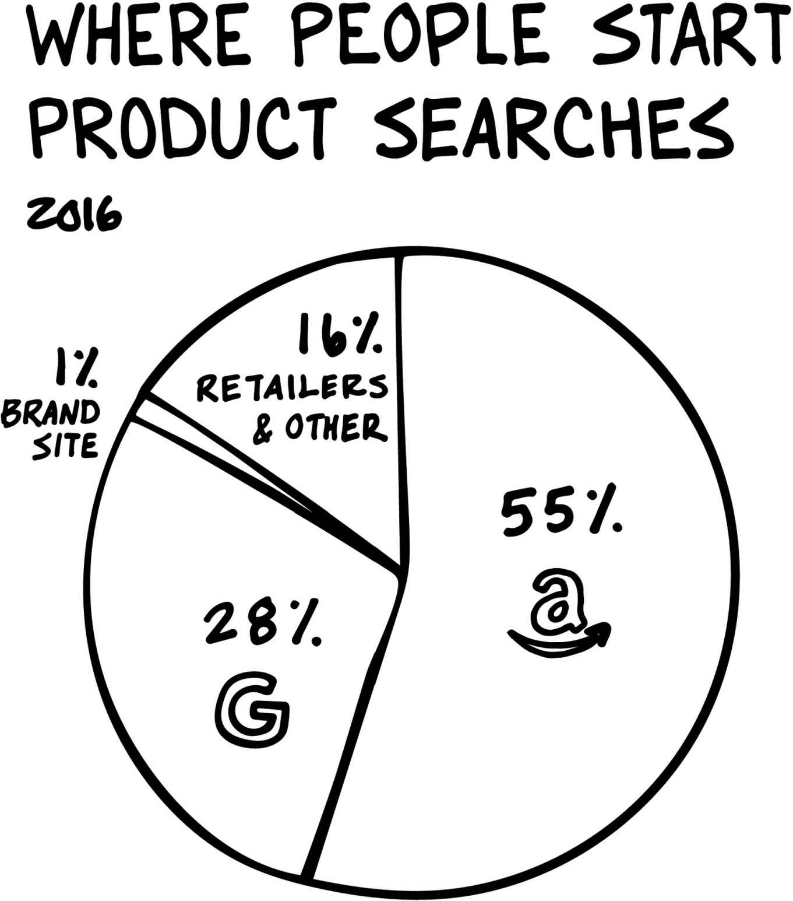

亚马逊、苹果、Facebook和谷歌是地球上最具影响力的四家公司。
几乎每个人都认为他们知道这些公司是如何到达今天这个位置的。
几乎每个人都错了。
在过去二十年里，关于四巨头的文章已经写了很多，但没有人像斯科特·加洛韦那样深刻地揭示了它们的力量和惊人成功。
加洛韦没有相信这些公司传播的神话，而是提出了根本性的问题。四巨头是如何如此彻底地渗透我们的生活，以至于我们几乎无法避开（或抵制）它们？为什么股票市场会原谅它们那些足以摧毁其他公司的罪过？当它们竞相成为世界上第一家市值万亿美元的公司时，还有人能挑战它们吗？
加洛韦以使他成为世界上最著名的商学教授之一的不敬风格，解构了隐藏在四巨头光鲜外表下的战略。他展示了它们如何以其他公司无法匹敌的速度和规模，操纵着自我们祖先住在洞穴中就驱动着我们的基本情感需求。他还揭示了你如何将它们崛起的经验教训应用到自己的商业或职业中。
无论你想与它们竞争、与它们做生意，还是仅仅生活在它们主导的世界中，你都需要理解四巨头。
[关于本书]
[扉页]
[献词]
[第1章 四巨头]
这些公司是谁，为什么要写它们？
[第2章 亚马逊]
亚马逊如何成为最大经济体中最具颠覆性的公司
[第3章 苹果]
科技走向奢侈
[第4章 Facebook]
爱是持久的关键——和出色的广告
[第5章 谷歌]
我们的现代之神
[第6章 对我撒谎]
四巨头和可疑交易
[第7章 商业与身体]
所有商业都吸引三个器官中的一个
[第8章 T算法]
到达万亿所需的条件
[第9章 第五骑士？]
谁将是下一个？
[第10章 四巨头与你]
跟随你的天赋，而非你的激情
[第11章 骑士之后]
四巨头将把我们带向何方？
[插图来源]
[关于作者]
[版权]
献给诺兰和亚历克
我仰望星空，心生疑问。
我俯视我的孩子们，找到答案。
在过去的二十年里，四个科技巨头比历史上任何实体都带来了更多的快乐、连接、繁荣和发现。一路走来，苹果、亚马逊、Facebook和谷歌创造了数十万个高薪工作岗位。四巨头负责的一系列产品和服务已融入数十亿人的日常生活。它们在你的口袋里放了一台超级计算机，正在将互联网带入发展中国家，并绘制着地球的陆地和海洋。四巨头产生了前所未有的财富（2.3万亿美元），通过股票所有权帮助全球数百万家庭建立了经济安全。总而言之，它们让世界变得更美好。
上述说法是真实的，这种叙述在数千家媒体机构和创新阶层的聚会（大学、会议、国会听证会、董事会）中反复传播。然而，请考虑另一种观点。
想象一下：一个拒绝缴纳销售税、待员工很差、摧毁数十万个工作岗位，却被誉为商业创新典范的零售商。
一家计算机公司，对联邦调查人员隐瞒关于国内恐怖主义行为的信息，却得到将该公司视为宗教般的粉丝追随者的支持。
一家社交媒体公司，分析你孩子的数千张照片，激活你的手机作为监听设备，并将这些信息出售给财富500强公司。
一个广告平台，在某些市场中占据媒体最盈利领域90%的份额，却通过激进的诉讼和游说者避开反竞争监管。
这种叙述也在世界各地传播，但是低声细语的。我们知道这些公司不是仁慈的存在，却邀请它们进入我们生活中最私密的领域。我们主动泄露个人动态，知道它们会被用于牟利。我们的媒体将经营这些公司的高管提升到英雄地位——值得信任和效仿的天才。我们的政府在反垄断监管、税收甚至劳动法方面给予它们特殊待遇。投资者推高它们的股价，提供近乎无限的资本和火力来吸引地球上最有才华的人或碾压对手。
那么，这些实体是上帝、爱、性和消费的四骑士吗？还是天启的四骑士？两个问题的答案都是肯定的。我就称它们为四骑士。
这些公司是如何聚集如此多的权力的？一个无生命的营利性企业如何能够如此深深地植入我们的心理，以至于重塑了公司可以做什么和成为什么的规则？前所未有的规模和影响力对商业和全球经济的未来意味着什么？它们是否注定像之前的其他商业巨头一样，被更年轻、更有吸引力的竞争对手所超越？还是它们已经如此根深蒂固，以至于没有人——个人、企业、政府或其他任何人——有机会？
这是四巨头在本书写作时的状况：
亚马逊： 购买保时捷Panamera Turbo S或一双Louboutin蕾丝高跟鞋很有趣。但购买牙膏和环保尿布就不那么有趣了。作为大多数美国人乃至全世界日益青睐的在线零售商，亚马逊减轻了繁琐工作的痛苦——获取你生存所需的物品。1 , 2 无需费力：无需搜寻，几乎不用收集，只需（一次）点击。他们的公式：对最后一英里基础设施的无与伦比的投资，这得益于一个非理性慷慨的放贷人——那些看到商业史上最引人注目却又最简单的故事的散户投资者：地球最大的商店。这个故事与堪比诺曼底登陆的执行力相结合（除了拯救世界的勇气和牺牲精神）。结果是一家零售商的价值超过了沃尔玛、Target、梅西百货、Kroger、Nordstrom、蒂芙尼、Coach、Williams-Sonoma、乐购、宜家、家乐福和Gap的总和。3
雅虎财经。https://finance.yahoo.com/
在我写这篇文章时，Jeff Bezos是世界第三富有的人。他很快就会成为第一名。目前的金牌和银牌得主Bill Gates和Warren Buffet从事的是很好的业务（软件和保险），但他们都没有坐拥一家每年增长20%以上、像困惑的猎物一样攻击数十亿美元行业的公司。4 , 5
苹果： 装饰着最令人垂涎的笔记本电脑和移动设备的苹果标志，是财富、教育和西方价值观的全球徽章。从本质上讲，苹果满足了两种本能需求：感觉更接近上帝，对异性更有吸引力。它通过自己的信仰体系、崇拜对象、狂热追随者和基督般的人物来模仿宗教。它的信徒中包括世界上最重要的人：创新阶层(Innovation Class)。通过实现商业中的矛盾目标——以溢价销售低成本产品——苹果已成为历史上最盈利的公司。6 这相当于一家汽车公司拥有法拉利的利润率和丰田的产量。在2016年第四季度，苹果的净利润是亚马逊自23年前成立以来所产生的总利润的两倍。7 , 8 , 9 苹果的现金储备接近丹麦的GDP。10 , 11
Facebook： 按采用率和使用量衡量，Facebook是人类历史上最成功的事物。世界上有75亿人口，其中12亿人每天都与Facebook有关系。12 , 13 Facebook（第1名）、Facebook Messenger（第2名）和Instagram（第8名）是美国最受欢迎的移动应用程序。14 这个社交网络及其产品占用户典型一天中50分钟的时间。15 在线时间中每六分钟就有一分钟花在Facebook上，移动设备使用时间中每五分钟就有一分钟花在Facebook上。16
谷歌： 谷歌是现代人的上帝。它是我们的知识来源——无处不在，了解我们最深的秘密，让我们安心地知道我们在哪里以及需要去哪里，回答从琐碎到深刻的问题。没有任何机构像谷歌一样享有信任和可信度：提交给搜索引擎的查询中大约六分之一以前从未被问过。17 哪个拉比、牧师、学者或教练有如此大的威望，能够被提出如此多以前从未向任何人问过的问题？还有谁能激发来自世界各个角落如此多对未知的询问？
作为Alphabet Inc.的子公司，2016年谷歌获得了200亿美元的利润，收入增长23%，向广告商收取的成本降低11%——这对竞争对手是一个巨大的打击。与大多数产品不同，谷歌逆向老化，随着使用变得更有价值。18 它利用20亿人的力量，一天24小时，通过他们的意图（你想要什么）和决定（你选择了什么）连接起来，产生一个无限大于各部分总和的整体。19 谷歌从每天35亿次查询中收集的消费者行为洞察，使这个骑士成为传统品牌和媒体的刽子手。你的新宠品牌就是谷歌在0.0000005秒内返回给你的结果。
虽然数十亿人从这些公司及其产品中获得了巨大价值，但令人不安的是，很少有人获得经济收益。通用汽车为每名员工创造了大约231,000美元的经济价值（市值/员工数）。20 这听起来令人印象深刻，直到你意识到Facebook创造了一个价值每名员工2050万美元的企业……几乎是上世纪组织象征每名员工价值的一百倍。21 , 22 想象一下，一个G-10经济体的经济产出，由曼哈顿下东区人口规模产生。
经济价值的增长似乎违背了大数定律并在加速。在过去四年中，从2013年4月1日到2017年4月1日，四大公司的价值增加了大约1.3万亿美元（相当于俄罗斯的GDP）。23 , 24
福布斯，2016年5月。https://www.forbes.com/companies/general-motors/
Facebook, Inc. https://newsroom.fb.com/company-info/
雅虎财经。https://finance.yahoo.com/
其他科技公司，无论新老，无论规模大小，都在失去相关性。包括惠普和IBM在内的老化巨头几乎不值得四大公司关注。成千上万的初创公司像蚊蚋一样飞过，几乎不值得一拍。任何开始显示出可能困扰四大公司潜力的公司都会被收购——以较小公司无法想象的价格。（Facebook为成立五年、仅有50名员工的即时通讯公司WhatsApp支付了近200亿美元。）最终，四大公司面临的唯一竞争对手是……彼此。
Taplin, Jonathan. “Is It Time to Break Up Google?” The New York Times .

Soper, Spencer. “More Than 50% of Shoppers Turn First to Amazon in Product Search.” Bloomberg.
无论四大公司对商业、社会或地球产生何种影响，政府、法律和较小的公司似乎都无力阻止其前进步伐。然而，仇恨中有安全感。具体来说，四大公司彼此仇恨。它们现在正在直接竞争，因为各自的领域已经没有容易的猎物了。
Google标志着品牌时代的终结，因为拥有搜索功能的消费者不再需要对品牌妥协，这伤害了苹果，苹果也发现自己在音乐和电影方面与亚马逊竞争。亚马逊是谷歌最大的客户，但它也在搜索方面威胁着谷歌——55%寻找产品的人从亚马逊开始（而在谷歌等搜索引擎上的比例为28%）。25 苹果和亚马逊正在我们面前全速冲向彼此，在我们的电视屏幕和手机上，而谷歌与苹果争夺成为定义我们时代的产品——智能手机的操作系统。
与此同时，Siri（苹果）和Alexa（亚马逊）都已进入雷鸣巨蛋，两个声音进入，只有一个会离开。在在线广告商中，Facebook现在正在从谷歌那里夺取份额，因为它完成了从桌面到移动的伟大转型。而可能在未来十年创造更多财富的技术——云计算（通过互联网提供托管服务的交付）——展现了科技时代的阿里对弗雷泽的战斗，亚马逊和谷歌凭借各自的云产品正面交锋。
四大公司正在进行一场史诗般的竞赛，争夺成为我们生活的操作系统。奖品是什么？超过万亿美元的估值，以及比历史上任何实体都更大的权力和影响力。
要理解引入四大公司的选择，就是要理解数字时代的商业和价值创造。在本书的前半部分，我们将审视每个骑手并解构他们的策略以及商业领袖可以从中得出的教训。
在本书的第二部分，我们将识别并搁置四大公司允许围绕其竞争优势起源而滋生的神话。然后我们将探索一个新模型，用于理解这些公司如何利用我们最基本的本能来实现增长和盈利，并展示四大公司如何用模拟护城河防御其市场：旨在削弱潜在竞争对手攻击的现实世界基础设施。
骑手们的罪恶是什么？他们如何操纵政府和竞争对手来窃取知识产权？这在第8章中。会有第五骑手吗？在[第9章]中，我们将评估可能的候选人，从Netflix到中国零售巨头阿里巴巴，后者在许多指标上都超越了亚马逊。他们中的任何一个是否具备开发更占主导地位平台的条件？
最后，在第10章中，我们将探讨什么专业属性能帮助你在四大公司时代蓬勃发展。在第11章中，我将谈论四大公司将把我们带向何方。
根据Alexa的说法，“斯科特·罗伯特·加洛韦是一位澳大利亚职业足球运动员，在A联赛中为中央海岸水手队踢后卫。”
那个婊子…
无论如何，虽然不是后卫，但我在我们时代的饥饿游戏中拥有前排座位。我在一个中上层下层中产阶级家庭中长大，由一位超级英雄（单亲母亲）抚养，她是一名秘书。大学毕业后，我在摩根士丹利工作了两年，这是一次误导的成功尝试和取悦女性的努力。投资银行业是一份糟糕的工作，句号。此外，我没有在大公司工作所需的技能——成熟、纪律、谦逊、对机构的尊重（也就是说，为别人工作），所以我成了一名企业家。
商学院毕业后，我创立了Prophet，一家品牌战略公司，已发展到400人，帮助消费品牌模仿苹果。1997年，我创立了Red Envelope，一家多渠道零售商，2002年上市，后来被亚马逊慢慢折磨致死。2010年，我创立了L2，一家对世界最大消费品和零售品牌的社交、搜索、移动和网站性能进行基准测试的公司。我们使用数据帮助耐克、香奈儿、欧莱雅、宝洁以及世界百大消费品公司中的四分之一攀登这四座高峰。2017年3月，L2被Gartner（纽约证券交易所：IT）收购。
在此过程中，我曾在媒体公司（纽约时报公司、Dex Media、Advanstar）的董事会任职——所有这些公司都被谷歌和Facebook击垮。我还曾在Gateway的董事会任职，该公司的年度计算机销量是苹果的三倍，但利润率只有苹果的五分之一——结局不太好。最后，我还曾在Urban Outfitters和Eddie Bauer的董事会任职，它们都试图保护自己的领土免受零售业大白鲨亚马逊的侵害。
然而，我没有的名片上写着”营销学教授”。2002年，我加入纽约大学斯特恩商学院的教师队伍，在那里教授品牌策略和数字营销，已经教过六千多名学生。对我来说，这是一个特权角色，因为我是家族两边第一个高中毕业的人。我是大政府的产物，特别是加州大学的产物，它决定给一个非常平凡的孩子一些非凡的东西：通过世界级教育实现向上流动。
商学院教育的支柱——（令人惊讶地）确实能够在短短二十四个月内将学生的平均工资从70,000美元（申请者）提高到110,000美元以上（毕业生）——包括金融、营销、运营和管理。这个课程占据了学生整个第一年，所学技能在他们职业生涯的余生中都很有用。商学院的第二年基本上是浪费：选修课（即不相关的）课程，这些课程满足终身教授的教学要求，让学生们能够喝啤酒和旅行，获得关于”在智利做生意”的迷人（无价值）见解，这是斯特恩的一门真实课程，为学生提供毕业学分。
我们要求第二年，这样我们就可以收取110,000美元而不是50,000美元的学费，来支持一个为过度教育者提供的福利项目：终身教职。如果我们（大学）要继续以超过通胀的速度提高学费，而且我们会这样做，我们需要为第二年建立更好的基础。我相信第一年的商业基础知识需要补充类似的见解，了解这些技能如何在现代经济中应用。第二年的支柱应该是对四大巨头及其经营领域（搜索、社交、品牌和零售）的研究。更好地了解这些公司、它们所利用的本能以及技术与利益相关者价值的交集，就是获得对现代商业、我们的世界和我们自己的洞察。
在纽约大学斯特恩每门课程的开始和结束时，我告诉我的学生，课程的目标是为他们提供优势，让他们也能为自己和家人建立经济安全。我写这本书也是出于同样的原因。我希望读者在这样一个经济环境中获得洞察力和竞争优势：成为亿万富翁从未如此容易，但成为百万富翁从未如此困难。
44%的美国家庭拥有枪支，52%的家庭拥有亚马逊Prime会员。[1] 富裕家庭拥有亚马逊Prime的比例比拥有固定电话的比例更高。[2] 2016年美国一半的在线增长和21%的零售增长可以归因于亚马逊。[3] , [4] , [5] 在实体店购物时，四分之一的消费者在购买前会查看亚马逊上的用户评论。[6]
有几本好书，包括布拉德·斯通(Brad Stone)令人印象深刻的《一网打尽》(The Everything Store)，讲述了一个名叫杰夫·贝佐斯(Jeff Bezos)的对冲基金分析师如何与妻子从纽约开车穿越全国到西雅图，并在路上制定亚马逊商业计划的故事。许多写关于亚马逊的人认为该公司的核心资产是其运营能力、工程师或品牌。而我则认为，亚马逊击败竞争对手集体屁股的真正原因——以及其可能升至万亿美元价值的原因——是不同的。[7] 与其他四大巨头类似，亚马逊的崛起建立在对我们本能的吸引力上。推动它前进的另一股风是一个简单、清晰的故事，这使它能够筹集和花费惊人数额的资本。
“对攻击性武器和大容量弹夹禁令支持的显著性别差异。”皮尤研究中心。
ACTA，“投票结果显示——78%的美国家庭将在这个季节展示圣诞树：美国圣诞树协会表示无需重新计票。”ACTA。
“2016年11月大选投票率。”美国选举项目。
斯托菲尔，布莱恩。“美国家庭的平均收入：你的位置如何？”《傻瓜投资者》。
格林，艾玛。“去教堂很难。”《大西洋月刊》。
“20%的美国家庭将固定电话视为重要的通讯选择。”兰德公司。
塔特尔，布拉德。“亚马逊让高收入美国人围着它转。”《时代》杂志。
狩猎采集是人类第一个也是最成功的适应方式，占人类历史90%以上的时间。[8] 相比之下，文明只不过是最近的一个小插曲。这没有听起来那么糟糕：旧石器时代和新石器时代的人每周只需花费10-20小时狩猎和采集生存所需的食物。采集者，在大多数情况下是女性，负责80-90%的努力和产出。[9] 狩猎者主要提供额外的蛋白质。
这并不令人惊讶。男性通常在远距离评估方面表现更好——猎物最初被发现的地方。相比之下，女性通常更善于观察她们的周围环境。采集者还需要对她们收集的东西更加深思熟虑。虽然番茄不会逃跑，但采集的女性仍然需要培养评估细微差别的技能，比如成熟度、颜色和形状，以识别可食用性或疾病的迹象。相比之下，当猎杀机会出现时，猎人需要快速行动。没有时间考虑细节，只需要速度和暴力。一旦猎物被杀死，猎人需要收集战利品并迅速回家，因为新鲜的猎物，甚至他们自己，都是有吸引力的目标。10
观察女性和男性购物的方式，你会发现没有太大变化。女性触摸面料，试穿鞋子搭配裙子，并要求看不同颜色的商品。男性看到能满足他们需求的东西，杀死(购买)它，然后尽快回到洞穴。11 对于我们的远古祖先来说，一旦猎物安全回到洞穴，堆积的东西似乎永远不够高。每次干旱、暴风雪或瘟疫都威胁着饥荒。因此，过度收集是一种明智的策略：东西太多的坏处是浪费精力。收集不足的坏处是饿死。
人类并不是唯一有收集冲动的生物。对于许多动物物种的雄性来说，收集意味着性。考虑一下雄性黑眵虫，这是生活在欧亚大陆和非洲干燥多岩石地区的鸟类居民。它们囤积石头。堆积越大(就像Tribeca那套阁楼的销售价格越高)，越多的雌性有兴趣交配。12 像大多数神经症一样，它从最好的意图开始，然后偏离了轨道。每年都有很多新闻报道人们被从在他们家中(不)舒适地倒塌在他们身上的物品中挖出来。那个被消防员从四十五年的报纸堆下挖出来的人并不疯狂——他在向任何拜访的人展示他的达尔文适应性。
本能是一个强大的监护人，总是在观察并在你耳边低语，告诉你为了生存必须做什么。
本能有一个摄像头，但它的分辨率很低。它需要数百年，甚至数千年才能适应。以我们对咸、甜和油腻食物的偏好为例。在人类早期，这是一个理性的策略，因为这些成分是最难获得的。现在不再如此了。我们已经制度化了这些食品类别的生产，比如汉堡王的华堡或温迪的雪糕，以经济有效地满足我们的需求。只是，我们的本能还没有跟上。到2050年，三分之一的美国人可能患有糖尿病。13
我们对更多物质的渴望也没有适应我们有限的衣柜和钱包。许多人很难维持基本的生活，买得起基本必需品。然而数百万人最终服用像立普妥这样的抗胆固醇药物，并背负高息信用卡债务，因为他们无法控制自己强烈的收集本能。
本能，加上利润动机，造成了过度。而最糟糕的经济制度，除了所有其他制度——资本主义——专门设计来最大化这个等式。我们的经济和繁荣很大程度上建立在他人的消费之上。
商业的基本观念是，在资本主义社会中消费者至上，消费是最崇高的活动。因此，一个国家在世界上的地位与其消费需求和生产水平相关。911事件后，乔治·W·布什总统对悲伤的国家的建议是”去佛罗里达的迪士尼世界，带上你的家人，享受我们想要享受的生活方式。“14 在战争和经济困难时期，消费已经取代了共同牺牲的地位。国家需要你继续购买更多的东西。
很少有行业通过挖掘我们的消费自我创造了比零售业更多的财富。在世界上最富有的四百人中(不包括那些继承财富或从事金融业的人)，名单上零售业的名字甚至比科技业还多。Zara的传人阿曼西奥·奥特加是欧洲最富有的人。15 排名第三的LVMH的伯纳德·阿诺特，可能被认为是现代奢侈品之父，拥有并经营3300多家商店——比家得宝还多。16 , 17 然而，零售业备受关注的成功，加上低门槛和开设自己的”小店”的梦想，创造了一个过度商店化的行业，像大多数行业一样，处于持续变化的状态。以下是美国零售环境的”动态”程度：
2016年，零售业基本可以被描述为亚马逊的疯狂成功和该行业其他部分的灾难，除了少数例外，如丝芙兰、快时尚和Warby Parker。电商公司的死亡悄无声息，不是轰然倒下，因为虽然实体零售有面孔，但电商的死亡是无面孔的，不那么令人震惊。有一天，你经常访问的网站就不存在了——于是你找到其他网站，再也不回头。
零售商的死亡之路始于利润率侵蚀——零售业的胆固醇——并以无休止的促销和打折结束。你可以通过打折买到一点时间，但故事几乎总是以糟糕告终：在2016年12月假日季平均持有12%更多库存的情况下，零售商将销售促销从34%增加到52%。
我们是如何走到这一步的？让我们简要回顾一下零售业的历史。在美国和欧洲，零售业经历了六个主要发展阶段。
二十世纪上半叶的零售业以街角小店为特征。邻近性主导着时代。你步行到商店，能拿多少就带多少回家，有时是每天如此。零售店通常是家族经营，在社区中发挥着关键的社交作用，在广播和电视成为主导之前传播当地新闻。他们的能力是客户关系管理(Customer Relationship Management，CRM)，在这个术语被发明之前。店主了解他们的客户，会基于你的好名声提供信贷。我们对零售业的热爱以及当传奇零售商申请破产时我们感受到的怀旧情怀（注意当一家知名石油设备租赁公司倒闭时并不会成为新闻）是我们对零售业历史情感的体现，这已经融入我们的文化中。
伦敦的哈罗德百货和纽卡斯尔的Bainbridge’s迎合了一个新的市场群体：不再受陪伴人员约束的新兴富裕女性。在伦敦，标志性的塞尔弗里奇百货提供一百个部门、餐厅、屋顶花园、阅读和写作室、外国访客接待区、急救室以及知识渊博的楼层服务人员。楼层员工接受培训，并通过一个新颖的概念获得报酬——销售佣金。通过服务差异化和成为顾客临时朋友和购物指南的理念开创了新天地。它将大规模零售人性化，并将投资重新导向店铺层面的人力资本。在塞尔弗里奇之后，这些建筑、照明、时尚、消费主义和社区的庆典传遍了欧洲和美国。
百货商店也重塑了企业与消费者之间的关系。传统上，消费者企业承担父权角色，告诉你什么是最好的。教会/银行/商店处于主导地位。你应该感到幸运能获得他们集体智慧的产物。是哈里·塞尔弗里奇创造了”顾客永远是对的”这句话——在当时可能显得软弱和谄媚。实际上，这是深刻而深远的：现存最古老的五家零售商中有四家是百货商店：布卢明代尔、梅西百货、Lord & Taylor和Brooks Brothers。
当美国朝向世纪中叶飞速发展时，汽车和冰箱意味着我们可以开得更远去购买更多我们能安全长期储存的东西。配送方面的进步导致更少的访问、更大的商店、更多的选择和更低的价格。百货商店演变为购物中心。同样得益于汽车，郊区蓬勃发展。开发商通过提供一个舒适的目的地来回应消费者，在一个位置包含几个不同的商店，通过美食广场和电影院连接。对于没有明显中心的郊区来说，购物中心成为了主街。（新泽西州Short Hills的人们对他们当地购物中心如此自豪总是让我困惑。这就像拥有一个Quiznos特许经营权：我说保持低调吧。）到1987年，美国零售销售的一半发生在购物中心。
但到2016年，商业媒体哀叹美国制度的终结。美国购物中心价值的44%集中在仅仅一百个地方，每平方英尺的销售额在过去十年中下降了24%。购物中心的健康状况更多地反映了当地经济而非格式本身。郊区萧条使许多购物中心消失。然而，许多仍然繁荣——特别是那些有强大产品组合的——良好的商店组合、停车位，以及靠近收入最高四分之一家庭的地理位置。
1962年为我们带来了第一个绕地球轨道飞行的美国人、古巴导弹危机、《贝弗利山人》——以及沃尔玛、塔吉特和凯马特。
大型零售店零售引起了社会规范的巨大转变，并改变了零售格式。批量购买商品并将这些节省传递给消费者的理念本身并不革命性。更重要的是，作为一个国家，我们决定将消费者放在队伍的最前面，在各个方面。在家得宝，你可以挑选自己的木材。在百思买，你可以逛遍所有可能的电视，并用你的汽车将选择带回家。
以最低价格获得我们需要的商品现在比任何特定公司、行业甚至整个社区的健康都更重要。看不见的手开始狠狠打击美国和欧洲各地的小型或低效零售商。曾经是社区生活重要组成部分的夫妻店面临着巨大的竞争。这个时代还见证了新一代零售基础设施技术，包括1967年在Kroger安装的第一台条码扫描仪。29
直到六十年代，法律禁止零售商为批量采购提供折扣。立法者正确地担心这会让数千家本地商店倒闭。此外，制造商品牌通常设定零售商允许对其产品收取的价格。因此，打折是一种有限且钝化的武器。
由于各种原因，包括利润率下降和竞争加剧，这些限制在六十年代被取消，伟大的”零价竞赛”开始了。今天，在hm.com的主页上可以找到一件长袖罗纹高领连衣裙，仅售9.99美元。以同样的价格你还可以买到一件男士质感精细针织毛衣。这很便宜，不仅以今天的美元计算，即使以1962年的美元计算也是如此——这是一个惊人的成就，也是残酷的底价竞赛的证明。
当枷锁被解除后，追求”以更少换更多”的大型卖场怪兽创造了数千亿的财富。接下来的三十年见证了当时最有价值的公司和世界首富Sam Walton从这种模式中崛起，更不用说我们集体认为消费者现在至高无上的观点。人们哀叹Amazon是摧毁就业的机器。但Walmart才是始作俑者。价值主张清晰而有说服力：当你在Walmart购物时，就像得到了升职——你得到了更好的生活，喝着Heineken而不是Budweiser啤酒，用着Tide而不是Sun洗涤剂。
Walmart是伟大的平衡器。但大多数消费者不想平等；他们想要特别。有相当一部分消费人群愿意为这种关注支付溢价。这部分人群往往也是拥有最多可支配收入的消费者。
朝着”以更少换更多”的进军为那些寻求专业知识和对生活抱有抱负的社会信号的消费者创造了一个真空。因此专业零售兴起，主要让富裕消费者专注于独家品牌或产品，不考虑价格。因此有了Pottery Barn、Whole Foods和Restoration Hardware。
强劲的经济有所帮助。这是繁荣的八十年代，年轻的城市专业人士在这些专业商店中找到了他们的第二个家——享乐宫殿，在那里他们可以为家里和衣橱购买东西，更好地表达他们有多酷多有教养。你可以从只卖蜂蜜烘焙火腿的店里找到合适的猪肉，或者从只卖蜡烛的店里(Illuminations)买到完美的蜡烛，或者寻找一些床上用品和其他物品。许多这些专业零售商几乎无缝地过渡到电子商务时代，因为许多人在直邮目录上磨练了技能，熟悉数据和履约。
真正定义专业零售时代的零售商是The Gap。The Gap没有把钱花在广告上，而是投资于店面体验，成为第一个生活方式品牌。在The Gap购物让你感觉很酷，而购买Pottery Barn沙发让一代美国人感到他们已经”成功了”。专业零售商认识到即使是购物袋也提供了自我表达的好处——如果你提着Williams-Sonoma的袋子，你就很酷，享受生活中的美好事物，对烹饪有热情。
Jeff Bezos对零售业的影响超过了零售业对Jeff Bezos的影响。在零售业的每个前述时代，都有聪明人利用人口统计或品味的转变，创造了数十亿美元的价值。但Bezos看到了技术转变，然后用它从根本上重构了整个零售世界。如果没有Bezos为这个媒介带来愿景和专注，电子商务将黯然失色。
在1990年代，对几乎每个纯电商公司来说，电子商务都是一个糟糕、无回报的业务(现在仍然如此)。电商成功的关键不是执行，而是围绕公司潜力制造炒作，然后在纸牌屋倒塌前卖给某个富有的冤大头。最新的例子是闪购网站——承诺惊人折扣但只在未指定时间提供的网站。媒体疯狂报道。看出规律了吗？炒作不等于销售。
零售业可能从来没有在风险调整基础上是一个好生意。但在西雅图零售业的大白鲨出现并开始吞噬一切之前，它明显没那么糟糕。在过去十年中，二十世纪零售图标——从Macy’s到JCPenney’s——的市值从糟糕到灾难性不等。每个行业的投资资本都是有限的，Amazon的愿景和执行已经吸收了绝大部分投资。结果是一个曾经繁荣的行业正在被单一玩家蹂躏和削弱。
Lindsey, Kelsey. “为什么闪购热潮可能结束了——下一步是什么。” RetailDIVE.
由于我们生活在消费文化中，零售业的自然轨迹是向上的。因此，当天时地利人和，一个新概念奏效时，它可以快速扩展并为消费者和股东创造巨大价值。沃尔玛确实为人们提供了更好的生活，或至少是更物质化的生活。而且你真的可以通过穿着Zara Silver Patent Platform Oxfords鞋子和使用Williams-Sonoma的Breville榨汁机制作果汁来让自己感觉更好。
这次不同的是，这种价值是由单一公司以前所未有的速度创造的，因为作为虚拟企业，亚马逊可以扩展到数亿客户，并跨越几乎所有零售行业，而无需承受建设实体店和雇用数千名员工的传统拖累。在亚马逊上，贝佐斯意识到，每一页都可以是一家商店，每个客户都可以是销售员。而且公司可以发展得如此迅速，以至于不会给竞争对手留下任何角落来开拓利基市场。
在第一次互联网繁荣期间，杰夫·贝佐斯只是另一个拥有计算机科学学位的华尔街逃离者，他被电子商务的承诺所吸引。但他的愿景和狂热的专注使他在众人中脱颖而出。对于1994年在西雅图推出的在线店面，贝佐斯选择了”亚马逊”这个名字，作为他设想的商品流动规模的指示器。然而，他考虑的另一个名字（他仍然拥有该URL）更加恰当：relentless.com。
当贝佐斯创立亚马逊时，在线购物无法服务真正的采集者，因为有限的网络技术（糟糕的体验）具有拉达（俄罗斯汽车品牌）的细致入微和细节——丑陋且动力不足。品牌有两个要素：承诺和表现。九十年代到二十一世纪初的”互联网”品牌只具备了一半。
1995年的电子商务需要成为你容易识别、能够杀死并带回洞穴而价值损失很少或没有风险意外带回会毒害部族的植物的猎物。贝佐斯决定这种动物是…书籍。
容易识别、杀死和消化。书籍堆放在仓库中，有”内容预览”功能。猎物已经被杀死并为你堆叠好了。一个行业——书评——出现了，用来识别哪些书值得食用/阅读，绕过了商店提供的策展勤奋工作。贝佐斯意识到评论可以为他完成零售的艰难工作。亚马逊可以利用互联网不那么糟糕的属性：选择和分销。因此，没有像照明良好的店面、门铃和友好销售人员这样的细致入微。相反，他在西雅图机场附近租了一个仓库，并以机器人可以轻松操作的方式填充它。
在早期，亚马逊专注于书籍和猎人——那些有使命感、寻找特定产品的人。随着岁月流逝，宽带开始提供细致入微的色彩，采集者出现了，愿意浏览、权衡选择并花费时间。贝佐斯知道他可以迁移到人们还不习惯在线购买的物品，比如CD和DVD。预示着亚马逊对我们社会中所有美好事物的威胁，苏珊·博伊尔的CD《我梦想过的梦想》在该平台上创下了销售记录。
为了超越竞争对手并强化选择的核心价值，亚马逊推出了亚马逊市场，让第三方填补长尾。卖家获得了世界最大电子商务平台和客户群的访问权限，而亚马逊能够在不承担额外库存费用的情况下大幅扩展其产品。
亚马逊市场现在占亚马逊销售额的400亿美元，即40%。卖家对巨大的客户流量感到满意，不觉得有必要投资自己的零售渠道。与此同时，亚马逊获得了数据，可以在任何类别变得有吸引力的时刻进入任何业务（开始自己销售产品）。因此，如果亚马逊愿意，它可以开始直接提供“老亚洲男人墙贴”、“尼古拉斯·凯奇枕套”和“55加仑装润滑油桶”。
亚马逊迎合了我们收集更多物品的猎人-采集者本能，且努力最小化。我们对物品有着强烈的迷恋，因为生存属于拥有最多树枝、有合适石头砸开东西、获得最多彩泥土在墙上画图像的穴居人，这样他的后代就知道何时种植庄稼，或要避免什么危险动物。
对物品的需求是真实的：物品让我们保暖和安全。它让我们储存和准备食物。它帮助我们吸引伴侣和照顾后代。而容易获得的物品是最好的物品，因为它消耗更少的能量，给你时间做其他重要的事情。
没有资本密集的商店，贝佐斯可以投资于自动化仓库。规模就是力量，亚马逊能够提供任何实体零售商都负担不起的价格。他提供交易——对忠诚客户、作者、配送公司、同意在自己网站上投放广告的经销商。他吸引了越来越多的合作伙伴到亚马逊。贝佐斯突破了书籍和DVD的狭窄世界，进入…一切。这种实验和侵略性是军方所称的OODA循环：“观察、定向、决定和行动”。通过快速果断地行动，你迫使敌人——在这种情况下是其他零售商——对你的上一个动作做出反应，而此时你正在进入下一个动作。在亚马逊的情况下，这是通过对消费者的无情关注来完成的。
同样有帮助的是，在亚马逊存在的前十五年的大部分时间里，传统零售CEO倾向于提醒人们电子商务只占零售业的1%、2%、3%、4%、5%、6%…百分比。直到亚马逊拥有巨大的獠牙和无限资本——为时已晚，才有协调一致的努力来应对这种威胁。
快进到2016年——美国零售业增长4%，而Amazon Prime增长了40%以上。互联网是世界最大经济体中增长最快的渠道，而Amazon正在占据这一增长的大部分份额。在至关重要的假日购物季（2016年11月和12月），Amazon占据了在线销售的38%。接下来九个最大的在线零售商合计只占据了20%。2016年，Amazon被认为是美国声誉最好的公司。
由于美国经济的零售增长基本上停滞不前，Amazon的增长必定来自其他地方。谁在亏损？所有人。下图描述了美国主要零售商十年来的股票升值情况（2006-2016年），说明了一切：
Choudhury, Mawdud. “Brick & Mortar U.S. Retailer Market Value—2006 Vs Present Day.” ExecTech.
Yahoo! Finance. https://finance.yahoo.com/
过多的店铺、工资停滞、消费者口味变化，以及Amazon的存在，为零售业创造了完美风暴。如今，大多数零售商都在遭受重创。大多数，但不是全部。
Amazon已经成为零售业的黑暗王子，占据着独特的地位——与该行业其他部分呈负相关。
传统上，同一行业的股票会同步交易——彼此保持一致。现在不再如此。股票市场现在相信，对Amazon有利的事情对零售业不利，反之亦然。这在商业历史上几乎是独一无二的情况。而且这已经成为一个自我实现的预言，因为Amazon的资本成本下降，而其他所有零售商的成本都在上升。现实是什么并不重要——Amazon会获胜，因为它在玩扑克时拥有十倍的筹码。Amazon可以将其他所有人挤出游戏。
真正的忧虑将在人们开始质疑对Amazon有利的事情是否对社会不利时开始。有趣的是，即使一些科学家和科技大亨（Stephen Hawking、Elon Musk）公开担心人工智能的危险，其他人（Pierre Omidyar、Reid Hoffman）为此提供研究资金，Jeff Bezos仍在Amazon尽可能快地实施机器人技术。该公司在2016年将其仓库中的机器人数量增加了50%。
Peterson, Hayley. “Amazon Is About to Become the Biggest Clothing Retailer in the US.” Business Insider.
随着Amazon Go的发布——一个无收银员便利店，该公司进入了实体零售业务。但有一个转折点：第一批Amazon Go杂货和商品店的顾客可以简单地走出商店来购买商品。传感器会在你走出时扫描你的购物袋和应用程序。没有结账过程。
其他零售商再次被打得措手不及，现在正在争相取消自己的结账流程。Amazon的最新举措让谁面临风险？340万美国人（占美国劳动力的2.6%）从事收银员工作。这是大量的工人——接近美国中小学教师的数量。
当零售商正在应对Amazon Go的进攻时，硬件制造商以及很快的品牌商正在努力应对Amazon Echo的冲击。
Echo是那个类似扬声器的圆柱体，而Alexa是它的人工智能，以亚历山大图书馆命名。Alexa旨在像个人通讯器一样运作，让用户能够播放音乐、搜索网络并获得问题的答案。最重要的是，它通过强大的语音识别软件将购物提升到了下一个层次。说”Alexa，把Sensodyne加入购物车”或者（如此麻烦）按下Trojan Condoms Dash按钮——在一小时或更短时间内，就可以开始了。而且Alexa每次使用都会变得更聪明。
这是顾客得到的。对Amazon来说，回报更大：Amazon的客户如此信任它，以至于他们允许公司监听他们的对话并收集他们的消费数据。这将使Amazon比任何其他公司更深入地渗透到消费者的私人生活和欲望中。
短期内，Go和Echo表明该公司正朝着在其运营中实现零点击订购的方向前进。利用大数据和对消费者购买模式的无与伦比的了解，Amazon很快就能满足你对物品的需求，而无需决定或订购的摩擦。我称这个概念为Prime Squared。你可能需要时不时地校准一下——度假时少一些东西，有客人时多一些，当你不再喜欢Lindt巧克力时少一些——但其他一切都将在零售业的自动驾驶仪等效系统上运行。你的订单将带着一个空盒子到达；你将把不想要的东西放入退货盒中，Amazon将记录你的偏好。下次，退货盒会变小。Amazon在2017年6月推出其Wardrobe服务时朝着零点击订购方向迈出了一步，允许顾客选择服装和配饰在家试穿，然后决定保留哪些。顾客有七天时间做决定，只有在做出选择后才会收费。
现在，比较一下在下班回家的路上停在购物中心，寻找停车位，排队等候却发现他们没有你要找的那种灯泡，为了结账其他东西又要排另一个队，然后还要应对回家路上的交通堵塞。购物中心或大型商店，更不用说夫妻店，将如何竞争？我们正在见证零售业的大清算。正如我们见证了从事农业工作的人口比例在一个世纪内从50%下降到4%，我们将在未来三十年看到零售业出现类似的下降。 43
亚马逊坚持不懈地专注于让消费者购物越来越无摩擦，其与投资者关系的能力，以及投资B2B（为竞争对手提供平台服务）的决定，使其在万亿竞赛中占据了极点位置。真正巩固亚马逊在零售世界主导地位的是，它在每一步行动中都致力于收集世界上每个消费者的海量数据。亚马逊已经对你我了解很多。很快它将比我们自己更了解我们的购物偏好。而我们对此很满意，因为我们会自愿交出所有这些信息。
亚马逊比现代任何公司都更长时间地获得更便宜的资本。
九十年代大多数成功的风投支持的科技公司在向投资者展示回报之前筹集不到5000万美元。相比之下，亚马逊在公司（算是）实现盈亏平衡之前筹集了21亿美元的投资者资金。 44 正如公司所展示的，亚马逊可以推出一款手机，投资数千万，也许数百万美元进行开发和营销，让它在前三十天内失败，然后将整个灾难视为一个减速带。
这就是耐心资本。如果其他任何财富500强公司——无论是惠普、联合利华还是微软——推出一款被证明是死胎的手机，他们的股票会下跌20%以上，就像亚马逊的股票在2014年那样。 45 但当股东尖叫时，那些其他公司的CEO会眨眼并下令全公司撤退并收缩触角。亚马逊不会。为什么？因为如果你有足够的筹码并且能玩到日出，你最终会得到21点。
这切中了亚马逊的核心竞争力：讲故事。
通过讲故事，描绘一个巨大的愿景，亚马逊重塑了公司与股东之间的关系。故事通过媒体渠道传播，特别是那些报道商业和科技的媒体。他们中的许多人已经决定科技CEO是新的名人，他们随时给亚马逊聚光灯、中心舞台和明星地位。到目前为止，公司与股东的合约是：给我们几年时间和数千万美元…然后我们将开始以利润的形式向你们返还资本。亚马逊爆炸了这一传统，通过讲故事用愿景和增长取代利润。这个故事引人注目且简单——信息传达的强力组合。
故事：地球上最大的商店。
战略：对消费者利益进行巨额投资，经受时间考验——更低的成本、更大的选择和更快的配送。
由于反映向这一愿景稳步推进的增长率，市场推高亚马逊股价并为该公司提供极其便宜的资本。大多数零售商以利润的八倍交易。 46 相比之下，亚马逊以四十倍的倍数交易。 47
此外，亚马逊训练华尔街以不同的标准要求他们——期待更高的增长但更低的利润。这使公司能够将每年赚取的（大量）增量毛利率美元重新投入业务——并避免整个税收问题。这反过来又为在业务周围挖掘越来越深的护城河提供资金。
利润对投资者来说就像海洛因对瘾君子一样。投资者爱利润，我是说真的爱它们。是的，投资、增长和创新，但不敢阻止我从skag（利润）中获得快感。
亚马逊革命性的资本配置时间表是商学院世代相传的教义——为了追求长期目标而完全无视投资者的短期需求。这样做的公司就像跳过舞会去学习的年轻人一样罕见。
正常商业思维：如果我们能以历史低利率借钱、回购股票并看到管理层期权价值增加，为什么要投资于增长和随之而来的工作机会？那是有风险的。
亚马逊商业思维：如果我们能以历史低利率借钱，为什么不将这些钱投资于极其昂贵的控制配送系统？这样我们就能在零售业中获得一个难攻不破的地位并窒息我们的竞争对手。然后我们就能真的变得很大、很快。
沃尔玛想要给它的父母留下深刻印象，正在认真地进行长期投资。但市场不相信这家本顿维尔公司的这种成熟。在沃尔玛2016年第一季度财报电话会议上，管理层告知华尔街，公司将大幅增加技术资本支出以”赢得零售业的未来”。 48
这对沃尔玛来说是正确的、也是唯一的选择。然而，这一战略意味着预期收益的减少。于是出现了戒断症状和呕吐。在第二天交易开盘后的二十分钟内，沃尔玛的市值减少了相当于2.5个梅西百货——200亿美元。 49
作为亚马逊的投资者就像在米特·罗姆尼家长大：你就是无法获得海洛因（利润）。在一次又一次的财报电话会议中，亚马逊强化其增长愿景，淡化利润，并提醒股东它从不支付股息。安抚剂是世界统治的愿景，配有酷炫的新技术（无人机）、内容（电影）和比iPad以来任何消费硬件产品都有更多采用率和话题性的《星际迷航》三录仪（Amazon Echo）。这是讲故事，但以《哈利·波特》的方式，下一个故事比原作更好。
贝索斯先生精明而公开地将亚马逊的风险承担分为两种类型：1）那些你无法退回的（“这是公司的未来”），2）那些你可以退回的（“这不起作用，我们退出”）。
贝索斯的观点是，承担许多2型实验对亚马逊的投资策略至关重要——包括飞行仓库或保护无人机免受弓箭攻击的系统。他们已经为两者都申请了专利。2型投资成本低廉，因为它们很可能在浪费太多资金之前被终止，并且在树立前沿公司形象方面获得丰厚回报。股东喜欢这些故事；这让他们觉得自己参与了一场激动人心的冒险。另外，偶尔它们确实会成功——当它们成功时，亚马逊有燃料（资本）倾注到火花上，点燃一场烧毁竞争对手的风暴。这里被忽视的教训，除了拥有大量资本外，是愿意对不起作用的举措或产品进行婴儿杀戮，从而释放资本（在亚马逊的情况下是人力资本）来开始新的疯狂举措。
我在传统公司的经验是，任何新事物都被视为创新，分配给它的人，像任何父母一样，对项目变得不理性地充满激情，拒绝承认你的小项目变得多么愚蠢和丑陋。因此，传统公司不仅投资资本较少，而且击球机会也较少。亚马逊在不确定某事有效之前不增加投资方面表现出真正的纪律性。尽管过去三年对亚马逊进入实体零售的炒作很多，但他们努力的总和大约是二十几家商店。他们还没有找到一个他们认为可以扩展的格式。
贝索斯，像任何伟大的领导者一样，有能力以一种让疯狂想法看起来不那么疯狂而是实用的方式来解释它。等等，这很明显——我们怎么没想到？真正疯狂的东西不是愚蠢的，而是”大胆的”。是的，漂浮仓库第一次听起来很疯狂。现在，考虑一下租赁和运营传统地面仓库的成本。它最大的开支是什么？分别是邻近性和租金。现在，再想想漂浮仓库。不那么疯狂了，对吧？
贝索斯永恒的信息是，定期全力出击是亚马逊的天性。但这个类比是错误的：在棒球中，满垒本垒打只能得四分。相比之下，当西雅图公司击中球时，Amazon Prime和AWS的本垒打产生了几千分。正如贝索斯在亚马逊1997年第一封年度信中写道：“给定10%的机会获得100倍回报，你应该每次都下这个赌注。”
不用说，大多数CEO不会这样思考。大多数甚至不会承担成功机会少于50%的风险——无论潜在回报多么巨大。这是旧经济公司向新经济公司泄露价值的一个重要原因。今天的成功公司可能拥有资产、现金流和品牌资产，但它们对待风险的方式与许多见过死亡的科技公司不同。它们为今天而活，并承认巨大的成功只能通过重大的，甚至是生存性的风险来实现。
有一种幸存者偏见困扰着旧经济CEO及其股东。我的噩梦工作是”在你搞砸之前保持隐形”的职位。这些工作无处不在：IT、企业财务主管、审计员、空中交通管制员、核电站操作员、县电梯检查员、TSA官员。你永远不会出名，但你有很小但可怕的机会变得臭名昭著。成功的旧经济公司的CEO有类似的偏见——他们是”富有的，直到他们搞砸”。
CEO薪酬变得如此疯狂，以至于在风险调整基础上，你最好远离交通，记录你的六到八年，然后富有地退休。然而，如果你谷歌”商业史上最大的错误”，大多数结果是公司未能承担的风险，比如Excite和Blockbuster分别放弃收购Google和Netflix。
历史偏爱勇敢者。薪酬偏爱温顺者。作为财富500强公司的CEO，你最好走经常走过的路并保持航向。大公司可能有更多资产来创新，但他们很少承担大风险或以牺牲现有业务为代价进行创新。他们也不会冒险疏远供应商或投资者。他们打法不是为了输，股东为此奖励他们——直到这些股东离开并购买亚马逊股票。
大多数董事会问管理层：“我们如何用最少的资本/投资建立最大的优势？”亚马逊颠倒了这个问题：“我们能做什么来给我们一个非常昂贵且没有其他人能承担得起的优势？”
为什么？因为亚马逊能够获得成本更低、回报期望更低的资本，这是同行无法比拟的。将送货时间从两天缩短到一天？这需要数十亿美元的投入。亚马逊必须在城市附近建造智能仓库，而那里的房地产和人工成本都很昂贵。按照任何传统标准来衡量，这都是一项巨大的投资，但回报却微乎其微。
但对亚马逊来说，这简直是完美的策略。为什么？因为梅西百货、西尔斯和沃尔玛无法承担数十亿美元的成本来将其相对较小的在线业务配送时间从两天缩短到一天。消费者喜欢这种服务，而竞争对手只能在一旁无能为力。
2015年，亚马逊在运费上花费了70亿美元，净运费损失50亿美元，而总利润仅为24亿美元。52 疯狂吗？不。亚马逊正在用世界上最大的氧气罐潜入深海，迫使其他零售商跟随它，匹配其价格，并应对改变了的客户配送期望。区别在于其他零售商只有肺里的那点空气，正在溺水。亚马逊将会浮出水面，基本独享零售业的海洋。
进行第二类投资也使亚马逊的股东对失败变得不那么敏感。四大巨头都有这个特点——看看苹果和谷歌的不那么秘密的自动驾驶汽车项目，以及Facebook定期推出新功能来进一步货币化其用户，当实验效果不佳时又撤回这些功能。还记得Lighthouse吗？正如贝索斯在第一封年度股东信中也写道：“失败和发明是不可分割的双胞胎。要发明就必须实验，如果你事先知道它会成功，那就不是实验了。”53
四大巨头都严格要求自己要走在前面，进行大胆、聪明的押注，并容忍失败。这种失败基因是亚马逊乃至更广泛的美国经济成功的核心。我创立或共同创立了九家公司，我的成绩，说得好听点，是3胜4负2平。没有其他社会会容忍，更不用说奖励我。美国是第二次机会的土地，即使杰夫·贝索斯可以预见地是全球主义者，但亚马逊的文化明显是红白蓝的。
大多数超级富豪都有一个共同点：失败。他们都经历过失败，通常是大量的失败，因为通往财富的道路充满风险，而这些风险往往最终确实…嗯，很有风险。一个鼓励你在被击中头部后站起来，拍拍裤子上的灰尘，重新站到击球区，下次更用力挥棒的社会，就是造就亿万富翁的秘密配方。这种相关性很明显。美国拥有最宽松的破产法，吸引风险承担者，正如你所料，拥有他们中的大部分。全球最富有的50人中有29人居住在美国，三分之二的独角兽公司（估值10亿美元以上的私人公司）总部设在这里。54 , 55
正如拥有矿山下的土地更好一样，向矿工出售铲子也是好生意。加州淘金热在170年前证明了这一点。亚马逊证明这在今天仍然适用。亚马逊拥有一个利润丰厚的矿山：该公司将其收入分为消费产品零售销售（亚马逊自营和亚马逊市场）和”其他”，后者包括亚马逊媒体集团的广告销售和云服务(AWS)。56
大多数电子商务公司永远无法实现盈利，在某个时候，投资者会厌倦”重新加热的贝索斯”愿景。这些公司被出售（Gilt、Hautelook、Red Envelope）或关闭（Boo.com、Fab、Style.com）。赢家通吃的生态系统、加速的客户获取、最后一公里成本以及普遍较差的（在线）体验相结合，使得纯电子商务变得不可持续。
亚马逊也无法逃避这个事实。但即使亚马逊的核心业务（纯电子商务）很难盈利，亚马逊为消费者提供的巨大价值已经创造了地球上最受信任、声誉最好的消费者品牌。57 , 58 亚马逊在电子商务销售量方面占据主导地位，但其商业模式不容易复制或维持。如今，人们很容易忘记亚马逊直到2001年第四季度才实现首次盈利，距离其成立已经七年，59 从那以后一直在盈利和亏损之间摇摆。在过去几年中，亚马逊利用这种品牌资产，将其用于扩展到其他业务，并扩展到其他更好（更有利可图）的业务。回顾过去，亚马逊的零售平台可能只是建立关系和品牌的特洛伊木马，后来通过其他业务实现了货币化。
虽然从2015年第一季度到第三季度，亚马逊零售业务的同比增长率在13%到20%之间，但亚马逊网络服务——这家零售商的服务器和数据存储技术网络——在同一时期增长了49%到81%。AWS还成为亚马逊总营业收入的重要组成部分，从2015年第一季度的38%增长到2015年第三季度的52%。60 分析师预测，到2017年底，AWS的销售额可能达到162亿美元，使其价值达到1600亿美元——超过该公司的零售部门。61 换句话说，虽然世界仍然认为亚马逊是一家零售商，但它已经悄悄成为一家云公司——世界上最大的云公司。
亚马逊并未止步于网络托管服务。仅Amazon Media Group一家可能很快就会超越Twitter 2016年25亿美元的收入，62 使其成为最大的在线媒体平台之一。63 Amazon Prime作为美国最不排他的俱乐部（44%的美国家庭64），以每年99美元的价格提供免费两日送达、精选产品两小时送达（Amazon Now），以及音乐和视频流媒体服务，包括原创内容。65 内容创意会获得试播集预算，然后观众在线投票决定哪些剧集获得绿灯制作。
亚马逊就像任何主权超级大国一样，采取三位一体战略：空中、陆地和海上。作为零售商，你能在一小时内把商品送到消费者手中吗？没问题。亚马逊可以为你做到（收取费用），因为它正在进行你无法承担的投资——城市中心附近由机器人运营的仓库、数千辆卡车以及专用货运飞机。每天，四架波音767货机从加利福尼亚州特雷西经由附近斯托克顿的机场（三年前规模只有现在的一半）运输货物，送达一个100万平方英尺的仓库，而这个仓库去年还不存在。66
2016年初，亚马逊获得了联邦海事委员会颁发的许可证，可以作为海运运输中介实施海运货运服务。因此，亚马逊现在可以运输他人的货物。这项名为亚马逊物流(FBA)的新服务不会直接为个人消费者带来太多好处。但它将使亚马逊的中国合作伙伴能够更轻松、更具成本效益地通过集装箱将产品运输过太平洋。你想赌多久亚马逊会主导海洋运输业务吗？67
跨太平洋（主要）运输货物的市场价值3500亿美元，但利润微薄。运输商收取1300美元运费来运输一个可容纳多达1万件产品的40英尺集装箱（每件13美分，或不到10美元就能运送一台平板电视）。这是一个粗糙肮脏的生意，除非你是亚马逊。这一成本的最大组成部分来自劳动力：装卸船只和文书工作。亚马逊可以部署硬件（机器人技术）和软件来降低这些成本。结合公司新兴的飞机机队，这可能为亚马逊带来另一个巨大的业务。68
凭借无人机、757/767飞机、拖拉机拖车、跨太平洋运输，以及监督过世界上最复杂物流运营的退役军事将领（不开玩笑）（试试给六个月以上不浮出水面或停靠的潜艇和航空母舰供应物资），亚马逊正在建设历史上最强大的物流基础设施。如果你像我一样，这只能让你敬畏：我甚至无法确保需要时冰箱里有佳得乐。
亚马逊世界主导战略的最后一块砖是利用在线积累的大量资产来征服线下零售领域。没错——我指的是店铺，那些本应因电子商务而消亡的东西。
事实是，实体店铺的死亡被严重夸大了。实际上，死亡的不是店铺，而是中产阶级——以及为这个曾经伟大群体及其社区服务的企业。美国最大的购物中心业主是Simon Property Group。其股价在2017年遭受重创，此前在2016年达到历史高点。69 然而，Simon可能会没事，因为它出售了中低收入社区的物业，专注于富裕社区。基于销售额、规模和质量等指标，美国购物中心总价值的44%现在集中在约一千个购物中心中的前一百个。另一个高端购物中心业主Taubman Properties报告，租户2015年平均每平方英尺销售额为800美元，比2005年增长57%。相比之下，经营”B”级和”C”级购物中心的CBL & Associates Properties Inc.在同期每平方英尺销售额仅增长13%，达到374美元。70
所以，店铺会继续存在——如果我们仔细考虑我们在谈论哪些店铺的话。但电子商务也是如此。最终，真正的赢家将是那些了解如何整合两者的零售商。亚马逊旨在成为那样的公司。
下一个零售时代将被称为”多渠道时代”——一个网络、社交和实体店铺整合对成功至关重要的时代。一切都表明亚马逊也将主导那个时代。我一直说亚马逊会开设店铺——很多店铺。对他们来说，收购一个陷入困境的零售商（如梅西百货）或一个拥有大量门店和分销系统的公司（如便利店特许经营）是有意义的。亚马逊最大的支出是运输，他们最高的目标是在更短时间内接触到越来越多的家庭。这就是为什么亚马逊收购Whole Foods是有意义的，这是一个拥有460家门店的特许经营71，将为亚马逊在城市中心提供实体存在，那里居住着富裕、易于触达的消费者。亚马逊在线销售食品杂货十年来没有取得太大成功，72 因为客户更喜欢亲自购买农产品和肉类。多渠道时代成功的关键是知道优化哪个渠道以及如何迎合我们狩猎采集的本能。
截至本文撰写时，除了收购全食超市(Whole Foods)外，Amazon正在西雅图和旧金山湾区测试自己的杂货店。它现在在西雅图、芝加哥和纽约市拥有书店(其他地点计划在圣地亚哥、波特兰和新泽西州开设)。为什么Amazon——这个书店杀手——需要实体书店？为了销售Echo、Kindle和其他商品。Amazon首席财务官Brian Olsavsky承认，顾客希望能够看到、触摸和感受产品。73 该公司还在测试十几家快闪零售店(计划到2017年底总共可能开设一百家)，目标是美国的购物中心。74 即使在历史悠久的零售商Macy’s和Sears(包括其Kmart连锁店)，以及购物中心巨头JCPenney和Kohl’s宣布计划在2017年关闭数百家门店的同时，这种情况仍在发生。75 , 76
与此同时，为了在多渠道时代占得先机，实体零售巨头Walmart花费33亿美元收购了Amazon的竞争对手Jet.com，这感觉像是企业中年危机和价值33亿美元的植发手术。Walmart对他们在在线销售方面没有取得进展感到沮丧，而他们的沮丧是有道理的。随着Amazon的推进，Walmart的电商销售增长放缓，甚至趋于平缓。
Jet.com表明，网络泡沫公司和独角兽公司之间的区别分别在于骗子与远见者。77 你如何区分？一个已经有了退出/流动性事件。Jet的创始人Marc Lore就是那个远见者/骗子。Lore先生是Jeff Bezos的异父兄弟。或者，如果你是零售工人，他们是Ayn Rand和Darwin的后代，由Darth Maul抚养长大。Lore也是一位转向电商的银行家，他选择了一个低考虑度的品类，比书籍更好的是，内置了补充购买：尿布。
2005年，Lore创立了diapers.com，并在企业伞形结构Quidsi下为父母推出了其他几个品类。78 当Bezos参观这家公司时，他一定感到宾至如归，认出了靠近城市中心的仓库，配备Kiva机器人，背后是由算法运行的网站。Bezos深深着迷，2011年以5.45亿美元收购了Quidsi。79 Amazon花费5亿美元买到了关键品类的增长势头，获得了一些优秀的人力资本，并将竞争对手从市场上移除。但Lore不想为Jeff Bezos工作。他想成为Jeff Bezos。24个月后他离开了，用他的新财富创立了Jet.com。这对你的丈夫来说一定感觉像是价值5亿美元的离婚和解，然后他搬到隔壁房子，开始和你的朋友上床。
前夫仍然很愤怒。2017年4月，Bezos关闭了Quidsi并解雇了许多员工。嘿，如果你离开我，你兄弟也得从地下室搬出去。也许Quidsi本该被关闭。但我打赌这是Jeff对Marc说，“你也去死吧。”我们忘记了世界上大多数主要组织都是由人类——中年人类——管理的，他们拥有巨大的自我，确保他们经常做出情绪化/非理性的决定。
Jet使用算法鼓励你增加购物篮的大小，通过降低基于运费成本和产品组合盈利能力的价格。它有50美元的年会员费，类似于批发俱乐部Costco。这是第一家有胆量与Amazon正面交锋的公司，第一年就筹集了2.5亿美元。但有个问题：公司和产品毫无意义。Jet.com在推出后不久宣布他们要废除会员模式，因为没有会员模式业务也很强劲。这是公关界将鸡屎变成鸡肉沙拉的等价行为。在Walmart收购时，Jet.com每周在广告上花费400万美元，需要达到200亿美元的年销售额——比全食超市或Nordstrom的收入还多——才能实现盈亏平衡。80 随着传统消费者营销在数字化面前重要性下降，以及消费者可以使用新的尽职调查工具发现的更好产品的出现，企业家将柠檬变成柠檬汁以筹集荒谬数额资本、将自己定位为”颠覆性”、并卖给对自己日渐加深的鱼尾纹感到歇斯底里的旧经济公司的能力，就是新的”营销”。
虽然Walmart试图将电商业务嫁接到其现有的实体零售基础设施上，但Amazon正在建设和收购商店来补充其强大的在线零售——并可能因此获胜。消费者越来越喜欢渠道无关的体验，数字化(特别是你的智能手机)作为消费者、商店和网站之间的连接组织。消费者总是获胜，她有选择：门1，出色的电商体验；门2，出色的店内体验；或门3，由手机连接的出色网站和商店体验。能够在手机上预订商品，稍后在移动端或桌面端付款，在店内取货，永远不用在结账队伍中等待，这几乎是无与伦比的。Sephora、Home Depot和百货商店已经有了这种多渠道整合。
零售业的未来目前可能看起来更像Sephora而不是当前形式的Amazon。然而，Amazon拥有实现消费者多渠道梦想的资产(资本、技术、信任、在最后一英里配送方面无与伦比的投资)，也能帮助其他零售商实现这一点(当然要付费)。
最终，那么，为什么在线零售之王亚马逊要进入多渠道零售呢？81 因为电子商务行不通，不具备经济可行性，没有纯电子商务公司能够长期生存。
在电子商务渠道的前端，随着消费者对品牌忠诚度的下降，客户获取成本持续上升。你必须不断地重新获取客户。2004年，47%的富裕消费者能够说出最喜欢的零售品牌；六年后这个数字下降到28%。82 这使得纯电子商务游戏变得越来越危险。没有人愿意受制于谷歌和不忠诚的消费者。
亚马逊已经决定摆脱高价获取客户却零忠诚度的恶性循环。这就是为什么公司通过定价、独家内容和产品，要求人们要么加入Amazon Prime，要么离开。Prime会员代表着经常性收入、忠诚度，年购买量比非Prime会员高出40%。83 如果Prime继续以目前的速度增长，人们继续”剪线”，未来八年内拥有Amazon Prime会员资格的家庭将超过有线电视用户。84
Shi, Audrey. “Amazon Prime Members Now Outnumber Non-Prime Customers.” Fortune .
此外，建立强大的多渠道产品的成本——这正迅速成为零售业生存的入门门槛——是极其困难和昂贵的。这时亚马逊登场了，其基础设施实际上是在为世界最富有的家庭建设物品的”有线管道”。美国70%的高收入家庭拥有Prime会员资格。85 亚马逊的实体店实际上将成为支持亚马逊和其他零售商最后一英里问题的仓库。
从仓库到卡车到飞机到卡车再到你家里把那条小黑裙送给你的成本，而你不在家，第二天再来，你试穿后决定让穿棕色制服的人把它带回卡车到飞机到卡车再到仓库，这个成本是(非常)昂贵的。亚马逊的履约成本自2012年第一季度以来增长了50%。86 这是不可持续的，除非亚马逊能够收取会员费并向其他使用其基础设施的公司收费……这正是公司的发展方向。
在沃尔玛权力的顶峰期，它从未拥有自己的飞机或无人机。隔夜快递公司FedEx、DHL和UPS在过去十年中平均提价83%。自三十年前追踪技术出现以来，隔夜递送领域就没有太多创新。总之，这些公司正在伸长脖子挨打，而最大的石拳正朝他们砸来。DHL、UPS和FedEx合计价值1200亿美元。87 在未来十年中，这些价值的很大一部分将流向亚马逊，因为消费者更信任亚马逊，而这家西雅图公司可以自豪地说美国和欧洲最大的托运人——它自己——是其第一个客户。
亚马逊的语音技术Alexa可能会撼动零售和品牌的根基。我在学术界和商界的许多同事都认为品牌建设永远是制胜策略。他们错了。在连续五年跑赢标准普尔500指数的13家公司中（是的，只有13家），只有一家是消费品牌——Under Armour。注：明年它将从榜单上消失。广告代理公司的创意主管和消费品公司的品牌经理可能很快就会”决定花更多时间陪伴家人”。品牌时代的太阳已经过了正午。
品牌是消费者用来指导选择正确产品的一系列关联的简写。像汰渍(Tide)和可口可乐等消费品包装商品(CPG)品牌已经花费数十亿美元和数十年时间通过信息传递、包装、店内陈列、价格和商品推广努力来建立品牌。但当购物习惯转移到线上时，产品的设计和手感就不那么重要了。没有视觉营销，没有精心陈列产品的端架。
Findings from the 10th Annual Time Inc./YouGov Survey of Affluence and Wealth, April 2015.
语音甚至进一步规避了品牌花费几代人时间和数十亿美元建立的属性。通过语音，消费者不知道价格或看不到包装，也不太可能在请求中包含品牌名称。包含品牌名称的搜索越来越少。88 消费者愿意比较几个品牌的价格，亚马逊给了他们这样的机会。品牌之死，在亚马逊，特别是Alexa的手中，可以从搜索查询中预见到。
在L2，我们进行了测试（我的意思是对Alexa发出命令）来了解亚马逊的策略。一些发现：很明显亚马逊想通过Alexa推动商业，因为他们对许多产品提供更低的价格，如果通过语音订购而不是点击。在电池等关键品类中，Alexa会推荐Amazon Basics——他们的自有品牌，当Amazon.com上有其他几个品牌时，Alexa会对其他选择装傻（“抱歉，我只找到了这些！”）。尽管亚马逊销售几个品牌的电池，但其自有品牌Amazon Basics占在线电池销售总额的三分之一。
零售商经常利用他们的权力和对消费者的控制权，用自己的自有品牌替换其他品牌。这并不是什么新鲜事。只是我们从未见过任何零售商如此擅长这一点。亚马逊凭借热切投资者提供的无限资本，正在领导一场对品牌的战争，从品牌中榨取利润并将其返还给消费者。
对品牌来说，死神有一个名字……Alexa。
在杰夫·贝佐斯之后，我在最近一次会议上发言。就像《第六感》中看到死人的孩子一样，杰夫·贝佐斯比大多数CEO更能看到商业的未来。当被问及工作岗位的消失及其对我们社会意味着什么时，他再次建议我们应该考虑采用全民基本收入(universal minimum income)。或者，他补充说，负所得税，即每个公民都能获得足以维持在贫困线以上的现金支付。人们赞叹，“多么伟大的人，如此关心小人物。”
但是等等。你有没有注意到很少有亚马逊仓库内部的照片？
为什么会这样？因为亚马逊仓库的内部令人不安，甚至令人不快。不安全的工作条件？不是。根据《纽约时报》文章中提到的员工虐待？不是。令人不安的是没有虐待，或者更具体地说，是人员的缺失。杰夫·贝佐斯倡导为美国人提供保障收入的原因是他看到了工作的未来，至少在他的愿景中，这不涉及人类的就业机会。至少没有足够的就业机会来维持当前的劳动力。越来越多的机器人将执行人类员工的许多功能，几乎同样出色（有时好得多），而不会有烦人的要求早退去接孩子练空手道。
亚马逊并不公开谈论机器人技术，这是其核心竞争力之一，因为它意识到这很快就会成为深夜脱口秀主持人和夸夸其谈的政治候选人的素材。2012年，亚马逊悄悄收购了精密仓库机器人公司Kiva Systems，耗资7.75亿美元。在《星球大战》中，当帝国军队将死星对准阿尔德兰并摧毁这个星球时，欧比万·克诺比感受到了原力中的巨大扰动。当Kiva的收购完成时，每个工会成员都应该感受到类似的扰动。企业家创造就业机会，对吧？不，他们不会。大多数企业家，至少在科技领域，利用处理能力和带宽通过提供以更少成本获得更多来破坏就业机会。
亚马逊在2016年增长了280亿美元的收入，而在零售环境增长基本持平的情况下。如果你将亚马逊完成100万美元收入所需的人数与梅西百货所需的人数进行比较，由于梅西百货是整个行业零售生产力的一个不错的代理指标（实际上，它比大多数零售商更有生产力），那么可以合理地说，亚马逊的增长将导致今年7.6万个零售工作岗位的消失。想象一下用NFL最大的体育场（牛仔体育场）装满商品销售员、收银员、销售助理、电商经理、保安，让他们知道由于亚马逊的存在，他们的服务不再被需要。然后，确保为明年预留牛仔体育场和麦迪逊广场花园，因为情况只会变得更糟（或者更好，如果你是亚马逊股东的话）。
亚马逊在这方面在四大科技巨头中并不独特：所有公司都用更少的资源做更多的事情，都让人失业。
我对贝佐斯演讲的第一反应是：听到一个不引用安·兰德的CEO是多么令人耳目一新。然而，当我进一步思考时，我意识到贝佐斯的话是可怕的。或者只是认命了。这个对世界最大商业（消费零售）的未来拥有最大洞察力和影响力的人得出结论，经济无法像过去那样创造足够的就业机会来取代那些被摧毁的工作岗位。也许我们的社会已经放弃了，不想承担试图弄清楚如何维持中产阶级的负担。
想想这个问题：“我的孩子们会比我过得更好吗？”
亚马逊通往万亿美元的道路可能涉及扩展到零售价值链的其他部分和进一步收购的组合。亚马逊最近宣布租赁20架波音757飞机，购买牵引拖车，并进入航运业务。公司股票在过去18个月中翻倍，而许多竞争零售股票（包括梅西百货和家乐福）的价值减半，这使得收购成为增加规模并强制与拒绝与其合作的品牌（任何奢侈品牌）建立关系的吸引人方式。全食超市收购允许它在食品杂货领域建立立足点，并获得几百个目前伪装成商店的智能仓库。
亚马逊4340亿美元的市值意味着这家西雅图公司可以支付（截至2016年4月）50%的溢价来收购梅西百货（80亿美元市值）和家乐福（160亿美元）的流通股，而对自己股东的稀释仍然只有8%。人们只能猜测美国司法部会怎么说，但我猜测它会很乐意让美国经济更具竞争力。梅西百货和家乐福的股东可能会松一口气。
或者，更好的是，亚马逊可以完善他们在Amazon Go上使用的无现金结账技术，让媒体界兴奋不已，并将公司价值提升100亿美元。这足以让这个想法或其他几个疯狂的想法成为现实，通过市场提供的资金来实现，市场奖励亚马逊而惩罚其他零售商，因为他们崇拜地凝视着我们这个时代最好的故事讲述者——杰夫·贝佐斯，也许只有史蒂文·斯皮尔伯格能与之媲美。
公平地说，贝佐斯正在实现他主导全球零售的愿景——然后拥有大多数消费企业将付费访问的基础设施。2017年欧洲零售增长将为1.6%。2018年将为1.2%。亚马逊是欧洲顶级在线零售商，2015年销售额达210亿欧元，分别是次佳销售商Otto Group和Tesco的三倍和五倍。
但真正的颠覆将在亚马逊在世界其他地区开设商店时发生，正如它在印度的计划。人们可能喜欢亚马逊的选择、价格和在线购买的便利性，但对消费者决策的头号影响因素仍然是商店。人们喜欢进入商店触摸实物——真正的、传统的采集者。这在杂货业尤其如此，这种本能最初就是在那里发展起来的。杂货行业确实成熟，可以被颠覆，亚马逊将把其技术专长应用于商店物流、结账和配送，为该行业设定新标准。全食超市此前受到批评，其股价在收购前因高价格而下跌。亚马逊恰好有治愈方法。与此同时，460家全食商店成为亚马逊的供应链——Amazon Fresh的配送中心和其他业务的中转中心。全食商店也可能成为退回任何类型在线订单的地点，大幅降低成本。亚马逊希望在尽可能多的人的一小时车程内，全食是实现这一目标的秘诀。
想象一下，如果在美国，亚马逊收购了邮局或汽油站公司。人们习惯于快进快出这些场所取东西。它目前正在硅谷的桑尼维尔和圣卡洛斯建设这样的”点击取货”商店。这将发出一个信息。
亚马逊现在提供你需要的一切，在你需要之前，一小时内送达全球5亿最富裕的家庭。每家消费企业都可以付费访问一个从亚马逊租用比自建更便宜的基础设施。没有人拥有与之竞争的规模、信任、廉价资本或机器人。这一切都由年费支持，包括各种有趣的东西：电影、音乐和NFL比赛直播。我打赌亚马逊会购买转播March Madness或超级碗的权利来促进他们的Prime会员资格……只要他们能做到。
循环现在完整了。亚马逊现在拥有零点击订购的所有要素——AI、购买历史、距离美国45%人口20英里内的仓库、数百万SKU、最富裕美国家庭中的语音接收器(Alexa)、拥有最大的云/大数据服务、460家(很快数千家)实体店，以及世界上最受信任的消费者品牌。
这就是为什么亚马逊将成为第一家市值1万亿美元的公司。
现在，你可能会问：苹果和Uber怎么样？自2008年以来，这两家公司创造的股东价值超过任何其他公共或私人公司。它们成功的关键是iPhone和GPS订购和跟踪——这与亚马逊的策略非常不同，对吧？
错误。它们的秘密武器更加平凡：苹果的突破性商店和Uber的减少摩擦。不是GPS跟踪显示哈维尔和他的林肯MKS在哪里，而是你能够从汽车/商店快速离开而无需付款的摩擦。这让两家公司与亚马逊处于同一竞技场——而亚马逊比其他两家公司更了解这个游戏的规则。
正如贝佐斯在他最近给股东的信中所说，“在亚马逊，我们多年来一直从事机器学习的实际应用。”多少年？如果亚马逊测试一个类似AI的产品，预测你的所有零售需求——自动发送物品并根据你退回或通过语音编辑的内容进行校准(“Alexa，多来点Rogaine，少来点防晒霜”)——测试将记录每个家庭支出的亚马逊式增长。股票将成为反重力物质，价值增长三倍至一万亿美元。Facebook和Google拥有媒体；苹果拥有手机；亚马逊即将骚扰整个零售生态系统。
零售业比媒体或电信业大得多，亚马逊的胜利将意味着许多失败者——不仅是个别公司，而是整个行业部门。
Farfan, Barbara. “2016 US Retail Industry Overview.” The Balance.
“Value of the Entertainment and Media Market in the United States from 2011 to 2020 (in Billion U.S. Dollars).” Statista.
“Telecommunications Business Statistics Analysis, Business and Industry Statistics.” Plunkett Research.
显然，杂货业是那些注定要失败的行业之一。这是早就该来的。这个美国最大的消费行业（8000亿美元101），一直是创新的坟墓。102同样糟糕的照明，同样沮丧的员工，同样令人难以置信的挫败体验——我在一个又一个过道中寻找我的Chobani酸奶。相反，Amazon通过Amazon Fresh提供在线杂货解决方案，通过Amazon Go提供无收银员杂货购物，后者于2016年12月首次亮相。1032017年6月，Amazon通过收购Whole Foods获得了富裕社区的460家商店。虽然Amazon和Whole Foods仅占美国杂货支出的3.5%，但高端杂货和高科技配送解决方案的组合预示着该行业的重大颠覆。在收购宣布的当天，Kroger股价下跌9.24%；有机分销商United Natural Foods下跌11%；Target下跌8%。104Amazon将吞噬大量午餐。
餐厅也会受到冲击，因为闪电般快速的配送将使在家准备餐食变得更加容易。是的，配送服务也会受到打击，比如Instacart，其发言人表示，通过收购Whole Foods，Amazon已经”向美国的每一家超市和街角商店宣战”。105
最大的输家？很简单：Walmart。Walmart的电商增长障碍超越了西雅图：一支既薪酬过低又缺乏技能来完成多渠道循环的员工队伍。他们的许多客户就是你一直想知道的那个群体，那些没有宽带或智能手机的人。二十世纪最富有的人掌握了最低工资员工向你销售商品的艺术。二十一世纪最富有的人正在掌握零工资机器人向你销售商品的科学。
Amazon收购Whole Foods的同一天，Walmart收购了Bonobos，106这是一家已经收购了实体店的在线男装零售商。Bonobos拥有强大的多渠道模式——客户在现场试穿，然后衣服再邮寄过来。与Jet收购类似，Walmart希望从这家较小的零售商那里获得电商精神，以便与Amazon竞争。考虑到这个巨头的规模，Bonobos不太可能产生多大影响。
Walmart是美国最大的杂货零售商，Whole Foods的收购是其与Amazon杂货战争的重大升级。107Walmart的杂货店数量是Whole Foods的十倍，但Amazon的物流可能会胜过它。
相对而言，Google正在败给Amazon。Amazon是Google最大的客户，在优化搜索方面比Google优化Amazon做得更好。这并不是说Google不是一家了不起的公司，但好钱都押在Amazon身上，认为它会在冲向万亿美元的竞赛中击败Google。产品搜索是有利可图的——它们获得健康的出价，因为最终可能会有购买行为，而不是跟踪你的高中暗恋对象。Amazon的搜索特许经营权可能有一天会在价值上与Google的相匹敌，因为想要消费的人从Amazon开始搜索。但真正的受害者是传统零售业，其唯一的增长渠道——在线渠道——正在Amazon手中日薄西山。每年，Google和brand.coms都会向Amazon流失产品搜索量（2015年到2016年零售商流失6%到12%）。传统观点认为消费者在品牌网站上研究，然后去Amazon购买。实际上，55%的产品搜索从Amazon开始（相比之下，在Google等搜索引擎上是28%）。108这将权力和利润从Google和零售商转移到了Amazon。
我是一个极其平凡的孩子。我成绩平平，考试也不好。在高中时，我在加利福尼亚州韦斯特伍德的The Westward Ho当装箱工，每小时赚大约4美元。
在UCLA大一期间，我又找到了一份工作，这次是在布伦特伍德的Vicente Foods当装箱工。然而，这一次，作为United Food & Commercial Workers International Union Local 770的成员，我每小时13美元的工资支付了我每年1350美元的州内学费，还有余钱。Vicente Foods至今仍在，所以看起来200%的工资溢价让我完成了学业，但并没有让Vicente Foods倒闭。
在1984年，一个极其平凡的孩子通过兼职工作就可能支付在一流大学的学费。情况已经发生了很大变化，对于像年轻时的我这样的孩子来说，情况变得更糟了。Amazon，无论好坏，以及我们崇拜的其他创新者，正在为杰出者创造最好的时代，为平凡者创造最坏的时代。
仍然会有杂货店和装箱工，只是数量会减少。与零售业的其他部分一样，杂货业将分化为”规模化”商店，机器人通过机器人技术、廉价资本、软件和语音，以60%的价格为你提供90%的优秀商店体验。这些将是员工都是专家并为富人服务的商店。
这就是我们当前的零售生态系统。这些工作中有多少可能被更高效、更具成本效益的机器人取代？问问Amazon吧。
“零售贸易。”DATAUSA。
简答是否定的。确实存在一支创新零售商的反抗力量在与帝国作战：丝芙兰、家得宝和百思买等等。这些公司在亚马逊走”之”字形路线时选择另辟蹊径，投资于人员——美妆顾问、蓝衫员工、技术专家团队和金色帆布围裙。他们将对人力资本的投资与对技术的巧妙投资相结合。消费者不再为了产品而去商店，因为从亚马逊更容易获得产品。他们去商店是为了人员/专家。
他们的策略——或者亚马逊的策略——最终会获胜吗？还是他们会以某种方式相互适应并达成单独的和平？答案不仅将决定公司的命运，还将决定数百万工人和家庭的命运。显而易见的是，我们需要能够设想并实现一个拥有更多就业机会的未来的商业领袖——而不是那些希望政府用他们逃避的税收来资助社会项目、让人们坐在沙发上整天看Netflix的亿万富翁。杰夫，展现一些真正的愿景吧。
2015年12月，在加利福尼亚州圣贝纳迪诺，一名28岁的健康检查员和他的妻子参加了一个工作假日聚会。他们把6个月大的女儿留给了她的祖母。在聚会上，他们戴上滑雪面罩，用两支AR-15变型步枪射出了75发子弹。14名同事被杀，21人重伤。袭击者在4小时后与警方的枪战中死亡。[1] FBI获得了枪手赛义德·里兹万·法鲁克的iPhone 5c，并请求——且收到——联邦法院命令，要求苹果创建并提供解锁手机的软件。苹果拒绝了这一命令。[2]
接下来的一周，我两次上彭博电视台讨论这个问题，发生了一件奇怪的事情。我开始收到关于我认为苹果应该遵守法院命令这一观点的仇恨邮件。大量的仇恨邮件。
无论你在苹果和隐私辩论中站在哪一边，更有趣的问题是：如果枪手的手机是黑莓，我们还会忍受这种纠结吗？不会？为什么？因为FBI启发的解锁手机法院命令在加拿大滑铁卢总部门口会有不同的接待。我猜如果这家加拿大公司不在48小时内解锁手机，几十名国会议员就会威胁贸易禁运。
皮尤研究中心就此问题调查了美国公众，发现基本上分歧严重。然而，不同群体之间存在巨大偏差。总的来说，年轻的民主党人站在苹果一边，而年老的共和党人站在政府一边。[3] 这并不是你对任何一方所期望的，前者支持扩大大政府的权力，后者支持保护大企业的特权。但苹果和其他四骑士按照不同的规则行事。
换句话说，任何在消费者世界中重要的人都支持苹果。年轻的民主党人（拥有大学学位的千禧一代）不仅继承了地球，他们征服了它，由MIT的工程毕业生和哈佛辍学生领导。他们的收入在增长，像年轻人那样非理性地消费，并且具有使他们在商业上具有影响力和重要性的技术能力。[4] 他们站在苹果一边，因为这家公司体现了他们自己的特立独行、反建制、进步理想——并且方便地忽略了史蒂夫·乔布斯从不捐款给慈善机构、几乎只雇用中年白人男性、并且是个糟糕的人这一事实。
这并不重要，因为苹果很酷。更重要的是，苹果是一个创新者。因此，当联邦政府决定强迫苹果改变其行为时，苹果的狂热信徒跳出来为其辩护。我不是其中之一。
我总是试图给人留下我就是不在乎别人怎么想的印象。但是当同事们——其中许多是拥有常春藤盟校学位的千禧一代——给我发送礼貌的仇恨邮件（这比单纯仇恨的”希望你死”仇恨邮件更伤人）时，这让我感到震惊。
他们失望的源头是我对苹果隐私问题的观点。更具体地说，是我没有站在苹果隐私问题的正确一边。他们觉得我没有保护个人隐私。我认为他们没有看到的是，他们与其说是站在隐私一边，不如说是站在苹果一边。他们和苹果的论点是：
我对第一个主张的回应：如果苹果为他人创造了一个后门，那是一个相当不起眼的门。更像是一个狗门。苹果估计需要6到10名工程师一个月的时间来解决这个问题。[5] 这不是曼哈顿计划。苹果还坚持认为这个密钥可能落入坏人手中并被证明极其危险。[6] 我们讨论的不是引起终结者的微芯片，它回到过去摧毁所有人类。FBI甚至同意让这项工作在苹果校园内进行，确保它不会成为我们可以从www.FBI.gov下载的应用程序。[7] 再次强调，这些不是潜伏在传记剧院外门口和小巷中、手指发痒的政府特工。
他们的第二个论点，即商业公司不应该违背自己的意愿被拉入政府的战斗中，这是一个稍微好一点的论点。然而，这是否意味着如果福特汽车公司可以制造一个FBI无法解锁的汽车后备箱，而FBI相信里面有一个正在窒息的绑架受害者，那么FBI就不能要求福特帮助他们打开它？
法官每天都会签发搜查令。他们遵守防止滥用搜查的搜查扣押法，下令搜查房屋、汽车和电脑，寻找可能预防或解决犯罪的证据或信息。然而，不知何故，我们决定iPhone是神圣的。它不必遵循与商业世界其他部分相同的规则。
如果物品被用于精神目的，如崇拜神灵，通常被认为是神圣或圣洁的。史蒂夫·乔布斯成为创新经济的耶稣——而他闪闪发光的成就iPhone，成为崇拜他的管道，被提升到其他物质物品或技术之上。
因此，从本质上说，我们将iPhone物神化了，在这个过程中为一种新的企业极端主义的出现打开了大门。虽然这种极端主义不会让我们面临真正的身体危险（我不相信苹果的员工是暴力激进分子），但这种世俗崇拜是危险的。为什么？因为当我们允许一家企业不受约束、无法无天地运营时，我们就失去了对他们与其他公司应该遵循的适当标准的尊重。由此产生的双重标准体系创造了一个赢者通吃的环境，进一步加剧了不平等的火焰。简单来说，史蒂夫·乔布斯时代的苹果摆脱了其他美国公司CEO无法摆脱的行为——特别是乔布斯自己关于苹果授予他的倒填日期股票期权的行为。在某个时刻，美国人民和美国政府决定乔布斯和苹果不再受法律约束。这种情况一直持续到乔布斯先生去世。
这值得吗？你自己决定。在二十一世纪的第一个十年，在乔布斯回到苹果之后，公司开始了商业史上最伟大的创新历程。在那十年中，苹果一个接一个地推出了震撼世界的、价值千亿美元的、创造新类别的产品或服务。iPod、iTunes/Apple Store、iPhone和iPad……从未有过这样的事情。
在那些年里，消费电子行业就像一个巧克力工厂，史蒂夫·乔布斯就是它的威利·旺卡。每年冬天在年度全球开发者大会上，乔布斯会站在台上宣布一个又一个新产品升级——然后开始离开舞台，停下来，转身，说：“哦，还有一件事……”然后改变世界。突然间，原本相对较小的客户会议变成了一个论坛。世界股市屏息以待。新闻记者黎明时分聚集在莫斯康中心外，预览接下来的几个小时。苹果的竞争对手坐着观看新闻推送，心提到嗓子眼，恐惧着下一个打击他们的是什么。
现在很容易忘记苹果的那个十年有多么令人震惊。iPod的推出，在2001年末——在网络泡沫破裂和9/11的双重冲击之后——发挥了与披头士在肯尼迪遇刺几个月后出现在《艾德·沙利文秀》上相同的作用：它是黑暗中的一道亮光，传递着希望和乐观主义。然后，乔布斯利用他在好莱坞的影响力，对由Napster开始的、威胁摧毁音乐产业的音频下载盗版行为强制进行了过度反应（当然，这让苹果受益）。这为杰作——iPhone——奠定了基础，让世界各地的苹果粉丝在电子商店前排队露营。最后，是崇高的iPad。苹果成功的无名英雄是Napster创始人肖恩·范宁，他把音乐产业吓到了苹果的怀抱中，并开始与他们合作，就像吸血鬼与血袋合作一样。
如果史蒂夫·乔布斯在他的疾病中幸存下来，苹果能否将这种步伐保持到当前的十年？可能。因为尽管他有着不那么令人愉快的特质，但他完成了一件重要的事情：他把苹果——在约翰·斯卡利领导下的风险规避年代之后——变成了一家公司——可以说是有史以来最大的公司——将冒险作为第一选择。与其他所有财富500强CEO不同，史蒂夫·乔布斯惩罚谨慎思考，历史记录了结果。史蒂夫·乔布斯——不是英特尔的鲍勃·诺伊斯或惠普的戴维·帕卡德——成为第一个创立公司然后使其成为世界上最有价值公司的人。商店、触摸屏和重新加热的MP3播放器，在当时看来都毫无意义。
尽管乔布斯为苹果做了很多好事，但他在公司内部也是一股破坏性力量。他欺负员工；他在慈善事业和包容性方面的态度很狭隘；他善变的个性和妄自尊大让苹果永远处于边缘混乱状态。他的去世结束了公司历史性的创新历程，但也让苹果在蒂姆·库克的领导下，专注于可预测性、盈利能力和规模。你可以在资产负债表上看到结果：如果利润是成功的标志，那么在2015财年，苹果是历史上最成功的公司，实现了534亿美元的净利润。
如果苹果不是财富500强科技宠儿，国会早就实施税收改革了。但大多数政治家，像世界各地的其他特权阶层一样，当他们掏出iPhone时会感到一丝兴奋。这没有悬念：苹果——相对于埃克森美孚——是讨人喜欢的。来吧，不同凡想。
苹果一直从他人那里寻找灵感（拉丁语意为窃取想法）。启发苹果现代战略的行业是奢侈品行业。苹果决定追求稀缺性，以获得新兴科技硬件品牌几乎无法模仿的巨额非理性利润。这家库比蒂诺公司控制着14.5%的智能手机市场，但却获得了全球智能手机利润的79%（2016年）。11
史蒂夫·乔布斯本能地理解这一点。1977年旧金山西部计算机会议的与会者一走进布鲁克斯大厅就注册到了这种差异：当所有其他新兴个人电脑公司都在提供简化的主板或丑陋的金属盒子时，乔布斯和沃兹坐在他们的桌子后面，身后是棕褐色注塑成型的Apple II电脑，这将定义优雅的苹果外观。苹果电脑很漂亮；它们很优雅。最重要的是，在一个黑客和技术极客的世界里，苹果的产品诉说着奢华。
奢华不是外在因素；它存在于我们的基因中。它结合了我们超越人类境况并感觉更接近神圣完美的本能需求，以及我们对潜在伴侣更具吸引力的愿望。数千年来，我们跪在教堂、清真寺和寺庙里，环顾四周并想：“人类的双手不可能创造出兰斯大教堂/圣索菲亚大教堂/万神殿/卡纳克神庙。仅凭人类不可能在没有神圣启发的情况下创造出这种声音、艺术和建筑的炼金术。听听这音乐是多么超然。那座雕像，那些壁画，这些大理石墙壁。我被带出了平凡的世界。这一定是上帝居住的地方。”
Sumra, Husain. “Apple Captured 79% of Global Smartphone Profits in 2016.” MacRumors.
历史上，大众无法接触到奢侈品，所以他们前往教堂，看到镶嵌珠宝的圣餐杯、闪闪发光的吊灯、世界上最美丽的艺术品。他们开始将超凡工艺带来的综合美学震撼与上帝的存在联系起来。这是奢侈品的基石。由于工业革命和普遍繁荣的兴起，二十世纪的奢侈品触手可及数亿甚至数十亿人。
十八世纪，法国贵族将国家GDP的3%用于购买美丽的假发、粉末和礼服。他们依靠服饰的华丽来传达地位，并在仆人中激发尊重和服从。耐克既没有发明剧院零售也没有发明代言。天主教会几个世纪以来就知道建筑物（商店）的力量，并建立了一个在战争和惊人丑闻面前仍能存续的品牌。玛丽·安托瓦内特的扑粉妆容、假发和礼服成为时尚。现在，勒布朗戴着Beats。什么都没有改变。
为什么？自然选择——以及由此产生的欲望和嫉妒。有权势的人更容易获得住房、温暖、食物和性伴侣。许多用美丽事物包围自己的人声称他们不是在追求伴侣，而是对物品的纯粹欣赏。有点道理。Bottega Veneta包上的网眼或保时捷911后部的斜面让你沉浸在当下。就是。如此。美丽。你想要拥有它，站在它力量的光芒中，并感受人们在这种最柔和、最讨人喜欢的光线下如何看待你。
开着保时捷，即使时速五十五英里，你也会感觉更有吸引力——更可能有随机的性体验。由于男性天生要积极繁衍后代，我们内心的穴居人渴望那块劳力士、兰博基尼——或苹果。而这个用生殖器思考的穴居人，会为了留下印象的机会而牺牲很多（支付不合理的价格）。
奢侈品在理性层面上毫无意义。我们就是无法摆脱更接近神圣完美或繁衍后代的欲望。当奢侈品发挥作用时，消费行为本身就是体验的一部分。从卡车后面购买钻石项链，即使宝石是真的，也不如在蒂芙尼从穿着得体的销售助理那里购买令人满足，后者会在明亮的灯光下展示项链并用低沉的语调说话。奢侈品是市场中鸟类羽毛的等价物。它是非理性和性感的，很容易压倒大脑中令人扫兴的理性信号——比如”你买不起这个”或”这真的毫无意义”。
奢侈品还创造了巨大的财富。上帝和性原子的碰撞点燃了商业中前所未见的能量和价值。全球四百位最富有的人的名单中，除了继承财富和金融业，来自奢侈品和零售业的人数超过了科技或任何其他行业部门。以下是欧洲十位最富有的人的财富来源列表（谁在乎他们是谁，他们的公司比他们本人有趣得多）：
Zara
L’Oréal
H&M
LVMH
Nutella
Aldi
Lidl
Trader Joe’s
Luxottica
Crate & Barrel 12
没有科技公司解决了老化问题——失去相关性。作为奢侈品牌，苹果是第一家有机会获得跨代成功的科技公司。
苹果并非从奢侈品牌起家。它是糟糕邻里中最好的房子——科技硬件。一个充满电缆、极客装备、首字母缩略词和低利润率的世界。
在早期，苹果只是制造了比竞争对手更直观的电脑。史蒂夫·乔布斯关于优雅包装的理念只能吸引少数客户；而史蒂夫·沃兹尼亚克的架构才吸引了其余的客户。那时，公司主要吸引消费者的大脑。许多早期的苹果爱好者都是极客（这对其性感魅力毫无帮助）。值得称赞的是，苹果望向豪华区的对面想：为什么不呢？为什么我们不能成为最好社区里最好的房子？
在1980年代，公司走向衰落。运行微软Windows和英特尔芯片的机器更快更便宜，开始赢得理性器官（大脑）的青睐。Word和Excel成为全球标准。你可以在英特尔电脑上玩大多数游戏，而不是苹果的。这时苹果开始在躯干上向下移动，从大脑到心脏和生殖器——而且恰逢其时：公司注定要从超过90%的市场份额跌至不到10%。13
1984年推出的苹果麦金托什电脑具有吸引人的图标和个性化外观，吸引了人心。事实证明，电脑可以是友好的。它会说话——在介绍时，电脑著名地在屏幕上写出”Hello”。艺术家可以在Mac上表达自己，创造美感，改变世界。14 然后是重大突破：桌面出版。Adobe软件独特地适合Mac精确的位图显示。15
拥有一台苹果，如臭名昭著的”1984”商业广告所体现的，强化了我们的信念：苹果用户不是墙上的另一块砖。16 结果是，我和我创业公司的员工们忍受了二十年动力不足且价格过高的产品，只是为了宣称我们在不同地思考。
但这并不性感。那时大多数人不会带着他们的电脑到处走。他们把电脑放在电脑房里。而把潜在伴侣拖到那里炫耀一些硬件既不实用也不浪漫。
要成为真正的奢侈品，电脑需要缩小、学会新技巧、更美观，并且要在你的身上、附近或身边，以便在公共和私人场合向同伴发出成功的信号。转变始于iPod，一个像一副扑克牌大小的光滑白色块，将整个音乐库放在你的口袋里。在所有其他尴尬的灰色、海军蓝和黑色mp3播放器中，iPod也是一个技术奇迹——5GB内存对比第二大竞争对手东芝的128MB。苹果搜遍了电子行业，寻找愿意制造如此微小、几乎像珠宝般硬盘驱动器的公司。
最终，苹果将从其公司名称中删除”电脑”一词，认识到电脑的概念已经锚定在过去。17 未来将是关于由电脑驱动的物品，从音乐到手机。客户可以随身携带这些品牌产品，甚至穿戴它们。苹果开始向奢侈品进军。
2015年苹果手表的首次亮相完成了这个循环。其发布会在舞台上邀请了超级模特克里斯蒂·特林顿·伯恩斯。摄像头扫过观众席寻找名人的无偿客串。公司在哪里购买了十七页的版面来庆祝新产品的到来？不是在《电脑世界》，甚至不是《时代》杂志（他们曾经为麦金托什这样做过）。不，是在《Vogue》。它展示了彼得·贝兰格拍摄的玫瑰金版本照片，售价12,000美元。转变完成了。苹果已经成为最好社区里最好的房子。
一种元稀缺性是苹果成功的关键。它可能销售数百万个iPod、iPhone、iWatch和Apple Watch，但可能只有全世界1%的人能够（理性地）负担得起——这就是苹果想要的。18 在2015年第一季度，iPhone仅占全球出货智能手机的18.3%，但占该行业利润的92%。19 这就是奢侈品营销。你如何优雅地向朋友和陌生人传达你的技能、DNA和背景使你跻身1%，无论你在哪里？很简单，携带一部iPhone。
绘制移动操作系统的热图，财富的地理分布就会显现。去曼哈顿。全是苹果iOS。前往新泽西州，或者到布朗克斯，那里平均家庭收入暴跌，就是Android。在洛杉矶，如果你住在马里布、比佛利山庄、帕利塞德，你有iPhone。中南部、奥克斯纳德和内陆帝国——你拥有Android。iPhone是你更接近完美并有更多交配机会的最清晰信号。
更多作家写了更多关于苹果的好文章，超过任何其他公司，但大多数人未能将其视为奢侈品牌。我为奢侈品牌提供咨询已有二十五年，相信这些公司，从保时捷到普拉达，都具有五个关键属性：标志性创始人、工艺性、垂直整合、全球影响力和高端定价。让我们更深入地挖掘这些属性。
没有什么比以一个人（尤其是创始人）的形式不断人格化品牌更有效地构建自我表达利益品牌了。CEO来来去去，但创始人是永恒的。作为1830年代的贫困少年，路易·威登步行三百英里到巴黎，赤着脚。他确立了自己作为专业盒子制造商的地位，不久就为法国皇后、拿破仑三世的妻子欧仁妮·德·蒙蒂霍制作精美的箱子。20
路威酩轩(Vuitton)是标志性创始人的典型代表。这些企业家拥有引人入胜的起伏人生故事，以及在博物馆比在商店更常见的技能组合。艺术以及艺术的民主化(工艺)推动并支撑着他们的品牌。这些创始人通常出身于工匠阶层。他们有幸/不幸地早早就知道自己必须用生命去做什么：创造美好的事物。他们别无选择。
对奢侈品的浮华和这个行业的轻浮持讽刺态度很容易。然而，驾驶保时捷911，看到你的颧骨因NARS Orgasm腮红而突出，或者发现你的眼神更加强烈，目标更加坚定，因为你是那个穿Brunello Cucinelli的男人。这就是为什么工匠创造的财富比现代历史上任何群体都多。“有些人认为奢侈是贫穷的对立面。不是的。它是庸俗的对立面，”可可·香奈儿说。
要理解史蒂夫·乔布斯作为创新偶像的力量，想想年轻的猫王。如果他在二十多岁时就死在Sun Studio录音棚时期，在他去参军之前，我们就永远不会看到他穿着白色饰边的喇叭裤在拉斯维加斯的舞台上摇摆。猫王在四十岁之前就离开了。如果他多活几十年，他就会在退休游轮上表演老歌，优雅园(Graceland)就会是个拖车公园。死亡将偶像从日常存在的不可避免判断中移除，包括衰老，并将人格提升为传奇——对品牌来说是理想的。想象一下，如果老虎伍兹品牌对耐克的价值，如果这位曾经标志性的高尔夫球星不是淡入平庸，而是在那晚被妻子发现他无法把推杆放在包里时被她撞死。这可以说是公众人物去世的少数好处之一——它使他们免于愚蠢行为对声誉的破坏，更糟糕的是，免于衰老。我们知道这个国家的开国元勋们在乔治·华盛顿离开人世时暗暗松了口气——因为他此后就不再有损害其纯洁声誉的风险了。
标志性创始人在现实生活中是否是个混蛋并不重要。苹果证明了这一点。世界对史蒂夫·乔布斯产生了类似耶稣的英雄崇拜。实际上，史蒂夫·乔布斯似乎不是个好人，也是个有缺陷的父亲。他坐在法庭上否认自己的血脉，拒绝向一个他知道在生物学上是自己女儿的孩子支付抚养费，尽管当时他已经价值数亿美元。而且，如前所述，他似乎还在苹果股票期权项目的政府调查中作了伪证。
然而，当乔布斯在2011年去世时，世界为之哀悼，成千上万的人在互联网上、苹果总部和世界各地的公司商店——甚至在他的老高中前面张贴祭坛。这标志着标志性创始人的神化，从明星地位转向圣人地位——乔布斯在最后几年日益禁欲的外表使这种转变变得更加容易。
从那时起，苹果的品牌燃烧得更加明亮。很少有比我们对史蒂夫·乔布斯的痴迷更好的例子来说明教皇方济各所说的不健康的”金钱偶像崇拜”。传统观点认为史蒂夫·乔布斯在”宇宙中留下了痕迹”。不，他没有。在我看来，史蒂夫·乔布斯向宇宙吐了口水。那些每天早晨起床，给孩子穿衣服，送他们上学，对孩子的福祉有着非理性激情的人，才在宇宙中留下痕迹。世界需要更多有参与感的父母的家庭，而不是一部更好的该死手机。
奢侈品的成功来自对细节的细致关注和专业的、几乎超人的工艺技术。当它奏效时，似乎有个外星人从遥远的星球来到这里制造更好的太阳镜或丝巾。精打细算的购物者可能想知道为什么有人要费那么大的劲来设计向内折叠的铰链，或者在帽子你甚至看不到的部分上打结每一根细线。但对于那些有可支配收入且不担心生存的人来说，与伟大工艺品共同生活的体验是不可替代的。
苹果的奢侈语言是简约，终极的精致。从八十年代的白雪公主设计风格(米白色表面，水平线条让计算机看起来更小)到iPod的”口袋里的1000首歌曲”——简约是苹果的痴迷。简约包含时尚的外观和易用性——当与物体的互动激发愉悦时，品牌忠诚度就会增加。iPod点击轮既优雅又有趣。iPhone引入了触摸屏：“你让我一见钟情于滚动。”苹果为PowerBook外壳选择了铝材，因为它比大多数材料更轻，允许更薄的机身和更好的导热性。而且它看起来高端且独特。正如一则老iMac广告所说，苹果技术是”简单得令人惊叹，惊叹得简单。”
这就是苹果如何制造出反复成为偶像的产品——“看起来毫不费力的物体…如此简单、连贯和必然，以至于没有合理的替代方案。”认知心理学表明，有吸引力的物体让我们感觉良好，这反过来使我们在创造性挑战中更有韧性。“有吸引力的东西工作得更好，”1993年至1998年苹果先进技术副总裁唐·诺曼说。“当你清洗和打蜡汽车时，它开起来更好，不是吗？或者至少感觉是这样。”
在20世纪80年代初期，The Gap是一家平凡的连锁服装店，店内有唱片、Levi’s和其他休闲服装，其中一些还混合着The Gap自己的品牌。然后，在1983年，新任CEO Mickey Drexler重新塑造了公司。他柔化了灯光，漂白了木材，播放音乐，扩大了试衣间，并用著名摄影师拍摄的大型黑白照片装饰墙壁。每家商店都为顾客提供了一个体验Drexler构想品牌的场所。他不是在销售奢侈品，而是在品牌周围创造一个世界，并与消费者面对面交流。他从奢侈品牌那里学习，创造出那种奢华的拟像。他的策略推动了收入和利润增长，The Gap开始了令零售业羡慕的二十年辉煌期。
许多人将Drexler称为”商业王子”。然而，他对商业的影响远不止于此。Drexler认识到，虽然电视可以传播品牌信息，但实体店可以走得更远。它们为顾客提供了一个步入品牌的地方，可以闻到它、触摸它。Drexler决定，商店就是他建立品牌资产的地方。因此，当Gap的主要竞争对手Levi’s继续制作最好的电视广告时，Drexler建造了最好的商店。
结果如何？从1997年到2005年，The Gap的收入增长了两倍多，从65亿美元增长到160亿美元，而Levi Strauss & Co.则从69亿美元下降到41亿美元。品牌建设从电视广播转移到了物理世界，Levi’s措手不及。我相信如果LS&Co.取得了像Apple那样的成功，世界会变得更美好，因为Haas家族（LS&Co.的所有者）正是你希望所有企业主都应该是的样子：谦逊、致力于社区、慷慨大方。
Steve Jobs在1999年，也就是他回到Apple后不久，邀请Drexler加入Apple董事会——两年后，Apple在弗吉尼亚州泰森角开设了第一家实体店。Apple的商店比Gap商店更加光鲜亮丽。大多数专家对此不屑一顾。他们说，实体店是过去，互联网才是未来。好像Steve Jobs这样的人不明白这一点似的。
现在很难记起，但当Apple当时做出这一举动时，大多数人都认为公司是错误的；认为Apple是一家正在走向无关紧要的公司；通过开设华丽的商店，它正在为奢侈品定位，相当于拄着助行器。他们觉得这有多愚蠢。Apple难道看不出科技市场现在围绕着由微软和英特尔驱动的商品化设备运转吗？繁荣在于电子商务？
Gap Inc.，截至1998年1月31日期间的10-K表格（1998年3月13日提交），来自Gap, Inc.网站。
Gap Inc.，截至1998年1月31日期间的10-K表格（2006年3月28日提交），来自Gap, Inc.网站。
“Levi Strauss & Company企业简介和案例材料”。清洁服装运动。
Levi Strauss & Co.，截至2005年11月27日期间的10-K表格（2006年2月14日提交），第26页，来自Levi Strauss & Co.网站。
公司前首席财务官Joseph Graziano预示了灾难，他告诉《商业周刊》，Jobs坚持”在一个似乎满足于奶酪和饼干的世界里提供鱼子酱”。
当然，这些商店改变了科技行业——并推动Apple成为奢侈品公司。iPhone推动了Apple的市场份额，但商店推动了品牌和利润率。走在第五大道或香榭丽舍大街上，你会看到Vuitton、Cartier、Hermès和Apple。这些都是专属渠道。一块26,000美元的Cartier Ballon Bleu手表或一件5,000美元的Burberry麂皮风衣如果摆在梅西百货的货架上就会失去光泽。但由品牌运营的商店成为了品牌的殿堂。Apple商店每平方英尺的销售额接近5,000美元。排名第二的是便利店，落后50%。定义Apple成功的不是iPhone，而是Apple Store。
富人是地球上最同质化的群体。我最近在摩根大通另类投资峰会上演讲。其CEO Jamie Dimon招待了银行最重要的300位（极其富有的）私人银行客户，以及大约50位为这些私人银行客户投资的基金CEO和创始人。400位宇宙主宰，加上被宇宙眷顾的人们（幸运精子俱乐部）。来自几乎每个国家和文化的人们……然而却是相同的海洋。房间里的每个人都说着同样的语言（字面上和比喻上），佩戴Hermès、Cartier或Rolex，孩子在常春藤盟校就读，在意大利或法国的海滨小镇或圣巴特岛度假。让来自世界各地的中产阶级聚在一个房间里，你会看到多样性。他们吃不同的食物，穿不同的衣服，无法理解彼此的语言。这是人类学的游行。相比之下，全球精英是同一种颜色的彩虹。
这就是为什么奢侈品牌比大众市场同行更容易渗透地理边界。包括沃尔玛和家乐福在内的大众市场零售商，必须雇佣人类学家来指导他们进入当地市场。但包括苹果在内的奢侈品牌，定义了自己的宇宙。标志性品牌一致性通过关键设计元素实现：玻璃——玻璃板、立方体或圆柱体作为入口，通常还有乔布斯申请专利的透明玻璃楼梯；开放空间、极简内饰、店内无库存（产品在购买时才拿出来）。这492家店铺，投放在十八个国家的独家购物区，每天吸引超过100万朝圣者。[33] 魔法王国在2015年总共只吸引了2050万人。[34]
苹果还运营着全球供应链。组件从中国矿山、日本工作室和美国芯片工厂流入，到达多个国家（尤其是臭名昭著的中国）承包商的巨大制造工厂和定居点，然后流向苹果商店，既有实体店也有在线商店。与此同时，销售这些产品获得的数十亿收益沿着自己迂回的路线回流到包括爱尔兰在内的避税天堂网络。结果是以低成本生产商规模获得巨额利润和奢侈品利润率。苹果是历史上最赚钱的公司之一，但它不需要忍受美国税率的困扰。
高价格意味着质量和排他性。调查一下你自己的浏览行为。你不是被更昂贵的商品吸引和强迫吗？即使在eBay上，你不是出于好奇而按”最高价格”搜索吗？负经济弹性成立：如果爱马仕以19.95美元销售围巾，大多数现有客户会失去兴趣。从这个意义上说，苹果不是爱马仕。它不能以比商品品牌高二十倍或一百倍的价格销售计算机或手机。但它确实收取了高额溢价。一部没有订阅补贴的iPhone 7售价749美元，Blu R1 Plus为159美元，黑莓的最新产品（BlackBerry KeyOne）为549美元。[35][36][37]
在这方面，以及在其他大部分方面（除了体面的人力资源政策），史蒂夫·乔布斯向惠普学习，惠普是优质技术产品定价的先驱。从苹果电脑公司的最初几天开始，乔布斯就公开表示他对那家公司的钦佩，以及他希望按照其形象创建苹果的愿望。乔布斯最钦佩惠普的特质之一是其致力于制造最好的（即最具创新性和最高质量的）产品——特别是计算器——然后向迫切想要购买它们的工程师收取高价。不同之处在于，惠普主要是专业设备供应商——几乎不是奢侈品业务——而苹果直接向消费者销售，因此可以充分利用优雅的所有信号和标志。
一些苹果客户不太高兴得知他们的购买是基于非理性决定的。他们认为自己聪明而老练。所以，他们合理化认为他们的大脑在决策中起到了辅助作用。这只是一部更好的手机，他们说。软件有直观的用户界面。看看所有那些酷炫的生产力应用程序。笔记本电脑运行得更好。手表鼓励我每天多走3000步。他们告诉自己，更高的价格是完全合理的。
这些可能都是真的。当人们为奔驰或宾利支付丰厚溢价时，他们也会引用类似的理由。奢侈品必须是出色的。但它们也标志着地位。它们改善了你的繁殖品牌。这在富裕社区可能不明显，在那里似乎几乎每个人都携带各种苹果设备。当你成为在巴黎花神咖啡馆打开MacBook的第十四个人时，你能有多酷呢？在这些情况下，试着从另一个角度来看。如果苹果是标准，那么当一个人启动戴尔或拿出Moto X拍照时，他或她对异性的吸引力会受损多少？
顺便说一下，我并不是说购买奢侈品带来的性魅力实际上会发生。数百万iPhone用户晚上独自入睡。但购买奢侈品会触发一种情绪，血清素的提升伴随着幸福和成功。也许它确实会让你对陌生人更有吸引力——当然戴尔不会。支付溢价的决定来自下半身的古老而原始的冲动——即使大脑喋喋不休地谈论理性的东西。（我将在第7章进一步探讨这种现象。）
在苹果奢侈品硬币的另一面，将会有很多大输家。例如，2015年可以说是耐克最好的一年。该公司的收入增长了28亿美元。[38] 相比之下，苹果的收入增长了510亿美元。[39] 这是一片大西洋般的可自由支配资金，人们不会花在其他事情上。
最有可能在苹果攻势下沉没的是中等水平的奢侈品公司，那些销售价格低于1000美元商品的公司（J.Crew、Michael Kors、Swatch等）。他们的客户会计算自己的钱——年轻消费者更关心他们的手机和咖啡而不是衣服。那么，有限的可自由支配资金去哪里了？一部屏幕有蛛网裂痕的旧手机对他们交配选择的限制远远超过去年的夹克或钱包。他们可能会在Abercrombie & Fitch的78美元图案连帽衫、Michael Kors的298美元绗缝皮革单肩包，或者售价498美元的Kate Spade Luna Drive Willow手提包上节省开支。
另一方面，流失给苹果的那510亿美元不应该影响铂金品牌，如保时捷或Brunello Cucinelli。他们的客户什么都买得起，不必做出选择。
史蒂夫·乔布斯决定从科技品牌转型为奢侈品牌，这是商业史上最具影响力且最具价值创造力的洞察之一。科技公司可以规模化，但它们很少能够超越时间的考验。另一方面，香奈儿将比思科存在更久，古驰将见证让谷歌走向灭绝的流星。在四骑士中，苹果拥有迄今为止最好的基因，我相信它最有可能看到二十二世纪。请记住，至少到目前为止，苹果是四骑士中唯一一家在原始创始人和管理团队之后仍然蓬勃发展的公司。
纽约大学斯特恩商学院金融学教授阿斯沃思·达莫达兰(Aswath Damodaran)的研究强调，科技公司以更快的速度经历传统的公司生命周期。可以说，它们以狗年的速度老化。
好消息是，这些科技公司可以比其他行业更快地推出产品、扩大公司规模和获得客户，其他行业面临着诸如房地产、资本要求或分销渠道等烦恼，这些可能需要数年时间和庞大的劳动力才能创建。坏消息是：将科技公司送上月球的同一种火箭燃料，也为一群更年轻、更聪明、更快速且紧追不舍的竞争者所获得。
雄狮在野外的预期寿命为10-14年。然而，它们在圈养环境中可以活20年或更长时间。为什么？因为在圈养环境中，它们不会不断受到其他雄狮的挑战。野外的雄狮通常死于保护或挑战王座时的战斗伤害。很少有雄狮死于衰老。
科技公司就像野外的雄性狮王。当国王很好——收益倍数更高、快速财富积累（当它奏效时）以及社会的爱戴和钦佩，因为社会将其创新者视为摇滚明星。然而，每个人都想成为国王。推翻国王只需要力量、速度、暴力攻击性，以及愚蠢到不知道你会失败的程度。
苹果不仅从最伟大的远见者之一转变为最伟大的运营者之一——它还通过转型为奢侈品牌来延长自己的生命。如何做到的？苹果意识到史蒂夫·乔布斯之后的CEO需要是一个理解如何扩大公司规模的运营者。如果苹果董事会想要一个远见者，它会让乔尼·艾维(Jony Ive)担任CEO。
我认为苹果缺乏远见；然而，它仍然蓬勃发展，因为让iPhone变大然后再变小的做法在其简单性上是天才的（让我们拿世界上最好的面包，然后以各种方式切片）。公司也为自己争取了更多时间，因为它意识到自己拥有品牌和资产，可以进行昂贵的投资（包括资本和时间）来成为其他科技公司无法做到的奢侈品牌。
早在Macintosh时期，苹果就意识到它想要脱离科技列车，摆脱每年以更少的钱提供更多服务的理念（摩尔定律）。苹果今天的业务是向人们销售商品、服务和情感——更接近上帝，更有吸引力。苹果通过半导体和显示技术提供这些因素，用电力驱动它们，并用奢华包装它们。这是一种强效且令人陶醉的混合物，创造了历史上最赚钱的公司。你过去是你穿的衣服，现在有些人认为你是你吃的食物。但你真正是谁已经变成了你发短信所用的设备。
你会惊讶于有多少人仍然相信，尽管有所有相反的证据，史蒂夫·乔布斯实际上发明了苹果所有的伟大产品。好像他坐在库比蒂诺苹果总部研发部门的实验室桌子旁，在一个小主板上焊接芯片……直到砰！他给世界带来了iPod。实际上，那是史蒂夫·沃兹尼亚克(Steve Wozniak)在二十五年前用Apple 1做的事。
史蒂夫·乔布斯是个天才——但他的天赋在别处。当商业专家们到处宣扬科技的”去中介化”——实体分销和零售渠道的消失，被电子商务的虚拟化所取代时，他的天才表现得最为明显。
乔布斯理解了他的同行们都不理解的一点：虽然内容，甚至商品产品，可能在网上销售，但如果你想将电子硬件作为优质奢侈品销售，你必须像销售其他奢侈品一样销售它们。也就是说，在闪闪发光的神殿里，在明亮的灯光下，有热情的年轻”天才”销售人员随时为你服务。最重要的是，你必须在玻璃盒子里销售这些物品，让顾客能被其他人看到：不仅是其他顾客，还有路过的人，他们可以向内窥视，看到你在精选人群中。一旦你做到了这一点，你就可以在那家店里销售几乎任何东西——只要它是优雅的、时尚包装的，并且与其更昂贵的同类产品共享共同的设计特征。
这就是为什么苹果拥有任何科技公司都未曾享受过的利润率，达到了不可能的高度——优质定价产品和低成本生产商。在其他奢侈品类别中没有任何东西能与之相提并论。在手袋方面，高端定价手袋宝缇嘉(Bottega Veneta)是高成本生产商。在汽车方面，高端定价产品法拉利绝不是低成本生产商。在酒店方面，高端定价产品文华东方酒店远非低成本生产商。
然而苹果设法两者兼顾……它之所以能做到这一点，是因为它比大多数科技（尤其是消费科技）公司早一代就强调制造和机器人技术；建立了世界级的供应链；然后建立了零售存在，并有一支由支持和IT专家组成的小型军队支持，这已成为每个品牌和零售商羡慕的对象。
企业努力建立越来越高的围墙来阻挡敌人（初创企业和竞争对手）的入侵。商业理论家将这些结构称为”准入壁垒”。
理论上听起来不错，但传统围墙正日益显现裂缝，甚至崩塌——特别是在科技领域。处理器成本的急剧下降（又是摩尔定律），加上带宽的增加和在DNA中就有数字基因的新一代领导者，产生了比任何人预期都更长的梯子。ESPN、J.Crew和杰布·布什……都无法攻破吗？答案是否定的。数字梯子（OTT视频、快时尚和@realdonald trump）几乎能翻越任何围墙。
那么，极其成功的企业该怎么办？商业书籍的耶稣马尔科姆·格拉德威尔引用了大卫与歌利亚的寓言来说明关键点：不要按别人的规则战斗。换句话说，一旦你的科技公司成功跃升到光速，你需要让自己对那些你的军队曾用来征服困惑猎物的同样征服武器免疫。有几个明显的例子：网络效应（每个人都在Facebook上因为……每个人都在Facebook上）；知识产权保护（每家价值超过100亿美元的科技公司都在起诉其他每家100亿美元的科技公司，同时也被起诉），以及开发行业标准——垄断——生态系统（在Word上写这些是因为我别无选择）。
然而，我认为挖掘更深的护城河才是长期成功的真正关键。
iPhone不会永远是最好的手机。太多企业正在努力追赶。然而，苹果拥有一项具有更强免疫系统的关键资产：遍布19个国家的492家零售店。等等，掠夺者难道不能只建立一个在线商店吗？答案是否定的。HP.com对比伦敦摄政街的苹果商店，就像带着（黄油）刀去参加枪战。即使三星决定分配资本，九个女人也不能在一个月内生一个孩子，这个韩国巨头至少需要十年时间才能提供类似的产品。
实体店的困境被归咎于数字化颠覆。这有一定道理。然而，数字销售仍然只占零售业的10-12%。正在消亡的不是商店，而是中产阶级和服务他们的商店。大多数位于中产阶级家庭或为其服务的商店都在苦苦挣扎。相比之下，富裕社区的商店仍然保持强劲。中产阶级曾经占美国人口的61%。现在他们是少数群体，占人口不到一半……其余的要么是低收入要么是高收入群体。
因此，苹果意识到梯子会越来越高，选择了更多模拟（时间/资本密集型）护城河。谷歌和三星都在觊觎苹果。但他们更可能生产出更好的手机，而不是复制苹果商店的浪漫、连接和整体出色体验。因此，数字时代每个成功的企业都需要问：除了高大的围墙，我还能在哪里建造深深的护城河？也就是说，那些昂贵且需要很长时间挖掘（以及竞争对手需要很长时间跨越）的旧经济壁垒。苹果在这方面做得非常出色，持续投资于世界上最好的品牌和商店。同样追求护城河的亚马逊正在建造一百多个昂贵且建设缓慢的仓库。多么老式的经济！可以打赌亚马逊在完成之前会开设数千个。
最近亚马逊宣布租赁20架767飞机并购买了数千辆亚马逊品牌的牵引拖车。谷歌拥有服务器农场，并正在向大气中发射20世纪初的航空技术（飞艇），将宽带传输到地球。在四骑士中，Facebook拥有最少的旧经济护城河，这使它最容易受到拥有巨型梯子的入侵军队的攻击。你可以预期这种情况会改变，因为Facebook宣布他们将与微软一起在大西洋海底铺设电缆。
像苹果这样的单一公司的成功可能会掏空整个市场，甚至整个地区。iPhone于2007年首次亮相，摧毁了摩托罗拉和诺基亚。两家公司总共裁员10万人。诺基亚在巅峰时期占芬兰GDP的30%，并缴纳了该国几乎四分之一的企业税。俄罗斯可能在1939年将坦克开进芬兰，但苹果2007年的商业入侵也造成了重大经济损失。诺基亚的衰落重创了芬兰的整个经济。该公司在股市中的份额从70%萎缩到13%。
如果你回顾苹果和其他四强的历史，每家公司都从不同的业务开始。苹果是一台机器，亚马逊是一家商店，谷歌是一个搜索引擎，Facebook是一个社交网络。在早期，它们似乎彼此不竞争。事实上，直到2009年，时任谷歌CEO的埃里克·施密特才看到了即将到来的利益冲突碰撞，并辞去（或被要求离开）了苹果董事会职务。
从那时起，四个巨头不可阻挡地进入彼此的领域。现在至少有两到三家公司在彼此的市场中竞争，无论是广告、音乐、书籍、电影、社交网络、手机——或者最近的自动驾驶汽车。但苹果作为奢侈品牌独树一帜。这种差异带来了巨大的优势，提供了更丰厚的利润率和竞争优势。奢侈品保护了苹果品牌，并将其提升到下面激烈价格战的高度。
目前，我看到其他科技巨头对苹果的竞争还比较有限。亚马逊销售廉价平板电脑。Facebook就像电话簿一样毫无吸引力。而谷歌在可穿戴计算领域的唯一尝试——谷歌眼镜，简直就是避孕套，保证佩戴者永远没有机会生孩子，因为没人会靠近他们。
苹果可能拥有世界上任何公司都无法比拟的深度护城河，其奢侈品牌地位将有助于其长久发展。虽然其他三家公司——高科技竞争草原上的雄狮——仍面临早期消亡的前景，但只有苹果有可能战胜死亡。
低成本产品和高端价格的组合让苹果积累了超过丹麦GDP、俄罗斯股市以及波音、空客和耐克市值总和的现金储备。在某种程度上，苹果是否有义务花费其现金？如果是的话，应该如何花费？
我的建议：苹果应该创办世界上最大的免学费大学。
教育市场已经成熟，我的意思是已经成熟到从树上掉下来的程度，正等待被颠覆。一个行业的脆弱性是价格相对于通胀的增长以及生产力和创新的潜在增长的函数。科技之所以能够继续吞噬世界更多GDP的原因在于一种理念，即我们需要制造更好的产品并降低价格。另一方面，教育在很大程度上在五十年里保持不变，其价格增长速度甚至超过了有线电视，甚至超过了医疗保健。
“你听到了吗？那可能是钱包啪嗒关闭和报应到来的声音……” AEIdeas，2016年8月。http://bit.ly/2nHvdfr。
《非理性繁荣》，罗伯特·席勒。http://amzn.to/2o98DZE。
我在周二晚上的品牌策略课程中教120个学生。那是72万美元，或者说每堂课6万美元的学费支付，其中很多是通过债务融资的。我很擅长我所做的，但每天晚上走进教室时，我都会提醒自己，我们（纽约大学）向学生收取每分钟500美元的费用，就为了我和一台投影仪。这。太。他妈。荒谬。了。
从好学校获得学位是通向更好生活的门票，而这张门票几乎只给予来自美国低收入和中等收入家庭的杰出孩子，以及任何来自美国富裕家庭或外国家庭的孩子。来自美国最高收入五分之一家庭的88%的孩子会上大学，而来自最低收入家庭的只有8%。在一个现在更像《饥饿游戏》而非文明社会的文明中，我们正在抛弃平凡和不富裕的人——大多数人。
苹果可以改变这一切。凭借植根于教育的品牌和用于购买Khan Academy数字框架以及实体校园的现金储备（教育的未来将是线上和线下的结合），苹果可以打破这个伪装成社会公益但实际上是种姓制度的卡特尔。重点应该是创造力——设计、人文、艺术、新闻、文科。随着世界冲向STEM，未来属于创意阶层，他们能够将形式、功能和人们设想为更美丽、更鼓舞人心的东西——以技术作为推动者。
关键组成部分是颠覆教育商业模式，取消学费，向招聘者收费，因为学生没钱，而招聘他们的公司很富有。如果哈佛拿出370亿美元的捐赠基金，取消学费，并将班级规模扩大五倍，他们也可以推动同样的颠覆——他们有能力这样做。然而，他们患有我们所有学者都感染的同样疾病：追求声望而非社会公益。我们纽约大学夸耀进入我们学校变得几乎不可能。在我看来，这就像一个无家可归者收容所为拒绝了多少人而自豪。
苹果拥有现金、品牌、技能和市场机会来真正撼动宇宙。或者……他们可以只是为下一部手机制造更好的屏幕。
如果规模很重要（确实很重要），Facebook可能是人类历史上最成功的东西。
有14亿中国人，13亿天主教徒，以及每年忍受迪士尼世界的1700万人。另一方面，Facebook公司与20亿人建立了有意义的关系。诚然，有35亿足球迷，但这项美丽的运动花费了150多年时间才让地球上一半的人参与其中。Facebook及其旗下产品可能在成立二十年之前就会超过这一里程碑。该公司拥有最快达到1亿用户的五个平台中的三个：Facebook、WhatsApp和Instagram。
你每天将35分钟奉献给Facebook。结合其其他产品Instagram和WhatsApp，这个数字跳跃到50分钟。人们在该平台上花费的时间比除家庭、工作或睡觉之外的任何行为都多。
如果你认为价值4200亿美元的Facebook被高估了，那么想象一下，如果互联网私有化并按小时收费会怎样。这个互联网公司，运营我们数字骨干网的公司，然后举行公开股票发行。互联网公司20%的股份——IPO中的典型销售数量——会值多少钱？我认为4200亿美元还算低的。
“人们在社交媒体上花费多少时间？” MediaKix。
我们开始觊觎我们每天看到的东西。
——汉尼拔·莱克特
Facebook 正在以史上任何企业都未曾达到的速度获得影响力。这是因为我们渴望的是……Facebook 上的内容。如果你观察那些说服消费者花钱的影响因素，Facebook 已经占据了认知阶段，即营销漏斗的顶部。
我们在社交网络上学到的东西，特别是在 Facebook 的子公司 Instagram 上，创造了想法和欲望。朋友发布一张在墨西哥穿着 J.Crew 凉鞋的照片，或在伊斯坦布尔 Soho House 屋顶喝 Old Fashioned 鸡尾酒的照片，我们也想拥有/体验这些东西。Facebook 比任何推广或广告渠道都更能孕育购买意图。一旦有了追求，我们就会去谷歌或亚马逊查看在哪里能买到。因此 Facebook 比谷歌更靠近漏斗上端。它建议”什么”，而谷歌提供”如何”，亚马逊提供”何时”你能拥有它。
历史上，在营销中，规模和定向一直是非此即彼的命题。超级碗提供规模。它覆盖约 1.1 亿人，向他们播放几乎相同的广告。但这些广告中的绝大多数对大部分观众来说都是无关紧要的。你可能没有不宁腿综合征，也不想购买韩国汽车。你不喝，也永远不会喝百威啤酒。在另一个极端，向由 eBay 首席营销官主办的晚宴上精心挑选的一群首席营销官们展示的内容，对餐桌上的每个人都高度相关。这场十人晚宴花费了 eBay 25,000 美元以上。它高度定向，但不可扩展。
历史上没有其他媒体公司能将 Facebook 的规模与其定向个体的能力相结合。Facebook 的 18.6 亿用户中的每一个都创建了自己的页面，包含多年的个人内容。如果广告商想要定向某个个体，Facebook 收集与身份相关的行为数据。这是它相对于谷歌的优势——也是为什么这个社交网络正在从搜索巨头那里抢夺市场份额。在其移动应用的推动下，Facebook 现在是世界上最大的展示广告销售商——这是一个非凡的成就，考虑到谷歌几年前刚刚出色地从传统媒体那里窃取了广告收入。
讽刺的是，Facebook 通过分析我们的每一点数据，可能比我们的朋友更接近理解我们。Facebook 从我们的点击、文字、移动和朋友网络中记录了详细且高度准确的画像。相比之下，我们为朋友设计的实际帖子，大多是自我推销。
你的 Facebook 自我是一个经过美化的你和你生活的形象，有柔和的灯光和在镜头上涂抹的一层凡士林。Facebook 是一个昂首挺胸和炫耀的平台。用户发布巅峰体验、他们想记住和被记住的时刻——他们在巴黎的周末或在《汉密尔顿》的好座位。很少有人发布他们的离婚文件照片或他们在周四看起来多么疲惫。用户是策展人。
然而，摄影师 Facebook 并没有被愚弄。它看到了真相——它的广告商也是如此。这就是使公司如此强大的原因。面向我们，Facebook 用户的一面，是引诱我们交出真实自我的诱饵。
人际关系让我们更快乐。哈佛医学院传奇的格兰特研究已经证实了这一点。这项研究——迄今为止最大的人类纵向研究——从 1938 年到 1944 年间开始跟踪 268 名哈佛男性大二学生。为了确定哪些因素对”人类繁荣”贡献最大，该研究跟踪这些男性 75 年，测量了令人惊讶的各种心理、人类学和身体特征——从性格类型到智商到饮酒习惯到家庭关系到”他的阴囊悬挂长度”。研究发现，一个人关系的深度和意义是幸福水平最强的指标。
七十五年和 2000 万美元的研究资金，得出一个三个词的结论：“幸福就是爱。”爱是亲密关系以及我们与他人互动的深度和数量的函数。在最好的情况下，Facebook 既挖掘了我们对这些关系的需求，又帮助滋养它们。我们都感受过这种感觉。重新发现一个你二十年前认识的人，并在朋友搬走后与他们保持联系，这有某种令人满足的感觉。当朋友发布他们新生儿的照片时，我们得到一个美妙的刺激：多巴胺。
作为一个物种，我们比许多竞争者更弱更慢。我们发达的大脑是我们的竞争差异化。同理心使我们更加人性化。社交媒体平台上分发的图像爆炸式增长导致了更多同理心，这应该使我们不太可能对儿童使用毒气，或至少激励我们追捕那些做这些事情的人。众所周知，相互贸易的国家不太可能相互开战。随着暴力死亡的持续减少（而且它们确实在减少），我相信我们将发现减少的原因之一是更多的人感觉更接近……更多的人。
无私和照顾是物种生存的关键——照顾者得到生命的回报。照顾的细致入微、情感和身体性让我们保持年轻，因为我们的相机看到我们正在为人类增加价值。这是 Facebook 与我们内心、幸福和健康的重要联系。
四分之一的人类可能会在Facebook动态中发布一些煽情和自我欺骗的内容。但Facebook也给用户提供了寻找爱情的机会。事实证明，人们只需将婚姻状态从”恋爱中”改为”单身”，就能向他们的网络发送强烈的交配信号。某人状态变化的消息可以在网络中快速传播，到达那个人都不知道存在的遥远节点。
每当客户更改其恋爱关系信息时，Facebook会分析网络上由此产生的任何行为变化。如下图所示，单身人士在Facebook上的交流更多。这是求偶炫耀的一部分。但一旦他们建立恋爱关系，交流就会急剧下降。Facebook机器会跟踪这一点，并通过一个名为”情感分析”的过程进行处理——对每个人幸福水平的积极和消极观点进行分类，包括文字和照片。正如你所预料的那样，结伴显著提高了幸福感（尽管在最初的兴奋之后似乎会有所下降）。13
Meyer, Robinson. “When You Fall in Love This Is What Facebook Sees.” The Atlantic .
对Facebook持怀疑态度很容易，尤其是考虑到平台上传播的所有自我宣传、假新闻和群体思维。但也很难否认它培养了人际关系，甚至是爱情。有证据表明，这些连接让我们更快乐。
2017年，地球上六分之一的人每天都在Facebook上。14 用户表明他们是谁（性别、地点、年龄、教育程度、朋友），他们在做什么，他们喜欢什么，以及他们今天和不久的将来计划做什么。
隐私倡导者的噩梦是营销者的天堂。Facebook的开放性质，加上年轻一代认为”存在就是分享”的信念，产生了一个数据集和定位工具，使杂货店扫描仪、焦点小组、调查小组和问卷调查看起来像烟雾信号和旗语之间的交叉。那个在双面镜后面的数据收集者，在那个因为参与而给你75美元Old Navy代金券的焦点小组中，即将失去她的工作。简单的调查（它们必须简单，因为今天的人们没有时间进行长篇问卷调查）在数字时代几乎毫无意义——当你可以测量人们在私人生活中的实际行为，而不是他们报告的内容（“我总是使用避孕套”）时。
这个巨大的学习引擎远远超越了在Nike页面上针对足球妈妈的定位。当你在美国的手机上打开Facebook应用时，Facebook正在倾听…和分析。没错：你涉及Facebook的任何行为都可能被收集和存储。15 该公司声称它不使用这些数据来定制广告，而是为了更好地提供你可能感兴趣或想要分享的内容，基于你正在做的事情（在Target购物，观看《权力的游戏》）。
我们确实知道的是，Facebook确实可以窃听环境噪音，通过你手机的麦克风拾取。16 这意味着Facebook可以将这种噪音输入AI增强的监听软件，并确定你和谁在一起，你在做什么——甚至你周围的人在谈论什么。这种定位并不比在更广泛的网络上发生的事情更令人毛骨悚然，当你的浏览器上被投放像素并获得重新定位广告时。那双在互联网上跟踪你的鞋子？你被定位了。令人毛骨悚然的是Facebook在这方面变得多么出色，以及它可以收集和共享数据的平台数量。在Instagram上双击Vans图像，你可能会在第二天的Facebook动态中找到相同Vans的广告。“令人毛骨悚然”与相关性相关。
我不需要在这里过深地讨论隐私影响。这种讨论在数十个其他渠道上激烈进行。但总的来说，隐私和相关性之间的冷战正在我们社会中进行。还没有真正的枪声（如禁止Facebook），但双方（支持隐私或相关性）都不信任对方，这很容易升级。我们故意向公司运营的机器提供大量关于我们生活的信息——日常行动、电子邮件、电话、整个包裹——然后期望公司充分利用它，但也要保护，甚至忽略它。
到目前为止，客户已经表明这些平台的实用性如此之大，以至于他们愿意承受其数据和隐私的重大风险。网络上的保障措施是不够的——例证：Yahoo在2014年和2016年的数据泄露。数据黑客现在深深地、不可分割地融入我们的生活。我使用两步验证并经常更改密码——我被告知这让你领先于其他人。但我仍在等待遇到一个告诉我她不再使用智能手机或Facebook因为隐私担忧的人。如果你携带手机并在社交网络上，你就决定让你的隐私被侵犯，因为这是值得的。
在我们算法驱动的经济中，谁是赢家？考虑一个图表。在y轴上是公司触及的人数。Facebook和Google当然在独家的10亿+俱乐部中。但许多其他公司，从沃尔玛到Twitter到电视网络，都触及数亿人。在这个水平上，它们是超级大国。
但是让我们把”智能”放在x轴上。一家公司从其客户那里学到了多少？这些客户提供什么样的数据？它改善用户体验的无缝性和速度如何，比如在Uber上自动填充你的目的地，或在Spotify上推荐你喜欢的歌曲？在过去五年中，标普500指数中只有13家公司每年都跑赢了指数——这证明了我们赢者通吃的经济。17 这些公司中的大多数有什么共同点？它们使用了receptors（用户）和intelligence（跟踪使用情况以改善产品的算法）的花生酱巧克力组合。
这相当于一辆随着里程增加而变得更有价值的汽车。我们现在有了一类本杰明·巴顿式的产品，它们反向老化。穿你的Nike鞋会让它们变得不那么有价值。但在Facebook上发布你穿Nike鞋的帖子会让网络变得更有价值。这被称为”网络效应”或”敏捷性”。不仅用户让网络变得更强大（每个人都在Facebook上），而且当你打开Waze时，这项服务对每个人都变得更好，因为它可以定位你并校准交通模式。
你应该在哪里工作或投资？很简单：本杰明·巴顿们。
回顾这个图表。在右上象限是获胜者，包括三大平台：Amazon、Google和Facebook。注册、迭代和货币化其受众是每个平台业务的核心。这是有史以来最有价值的人造物（它们的算法）被设计来做的事情。
报纸可以触达数百万人，如果你考虑到它们的故事是如何在三大平台上出现的，那么会更多。但它们从这种接触中几乎没有获得任何intelligence。因此，虽然三个主导平台——搜索、商务和社交——对我了如指掌，但《纽约时报》只有骨架般的细节，从我的地址和邮政编码开始。它可能知道我大半辈子住在加利福尼亚。但也可能不知道。它可能试图跟踪我的假期安排。它看到我阅读和分享的故事，但这是一个针对群体的算法，而不是专门为我设计的基于feed的平台。
Facebook的算法可以用来微定向特定地理区域的不同人群。广告商可以说：“给我所有波特兰周围想买车的千禧一代女性。” 利用从数百万美国人的社交媒体账户中挖掘的数据，Cambridge Analytica这家为英国脱欧和川普竞选服务的数据公司，在2016年选举前创建了选民的”心理画像”。该公司使用行为微定向来传递特定的支持川普信息，这些信息因高度个人化的原因与特定选民产生共鸣。18 知道150个点赞，他们的模型就能比你的配偶更好地预测你的性格。有了300个，它比你自己更了解你。19
像其他传统媒体一样，《泰晤士报》让Google处理其搜索功能——直到它意识到为时已晚的错误。因此，与Facebook相比，《泰晤士报》对我这个15年订户的了解仍然是最基本的。电视台知道的更少。对于21世纪来说，它们非常愚钝。从这个方案来判断，愚钝的公司与失败者密切相关。它们被付费保持愚钝，因为数据本可以帮助广告商确定他们50%的广告浪费在哪里并减少支出。
一些数字公司也落后了。例如，Twitter对其客户了解不多。数百万用户使用假名，多达4800万（15%）是机器人。20 结果是，虽然公司可以计算地球不同区域的情绪和欲望变化，但它很难针对个人。它在humanity方面得A，但在humans方面得C。这就是为什么Twitter的relevance，类似于Wikipedia或PBS，总是会超过其市场价值。对地球有益，对Twitter股东不利。
在这个图表上，没有公司比Facebook位置更高或更右。它在reach和intelligence方面都占压倒性优势。这种力量在数字世界中给了它巨大的优势。Facebook在蚊虫肆虐的市场中拥有奎宁——数字化精通的人才。聪明人想在一家他们认为”懂”的主导公司工作。它的前景光明，机会无处不在。有有趣的问题需要解决，还有荒谬数量的资金在运作。很少有公司有胆量或火力在一家五年历史的公司WhatsApp上投下200亿美元。
在L2，我们追踪大公司之间的迁移模式，包括传统代理商和四大巨头。WPP是世界最大的广告集团。其约2000名前员工已迁移到Facebook或Google。相比之下，只有124名前Facebook或Google员工离开去WPP工作。
考虑反向迁移者——124名回到WPP的人。事实证明，他们中的许多人只是在Facebook或Google实习过，当他们没有在帕洛阿尔托或山景城获得正式职位时，就去了WPP。21 今天的广告世界越来越由剩余者经营。
这突显了数字巨头的主导地位。不仅仅是它们的机器每天都在变得更聪明，因为它们吞噬着我们的数据。它们吸引着最优秀最聪明的人才。只需看看美国求职者愿意为了在Google工作而经历的那种令人望而生畏的intelligence tests。在Facebook获得聘用同样困难，只是宣传较少。
L2对LinkedIn数据的分析。
丘吉尔说过，二战是用英国人的智慧、美国人的力量和俄国人的鲜血赢得的。Facebook三者兼备。如果你想知道自己是这三者中的哪一个，作为客户，你就是那个鲜血。
以Snapchat为例。许多分析师将这个大获成功的相机应用视为潜在的颠覆者。作为斯坦福大学研究生的心血结晶，它在2011年强势出击，提供向朋友发送即时照片和视频的功能。其独特之处在于视频会在几秒钟或几小时后消失。这是一种失误保险，人们可以自由分享更私密的内容——无需担心被未来的伴侣或雇主看到。内容的短暂特性也营造了紧迫感，带来更好的用户参与度(广告商垂涎欲滴)。最后，Snap吸引青少年，这是一个出了名的难以捉摸但很有影响力的群体。
自成立以来的几个月里，Snapchat增加了许多功能。它甚至进军电视领域，推出移动视频频道。2017年，该公司正在快速追赶Twitter，在申请IPO时拥有1.61亿日活用户。它以330亿美元的估值上市。
拭目以待。Facebook已经在定位自己要击垮这家年轻公司。该公司首席战略官伊姆兰·汗声称：“Snapchat是一家相机公司。它不是一家社交公司。”
我不知道这是扎克因为埃文拒绝了他的收购提议而感到的蔑视，还是对威胁的合理回应。但我相信马克·扎克伯格早上睁开眼睛时想到的第一件事，晚上闭上眼睛时想到的最后一件事就是：“我们要把Snap Inc.从地球上抹去。”他会做到的。
扎克伯格明白图片是Facebook的杀手级应用，其中大部分位于他社交帝国的Instagram部门。我们吸收图像的速度比文字快六万倍。因此，图像直达人心。如果Snapchat威胁要切走这个市场的重要部分，甚至爬到领先地位，那么这个威胁必须被消除。
为此，Facebook正在爱尔兰开发一个新的相机优先界面。这是Snapchat的克隆版。在2016年的财报电话会议上，扎克伯格说了这样的话，听起来可能很奇怪地相似：“我们相信相机将是我们分享的方式。”
Facebook已经挪用(也就是窃取)了Snapchat的其他创意，包括快速更新、Stories、自拍滤镜和一小时消息。这种趋势只会继续——除非政府介入。Facebook是一条吞食牛的缅甸蟒。当牛进入时，蛇呈现牛的形状。消化后，它回到正常形状，但更大了。
这个庞大野兽的很大一部分是Instagram。Facebook在2012年以10亿美元收购了这个照片分享网站。事实证明这是有史以来最伟大的收购之一。面对嘲笑(“10亿买一个只有19个人的公司？”)，扎克坚定不移，果断收购了这个价值是他支付价格50多倍的资产。无论你是否相信Instagram是其市场的顶级平台，承认它可能是过去二十年最佳收购案并不算太夸张。(扎克伯格两年后就没那么幸运了——他为WhatsApp支付了20倍的价格，而WhatsApp的员工数量差不多。)
欣赏这次收购精彩之处的一种方法是查看Instagram的”影响力指数”，即平台覆盖的人数乘以他们的参与度。这个社交指数显示Instagram是世界上最强大的平台，因为它有4亿用户，是Facebook的三分之一，但获得的参与度是Facebook的15倍。
Facebook在Instagram上的成功很大程度上归功于其适应市场的速度。其推出新功能的能力无与伦比。其中一些成功了(Messenger、移动应用、定制新闻推送)，一些则失败了(窥探性的短命Beacon，它会与我们的朋友分享我们的购买记录，以及失败的购买按钮)。新产品的诞生和终结使Facebook成为地球上最具创新力的大公司。
L2 Unmetric数据分析。
L2情报报告：社交平台2017。L2公司。
不太受赞扬，但同样重要的是，Facebook在受到用户或联邦政府反击时迅速退让的意愿。Facebook知道它对用户的控制仍然不稳定。尽管这些用户在构建和维护自己的页面上付出了相当大的努力，一个更性感的竞争对手仍然可能以数百万计地吸引他们——就像Facebook对Myspace所做的那样。因此，当其无休止的货币化举措激怒用户时——如Beacon所做的那样——公司迅速撤退，等待，然后用其他创新在其他地方进行探索。杰夫·贝索斯在他著名的投资信中强调，杀死成熟公司的是对流程的不健康依赖。问问美国联合航空公司首席执行官奥斯卡·穆尼奥兹就知道了，他为将乘客拖下飞机的员工辩护，因为他们”遵循了处理此类情况的既定程序”。
这些创新大多是免费获得的。Facebook受益于终极柔术策略：它很可能成为地球上最大的媒体公司，而且像Google一样，从用户那里获得内容。换句话说，超过十亿的客户在没有报酬的情况下为Facebook工作。相比之下，大型娱乐公司必须花费数十亿美元来创作原创内容。Netflix为《王冠》每一季支付超过1亿美元，并将在2017年在内容上花费60亿美元（比NBC或CBS多50%）。然而，Facebook与我们争夺注意力，并赢得了它，凭借的是十四个月大的Max蜷缩在他的新维兹拉小狗旁边的照片。这对小众群体来说很有趣，也许两三百个朋友，但这就够了。机器很容易聚合、细分和定位。因此，延伸这个类比，如果CBS、ESPN、维亚康姆(MTV)、迪士尼(ABC)、康卡斯特(NBC)、时代华纳(HBO)和Netflix（合并）没有内容成本，它们的价值会是多少？简单——它们的价值就是Facebook的价值。
Google和Facebook正在重新绘制媒体版图。最终，它们控制的媒体支出将比历史上任何两家公司都多——单独来看，更不用说合并了。大多数人都同意，至少在未来十年内，媒体支出增长的重点将在移动端。Facebook和Google合计控制全球移动广告支出的51%，它们的份额每天都在增长。2016年，这两家公司占所有数字媒体收入增长的103%。这意味着，除了Facebook和Google，数字媒体现在与报纸、广播和电视广播一起成为衰落的行业。
Kafka, Peter. “Google和Facebook正在蓬勃发展。其他数字广告业务正在下沉吗？” Recode.
在争夺市场主导地位的过程中，Facebook和Google都可能对未来进行大胆押注。一条特别昂贵的路线通向虚拟现实，这就是Facebook在行业中抢先一步的地方。2014年，扎克花费20亿美元收购了领先的VR头盔公司Oculus Rift。收购后，他热情洋溢地说：“VR将开启新世界。”剧透警告：它没有。
人们被设想会戴上头盔参加虚拟工作会议。纽约和东京的外科医生可以在同一个虚拟手术室中操作。祖父母可以与远方的孙辈度过虚拟时光。通过这种方式，Facebook将进入我们的头脑。它将引入一个新平台——不仅用于沟通，还用于在虚拟世界中共度时光。商业机会是巨大的。
跟随扎克伯格的脚步，风险投资公司向VR初创公司投入了数亿美元。很快，包括四大巨头在内的其他科技公司也在这项技术上投入研究。没有人想要错过下一个重大事件。
虚拟现实是所有虚假动作之母。宇宙中最强大的力量是均值回归(regression to the mean)。每个人都会死去，并在路上犯错。马克·扎克伯格在很多事情上都（非常）正确，他应该做出一个极其糟糕的决定。而他做到了。科技公司（尚未）具备影响人们在公共场合穿戴决定的技能。人们（非常）在意自己的外表。大多数人不想看起来像从未吻过女孩一样。还记得Google Glass吗？它让人们被殴打。底线是，每个戴VR头盔的人看起来都很荒谬。VR对于扎克来说就像加里波利(Gallipoli)对于丘吉尔一样，这是一个巨大的失败，表明他可能（非常）错误，但不会减慢他走向胜利的步伐。公司仍然有望主导全球媒体市场——并为二十一世纪重新发明广告。
作为一只吞噬的野兽，Facebook将继续做更多同样的事情。凭借其全球影响力、近乎无限的资本和日益智能的数据处理AI机器，Facebook与Google联合，将摧毁大部分模拟和数字媒体世界。全球媒体业务将发生什么的一个不错的代理指标是澳大利亚发生的情况，传统媒体被科技媒体吞噬。总之，旧媒体不会消失；它只会成为工作或投资的糟糕地方。
少数几家将坚持下去。像《经济学人》、《Vogue》和《纽约时报》这样的机构可能会受益，至少暂时如此，因为它们较弱的竞争对手将会死去。这一点，加上对”真相”重新成为一种东西的突然认识，将给它们带来短暂的市场份额增长。但关键词是”短暂”。
与此同时，Facebook将稳步阉割传统媒体。例如，《纽约时报》约15%的在线流量来自Facebook。《纽约时报》同意让Facebook在平台上本地发布其文章。这意味着你可以阅读整篇文章而无需离开Facebook进入《纽约时报》网站。交换条件是《纽约时报》保留广告收入。听起来熟悉吗？
这听起来不错，但现实是这让Facebook掌控了一切。这意味着它可以随意增加或减少客户对《纽约时报》的接触，并在Facebook认为合适的时候换入换出其他媒体内容。这将曾经是美国媒体界最引以为豪的机构和品牌之一降级为商品供应商。Facebook决定哪些内容最适合传达广告，以及谁会看到它。《纽约时报》让Google爬取他们的数据，等于是朝自己的脚开枪。而通过Facebook即时文章，《纽约时报》和其他参与该项目的媒体公司则是把枪放进了自己的嘴里。我们什么都没学到。2016年底，《纽约时报》退出了即时文章项目，因为收入微不足道。30 所以，《纽约时报》（再次）愿意出卖自己的未来，但幸运的是，这个出价并不诱人。
如果你在某些沙特阿拉伯油田钻油，那相当简单。你把管子插进地里，冒出地面的石油几乎纯净到可以直接泵入你的汽车。这些稳赚不赔的钻井平台以每桶约3美元的成本开采石油。即使在低迷的市场中，同样的石油也能卖到每桶约50美元。
在美国不断增长的天然气带的中心，宾夕法尼亚州的联合镇，一家公司与农民讨价还价，争取他土地的矿物权…然后深入地下钻探，希望找到某种类型的页岩。这家公司投资了昂贵的设备，配备能在地下10,000英尺几乎转弯的钻头。这很昂贵。如果公司找到页岩，它必须围绕页岩建立工业生产，粉碎岩石，泵入数千加仑的盐水，并捕获释放出来的天然气。这一切的成本超过每桶30美元的石油当量。
现在，沙特国家石油公司Aramco将一些资源转向宾夕法尼亚州西部的压裂气田有意义吗？当然没有，至少从经济角度来看没有。它将放弃每桶约20美元的利润。为什么要这样做？
Facebook面临着类似的问题。Facebook的主要材料——石油——是它正在跟踪并越来越详细了解的数十亿身份。容易赚的钱来自其人员组合中的稳赚项目。相比之下，虚拟现实护目镜、治愈死亡、铺设光纤、自动驾驶汽车和其他商业机会代表着更长的赔率。如果人们通过点击、点赞和发帖明确表示他们讨厌某些东西而喜欢其他东西，这些人就很容易向其销售。清楚得如白昼。简单得如阿拉伯的石油。
如果我进入Facebook点击一篇关于Bernie Sanders的文章，并”喜爱”一篇关于Chuck Schumer的文章，机器几乎不费任何精力，就能把我扔进自由派铁杆支持者的桶里。如果它想在这个过程中投入更多的计算能力，只是为了更加确定，它可以看到我的简介中有伯克利这个词。所以，它很有信心地把我投递到环保主义者的桶里。
Facebook算法然后继续向我发送更多自由派文章，当我点击它们时公司就会赚钱。新闻推送可见度基于四个基本变量——创建者、受欢迎程度、帖子类型和日期——加上自己的广告算法。31 当我消费那些内容时，无论是来自《卫报》的思考文章、Elizabeth Warren表达对某事愤怒的YouTube片段，还是我随机朋友关于政治的抱怨——算法知道该给我什么，因为它已经把我标记为进步主义者。
但是那些不那么清楚表达政治立场的人呢？你如何向他们销售政治故事？他们中的许多人可能是温和派，因为美国大多数人都是。而且他们更难搞清楚。对于每一个人，Facebook机器都需要一个更复杂的算法来分析他们的朋友网络、活动、邮政编码、他们使用的词汇以及他们访问的新闻网站。这是很多工作，而且利润更少。
此外，经过所有这些工作，它仍然不是确定的事情，因为每个要卖给广告商的温和派桶都不是基于这些个人的直接信号，而是基于一系列相关性。这些总是伴随着错误。我在格林威治村的社区蓝得不能再蓝了——只有6%投票给Trump。32 很确定这意味着我不只是生活在泡沫中，而是在一个无窗的软垫房间里。不过，就无窗软垫房间而言，它还挺不错的。
温和派很难吸引或预测。想象一个视频，某个穿着开襟羊毛衫的家伙以平衡的语调讨论与墨西哥自由贸易的利弊。那会获得多少点击？向温和派营销就像压裂天然气。只有在更容易的选择不可用时你才会这样做。因此，我们接触到的冷静、理性的内容越来越少。
所以，Facebook和其他算法驱动的媒体几乎不会费心关注温和派。相反，如果它发现你倾向共和党，它会给你投放更多共和党的内容，直到你准备好接受重量级的，GOP愤怒内容：Breitbart、谈话电台片段。你甚至可能接触到Alex Jones。无论是左派还是右派，真正的信徒都会点击诱饵。获得最多点击的帖子都是对抗性的和愤怒的。这些点击推高了帖子的点击率，这提高了它在Google和Facebook中的排名。这反过来吸引了更多的点击和分享。在最好（最糟糕）的情况下——我们每天都能看到——故事或片段会传播开来，达到数千万甚至数亿人。我们都更深地踏入自己的泡沫中。
这就是这些算法如何强化我们社会中的极化现象。我们可能认为自己是理性的生物，但在我们大脑深处是生存的冲动，它将世界分为我们对抗他们。愤怒和义愤很容易被激起。你情不自禁地会点击那个Richard Spencer被打的视频。政客们可能看起来很极端。但他们只是在回应公众——以及我们在新闻推送中每天积累的愤怒，我们向一个极端的行进。
44%的美国人，以及世界上大部分人，转向Facebook获取新闻。33 然而Facebook不想被视为一家媒体公司。Google也不想。市场上的传统思维是，他们抵制这个标签是因为他们的股票估值。为什么？因为媒体公司只能得到轻微疯狂的估值，而四大巨头沉迷于图像层面的估值——数千亿美元。这样他们小而精选的劳动力中的每个人都能不仅仅是舒适，或繁荣，而是富得流油。这是一个永远时尚的留人策略。
他们不想被定位为媒体公司的另一个原因更加扭曲。新闻业中的受人尊敬的公司认识到他们对公众的责任，并试图认真对待他们在塑造客户世界观中的作用。你知道的：编辑客观性、事实核查、新闻伦理、文明话语——所有这类东西。这需要大量工作，而且会减少利润。
在我最熟悉的情况下，纽约时报，我看到编辑们不仅想要正确报道新闻；他们试图在他们编辑的故事中实现平衡。如果有一堆似乎吸引左派的新闻——比如，追梦者被驱逐或南极洲的大块冰川断裂融化——他们会试图获得一些保守派的平衡，也许是David Brooks攻击Obamacare的专栏。
现在人们可以永远争论负责任媒体日益减少的队伍是否真正实现了平衡并做到”正确”。尽管如此，他们在努力。当编辑们在辩论要重点报道哪些故事时，他们至少会考虑他们告知公众的使命。不是所有的都是点击量和美元。
但对Facebook来说，就是这样。当然，公司试图用开明的态度来掩饰这种贪婪。但基本上这与科技经济中其他获胜者的做法相同，当然还有其余的四大巨头——在领导层中培养进步品牌，拥抱多元文化主义，用可再生能源运营整个地方——但与此同时，追求达尔文式的、贪婪的盈利路径，并忽略每天在你手中发生的就业破坏。
不要自欺欺人：Facebook的唯一使命就是赚钱。一旦公司的成功用点击量和美元来衡量，为什么要偏爱真实故事而不是虚假故事？只要雇佣几家”媒体监督”公司来为你提供掩护。就机器而言，一个点击=一个点击。所以，整个编辑运营在世界各地孵化出来，以优化对这台Facebook机器的产出。他们创造疯狂的虚假故事，作为左派和右派的点击诱饵。
Pizza Gate——关于Comet Ping Pong的故事，华盛顿特区的一家比萨店——在2016年大选前后获得了很大势头。它声称John Podesta（希拉里·克林顿的竞选经理）的兄弟在后房经营儿童卖淫集团，隐藏在顾客用餐的地方之外。数万人相信了一个明显虚假的故事。一个家伙从北卡罗来纳州开车过来，带着突击步枪，模糊地想要解救他读到的被囚禁和虐待的儿童。他进入餐厅并开了一枪，虽然没有伤害任何人（这次），然后被逮捕。34
这里的恶心之处在于，让合法新闻与假新闻并列只会让Facebook平台更加危险。当在Kroger排队时，你可能怀疑希拉里不是外星人，尽管国家询问报和其他超市小报告诉你她是。然而，纽约时报和华盛顿邮报在Facebook上的存在使假新闻变得合法化。
Facebook如何能够行使某种形式的编辑控制？一个好的开始是仇恨犯罪。在这个问题上站在正确的一边很容易。而且从数字上看，想要犯仇恨犯罪的人数并不多。Facebook会举手说：“不再有仇恨帖子！”这样，与其余四大巨头类似，公司高管可以用进步的毯子包裹自己，以掩饰贪婪的、保守的、避税的和就业破坏行为，这种行为感觉更像达尔文而不是（伊丽莎白）沃伦。
假新闻故事对我们民主的威胁远比一些戴白头罩的疯子要大。但假故事是一个繁荣生意的一部分。摆脱它们将迫使Facebook承担世界上最具（或第二大）影响力媒体公司编辑的责任。它必须开始在真相和谎言之间做出判断。这将引发愤怒和怀疑——与主流媒体面临的同类反应。更重要的是，通过抛弃假故事，Facebook也会牺牲数十亿次点击和大量收入。
Facebook试图通过声称它不是媒体出口，而是一个平台来回避对其内容的批评。这听起来合理，直到你考虑到平台这个术语从来不是为了免除公司对他们造成的损害承担责任。如果麦当劳在发现80%的牛肉是假的并让我们生病后，宣布他们不能被追究责任，因为他们不是快餐店而是快餐平台，我们会容忍这样吗？
一位Facebook发言人在面对争议时说：“我们不能成为真相的仲裁者。”35 好吧，你们确实可以尝试一下。如果Facebook是迄今为止最大的社交网络网站，覆盖了67%的美国成年人，36 如果我们每天越来越多地从中获取新闻，那么Facebook实际上已经成为世界上最大的新闻媒体公司。问题是，新闻媒体是否有更大的责任去追求和监管真相？这不就是新闻媒体存在的意义吗？
随着反对声音的持续，Facebook推出了帮助打击fake news的工具。用户现在可以标记一个故事为虚假，它会被发送到事实核查服务。此外，Facebook正在使用软件来识别潜在的fake news。37 然而，通过这两种方法，即使是虚假的，最多故事只会被标记为”有争议”。鉴于我们政治气候的两极化和”逆火效应”——当你向某人提供反对其信念的证据时，他们会加倍坚持自己的信念——“有争议”的标签不会说服很多人。愚弄人比说服他们承认被愚弄了要容易得多。
我们倾向于认为社交媒体是中性的——它们只是在为我们提供内容。我们是自主的、有思考能力的个体，能够辨别真假。我们可以选择相信什么或不相信什么。我们可以选择如何互动。但研究表明，我们点击什么是由深层的潜意识过程驱动的。生理学家Benjamin Libet使用脑电图显示，在一个人感觉自己决定移动之前300毫秒，大脑运动皮层的活动就可以被检测到。38 我们基于冲动而不是深思熟虑进行点击。我们被对归属感、认可和安全的深层潜意识需求所驱动。Facebook利用这些需求，通过给我们大量的赞让我们在平台上花费更多时间（其核心成功指标是网站停留时间）。它发送通知，以有人给你的照片点赞的紧迫感打断你的工作或家庭生活。当你分享一篇符合你和你朋友政治观点的文章时，你期望得到赞。文章越激情，你得到的回应就越多。
Tristan Harris，前Google设计伦理学家和技术如何劫持我们心理脆弱性的专家，将社交媒体通知比作老虎机。39 它们都提供可变奖励：你很好奇，我会有两个赞还是两百个？你点击应用图标并等待轮子转动——一秒、两秒、三秒，激起你的期待只会让奖励更甜蜜：你有十九个赞。一小时后会更多吗？你必须检查才能知道。当你在那里时，这里有一些机器人一直在信息空间中散布的fake news故事。随意与你的朋友分享它们，即使你没有读过——你知道通过分享更多他们已经相信的内容，你会得到你部落的认可。
公司小心翼翼地不在过程中注入人类（天哪！）或任何真正的判断。它声称这是为了保持公正性而做的努力——这与它解雇整个趋势编辑团队时给出的理由相同。涉及人类据称会带来隐性和显性偏见。但AI也有偏见。它由人类编程，选择最可点击的内容。它的优先级是点击量、数字、网站停留时间。AI无法区分fake news，最多只能基于来源对其产生怀疑。只有人类事实核查员才能确定一个故事是否虚假，以及在可信度量表上的位置有多高。
数字空间需要规则。Facebook已经有规则——它著名地删除了越南战争中一个裸体女孩逃离燃烧村庄的标志性图像。它还删除了挪威首相批评Facebook行为的帖子。人类编辑会认出该图像是标志性的战争照片。AI没有。
Facebook目前拒绝重新引入人类编辑还有一个更大但未公开的原因——这会增加成本。为什么要做用户自己能做的事情呢？你可以躲在言论自由背后，即使你有一个拥挤的剧院，有人喊”着火了！“恐惧和愤怒？那就更好了。Facebook有充分理由不把自己看作媒体公司。这太费工夫了，会给增长带来阻力。而这是四巨头不会做的事。
以你为产品的媒体平台赋权、连接并促进了数十亿人之间更大的共情。从传统媒体到新媒体公司的价值转移将导致就业破坏，并且如任何剧变一样，带来风险。
对现代文明的最大威胁来自有一个共同点的人和运动：在缺乏受到保护不受恐吓且被期望追求真相的第四权力情况下，控制和扭曲媒体为自己服务。当今媒体双头垄断Facebook和Google”别叫我们媒体，我们是平台”立场的一个令人不安的方面。这种对社会责任的放弃，使得威权主义者和敌对行为者能够巧妙地使用fake news，有可能让下一个重要媒介再次成为洞穴壁画。
一个强调现代科学所揭示的宇宙壮丽的宗教，或许能够激发出传统信仰几乎未触及的敬畏和惊叹储备。迟早，这样的宗教会出现。
——Carl Sagan
SAGAN先生的宗教在这里：它就是Google。
在人类历史的大部分时间里，大多数人都相信有一个更高的力量。可怕的天气事件让人类想象出一个有感知的存在，编排这些现象作为对他们行为的回应。宗教已经带来了，并且仍然在带来心理益处，如果你是合适的候选人的话。教堂、清真寺和寺庙的参与者在乐观主义和彼此合作方面得分更高，这些是通往繁荣的关键路径。1 信仰者比他们的无神论朋友更容易生存。2
然而，在成熟经济体中，宗教正在衰落。在过去二十年里，在美国，声称没有宗教信仰的人数增加了2500万。不信仰的最强信号是互联网使用，这占美国脱离宗教趋势的四分之一以上。3 获得信息和教育对信仰造成了冲击。拥有研究生学位的人比高中毕业生更不可能转向宗教。4 , 5 如果你有高智商，你也不太可能相信上帝。在智商超过140（超级聪明）的人中，只有六分之一的人报告说从宗教中获得满足感。6
当尼采宣告上帝已死时，这不是一个胜利的呐喊，而是对道德指南针丧失的哀叹。当我们在全世界范围内以更高的比率生存和繁荣时，什么是将我们作为人类大家庭团结在一起的纽带？什么帮助我们过上更好的生活？我们如何学到更多，发现更多机会，找到那些让我们着迷和困扰的问题的答案？
知识——自古以来我们就对它着迷。认识你自己，德尔斐神谕告诫道。在启蒙时代，质疑神话不仅变得可以接受，而且高尚——这是自由、宽容、进步的基础。科学和哲学蓬勃发展。宗教教条受到简单口号”敢于求知”的挑战。
最重要的是，我们想要知道。我们想确信我们的配偶仍然爱着我们。我们的孩子是安全的。任何有孩子的人都知道，当他或她生病时，宇宙会坍缩到你的孩子，除此之外什么都没有。当孩子发烧醒来或长出荨麻疹时，我们必须知道，“我的宇宙，我的孩子，会好吗？”大脑的逻辑部分，即大脑皮层，能够（大部分）用事实来平静爬行动物恐惧大脑。
Google回答每一个问题。我们的异教祖先主要生活在神秘中。上帝听到了你的祈祷，但没有回答其中许多。如果上帝确实对你说话，这意味着你在听到声音，这在任何心理评估中都是一个红旗。大多数宗教人士感到被看护，但仍然不（总是）知道该做什么。与我们的祖先不同，我们能够在事实中找到安全感。我们的问题得到立即回答，我们放心了。如何检测一氧化碳？这里有五种方法。Google甚至突出显示顶部答案——这是你需要知道的，用大字体，以防你现在正在恐慌。
我们的第一本能是生存。上帝本来是为了提供安全，但只对那些正义并否认所有欲望的人。历史上充满了信徒，他们乞求、禁食，并用棍子打自己来恳求上帝的保护和答案。“另一个部落正在准备攻击我们吗？”Perperikon的神谕会被问到，当她将酒倒在热石头上时。“谁是我们最大的敌人？”那时确定朝鲜的核弹头数量更困难。现在我们只需将其输入搜索字段。
科学一直在寻找上帝，或更高的智慧。在上个世纪，有许多资金充足的努力扫描宇宙寻找可能记录生命的无线电发射，例如，寻找地外智能(SETI)。Carl Sagan巧妙地将这种努力比作祈祷：将你的目光抬向天空，发送数据，并等待来自更智能存在的回应。我们希望这个超级存在能够捕获、处理并返回答案。
在AIDS危机中，加州大学旧金山分校的精神病学家Elisabeth Targ邀请来自1500英里外的心理治疗师为十名晚期AIDS患者祈祷。对照组也是十个人，没有收到治疗师的祈祷。结果令人震惊，并发表在《西方医学杂志》上。在六个月的研究中，四名受试者死亡，全部来自对照组。Targ博士做了一项后续研究，也显示测试组和对照组之间的CD4+水平有统计学显著差异。
悲剧的是，Targ博士在发表她的研究后不久就去世了。她只有四十岁，仅在四个月前被诊断出胶质母细胞瘤。她在推进研究的过程中去世，被混乱包围——来自萨满、拉科塔太阳舞者和俄罗斯心理学家的指令的嘈杂声。她去世后，她的研究没有经受住额外的审查。进一步检查显示，在最初研究中死亡的四名患者是二十名受试者中最老的。额外的审查确定，祈祷的有效性仍然是一个意见问题。7
然而，对Google的祈祷是有回应的。它向每个人提供知识，无论背景或教育水平——如果你有智能手机（88%的消费者）8 或互联网连接（40%），9 你就可以得到任何问题的答案。如果你想实时见证向Google提出的问题令人震惊的多样性的一小部分，请访问google.com/about并向下滚动到”世界现在正在搜索什么”。
每天，人类有35亿次将目光转向下方的屏幕，而不是向上仰望。我们不会因为提出错误的问题而受到审判。纯粹的无知是受欢迎的——“什么是脱欧？”“发烧什么时候危险？”或者单纯的好奇：“奥斯汀最好的玉米饼在哪里。”我们向我们现代的神倾诉内心最深层的问题：“他为什么不给我回电话？”“你怎么知道是否应该离婚？”
神秘地，答案出现了。在我们大多数人眼中，谷歌的算法是神圣干预的产物，它召唤出有用信息的汇编。这家位于山景城的搜索公司回答着困扰我们的问题，无论琐碎还是深刻，减轻我们的痛苦。它的搜索结果是我们的祝福：“去吧。带着你新获得的知识，过更好的生活。”
苹果被认为是世界上最具创新性的公司。亚马逊是最有声誉的(无论这意味着什么)。脸书被认为是最佳工作场所。但我们对谷歌的信任是无与伦比的。
谷歌成为我们现代神明的一个意义在于它了解我们最深的秘密。它具有洞察力，记录着我们的想法和意图。通过我们的查询，我们向谷歌坦白一些我们不会与牧师、拉比、母亲、最好的朋友或医生分享的事情。无论是跟踪前女友，查找皮疹的原因，还是搜索你是否有不健康的恋物癖或只是真的喜欢脚——我们对谷歌的倾诉达到了会吓跑任何朋友的水平和频率，无论他们多么理解。
我们对这个机制给予巨大的信任。大约每六个谷歌查询中就有一个是以前从未被问过的问题。还有什么其他机构——专业的或神职的——拥有如此多的可信度和信任，以至于人们带着他们以前无法回答的问题来找他们？什么大师如此智慧，激发了如此多原创问题？
谷歌通过清楚地表明哪些搜索结果是自然的，哪些是付费的，来增强其神一般的姿态。这提升了对其搜索的信心，因为它似乎与市场脱节。结果是谷歌的经文——它的搜索返回结果——对许多人来说代表了无与伦比的真实性流。然而谷歌两头都占了便宜：自然搜索保持中立，而付费内容允许广告收入。没有人抱怨。
神被视为在回答查询时没有议程。他是全能和公正的，平等地爱着他所有的孩子。谷歌的自然搜索提供公平和公正的信息，不对你是谁或在哪里进行判断。自然搜索结果仅基于与你搜索词条的相关性。搜索引擎优化可以帮助你的网站被收录并在列表中排名更高，但SEO仍然是免费的并基于相关性。
消费者信任自然结果。我们喜欢这种公正性，点击自然结果的频率比点击广告更高。不同之处在于谷歌通过向任何想要窥探我们希望、梦想和担忧的人(雀巢咖啡、长滩日产或Keds)收费来赚钱，并向我们展示如何解决这些问题的想法。
正如苹果之前有个人电脑，亚马逊之前有在线书店，脸书之前有社交网络一样，谷歌之前也有搜索引擎。比如Ask Jeeves或Overture。同样，正如一两个看似微小的产品功能将其他四巨头从同类中分离出来并使他们成为世界征服者——乔布斯的设计和沃兹尼亚克为Apple II的架构；亚马逊的评级和评论系统；脸书的照片——在谷歌，决定性因素是优雅简洁的主页和广告商不被允许影响搜索结果(自然搜索)的事实。
二十年后，这两个功能可能都不重要，但在当时，它们是一个启示。它们在创建信任方面发挥了很大作用。谷歌丰富多彩、整洁的主页对即使是最新手的网络冲浪者也说：“试试看。输入任何你想知道的内容。没有任何陷阱，不需要专业知识。我们会处理一切。”与此同时，当用户意识到他们得到的是最好的答案，而不是付费最多的答案时，就好像——继续圣经类比——他们看到了道路、真理和光明。建立了一种信任纽带，这种纽带现在已经延续了一代人，并使谷歌成为四巨头中最具影响力的。
这种信任不仅延伸到谷歌的用户，同样重要的是，也延伸到它的企业客户。通过谷歌的拍卖公式，如果广告商想要流量，客户为每次点击设定价格。如果需求下降，价格也下降，你只需支付比别人愿意支付的稍微多一点，建立了谷歌是善意的信任。结果是企业客户相信谷歌的业务由数学而不是贪婪驱动。再次，真理——公平、公正、不断校准以保持公平。
将这种信任与其他媒体进行比较。大多数媒体机构，字面上和故意地，不告诉你胡说从哪里开始或停止，并假装在编辑和广告之间有一道中国墙。有些比其他的更干净，但金钱说话。如果你想在《Vogue》杂志上获得定期报道，那么你需要投放广告。《Vogue》巴结广告商——它在一个故事中展示了Marissa Mayer，由顶级时尚摄影师拍摄，很快之后雅虎赞助了《Vogue》的Met Ball。
雅虎股东支付了300万美元，以便梅耶女士能出现在《Vogue》杂志上。14 相比之下，谷歌保持其首页神圣不可侵犯：它专门用于搜索，加上标志的公共服务动画——谷歌涂鸦。任何广告商的资金都无法购买谷歌首页上的空间。谷歌预见了互联网时代对信任经济的需求，并帮助创建了它。
在2016年第三季度的业绩中，谷歌付费点击量增长了42%。然而，获得的收入（每次点击成本）下降了11%。分析师错误地认为这是负面的。价格下降通常反映了在市场上力量的丧失，因为没有公司会主动降价。然而，我们忽略的是，谷歌能够在那一年增长收入23%，而且——这是关键部分——为广告商降低了11%的成本。15 无论你是《纽约时报》还是Clear Channel Outdoor，一个竞争对手将其价格降低了11%。而且据说它在自己的业务上很出色，一点也不绝望。如果宝马能够每年大幅改进其汽车，同时每年降价11%会怎么样？汽车行业的其他公司将难以跟上。是的，媒体行业的其他公司，除了Facebook，都难以跟上谷歌的步伐。
谷歌在2016年从募捐盘中获得了900亿美元，并掌控了360亿美元的现金流。16 国会曾多次讨论对那些似乎大幅超越标准普尔指数的行业公司征收增量税。然而，从来没有人建议对谷歌征收额外税收。在许多宗教信仰中，不移开注视上帝面容的眼睛就是死亡。任何试图干预谷歌进步的国会议员的职业生涯可能也会遭受同样的命运。
与其他巨头类似，谷歌倾向于推低价格，而不是推高价格。大多数消费公司推向另一个方向。他们花大量时间试图计算能够收取的最高价格，并获取所有剩余的消费者价值。（预订当日航班？为什么，你一定是商务旅客。请弯腰。）谷歌的运作方式不同，这就是为什么它年复一年大幅增长。像其他巨头一样，它吸走了其行业的利润。讽刺的是，谷歌的受害者邀请了公司进入，让谷歌爬取他们的数据。现在谷歌非凡的市值等于接下来八家最大媒体公司的总和。17
很少有人能解释谷歌是如何运作的。或者Alphabet到底是什么。Alphabet于2015年成立，谷歌是其子公司之一，此外还有Google Ventures、Google X和Google Capital。18 人们对苹果有个概念：它围绕计算机芯片制造美丽的物品。人们理解亚马逊：你以低价购买一堆东西，然后大仓库里的人（机器人）挑选、包装并快速送达给你。Facebook？一个连接广告的朋友网络。但很少有人理解在一个恰好”持有”巨大搜索引擎的控股公司内部发生了什么。
雅虎财经。2016年2月访问。https://finance.yahoo.com/
2002年汤姆·克鲁斯的电影《少数派报告》设想了一个世界，三个变异人类”预知者”能够看到未来并预测犯罪行为。警察可以在犯罪实际发生之前进行干预。其中一个预知者比其他人更擅长——偶尔会看到隐藏的替代未来。她更好的预见被归档在”少数派报告”中。
谷歌是一个更好的预知者。这些是人们在犯谋杀罪之前在谷歌上输入的一些查询，当局（不幸地）在犯罪后发现的：
“颈部折断”
“当有人惹怒你时，杀死他们值得吗？”
“过失杀人罪和谋杀罪的平均刑期”
“致命地高辛剂量”
“你能在某人睡觉时杀死他们而没人会认为这是谋杀吗？”
2016年苹果隐私纠纷将显得微不足道，因为谷歌的预知能力在增长。当搜索查询之上的薄层AI加上其他一些数据流，包括我们的动向，被有效用于预测犯罪、疾病和股价时，这将到来。智能手机上的信息已经可以让罪犯入狱。但从我们蜥蜴大脑中疾驰而出的搜索查询串……那里才能找到真正疯狂的东西。为政府、黑客和恶意员工创建意图与行动之间预测性链接的诱惑将是不可抗拒的。
看看你最近的谷歌搜索历史：你向谷歌透露了你不希望任何人知道的事情。我们天真地相信，除了上帝，没有人能听到我们的思想。但让我们明确一点……谷歌也在倾听。
到目前为止，谷歌巧妙地控制住了这种恐惧，并且——据我们所知——没有利用其算法的预测力量。甚至公司最初的座右铭”不作恶”也试图强化这个近乎至高存在的神圣仁慈。19 此外，你可能被放逐：谷歌已经驱逐了发薪日贷款机构、白人至上主义者，或任何收取超过36%利率的公司。借用一个短语，他们被”投入外层黑暗”，进入未知。
但也许最大的罪过是试图愚弄上帝——也就是操控谷歌的搜索算法。每天有35亿次搜索查询，所以从本质上说，每次你搜索时，搜索算法都会变得更好一点点。但情况并非总是如此。2011年，《纽约时报》的一项调查显示，为JCPenney工作的一名顾问创建了成千上万个虚假链接，让JCPenney的网站看起来更相关(即有更多其他网站链接到它)。这些虚假证据导致谷歌的算法将该网站排在搜索结果的前列，从而推动了销售。当《纽约时报》曝光这种优化行为时，JCPenney立即感受到了上帝的愤怒。该公司被流放到遗忘之地：谷歌搜索结果的第二页，相当于被留在了约旦河的远岸。
上帝的一项令人敬畏的能力是不仅知道我们做了什么，还知道我们想要做什么。我们可能没有向任何人吐露心声，但就许多信徒而言，上帝知道当我们走过商场时，我们渴望一双Tory Burch Jolie高跟鞋或Bose QuietComfort耳机。他知道你对有纹身的女孩有感觉。这些是上帝见证和记录的诱惑。
我们通过查询表达秘密意图，为谷歌搜索引擎在广告方面提供超自然的力量。传统营销将我们分为部落：拉丁裔、乡下人、退休人员、体育迷、足球妈妈等等。在这些部落中，我们被认为是相同的。2002年，每个富有的白人郊区居民都穿工装裤，听Moby的音乐，开奥迪汽车。但使用谷歌，我们的查询——连同我们提供的照片、电子邮件和所有其他数据——将我们识别为具有不同问题、目标和欲望的个体。这种智慧让上帝在广告业务中占据优势。它可以提供更相关、更仁慈的广告——量身定制我们的个人幸福。
大部分营销是如何最好地改变行为的艺术(伪装成科学)。它想让我们买这个而不是那个，认为这个很酷而那个很蹩脚。谷歌把困难昂贵的事情留给其他人，只是在人们举起数字之手说”我想要类似这样的东西”后给他们想要的。更好的是，谷歌通过AdWords将人们与公司配对，甚至在他们可能还不知道自己想要什么(乘坐达美航空)时，当他们通过关于雅典卫城旅游的搜索查询表达意图时，或对”希腊岛屿”产生最轻微的好奇时。
如果谷歌是互联网时代的信息之神，那么在旧经济中我们拥有的最接近的东西，除了晚间新闻外，可能就是《纽约时报》。它长期以来的座右铭——“所有适合印刷的新闻”——说明了这份报纸的抱负。它每天对什么是重要的、我们应该知道什么做出判断。当然，《纽约时报》有其偏见——每个人类机构都有。但《纽约时报》的记者以保持这些判断(在某种程度上)受控为傲。他们认为自己在维护进步的西方价值观——并引导我们远离不适合印刷的新闻，无论是色情还是宣传或伪装成新闻的广告。
《纽约时报》的编辑策划我们对所居住世界的看法。当《纽约时报》编辑为头版选择故事时，他们为电视和广播新闻、整个主流世界观设定议程。这些故事在旧世界(40%的国家领导人每天早上都会收到某种版本的《纽约时报》)和新世界(Facebook和Twitter)中传播。
新闻业是艰苦的，有时是危险的工作，它追求真相而不仅仅是商业。《纽约时报》在这方面比世界上任何媒体公司都做得更好。然而，这份报纸越来越不擅长从新闻编辑室展现的技能和冒险精神中提取价值。
事实上，谷歌和Facebook在从《纽约时报》记者那里提取价值方面比《纽约时报》的管理层做得更好。我相信如果《纽约时报》拒绝让其任何内容出现在Facebook或谷歌平台上，那些年轻的公司的价值至少会少1%。《纽约时报》的文章为这些平台提供了巨大的可信度，而《纽约时报》作为回报得到了…非常少。
2008年，不断增长的谷歌和衰落的《纽约时报》之间的差距比今天要小。谷歌已经进入正轨，市值超过2000亿美元。但《纽约时报》极其相关。随着第一批iPhone的到来和平板电脑还有三年才会出现，平台和设备需要内容——而《纽约时报》拥有最好的内容。没有《纽约时报》的内容，谷歌相对于任何拥有它的人都会处于劣势——尤其是《纽约时报》本身。
我觉得《纽约时报》的内容在数字时代可能而且应该价值数十亿美元。与两名有金融背景的纽约大学斯特恩商学院学生合作，我们评估了时报公司的每个方面。我们的结论是：时报公司是一家被困在30亿美元躯体中的50亿美元公司。我找到了Harbinger Capital Partners的创始人Phil Falcone。我之前与Phil合作过。当我说”合作”时，我的意思是他的基金为我们提供资本来获得大量股份、获得董事会席位并倡导变革。
Phil是十二个孩子中的一个，在明尼苏达州长大。他在成为对冲基金经理之前曾是哈佛大学的曲棍球明星。作为一个专注的内向者，Phil是少数几个具有钢铁般胆量的投资者之一，他们在2006年对信贷市场进行了巨额押注。这为Phil和他的投资者赚取了数十亿美元。Harbinger的办公室有着劣质的樱桃木装饰、人造植物，以及保持交易大厅凉爽的旧式落地扇。感觉就像克利夫兰的Regus办公套房，但缺少了魅力。
我向Phil提出了这个想法。它既涉及投降也涉及抗争。我建议时报公司可以将10%的股份出售给前谷歌CEO埃里克·施密特，并让他担任报纸的CEO。这就是投降。我认为施密特能够承担购买公司10%或更多股份的费用，以给他既得利益/上涨空间。埃里克已经将自己提升为谷歌董事长——为拉里·佩奇成为CEO让路。
我相信他可能比过去更愿意接受一个不同的想法(拯救美国新闻业)。这一股份将给他一个赚钱的机会，尽管规模无法与四大巨头相提并论。(我仍然坚信，如果《时报》任命施密特为CEO，公司的价值将会大幅增长。)
接下来，我继续说，公司应该进行抗争。《时报》应该立即切断与谷歌的联系——从此以后，公司应该拒绝允许谷歌或任何其他公司爬取其内容。然后，如果谷歌或其他互联网玩家想要授权《纽约时报》的内容，它必须为此付费——而且要比其他任何人都付得更多。谷歌、必应、亚马逊、推特或脸书可以为其用户提供对我们内容的无限制访问。但只有其中一家——出价最高的那家。
然后，我的计划是将这一策略扩展到《时报》之外。我设想创建一个报纸所有者联盟——《时报》的苏兹贝格家族、《华盛顿邮报》的格雷厄姆家族、纽豪斯家族、钱德勒家族、培生集团，以及德国的阿克塞尔·施普林格等等。这个群体将代表西方世界最高质量、最具差异化的媒体内容。
这是我们阻止印刷新闻业衰退并夺回数十亿股东价值的唯一机会。这不会永远持续下去。但对于微软必应这样的二流搜索引擎来说，它可以提供对抗谷歌的有力武器。当时必应约占搜索市场13%的份额。通过《时报》、《经济学人》或《明镜》等标志性品牌获得差异化内容的独家权利，必须值得几个百分点的市场份额。这种差异化手段价值数十亿美元。
今天，搜索行业价值五千亿美元。有些人会争论更多，因为亚马逊从技术上讲是一个附带仓库的搜索引擎。这意味着该行业每个百分点的市场份额价值50亿美元以上。我的计划是组建联盟，租赁我们的内容，并开始反击那些基于我们的内容建立了数十亿利益相关者价值的科技公司。
即使房地产泡沫显示出紧张迹象，广告继续向在线转移，报纸业务仍然强劲，资产正在发挥作用。鲁珀特·默多克刚刚以50亿美元收购了《华尔街日报》，而《时报》的交易倍数要低得多。
此外，还有其他买家在四处嗅探。我从两个不同的消息来源听说，迈克尔·彭博也在考虑对《时报》进行收购。似乎任期限制即将迫使他离任，而《时报》对于一位将金融信息带入数字时代并在此过程中创造了数百亿股东价值的纽约亿万富翁来说，是完美的项目。(我们当时不知道，当你是迈克尔·彭博时，“任期限制”更像是建议而非真正的限制。彭博后来强迫市议会同意他的第三个任期。)
最后，如果其他一切都失败了，纽约时报公司拥有一堆我们应该且将会出售的东西，包括：
这些资产被金融市场视为报纸资产，意味着它们的估值是分配给报纸公司的利润倍数(较低)。因此，处置这些资产对股东来说将是增值的。部分总和分析反映出，在购买时报公司股票时，基于其他资产的价值，你几乎免费得到了报纸。
我们还会游说取消股息，这是每年约2500万美元的股东支付。公司需要现金来重新投资于创新。据我所知，股息只是保护费，这样阿瑟·苏兹贝格和丹·戈登就不会在家庭聚会上被杀，因为他们每年拿300-500万美元来搞砸爷爷的公司，并与布特罗斯·布特罗斯-加利共进午餐。其他堂兄弟们也想要他们的甜头。
Phil的公司Harbinger Capital和Firebrand Partners(我给自己公司起的名字)联手购买了6亿美元的时报公司股票——约占公司18%的股份。这使我们成为最大股东。我们宣布希望获得四个董事会席位，并将推动股东投票选出一批志同道合的改革者进入董事会。我们希望公司出售非核心资产并加倍投入数字化。Harbinger是力量(资本)；Firebrand是大脑(领导代理权争夺，加入董事会，影响资本配置决策和战略，释放价值等)。
在公司内部，我们的计划当然遇到了阻力。在与管理层的初次会议中，在我们阐述了我们的想法后，Arthur Sulzberger愤慨地宣布：“你们提出的每一个想法我们都想过了！”尽管如此，我们并不相信管理层不需要帮助。在第41街《纽约时报》大楼（一座由Renzo Piano设计的我急于出手的塔楼）的墙外，一切都乱套了。我低估了媒体对……自己的着迷程度。在我们宣布我们的策略后不到24小时，就有狗仔队出现在我在纽约大学的课堂外。
媒体也喜欢痛批《纽约时报》的出版人兼董事长Arthur Sulzberger。一位路透社记者正在撰写一篇关于Sulzberger家族动态的报道，他在一天晚上11点给我的手机打电话。他告诉我，除非我给他一些关于我们与《纽约时报》斗争的故事，任何内容，否则他第二天就会被解雇。
他用美术用品精心制作了一个详细的家族树——堂兄弟、表兄弟——详细程度令人毛骨悚然。很明显，世界媒体无法理解自己对媒体所有者的感受。
Arthur Sulzberger和我立即产生了几乎是本能的相互厌恶。我们看世界的方式不同，处理问题的角度也完全不同。我的整个人生都在追求获得重要性并害怕永远无法实现它，而Arthur最大的恐惧（我认为）是失去它。需要澄清的是，他是CEO。他把CEO头衔给了Janet Robinson，这样他就不用做CEO的琐事——解雇员工、财报电话会议等等。但是，他做重大决策并获得CEO级别的薪酬。
Sulzberger家族，像许多媒体家族一样，采用双重股权结构来保持控制权。这种想法是媒体在我们社会中扮演特殊角色，不应该受到股东短期思维的影响。大多数公司（Google、Facebook、Cablevision）将此作为家族在分散股权（即出售股份）的同时维持公司控制权的幌子。
《纽约时报》不是这些公司中的一家。这个家族深深致力于新闻业。在了解Arthur之后，很明显，《纽约时报》的财务健康状况是有意义的，但只是在追求深刻——《纽约时报》的新闻形式的过程中。我想象Arthur经常从冷汗中惊醒，害怕自己可能是那个失去《纽约时报》的表兄弟。
因此，Sulzberger家族，像许多报纸家族一样，拥有18%的少数股权，但控制着董事会15个席位中的10个。这意味着像我这样的煽动者必须说服一大批家族朋友和成员加入激进一方。在分享了我们关于数字化和资本配置的想法后，我们继续与股东会面以评估支持度。年度会议就像选举，股东——在这种情况下是A类股东——可以投票选择谁来代表他们在董事会中。我们会见的大多数股东都感到厌烦，认为《纽约时报》的领导层管理不善。一切都表明公司已经为变革做好了准备。
接下来的一周，《纽约时报》的CEO Janet Robinson和董事Bill Kennard要求与Phil会面，不包括我，看看我们是否能达成和解。这意味着他们知道在股东会议上会败北。我认为Phil应该要求我们提名董事的全部四个席位。但Phil说我们应该展示一些善意，满足于两个席位。这是一个错误：我们需要几个声音来突破董事会深思熟虑评论的嘈杂声，同时不让Arthur或Janet为任何真正的领导力承担责任。
《纽约时报》公司立即同意了，但有一个条件：我不能成为两人中的一个（见上：本能的厌恶）。Phil认识到我在这个游戏中有利益关系，不会被与Nick Kristoff和Thomas Friedman的季度晚餐以及20万美元的董事费用（津贴和期权）收买。相反，我会继续推动变革。所以，Phil要求我获得其中一个席位，他们同意了。
在2008年4月的年度会议上，Jim Kohlberg和我在一个普通的股东会议上当选为董事会成员。会议结束后，Arthur要求单独与我谈话。他把我带到一个房间，问我带来的摄影师是谁。我没有带任何人。在接下来的一个小时里，他不止一次，而是又两次，把我拉到房间里，要求”这次”我告诉他摄影师是谁。“再说一遍，Arthur，”我越来越恼火地回答，“我他妈的不知道。别再问我了。”我不知道Arthur是否看到死人，还是因为有一个不请自来的客人被推入他的董事会议室而感到如此紧张以至于产生幻觉。根本没有摄影师。
因此，我们的关系以一个反映我们相互不信任和蔑视的小闹剧开始。他把我视为一个肮脏的杂种，不自量力，没有资格进入Gray Lady的董事会。我把他视为一个判断力差的愚蠢富二代。在接下来的几年里，我们会证明彼此都是对的。
Arthur的生活和呼吸都是《纽约时报》。他的DNA是灰色的，包裹在蓝色塑料袋里。甚至很难想象Arthur在大楼外面的样子。我曾经在德国的一个会议上见过他，就像在6号地铁线上看到长颈鹿一样——完全不合适。
正如你可能猜到的，我没有成功说服董事会解雇CEO Janet Robinson，并用Eric Schmidt替换她，一个对技术和媒体交叉领域有深刻理解的人。我基本上被赶出了房间。没有人想对抗CEO和Arthur。由于我是一个没有信誉的新来者，很容易压制这个想法。
这发生在一位科技CEO接手困境中的报纸的几年前。2013年，Jeff Bezos收购了《华盛顿邮报》。这产生了有益的效果，消除了季度性的恐慌，当时报纸会向投资者公布不断下滑的数字，随后新闻编辑室就会不可避免地进行裁员。Bezos不仅提供了财务支撑，更是坚决地将《邮报》转向网络。其在线流量在三年内翻了一番，超越了《纽约时报》。《邮报》还开发了一个内容管理系统，现在正将其租赁给其他新闻机构。根据《哥伦比亚新闻评论》，这个CMS系统每年可能产生1亿美元的收入。《华邮》正受益于与亚马逊同样的优势：廉价资本以及积极、巧妙地进行长期投资的信心，就像他们重新回到18岁一样。
我在时报公司的董事同僚们对这种焦虑毫无胃口。他们得出结论，早在我到来之前很久，通过收购一个在线播放器并将其模式扩展到网络来应对在线挑战要容易得多。
2005年，纽约时报公司收购了About.com——一个不断增长的网站集合，数百个网站，为读者提供从修剪树木到前列腺治疗等各种专业信息。这就是所谓的”内容农场”。内容农场的成功公式是以一个首要目标来设计网站：利用在Google上优化的用户生成内容，出现在Google搜索结果的第一页，产生流量，从而销售广告。
说《时报》不是创新者是不公平的。它确实是，并且成为了一个领先的网站，拥有引人注目的图形、数据功能和视频。但《时报》的在线增长大部分是通过收集旨在在Google上获取点击量的平庸内容（通过About.com）。类似于非洲的鸟类整天坐在犀牛屁股上吃螨虫和蜱虫，《时报》正骑在一个巨人的背上，四大科技巨头之一。《时报》的人们没有意识到，依靠Google的搜索算法生存是一种不稳定的存在。犀牛只需轻轻摆动一下尾巴，就能把觅食的鸟儿甩下来。
《时报》为About.com支付了4亿美元，当About网站从Google搜索中收获了数十亿次点击时，这次收购一度看起来很明智。到我加入时，About的市场价值已经上升到大约10亿美元。About.com是炙手可热的资产。
我游说出售，或者通过上市将其分拆。自然地，About集团的人们认为这是一个绝妙的想法。他们厌倦了支撑一家模拟公司，渴望获得互联网股权和尊重。有一次，我犯了一个严重的失误：在About高级管理层在场的会议上，我建议出售公司或让其上市。这在我这方面是不负责任的。这就像对一屋子7岁男孩大喊：“谁想去看怪物卡车表演？”而你却不确定能否买到票。
然而，Janet和Arthur不想失去他们的在线信誉。他们忙于将About作为数字耳环来装饰模拟服装。这向投资者和董事会（除了我）展示《时报》确实有数字战略，一个正在带来收入并准备增长的战略。他们告诉自己，他们没有对未来视而不见，而是在拥抱未来。数字业务只占公司收入的12%。出售About会使这个数字缩小，我们可能看起来像一家报纸公司。
与此同时，我在董事会会议上推动公司切断Google对《时报》内容的访问。我能看到Google的搜索引擎已经在破坏股东价值。如果不加制止，它将缓慢而系统地窒息我们。其他所有人都认为它是互联网时代的电力，这种关系是共生的，即作为交换我们的内容，我们从Google获得流量。
我特别记得一次董事会会议。一名《时报》记者在阿富汗被绑架，后来被英国突击队救出。在行动中，一名勇敢的士兵牺牲了。中队指挥官给Arthur写了一封感人的信，解释为什么付出沉重代价是值得的——为什么新闻业很重要。Arthur向董事会读了整封信，经常停下来让我们反思后再继续。新闻业、牺牲、敬重、地位、地缘政治、仪式。这就是苏丹林地平原上的长颈鹿，以间歇的土壤草地和金合欢树的植被为食。Arthur正在他的得意领域。
与此同时，当我们沉醉于新闻业的重要性和为之做出的牺牲时，Google爬虫进入我们的地下室，从我们的服务器中抓取所有内容，而《纽约时报》的董事们在美国第七高建筑的十七楼上用餐。
Google不仅免费爬取我们的内容，还为其用户切片和分解这些内容。例如，当人们寻找巴黎的酒店时，Google会链接到一篇关于巴黎的《纽约时报》旅游文章。但在页面顶部，它会放置Google自己的四季酒店广告。论据是这种安排为《时报》带来了流量。它可以将这些眼球卖给广告商，广告商会购买横幅广告。这听起来不错，但这是在坟墓里吹口哨。
问题在于：当Google处理这些搜索时，它也在学习——比《时报》本身更了解——报纸读者确切想要什么，以及他们未来可能想要什么。这意味着Google能够以更高的精度定位那些《时报》读者，并从每个广告中赚取更多钱。多达十倍。这意味着我们在用美元换取一角硬币。我们应该在自己的网站上投放广告。我们真是白痴。
我们的销售团队平平无奇，商业模式正在消亡。我们仍然拥有的唯一有价值的东西是我们的内容——以及创作内容的专业人士。然而，我们没有让内容变得稀缺——关闭并起诉任何重新利用我们内容的数字平台——我们决定通过将内容…到处出卖…来尝试获得更多流量。这相当于爱马仕决定通过walmart.com分销铂金包，这样hermes.com就能获得更多流量。我们犯了现代商业史上的重大失误之一。一夜之间，我们将一个奢侈品牌通过下水道般的分销渠道传播，并让下水道所有者以比我们通过订阅在自己商店收取的价格更低的价格出售它。
我态度坚决，有数据支撑，而且我代表最大股东。我幻想有一天会有案例研究讲述一个愤怒的教授如何帮助《灰色女士》(Gray Lady)，并顺带帮助了新闻业。我向董事会提出，我们需要阻止Google的爬虫，并创建一个全球优质内容联盟。在接下来的一小时里，确实发生了半认真的辩论。参与者主要是一群中年、高学历的橄榄球场上的伟人，他们对技术一无所知。值得称赞的是，珍妮特认真对待了这个建议，并说管理层会评估我的提案。
几周后，董事会收到了一份深思熟虑的备忘录，称《纽约时报》不应该关闭搜索引擎，因为报社不能冒险激怒Google，因为About.com依赖Google获取流量。如果我们关闭Google，Google可能会通过调整算法来反击，将About降级到搜索引擎的炼狱。
简而言之，这就是企业集团的问题——以及创新者的困境。整体往往小于各部分的总和。《时报》和About都是如此。在某种意义上，我们和Google都在相互利用。Google使用我们的内容为其广告吸引数十亿次点击，而我们使用他们的搜索算法为About带来流量。然而，Google拥有更大的权力。它像领主一样统治着互联网的关键地带。我们相当于那片土地上的佃农。我们的命运从一开始就注定了。
虽然花了一段时间，但在2011年2月，Google终于厌倦了包括About.com在内的内容农场的把戏，并将它们一扫而光。这个搜索巨头执行了”熊猫算法更新”，将大部分内容农场的流量和业务流放到了外层遗忘之地。仅仅一次调整，Google就重创了《时报》，将数百万在线收入转移到其他网站，并大幅削减了About的价值。看起来，与我们不同，Google在做商业决策时考虑的是公司的长期价值，不怕我们的反应。About在更新前价值10亿美元，第二天就不到一半。一年后，《时报》以3亿美元的价格卸掉了这个内容农场，比购买价格低25%。我敢说，“激怒”About.com的母公司时报公司，并不是Google决定为Google股东长期利益做最好事情的考虑因素。
上帝可以给予建议、影响，以及在需要时进行控制。但是，正如希腊神话一次又一次告诉我们的，与神同眠从来都没有好结果。
我在时报公司的任期并不成功（这是轻描淡写）。我的建议几乎没有改变什么。公司确实出售了非核心资产，并决定在2009年取消股息。然而，在2013年9月，它恢复了股息——这表明董事会牢牢掌控在家族手中。随着大衰退摧毁了公司的广告收入，股价下跌，菲尔·法尔科内决定通过出售股票来限制损失。他的持股是让我留在董事会的唯一因素。当持股开始萎缩时，我从几位董事那里得到消息说我要离开了。在阿瑟给我留下语音邮件，要求我给他回电话后，我辞职了。
我将6亿美元的他人资金变成了3.5亿美元。作为董事会薪酬的一部分，我们获得了期权。我的期权价值大约1万或1.5万美元。我只需要填写一些文书工作。我决定不填；我不配得到它。
但上帝远不止如此：全知、全能、不朽。在这三个特征中，Google只具备第一个——算是吧。如果苹果通过将自己转变为奢侈品公司而实现了某种程度的不朽，那么Google则实现了相反的目标：它将自己变成了公共事业。它无处不在，在日常使用中越来越隐形，就像之前的可口可乐、施乐和涂改液一样，它越来越需要加强其品牌名称的合法性，以免它变成一个动词。其市场主导地位如此之大，以至于在国内外都面临反垄断诉讼的持续风险。欧盟似乎对这家公司特别敌视，自2015年以来已提出四项正式指控。欧盟委员会指控Google在广告竞争对手方面具有不公平优势。26 凭借在欧盟搜索市场90%的份额，以及总部不在欧盟，Google理所当然地成为那些负责监管市场的人们的有吸引力的目标。
谷歌对最近一份异议声明的回应充满神性：“我们相信我们的创新和产品改进为欧洲消费者增加了选择，促进了竞争。”27
因此，尽管谷歌拥有巨大的市场主导地位——在四大科技公司中最为突出——但它也是独一无二的脆弱。也许这就是为什么在四大公司中，谷歌似乎最为内敛，最可能让自己远离聚光灯。“众神不会谢幕，”约翰·厄普代克在描述泰德·威廉姆斯在最后一次击球后拒绝走出休息区向观众致意时写下了这句名言。最近，谷歌似乎更愿意把帽檐压低遮住眼睛，而不是摘帽致意。
谷歌的天才之处从第一天就显现出来，1998年9月，斯坦福大学学生谢尔盖·布林和拉里·佩奇设计了一个新的网络工具，称为搜索引擎，它可以在互联网上跳跃搜索关键词。但关键的一步是聘请埃里克·施密特担任首席执行官，他是一位从科学家转型为商人的人才，曾在Sun Microsystems和Novell付出过努力。这两家公司都曾挑战过微软——然后败北。施密特发誓这种情况永远不会再发生。施密特拥有伟大商业领袖的一个关键特质——肩膀上扛着巨大的芯片——当比尔·盖茨成为他的白鲸时，施密特将他的执念转化为策略…将谷歌作为他的皮科德号，瞄准捕杀白鲸。
现在很容易忘记，在谷歌出现之前，微软从未真正被击败过——事实上，它被认为是最初的骑士。数百家公司曾经尝试过——甚至网景公司，拥有技术史上最原创的产品之一——然后死去。微软正在复苏，证明大象也能跳舞。
谷歌可能只有一个产品（能赚钱），但它改变了世界，公司做对了一切。那个愚蠢的名字和简单的主页，诚实的搜索，不受广告商影响，对进入其他市场明显缺乏兴趣，以及讨人喜欢的创始人，这些都使得谷歌对日常用户有吸引力，对潜在竞争对手（如《纽约时报》）显然不构成威胁，直到为时已晚。谷歌只是通过诸如”不作恶”这样美好的爱之夏哲学声明和员工与狗一起睡在隔间里的形象来强化这一点。
但在幕后，谷歌正在执行商业史上最雄心勃勃的策略之一：组织所有世界的信息。特别是，捕获和控制当前存在于网络上或可以移植到网络上的每一个生产性信息缓存。公司以绝对专一的心态，确实做到了这一点。它从网络上已有的内容开始——它不能拥有那些，但它可以成为通往那些内容的守门人。之后，它追求每个位置（谷歌地图）、天文信息（谷歌天空）和地理（谷歌地球和谷歌海洋）。然后它着手捕获每本绝版书籍的内容（谷歌图书馆项目）和新闻作品（谷歌新闻）。
由于搜索的隐蔽性质，谷歌对世界所有信息的吸收是公开进行的——潜在受害者似乎直到为时已晚才注意到。结果，谷歌对知识的控制现在如此完整，竞争对手进入的壁垒如此之高（看看微软必应的边际成功），该公司可能会保持控制多年。
地球上的每家公司都羡慕谷歌在数字世界中心的位置。但现实并不那么快乐。且不说一旦公司成为旧新闻，国会和司法部可能会决定搜索引擎是公用事业并相应地监管该公司的可能性。
谷歌距离那种命运还很遥远——但请注意，它也是基本上是一个独门绝技（而且只有一个绝技）的小马。有搜索（YouTube是一个搜索引擎），还有…嗯，安卓——但那是一个行业智能手机标准，由施密特设计来对抗iPhone，其最大的参与者是其他公司。所有其他的东西——自动驾驶汽车、无人机——只是谷壳，旨在让客户，更重要的是员工保持兴奋。迄今为止，它们的贡献还不如微软正在衰落的Internet Explorer。
谷歌和微软之间还有其他相似之处。微软在其巅峰时期因拥有美国商界最令人无法忍受的混蛋员工而臭名昭著。他们傲慢、自鸣得意，完全相信——这是高科技行业的一个典型错误——那些实际上也是运气、时机和成功的东西，事实上是天才。然后，当微软上市，长期员工开始行使股票期权时，他们成千上万地离开去追求那种天才——结果喜忧参半。
最后，当SEC和司法部找上门来，微软继续粉碎一家又一家令人兴奋的年轻公司时，承认你为邪恶帝国工作突然变得令人尴尬。结果是微软遭受了智力资本的大量流失，因为老人才离开了，年轻人才不再想在那里工作。突然间，即使微软有一个好的产品想法，它似乎不再能够执行。就好像大脑愿意，但手臂和腿不再工作了。甚至比尔·盖茨也离开去拯救世界。
谷歌还不是微软——至少现在不是。这家搜索公司仍然拥有历史上最伟大的智商集合。谷歌员工不仅知道他们比任何人都聪明——他们确实如此。该公司著名地期望员工将工作周的10%用于提出新想法——那么你难道不期待从60,000个天才那里看到更多有趣的东西吗？
然而，最终这可能并不重要。互联网不会消失，谷歌在其核心业务上很可能会继续增长——更可能是加速增长。我们对知识的追求永远无法满足。当你低头凝视时，谷歌垄断了祈祷。
偷窃是高增长科技公司的核心竞争力。我们不愿相信这一点，因为企业家在美国文化中占据着特殊而崇高的地位。他们是勇敢的特立独行者，向巨型老牌企业的风车发起冲击，是身穿T恤的普罗米修斯，为人类带来新技术的火种。真相没那么浪漫。
当然，四骑士并非一开始就是全球主导的巨无霸。它们始于想法，始于某人的车库或宿舍项目。回顾起来，它们的道路看起来显而易见甚至不可避免，但几乎总是一系列即兴的行动和反应。就像职业运动员一样，我们倾向于关注那些少数成功者的故事——而不是那些从未超越小联盟的成千上万人。与此同时，最终出现的强大、财力雄厚的公司看起来与多年前从车库里突围的顽强初创公司截然不同——特别是在企业公关部门重新包装创始神话之后。这种转变发生了，尽管创始人努力保持初创阶段的年轻活力。
但变化是不可避免的，部分原因是市场总是在变化，所以公司必须适应或死亡，但也因为年轻的公司无所可失，可以（并且确实）逃脱欺骗、盗窃和彻头彻尾的谎言，这些行为对于有声誉、市场和资产需要保护的公司来说是不可行的。更不用说司法部直到小公司变大之前都不会关心它们。当历史由胜利者书写时，诸如”受启发于”和”基准化”等术语取代了不那么体面的词汇。
四骑士的罪行分为两种类型的骗局。第一种是夺取——通常意味着从其他公司”偷窃”知识产权并将其重新用于盈利，然后在积累了大量知识产权后恶意保护这些知识产权。第二种是从别人建造的资产中获利，而这种方式对原创者来说是不可得的。第一种意味着未来的四骑士不必依赖其天生的聪明才智来想出创新想法——而且向那些试图对它们做同样事情的人投掷律师意味着它们也不会成为受害者。第二种提醒我们，所谓的先发优势通常不是优势。行业先驱经常背后中箭——而四骑士，后来者（Facebook在Myspace之后，Apple在第一批PC制造商之后，谷歌在早期搜索引擎之后，亚马逊在第一批在线零售商之后），通过从前辈的错误中学习、购买他们的资产、夺取他们的客户，得以蚕食前辈的尸体。
伟大的公司往往依靠某种谎言或知识产权盗窃来以前所未有的速度和规模积累价值，四大巨头也不例外。大多数四骑士都培育了一种虚假信息，欺骗其他公司或政府，获得补贴或价值转移，从而戏剧性地改变了对它们有利的力量平衡。（只要观察特斯拉在未来几年为太阳能和电动汽车争取政府补贴的斗争就知道了。）然而，当它们成为四骑士时，它们突然对这种行为感到愤怒，并寻求保护自己的收益。
这种动态在国家层面可以看得更加清楚。在地缘政治背景下，只有一个四骑士，即美利坚合众国，其历史展现了这种动态。在革命后的时期，美国是一个顽强的初创国家，机会很多但开发能力有限。在欧洲，工业创新——工业革命——在相对和平的时期蓬勃发展，美国制造商根本无法竞争。特别是，重要的纺织业由英国织工主导，他们使用先进的织机（其设计是从法国人那里偷来的）和相关技术。英国通过法律禁止设备出口、设备计划出口，甚至禁止制造和操作这些设备的工匠出口，来保护这个行业。
所以，美国人偷了它。财政部长亚历山大·汉密尔顿发布了一份报告，呼吁通过”适当的准备和应有的努力”获取欧洲工业技术——即使它轻描淡写地承认英国法律禁止此类出口。财政部向愿意来美国的欧洲工匠提供奖金，直接违反了他们本国的移民法。美国专利法在1793年被修改，将专利保护限制为美国公民，从而剥夺了欧洲知识产权所有者对这种盗窃行为的任何法律追索权。
从这些种子中，美国的工业实力迅速增长。马萨诸塞州洛厄尔镇被誉为美国工业革命的摇篮，它是由弗朗西斯·卡博特·洛厄尔的企业后继者们建立的。洛厄尔多年前曾以好奇顾客的身份(这是真的，虽然不完整)参观英国纺织工厂，并记住了它们的设计和布局。回到美国后，他创立了波士顿制造公司，建造了美国第一家工厂——与我们现代科技行业有着很好的联系，他还进行了美国第一次IPO。2 这种盗窃行为催生了一个数十亿美元的产业：咨询业。美国拥有世界上最好的咨询公司——盗窃已经融入了我们的DNA。
如今，美国是工业巨头，拥有自己需要保护的技术优势和市场。虽然我们在百老汇上庆祝亚历山大·汉密尔顿，但我们的法律却否定了他对知识产权的随意态度。美国现在是专利和商标保护的主要倡导者，作为美国政客，批评中国窃取美国技术不会有错。这不是没有原因的，因为中国渴望在世界舞台上取得骑士地位，正在派遣自己的弗朗西斯·洛厄尔们，亲自或通过网络空间，抓取任何能够缩短通往繁荣道路的东西。与此同时，在窃取世界专利数十年后，中国现在在知识产权方面感到足够强大，已经看到了曙光，正在成为专利法的积极倡导者。
四骑士作弊的另一种方式是借用你的信息，然后再卖给你。谷歌就是一个很好的例子。
谷歌的创立基于对网络结构和搜索本质的数学洞察，但它成为骑士是基于创始人们(和埃里克·施密特)的洞察：信息可以一只手免费给出，同时用另一只手获得非常、非常大的利润。当时担任谷歌高管的玛丽莎·梅耶尔坐在国会面前，告诉一群主要是白人、主要是年长、主要是男性的人，报纸和杂志有天然义务让信息能够被爬取、切片、查询和搜索……被谷歌。5 她说，谷歌新闻提供的故事”不考虑政治观点或意识形态进行排序，用户可以从任何给定故事的各种视角中进行选择。“6 她暗示，在虚拟空间中会百花齐放；我们会保持国家创新的DNA，内城的孩子们也能完成他们的读书报告。这类似于PBS在想要续签补贴时搬出大鸟。谁想要杀死大鸟呢？
实际上，梅耶尔作证说，谷歌”通过将感兴趣的读者引导到他们的网站，专门为在线报纸提供有价值的免费服务。“7 她听起来对《纽约时报》和《芝加哥论坛报》没有感谢谷歌为它们所做的一切感到失望。也许这是因为谷歌的”有价值的免费服务”实际上正在迅速掏空美国媒体的广告基础——并将所有这些收入重新导向谷歌。
不用担心，梅耶尔告诉国会，谷歌为此也有一个有价值的(虽然不是免费的)服务。越来越依赖谷歌来获取流量的出版商可以加入谷歌AdSense，它”帮助出版商从他们的内容中产生收入。“8
当然，现实是到2016年选举时，信息已经被能够在毫秒内确定你的”政治观点和意识形态”的算法极化了。9 在梅耶尔发表证词后的这段时间里，新闻出版商——在谷歌之前不需要”帮助”产生收入——以惊人的速度消失了。与此同时，谷歌收集了关于我们、关于我们习惯、关于我们世界的信息——让其算法在这些信息上肆意运行，为我们带来更多”有价值的免费服务”。
Facebook和Google都在本世纪初声明，他们不会在各个平台之间共享信息（Facebook到Instagram，Google到Gmail到YouTube到DoubleClick）。然而，两家公司都撒了谎，悄悄修改了隐私政策，如果你不希望他们将你的行踪和活动与位置和搜索记录进行交叉引用，需要特别申请退出。目前没有证据表明这些数据被用于更好定向投放之外的其他目的。在数字营销领域，令人毛骨悚然和相关性是高度相关的。到目前为止，消费者和广告商都用行动表明，令人毛骨悚然是为相关性付出的值得的代价。
黑客信条”信息渴望自由”为互联网第二个黄金时代奠定了基础。这个短语的起源值得回顾。首先由《全球目录》(Whole Earth Catalog)创始人Stewart Brand在1984年黑客大会上提出，他的表述是：
一方面，信息希望变得昂贵，因为它非常有价值。正确的信息出现在正确的地方会改变你的生活。另一方面，信息希望免费，因为传播它的成本越来越低。所以，你有这两种力量在相互斗争。10
信息，就像我们其他人一样，迫切希望变得有吸引力、独特且薪酬丰厚——真正丰厚。信息希望变得昂贵。除了Google和Facebook之外，美国最成功的媒体公司是Bloomberg。Michael Bloomberg从未上当——免费提供信息。他将他人的信息与专有数据混合，添加了一层智能，然后——这是关键——使其变得稀缺。它价格昂贵，并通过Bloomberg终端的形式拥有自己的垂直分销渠道（店面）。如果你想要可能影响投资组合中股票价格的突发商业新闻，你需要注册Bloomberg，在办公室安装终端，很快屏幕就会滚动显示无穷无尽的新闻和金融数据流。
Brand引言中”信息希望变得昂贵”的部分似乎已被寻求免费内容的公司抹去，就像照片中的托洛茨基一样。实际上，Brand感兴趣的是这两者之间的张力，正是在这种张力中，他预见到了创新。Google（以及Facebook在不同背景下）掌握了这种张力。它通过为用户提供访问以前昂贵信息的世界来利用分销成本下降的优势，然后通过成为新的看门人来提取数十亿价值。
Facebook也利用了信息成本不断降低与其持续高价值之间的张力。它的柔道招式比Google的更加戏剧性。Facebook让用户创造内容，然后将该内容出售给广告商，以便他们可以向创造内容的用户投放广告。这不是在”窃取”我们的婴儿照片和政治咆哮，但它确实使用我们作为个人无法获得的技术和创新从中提取了数十亿美元。这是世界级的”借用”。
Facebook建立在第二个谎言的基础上，这个谎言在Facebook销售代表军团与世界最大消费品牌之间的早期会议中重复了数千次：“建立大型社区，你就会拥有它们。”数百个品牌在Facebook上投资了数亿美元，以聚合由Facebook托管的巨大品牌社区。通过敦促消费者”喜欢”他们的品牌，他们给了Facebook大量的免费广告。在品牌建造了这座昂贵的房子，准备搬进去之后，Facebook吼道：“开玩笑的，那些粉丝并不真正属于你；你需要租用它们。”品牌内容的自然覆盖率——粉丝信息流中接收到的品牌帖子百分比——从100%下降到个位数。现在，如果品牌想要接触其社区，它必须在Facebook上投放广告——也就是说，付费给Facebook。这类似于建造一座房子，当你在做最后装饰时，县检查员出现了。当她更换锁具时告诉你：“你必须从我们这里租这个。”
一大堆大公司以为他们会成为Facebook的拥有者，结果却成了Facebook的租户。Nike付费给Facebook建立其社区，但现在Nike的帖子中不到2%能接触到该社区——除非他们在Facebook上投放广告。11如果Nike不喜欢，那太糟糕了，他们可以去世界上另一个拥有20亿成员的社交网络上向社区哭诉…哦，等等。类似于与比自己更热门的人约会，品牌抱怨并承受虐待。
Amazon的发展方向相当清楚：1）在全球范围内接管零售和媒体行业；2）用自己的飞机、无人机和自动驾驶车辆替代所有这些产品的配送（再见UPS、FedEx和DHL）。当然，他们会继续遇到障碍。然而，他们的创新文化和获得无限资本的能力将直接碾压这些障碍。有人相信任何国家（除了可能保护自己在线零售商阿里巴巴的中国）能够抵抗吗？
正如保罗·纽曼在《骗中骗》中解释的那样，一个伟大骗局的关键在于受害者永远不会意识到自己被骗了——事实上，直到最后一刻，他都相信自己即将成为大赢家。报纸仍然觉得未来是”发生在”他们身上的，而不是真正发生的事情：他们被Google狠狠地击败了。而在Google没有伤害他们的地方，他们自己的愚蠢——没有在eBay被拱手奉上时收购它，没有在Craigslist还是初创公司时抢购它，以及把顶尖人才留在印刷部门而不是转移到网络部门——注定了他们的失败。如果他们在网络空间为他们提供的机会中哪怕做对了一半的决定，大多数公司现在仍然会存在。
四大科技巨头中的其他公司也同样蒙蔽了他们受害者的眼睛。品牌急切地向Facebook社区投入资金，然后才意识到这些社区并不属于他们自己。卖家很快就加入了亚马逊，相信这个平台为他们提供了接触新客户群体的机会，但后来发现自己与亚马逊本身竞争。甚至施乐公司也以为它得到了苹果公司——世界上最热门的科技公司之一——的丰厚股份(100,000股)，仅仅是为了让史蒂夫·乔布斯看一眼”它的内部情况”。12 可以说这些伤口都是自己造成的。
有抱负的骑士总是表现出愿意以其老牌竞争对手无法获得的方式进入市场。例如，Uber在其许多市场中公然违法经营，也许几乎在所有市场都是如此。它在德国被禁止；Uber司机在法国被罚款(但Uber支付罚款)；13 美国各个司法管辖区都命令Uber停止运营。14 然而，投资者——包括政府——正在排队向这家公司投入数十亿美元。为什么？因为他们感觉到，最终，法律会在Uber之前让步；Uber是不可避免的。他们可能是对的。有法律，也有创新者。明智的资金押注在创新者身上。
Uber不仅逃避传统上适用于汽车租赁服务的法规；它还通过伪装成一个连接独立司机的应用程序来逃避劳动法——没有人真正相信这种姿态。然而，尽管如此，Uber继续以惊人的速度签约司机和乘客——包括我自己——因为其基本服务和简单的应用程序远远优于被娇惯、受保护的出租车模式。Uber已经认识到，如果一个行业足够破碎，消费者会合谋违法以获得远远更优的服务。而从长远来看，你真的认为国会会与华尔街和数百万消费者作斗争吗？
亚马逊也有效地与五亿消费者合谋，使用算法来榨取品牌过去获得的利润，并将这些节省交付给他们的盟友——消费者。零售商利用其权力发展高利润自有品牌并不新鲜。我们只是从未见过有人如此擅长此道。正如美国盟友对我们窃听世界领导人的电话感到”震惊”一样，他们都知道我们相互监视。让他们愤怒的是我们美国在这方面有多么出色。亚马逊、消费者和算法之间的这种联盟为消费者提供了巨大的价值，亚马逊由此产生的(惊人)增长为员工和投资者带来了数千亿的股东价值。作为消费者，我们从与你能拥有的最强大盟友的关系中获益匪浅。作为公民、工薪阶层和竞争对手，我们知道我们正在被滥用，但就是无法与这个性感的女孩分手。
有一个司法系统，但它并不盲目。当四大巨头之一被当场抓获时，富有是件好事。Facebook向寻求批准收购WhatsApp的欧盟监管机构保证，两个实体在短期内不可能共享数据。这一承诺缓解了监管机构对隐私的担忧，收购获得了批准。剧透警告：Facebook很快就找到了数据如何跨越孤岛的方法。因此，感到被欺骗的欧盟对Facebook处以1.1亿欧元的罚款。这相当于因为没有给一个每15分钟花费100美元的停车计时器投币而得到10美元的停车罚单。明智的选择：违法。
在本·霍洛维茨、彼得·蒂尔、埃里克·施密特、萨利姆·伊斯梅尔和其他人的畅销书中，他们论证说，非凡的商业成功需要低成本扩展，通过利用云计算、虚拟化和网络效应来实现比竞争对手高10倍的生产力提升。1 但这种解释忽略了一个与技术无关的更深层次维度。从进化心理学的角度来看，所有成功的企业都会吸引身体的三个区域之一——大脑、心脏或生殖器。每个都承担着生存的不同方面。对于任何领导公司的人来说，了解你在哪个领域发挥作用——也就是说，你激发哪个器官——决定了商业策略和结果。
大脑是一个会计算的理性东西。为了完成工作，大脑会权衡成本和收益，每毫秒都在平衡取舍。在市场中，大脑会比较价格并以惊人的速度踩刹车。如果它得知好奇纸尿裤比帮宝适便宜50美分，它就会进行复杂的成本效益分析，包括对两种纸尿裤的过往经验——哪种吸收性更好？——并计算出更好的选择。这在商业世界中转化为更低的利润率。对大多数企业来说，消费者的大脑是终极的扫兴者和竞争对手。林肯说得对，不可能一直愚弄所有人——许多死去的公司都后悔试图这样做。我们的大脑防止我们做出太多愚蠢的决定，至少在我们搞砸几次之后是这样。
有少数公司针对客户的大脑，吸引我们理性的一面，并设法获胜。以沃尔玛为例：数百万消费者评估选择后在那里购物。作为价值主张，“花更少的钱买更多东西”长期以来一直很成功。这就是为什么我们的祖先在决定将哪些动物赶下悬崖时选择野牛而不是花栗鼠，尽管前者风险更大。
沃尔玛以无与伦比的规模运营着世界上最高效的供应链之一。因此，这家零售商控制着供应商（大规模生产的商品化产品制造商）。通过挤压他们，沃尔玛降低了成本，使其能够将节省的成本转移给消费者并扩大市场份额。沃尔玛现在占美国零售业的约11%。尽管利润率很低，但庞大的销量产生了巨额利润。沃尔玛的客户很好地使用了他们的大脑——可以说比那些为了感知声望而花费更多的富人做得更好。
在与大脑的斗争中获胜者创造了巨大的股东价值，但这是赢家通吃。一旦大脑确定了理性的最佳选择，它就是果断的、专一的、忠诚的。在大脑竞争中的典型代表是沃尔玛、亚马逊，甚至中国（他们在价格上竞争）。大多数公司不是，也永远不可能成为低成本领导者。这是一个精英俱乐部，需要规模才能长期成功。
但如果你不是，也不渴望成为物流之王呢？那么你的焦点应该向南迁移，从大脑冷漠、僵硬的计算转向更宽容的心。
心脏是一个广阔的市场。为什么？因为我们的大部分行为，包括购买，都是由情感驱动的。这比转向扫兴的大脑进行可预测的成本效益分析更容易、更有趣，在那里”我应该买这个吗？“的答案通常是”不”。心脏也由历史上最伟大的力量驱动：爱。
当我们爱护、培育和关心他人时，我们感觉更好。我们也活得更长。冲绳百岁老人研究检查了日本南部岛屿上人们的生活，这是世界百岁老人的蓝色地带之一。研究人员发现这些老人吃了很多豆类，每天喝酒（好消息）但适量（遗憾）。他们还每天锻炼，是社交动物。最后，他们爱护和关心大群体的人。约翰霍普金斯大学老龄化与健康中心的最新研究发现，护理人员的死亡率比非护理人员低18%。爱让你活着。这是达尔文主义的——物种需要护理人员来避免灭绝。
心脏可能是非理性的，但作为商业策略，针对心脏是精明而清醒的策略。事实上，二战后爆发的消费者营销几乎完全针对心脏。品牌、口号和广告歌被设计来抓住消费者最重要的东西——他们所爱的。心脏是麦迪逊大道真实版Don Draper们的不懈焦点。因此，J.M. Smucker让人们相信他们对孩子的爱与他们选择的花生酱直接相关：“挑剔的妈妈选择Jif。”爱也是季节性促销的关键，从圣诞节到所有霍尔马克节日：“向妈妈展示你有多爱她。”一枚价值三个月工资的钻石订婚戒指是”永恒的”。对我们50%的人来说是永恒的。
对营销人员来说，每根牵动消费者心弦的线都转化为利润率。有（除其他外）美丽、爱国主义、友谊、男子气概、奉献，最重要的是爱。这些是你无法定价的价值——但营销人员会。这为心脏市场提供了缓冲。即使他们的竞争对手获得优势（如物流或价值），只要他们继续与客户的非理性心脏连接，他们就能生存，甚至茁壮成长。
如果这一切听起来很肤浅，确实如此。这就是激情的本质——心脏是少数几个能够推翻头脑决定的力量之一。
数字时代以其透明度和创新向心脏宣战。搜索引擎和用户评论正在增加透明度水平，这正在从购买决策中消除很多情感。Google和亚马逊已经发出品牌时代结束的信号，因为当上帝（Google）或他的表兄（Amazon）告诉你不要愚蠢，要购买亚马逊品牌电池（互联网上销售的电池的三分之一）而不是金霸王时，消费者不太可能屈服于情感。消费者包装商品(CPG)部门可能是世界上最大的消费部门，建立在心脏到购买的关系之上。2015年，90%的CPG品牌失去了份额，三分之二的品牌经历了收入下降。
“艰难的增长之路：2015年中期回顾：前100大消费品牌表现如何。”Catalina Marketing。
没有规模的品牌该怎么办？要么死亡，要么进一步南下转向一个更不理性的器官。
随着诉诸于心灵变得越来越困难，那些诉诸于生殖器的品牌正在蓬勃发展。这些器官驱动着欲望和繁衍后代的无情本能。除了生存之外，没有什么比性在我们耳边响得更响亮。对营销人员来说幸运的是，性和交配仪式压倒了大脑关于风险和花费的扫兴警告。随便问问任何一个16岁的青少年——或者一个正在购买跑车的50岁中年人。
当我们处于交配心态时，我们寻求大脑静音器。我们喝酒。我们吸毒。我们调暗灯光，因为光线是大脑的工具，然后调大音乐。一项对进行了包括插入性行为在内的无承诺性接触的男女研究显示，71%的人当时是醉酒的。这些人有目的地、化学地关闭了他们的大脑，创造了”强制性粗心大意”。如果你第二天早上想知道”我当时在想什么？“你其实没有在想。很少有醉酒的人会掏出智能手机比较附近酒吧的Grey Goose苏打水的价格，就像他们购买Nespresso咖啡机时所做的那样。
当我们受到影响时，我们是不理性和慷慨的。酒精和对青春的追求的结合让我们沉浸在荷尔蒙和欲望中。我们非常活在当下。奢侈品牌几个世纪以来都理解这一点。它们绕过认知和爱情，将其业务与性以及更广泛且充满快乐的交配仪式生态系统联系起来。自人类穴居人时代以来，男性就被驱使着要将他们的种子传播到地球的四个角落。男性炫耀权力和财富，试图向女性（或在某些情况下，其他男性）发出信号，表明我们将是好的供养者；我们的后代更有可能生存。你戴着的Panerai手表向潜在伴侣发出信号，如果他们与你交配，他们的后代比与戴Swatch的人交配更有可能生存。
相比之下，女性的进化角色是吸引尽可能多的追求者，以便选择最有希望的——最强、最快、最聪明的——配偶。为此，女性宁愿扭曲自己穿上一双价值1,085美元的人体工程学上不可能的Christian Louboutin厚底鞋，也不愿穿舒适的20美元平底鞋。
这些决定，如果你可以这样称呼它们的话，将消费者和供应商置于共生关系中。消费者花费更多，因为消费行为本身就传达了品味、财富、特权和欲望。公司自然地致力于同样的主张，但方向相反，通过为消费者提供这种沟通工具。它知道如果其产品作为交配品牌发挥作用——相当于孔雀羽毛的市场等价物——那么更高的利润率和利润将随之而来，挫败大脑并让心脏嫉妒。无论是Christian Dior、Louis Vuitton、Tiffany还是Tesla，奢侈品都是不理性的，这使它成为世界上最好的生意。2016年，雅诗兰黛的价值超过了世界最大的传播公司WPP。历峰集团(Richemont)，卡地亚和梵克雅宝的所有者，价值超过了T-Mobile。LVMH的价值超过了高盛。
身体框架——大脑、心脏和生殖器——直接关系到四骑士的非凡成功。
考虑Google。它对大脑说话，并补充它，将我们的长期记忆几乎无限地扩展。它不仅通过访问全球PB级的信息来做到这一点——而且同样重要的是，替代我们大脑复杂而独特的搜索”引擎”（以及它以惊人的速度跨越大脑神经元树突进行快捷处理的能力）。对于这种卓越的生理能力，Google增加了超快处理和高速宽带网络的蛮力，在世界各地竞速寻找，在正确的服务器上，找到我们想要的确切信息。人类当然也能做同样的事情——但可能需要数周时间和大量旅行到某个尘土飞扬的图书馆才能找到同样的东西。Google可以在不到一秒钟内完成所有这些——并提供为我们找到下一个晦涩的事实，然后是另一个。它永不疲倦，永不倦怠。它不仅找到我们正在寻找的任何东西……而且还找到十万个我们可能感兴趣的其他类似的东西。
最后，也是最重要的，我们信任Google搜索的结果——甚至比我们自己有时不稳定的记忆更信任。我们不知道Google算法是如何工作的——但信任它到了把我们的职业生涯，甚至生命，押在它的答案上的程度。
谷歌已经成为我们共享义肢大脑的神经中枢。它在知识产业的统治地位就像沃尔玛和亚马逊分别统治线下和线上零售一样。而且，当谷歌伸手掏我们的口袋时，大多数时候只是要几分钱、几角钱，这当然无伤大雅。它是奢侈品公司的反面——无论你是富人还是穷人，天才还是愚钝，它都对所有人开放，随时随地可用。我们不在乎谷歌变得多么庞大和主导，因为我们对它的体验是小型的、亲密的、个人的。如果它把那些分分角角转化为数百亿美元的收入，以及数千亿美元的股东价值，我们也不会怨恨——只要它给我们答案，让我们的大脑看起来更聪明。它就是赢家，而它的股东利益来自大脑的赢者通吃经济。谷歌以比历史上任何组织都更低的成本、更快的速度，为消费者提供最佳答案。大脑情不自禁地爱上谷歌。
如果说谷歌代表大脑，那么亚马逊就是大脑与我们获取手指之间的连接——我们获取更多物品的狩猎采集本能。在历史之初，更好的工具意味着改善和延长生命。历史上，我们拥有的东西越多，就感觉越安全和成功。我们感到比敌人更安全，比朋友和邻居更优越。还能要求什么呢？人们认为星巴克的成功只是”为瘾君子提供咖啡因”。但咖啡因相对于购物的海洛因来说，只是尼古丁贴片。
相比之下，Facebook吸引的是我们的心。不是汰渍品牌那种吸引你母性本能的爱的方式，而是它将我们与朋友和家人联系起来。Facebook是世界的结缔组织：我们行为数据和广告收入的结合，支撑着一个类似谷歌的巨头。然而，与谷歌不同，Facebook完全关乎情感。人类是社会性动物；我们不是为独处而生的。让我们远离家人和朋友，研究表明，我们患抑郁症和精神疾病的几率会更大，寿命会更短。
Facebook的天才之处不仅在于为我们在网络上提供了另一个建立身份的地方，还提供了工具来丰富那种呈现——并与我们圈子里的其他人联系。人们长期以来就知道，人类存在于有限且特定规模的群体中。这些数字在人类历史中不断重复，从罗马军团的规模到中世纪村庄的人口……再到我们在Facebook上的朋友数量。这些数字有着非常人性化的来源：我们通常有一个伴侣（2个人），我们认为非常亲密的朋友——如笑话所说，会帮你处理尸体的人（6个人），以及我们能有效合作的团队人数（12个），直到我们能认出的人数（1500个人）。Facebook看不见的力量在于它不仅加深了我们与这些群体的联系，而且通过提供更强大的多媒体沟通渠道，它扩大了我们与更多成员的连接。这让我们更快乐；我们感到被接受和被爱。
苹果最初起源于头部，牢固地扎根于技术部门的物流词汇中。它夸耀效率：“福特在1903年花费大部分时间处理的细节，你用苹果几分钟就能搞定”，一则印刷广告如此写道。Mac帮助你”思考不同”。但最终，苹果已经进一步向躯干下方迁移。它自我表达的奢侈品牌吸引着我们对性吸引力的需求。只有通过满足我们的生殖饥渴，苹果才能获得商业史上相对于同行最不理性的利润率，并成为历史上最赚钱的公司。当我在Gateway董事会时，我们（糟糕地）以6%的利润率运营。苹果电脑——并不更强大——却获得28%的利润率。我们Gateway被降级到大脑（Gateway不会让你更有吸引力），而戴尔已经在那里赢得了（理性的）规模游戏。我们处于无人之地，最终作为废料出售。在几年前曾达到75美元/股后，我们以1.85美元/股的价格出售给宏碁。
对苹果品牌商品的渴望给了公司类似邪教的地位。属于这个邪教的人们为自己基于人体工程学设计、优越操作系统以及抗病毒和黑客能力而做出的超理性选择购买苹果产品感到自豪。就像向他们销售苹果产品的孩子一样，他们认为自己是”天才”，光照派，苹果十字军中思考不同、改变世界的步兵。最重要的是，他们认为这让他们很酷。
但邪教外的人看到的是它的本质：一种更接近欲望的合理化。Android用户用他们的理性自我来安抚嫉妒。购买苹果是不理性的（在一部手机上花749美元，而你可以花99美元买到类似的）。他们是对的。你不会因为做出明智决定而在商店前排队等待下一代iPhone。
苹果的营销和推广从来都不是传统意义上的性感。信息不是拥有苹果产品会让你对异性（或同性）更有吸引力。相反——这在伟大的奢侈品牌中很常见——信息是它会让你比你的性竞争者更好：优雅、聪明、富有和充满激情。你将是完美的：酷、有条理、在口袋里听音乐，刷着你最近旅行的照片，看起来很专业但都是用手机拍的。你将拥有终极的尘世生活。你会感觉更接近上帝。或者至少更接近商业界的耶稣基督，成功的顶峰，不妥协的天才，性感野兽史蒂夫·乔布斯。
看起来四骑士已经垄断了人体的关键器官。那么，还剩下什么？如果没有其他重大市场机会，你如何与他们竞争？
让我们先从后一个问题开始。目前的四骑士看起来如此庞大、富有和占主导地位，直接攻击他们似乎是不可能的。这可能确实如此，但历史表明还有其他策略。毕竟，这些公司在各自的时代都必须挑战同样占主导地位和根基深厚的企业巨头——并击败它们。
例如，当苹果刚起步时，它面临着几个巨大的竞争对手。IBM是世界上最大的公司之一，在工作场所的电子产品方面占主导地位（如谚语所说，“购买蓝色巨人从来不会被解雇”）。惠普，几乎同样大的公司，可以说是有史以来运营最佳的公司，拥有科学手持和桌面计算器业务。数字设备公司在小型机领域与这两家公司并驾齐驱——而且正在获胜。苹果如何能够在车库里由两个邋遢的电话黑客创立，与这些巨兽竞争？
它通过无畏、卓越设计和运气的结合做到了这一点。你了解前两点，但第三点可能会让你惊讶。史蒂夫·乔布斯知道，由于沃兹的出色架构和他自己的优雅设计，他在Apple II中拥有了世界级的产品。但当企业可以以更低的价格购买劣质但足够的机器，并保证大批量交付时，没有公司会购买他的电脑。
因此，乔布斯转而瞄准个人消费者。在那里，他拥有自由权：他的小竞争对手被困在制造普通人不信任或不理解的爱好机器上。与此同时，IBM因为在大型机电脑上面临反垄断起诉而远离个人电脑；DEC已经否定了消费者电脑的想法，而HP——即使在沃兹向比尔·休利特提供苹果之后——也决定专注于工程师和其他专业人士。在成立三年内，乔布斯和苹果拥有了个人电脑市场。
然后有趣的事情发生了：那些同样的消费者开始偷偷把他们的苹果电脑带进办公室。不久，叛乱就全面爆发了，成千上万的个别员工违反雇主IT部门制定的规则在工作中使用他们的苹果电脑。这就是苹果”酷”的开始——用户感觉自己像是特立独行者、企业游击队，对抗MIS部门的权威。这就是为什么当IBM最终释放其PC时，它摧毁了个人电脑行业的其余部分。但苹果，就像恐龙脚下奔跑的小哺乳动物，存活了下来……并最终获得了胜利。
谷歌也做了同样的事情，用其简单的主页假装自己小巧、可爱和诚实——即使在它击垮了所有其他搜索引擎之后。记住，谷歌是从雅虎开始的，雅虎决定将搜索外包给这个小而能干的引擎——确实如此：谷歌变得比雅虎有价值一百倍，而雅虎没有看到威胁。Facebook通过成为不被性侵犯者（或至少对他们的恐惧）泛滥的好的、安全的替代品击败了占主导地位的Myspace。Facebook在常春藤盟校大学校园的根基让它感觉更高档和安全：它要求.edu电子邮件地址。确认和分享身份的要求在Facebook上创造了不同的、更文明的礼仪。
Twitter上的内容比在Facebook上发布时更容易得到敌对回应，因为，类似于现实生活，匿名做混蛋更容易。亚马逊小心翼翼地从不将书店描绘为竞争对手，甚至断言他们希望它们生存——就像网纹蟒为它窒息和整个吞下的可爱小哺乳动物感到难过一样。同样，当亚马逊投资数十亿美元于最后一英里配送时，贝索斯先生声称亚马逊无意取代UPS、DHL或联邦快递，而是要”补充”它们。是的，就是这样，杰夫和亚马逊在这里帮忙。
没有理由相信这些策略——叛乱、虚假谦逊、安全性、简单性加折扣——有一天不会再次对四骑士奏效。巨型公司面临自己的挑战：他们把最好的人才流失给更有回报的初创公司；他们的物理设施老化；他们的帝国变得如此庞大，以至于无法再协调所有部分；他们被嫉妒或紧张的政府调查分散注意力。为了扩展而建立的流程开始拖累公司，因为经理们开始相信遵守指导方针比做出好决定更重要。贝索斯坚持永远不会有第二天。看起来亚马逊有一天会迷失方向似乎不太可能。它会的。商业模仿生物学，到目前为止，死亡率是100%。四大公司也是如此。它们会死亡。问题不是是否会，而是何时，以及被谁的手？
公众号：古德猫宁李
网站：沉金书屋 https://www.chenjin5.com
在某个时刻，将会有第五骑士，一个将万亿美元市值与足够的市场主导地位相结合的公司，来定义其世界角落。或者更可能的是，四大中的一个将被取代。我们能否识别更有可能加入这个精英群体的公司？
虽然历史可能不会重复，但它确实会押韵，正如马克·吐温据说曾经说过的那样。在四大科技巨头中，这八个因素很普遍：产品差异化、远见资本、全球触达、可爱度、垂直整合、AI、加速器和地理位置。这些因素提供了一种算法，即成为万亿美元公司所需的规则。在我们L2的工作中，我们使用术语T算法来帮助公司更好地配置资本。
以下是八个因素：
在零售业中，围绕建立股东价值的关键竞争力曾经是位置。人们没有机会走得比街角商店更远。然后是分销。铁路给了消费者享受规模化生产的不同产品的机会，这降低了价格并给了他们可以依赖的品牌。
然后我们进入了产品时代，特别是在汽车和家电行业，这主要得益于作为二战和平红利的创新。我们得到了更好的汽车、洗衣机、电视机，甚至更好的服装。皮革飞行夹克是在二战中发明的，橡皮泥、雷达、微波炉、晶体管和计算机也是如此。这导致了金融时代，一群公司使用廉价资本将其他公司收购并组建成企业集团，建立了世界上的ITT公司。这又接着是八十和九十年代伟大的品牌时代，建立股东价值的关键是取一个普通产品——鞋子、啤酒、肥皂——并围绕它建立有抱负的、无形的联想。
正如在第二章中讨论的，我们又回到了产品时代，因为新技术和平台——无论是Facebook还是亚马逊用户评论——让消费者能够在过去购物所需时间的一小部分内对广泛的产品进行尽职调查。进行尽职调查的能力从未如此容易，这减少了对品牌或声誉的依赖需求。现在，最好的产品有更好的机会突破杂乱——而以前，没有任何营销的最好产品就像森林中倒下的树。此外，将数字”大脑”注入到原本静态、无生命的产品中，引发了一波新的创新浪潮，其中定制的、可个性化的应用程序可以快速下载和升级，而无需替换原始的”盒子”。
床垫就是床垫，直到你有了iPad和一些基础技术。然后你可以编程一个”终极睡眠数字”，你的伴侣也可以。或者你可以在线订购最好的床垫，避开那些被称为床垫商店的潮湿仓库，让它装在盒子里送货上门，（更酷的是）看着它从盒子里倒出来时展开。
我必须把我的车开到经销商那里进行调试。我的邻居让调试无线传输到他特斯拉的操作系统中。引擎接收升级和移除速度调节器的指令，汽车的最高速度从140增加到150，远程操作。你还记得谁制造了你的固定电话吗，在芯片和无线让它们自由之前？
世界上几乎每一个产品，甚至那些看起来已经被商品化的产品和服务，都因为廉价传感器、芯片组、互联网、网络、显示器、搜索、社交等的支持而开辟了新的维度和消费者价值。今天，供应、制造和分销链的几乎每一个环节都有新的差异化手段。突然之间，由技术和可防御的知识产权驱动的产品成为了重磅炸弹。
然而，不要陷入认为产品差异化就是你所销售的小工具的陷阱。差异化可以发生在消费者发现产品的地方、他们如何购买、产品本身、如何交付等等。一个有价值的练习是绘制出你的产品或服务从材料来源到制造、零售、使用和处置的价值链……并确定技术可以在流程/体验中增加价值或减少痛苦的地方。你会发现这种价值可以影响每一步——如果你碰巧发现一个还没有被影响的步骤，就在那里开一家新公司。亚马逊正在向消费体验的履行环节添加技术和数十亿美元，这可能会创造出世界上最有价值的公司。在亚马逊之前，从Williams-Sonoma订购意味着你要付34.95美元在一周内拿到产品。现在两天或更短时间内免费送达。供应链中最平凡的部分最终成为商业史上最有价值的部分。
在为新想法进行头脑风暴时，企业家倾向于关注可以添加什么——如何增强体验——而不是可以拿走什么，从而减少痛苦。但我会说，过去十年创造的大部分利益相关者价值都是移除的功能。作为一个物种，我们大多已经弄清楚了什么让我们快乐：与爱的人在一起的时间、身体和精神刺激、增强或减弱这些感觉的物质、Netflix和机智的教堂标语。
你可能倾向于认为，在互联网时代，竞争优势归根结底就是简单的”以更少获得更多”。毕竟，这是亚马逊享有的明显优势。但苹果呢？它几乎总是高端定价品牌——尽管其产品通常比竞争对手更好，但就苹果收取的价格而言，它们通常并没有好那么多。我认为亚马逊可以对其产品收取与实体竞争对手相同的价格……但仍会主导市场。为什么？因为在电脑上敲几下键来买一本书或一件家具，仍然比开车到当地商场、找停车位、走半英里路、被大量无关商品压倒、然后把你的东西拖回车里开车回家要容易无限倍。亚马逊消除了所有这些阻力，并以低于你自己汽车汽油成本的价格将你的购买商品送到门口。
因此，虽然技术革命带来的价值爆炸似乎来自于新功能和新能力的增加，但其更大的贡献来自于从我们日常生活中消除障碍和时间杀手。
阻力无处不在。例如，交通运输中存在大量阻力。这就是为什么优步通过GPS、短信和在线支付看到了机会，并消除了订车的痛苦和焦虑、疑惑”车到底在哪里”，以及在行程结束时在车后座摸索着掏钱付款的麻烦。我们中有多少人最近因为习惯了无摩擦的优步而从出租车里下车时忘记付款？底线：付款就是阻力，而它正在消失。正如十年前酒店退房消失了一样，入住登记在未来十年内将成为过去式。欧洲一些更好的酒店在用餐后不再要求你签账单。他们知道你是谁，会向你收费。少即是多。
四大巨头中的每一个都有优质产品。这听起来很老派，但谷歌确实有更优越的搜索引擎。苹果iPhone是更好的智能手机。Facebook动态消息的清洁度——加上”网络效应”（每个人都在使用的事实）和持续的新功能流——使其成为更好的产品。
亚马逊重新定义了购物体验和期望：从一键下单到在两天内（或几小时内，很快通过无人机或UPS曾经拥有的卡车）收到你的产品。
这些是有形的创新和产品差异化要点。所有这些都是通过获得廉价资本配合灵活的技术创新实现的。“产品”正在经历复兴，是T算法中的第一个因素。如果你没有真正差异化的产品，就必须诉诸一个越来越沉闷但昂贵的工具——广告。
四大巨头中第二个竞争因素是通过阐述易于理解的宏大愿景来吸引廉价资本的能力。在第4章中，我们讨论了愿景资本对亚马逊的作用，但这是四骑士中三个共享的优势。
谷歌的愿景：组织世界信息。简单、引人注目，是购买股票的理由。谷歌拥有比历史上任何媒体公司更多的资金来投资工程师。这让它能够设计更多”东西”，包括自动驾驶汽车。
Facebook的愿景：连接世界。考虑一下这可能有多么重要和令人惊叹。Facebook现在的价值超过沃尔玛，市值超过4000亿美元。与谷歌类似，它也可以下更多赌注，提供更慷慨的育儿假，雇用接送你上班的巴士，将办公楼屋顶变成公园，甚至为你冷冻卵子买单，这样你就可以推迟整个生育计划，致力于对物种的真正贡献——连接世界。
与此同时，在2016年感恩节周末，亚马逊在热门礼品的有机搜索结果中占据了最大的整体份额。亚马逊是谷歌最大的客户。搜索是一种技能吗？毫无疑问，亚马逊擅长搜索，但如果它不向这个问题投入数千万现金，其SEO技能就像没有球杆的韦恩·格雷茨基一样。六分之一的人使用谷歌开始搜索产品，使其相当于世界上第二大（第一是亚马逊）零售商店橱窗。55%的人从亚马逊开始搜索。把圣诞节时梅西百货的橱窗做成珠穆朗玛峰和K2的大小——这就是谷歌和亚马逊搜索结果在增长最快渠道：在线商务中代表的通向世界的窗口大小。
任何人都可以在那个窗口中购买一个位置，并出现在谷歌搜索的顶部。当有人输入”星球大战动作人偶”时，出价最高的零售商将在付费列表中排名第一。亚马逊经常购买那个第一名位置，因为它有资金这样做。亚马逊能够以无人能及的规模负担这一点，因为它拥有更便宜的资本。该公司按照不同的规则游戏，拥有完全不同的一副牌。正如J.Crew董事长米奇·德雷克斯勒指出的，“不可能与一个不想赚钱的大公司竞争。”
有远见的资本力量催生竞争优势。为什么？因为你可以更耐心地培育资产（投资），并在更多创新领域下更多赌注（尝试可能改变游戏规则的疯狂想法）。当然，你最终必须向股东展示在你宏大愿景上的切实进展。然而，如果你能够实现光速跃进，市场认定你是创新者，回报就是估值膨胀……以及由廉价资本带来的自我实现预言（“我们是第一”）。在我们这个数字化时代，最终的天赋是一个既能用讲故事的天赋捕获市场想象力，又能让身边的人每天都能展示在这一愿景上取得渐进进展的CEO。
T算法的第三个因素是全球化的能力。要成为一个真正大型、有意义的公司，你需要一个能够跨越地理边界并在全球范围内吸引人们的产品。这不仅仅是更大的市场，还有多样性——特别是反周期市场的前景，可以在世界其他地方经济低迷时保持增长——这正是投资者想要的，再次用更便宜的资本奖励你。如果你有一个看起来具有全球影响力的产品，你就是在接触70亿消费者，而不是中国的14亿，或者美国或欧盟的3亿。
再说一次，这不需要世界统治，而是需要证明你的产品或服务是如此”数字化”，以至于文化摩擦的正常规则不适用。Uber在美国以外国家的收入增长对公司估值有追赶效应（其收入倍数），在美国以外赚取的第一美元就使公司价值增加了数十亿。如果你想成为骑士，你的产品需要获得护照——也就是说，走向全球——在孩子开始上幼儿园之前（五岁或更小）。四大公司开始时是这样的吗？不是，除了Google。但骑士们的存在随后改变了规则。
今天的Apple定义了全球化的含义：这个品牌已经基本被每个主权国家接受。Google也做得不错——它在成熟市场很强——但它被踢出了中国。Facebook三分之二的用户在美国以外（尽管一半的收入在美国记录）；就用户而言，它最大的市场是亚洲，这提供了强劲的增长机会。Amazon在欧洲的增长速度比在美国更快。它在亚洲还不够大，但它是一家全球公司。
“Facebook Users in the World.” Internet World Stats.
“Facebook’s Average Revenue Per User as of 4th Quarter 2016, by Region (in U.S. Dollars).” Statista.
Millward, Steven. “Asia Is Now Facebook’s Biggest Region.” Tech in Asia.
Thomas, Daniel. “Amazon Steps Up European Expansion Plans.” The Financial Times.
商业世界是受监管的。政府、独立监督组织和媒体在公司成长中发挥重要作用。如果你被认为是一个好的行为者、好公民，关心国家、公民、员工、以及为你提供产品的供应链中的人们，你就创造了一个对抗负面宣传的屏障。用硅谷营销人员Tom Hayes的话来说，他就是为Applied Materials这样做的，“当新闻是负面的时候，你希望被认为是一个发生了坏事的好公司。”形象很重要，非常重要。认知就是公司的现实。这使得讨喜，甚至可爱，成为T算法的第四个因素。
Bill Gates和Steve Ballmer既不讨喜也不可爱。事实上，每当他们离开时，房间都会变亮一些。所以，当Microsoft达到一定的影响力水平时，欧洲各地的检察官和监管机构某天早上醒来，决定通往州长官邸或议会的最简单方式就是追查雷德蒙德的巫师。公司越不讨喜，监管干预就来得越早——反垄断、反隐私——因为关于其供应链或任何合理关切的问题都被非理性地选择和应用。我们普遍认为这个过程经过更周密的审查，基于某种公平或法律。不是真的：法律决定结果，但拖公司上法庭的急迫性，或缺乏急迫性，是主观的。这种观点主要基于公司被认为有多好或多么谦逊。
如果你还记得，联邦政府同时追查Intel Corp.和Microsoft——都是因为垄断行为。Intel的CEO Andrew Grove是美国工业界最可怕的人物之一。然而，当联邦政府找上门时，Andy做了商业史上最大的忏悔之一。他几乎将自己置于SEC的怜悯之下……并得到了宽恕。与此同时，Bill Gates，一个远没那么吓人的人物，决定与联邦政府硬碰硬——十年后被视为失宠。
Google比Microsoft更有吸引力。Sergey和Larry比Bill和Steve更讨人喜欢。移民，长相不错的家伙，一个很棒的故事。Marissa Mayer：非常引人注目。威斯康星州人，工程师，金发，未来的《时尚》杂志封面人物。Google派Mayer女士到参议院听证会上就Google对报纸的屠杀发表意见绝非偶然……哦，我是说未来。当面对诸如”如果Google摧毁了报纸分类广告业务，第四权力如何生存？“这样尖锐的问题时，Mayer女士回答说：”现在还为时过早。“8 过早？对报纸来说，这已经是第四节的两分钟警告了。那些白发苍苍的参议员们完全买账。
谁想成为那个当选国会议员的保险销售员（这是众议院最普遍的职业）9 举手说：“我就是那个不懂的人。我不喜欢Apple。” Apple是美国商业史上最大的避税者，10 但Apple很酷，每个人都想与酷孩子做朋友。Amazon也一样，因为电子商务很酷很时髦，而传统零售业则显得乏味和陈旧。2017年3月，Amazon决定在每个州都缴纳销售税。11 这家现在市值超过Walmart的公司，直到2014年只在五个州缴纳州销售税。这种补贴的好处已超过10亿美元。Amazon需要10亿美元的政府补贴吗？通过有意将业务维持在盈亏平衡点，Amazon建立了一家价值接近5000亿美元的公司，却几乎没有缴纳企业所得税。
Facebook：没有人愿意被视为不支持Facebook的公司。年老的CEO们都想让穿着连帽衫的Mark Zuckerberg出现在他们的舞台上。他既不迷人也不是好演讲者这一点并不重要——他就像紧身牛仔裤的等价物，让每个试图拥抱Facebook的公司看起来更年轻。Sheryl Sandberg也起到了关键作用——她非常讨人喜欢，被视为现代成功女性的典型：“嘿，大家！向前一步！”
Facebook没有像Microsoft那样受到同样的审视，因为它更讨人喜欢。最近，Facebook试图回避对虚假新闻的责任，声称它”不是媒体公司，而是一个平台。” 躲在言论自由和一个词汇背后，Facebook可能在前所未有的规模上犯下了对真相的过失杀人罪。
当舞会皇后是件好事。
T算法的第五个因素是通过垂直整合控制消费者购买体验的能力。
四大巨头都控制着自己的分销渠道。如果他们不生产产品，他们就采购、销售、零售并提供支持。Levi’s从1995年到2005年从70亿美元下降到40亿美元，因为它没有控制自己的分销渠道。当你走过JCPenney时看到Levi’s牛仔裤堆成一堆，这根本不是一种令人向往的体验。Cartier通过在店内体验上下大赌注，已经追上甚至可能超越了Rolex的品牌价值。事实证明，你在哪里以及如何购买手表，与哪位网球运动员佩戴那块手表同样重要。也许更重要。
投资于购买前流程（广告）的投资回报率已经下降。这就是为什么成功的品牌正在进行前向整合——拥有自己的商店或购物者营销。我相信P&G将开始收购杂货零售业，因为他们必须发展正在增长的分销渠道，而不能依赖Amazon，后者是他们的敌友……减去朋友部分。
Google控制着自己的购买点。2000年，Google增长如此迅速，以至于当时最大的搜索引擎Yahoo购买了在Yahoo主页上提供Google搜索的权利。不再如此。Facebook显然是垂直的，Amazon也是如此。两者都不生产自己的产品，但除了采购和制造之外，两者都控制着整个用户体验。Apple被认为最大的创新是iPhone——但让公司走上万亿美元公司轨道的是进军零售业的天才举措，夺取了对其分销和品牌的控制权。这个决定在当时看来毫无意义。
一家公司必须垂直整合才能达到5000亿美元的市值。这说起来容易做起来难，大多数品牌都利用其他公司的分销渠道，因为分销渠道建设成本很高。如果你是服装设计师Rebecca Minkoff，除了在全球十几个旗舰店之外，你不会建立自己的商店；你没有那个资本。相反，你在Macy’s和Nordstrom’s销售产品。即使你是Nike，通过Foot Locker销售也比建立自己的商店效率高得多。
四骑士是垂直整合的。很少有品牌能够在不控制其大部分分销渠道的情况下保持令人向往的定位。Samsung永远不会那么酷，如果它继续依赖AT&T、Verizon和Best Buy商店的话。还记得十五年前你去哪里修理Apple电脑吗？有个看起来从未亲吻过女孩但在幻想冒险游戏方面很专业的家伙。他站在柜台前，面前堆着拆解的电脑零件，旁边是成摞的《Macworld》杂志。
Apple感觉到了这种转变，让人们穿上蓝色衬衫，称他们为”天才”，并将他们安排在能让Apple产品焕发生机的地方——这些空间的材料强化了Apple产品的特别和优雅。今天的Apple商店故意设计得很美；它们提醒你Apple以及购买其产品的人都”懂得”。
T算法的第六个因素是公司对数据的获取能力和运用能力。一家万亿美元公司必须拥有能够从人类输入中学习并算法化记录数据的技术——如喜马拉雅山般庞大的数据，可以输入到算法中来改进产品。然后该技术使用数学优化，在一毫秒内不仅能将产品校准到客户的个人即时需求，而且每次用户使用平台时都能为其他并发和未来客户逐步改进产品。
营销历史上可以分为三次关于如何定位潜在客户的重大转变。第一个时代是人口统计定位。因此，理论上居住在城市的45岁白人男性都会有相同的行为、气味和声音，所以他们都必须喜欢相同的产品。这是大多数媒体购买的基础。
然后，有一小段时间转向了社交定位，Facebook试图说服广告商，如果两个人无论人口统计如何，都在Facebook上”喜欢”同一个品牌，他们就是相似的，应该被这些广告商分组/定位。这完全是胡扯。这只意味着他们都分享了在Facebook品牌页面上点击”喜欢”的行为，仅此而已——他们并不渴望相同的产品和服务。社交定位是失败的。
新的营销是行为定位。而且它有效：没有什么能像你当前的活动一样预测你未来的购买。如果我在Tiffany网站上，搜索订婚戒指，并在某个精品店预约购买这样的戒指，这很可能意味着我即将结婚。如果我在奥迪网站上花大量时间配置A4，那么我正在寻找一辆3万到4万美元的四门豪华轿车。
多亏了人工智能，我们现在可以以前所未有的水平和规模追踪行为。当我开始在网络上看到奥迪广告时，这不是偶然的。行为定位现在是营销的核心。将行为与特定身份关联的能力是媒体中正在发生的无声战争。
仍有很长的路要走。我（在写这篇文章时）正在从慕尼黑飞往曼谷的飞机上，我在那里参加了非常愉快的DLD会议。DLD本质上是一个时髦的达沃斯，创新宗教的追随者朝圣到慕尼黑，在我们现代使徒的脚下崇拜——Kalanick、Hastings、Zuckerberg、Schmidt等。显然，我无法与这些人竞争。那么，我在DLD演讲中获得更多参与度和更多YouTube观看量的策略是什么？我戴着假发（不是开玩笑）跳舞。我不公平竞争——这是所有好策略的基础。
总之，我的商业战略信息归结为”你能做什么真正擅长且真正困难的事情？”
首先，我在演讲中说了一些话。我强调苹果是世界上最大的避税者，因为立法者把它当作校园里的热门女孩——如果她给他们一点关注，他们就会晕倒，愿意进入一种虐待关系。我说Uber正在商业中煽动一种对社会有害的精神。4000名Uber员工和他们的投资者将分割800亿美元（或更多），而为Uber工作的160万名司机将看到他们的工资跌至使他们成为工薪贫困的水平。我们曾经钦佩创造了数十万中上层工作的公司；现在我们的英雄是那些产生十几个领主和数十万农奴的公司。
像DLD这样活动中的CEO们无法回应我的说法，因为如果他们这样做，市场可能会倾听，后果可能是戏剧性的。此外，如果他们意外披露非公开信息，实际上可能会陷入严重的法律麻烦。因此，虽然我可以表演，但他们的演讲是经过排练的，被漂白得没有任何你在他们投资者关系部门的新闻稿中没有读过的有意义的内容。这就是人们参加我演讲的原因：我可以自由地说出真相，或至少追求真相（我总是犯错）。
CEO们坐着听我的演讲并微笑。这是拿着王牌的扑克玩家的微笑。而这些王牌中的每一张都是数据。在过去十年中，世界上最重要的公司都成为了数据专家——数据捕获、数据分析和数据使用。大数据和AI的力量在于它标志着抽样和统计的终结——现在你可以跟踪世界各地每个商店中每个客户的购物模式——然后几乎立即响应折扣、库存变化、商店布局等…并且全天候365天这样做。或者更好的是，你建立技术来每秒自动响应。我最喜欢的AI应用是Netflix连续剧下一集的自动播放，现在已被其他平台复制。
结果是对你的客户——实际上是对人性本身——的理解水平，这是以前从未有过的。相对于更小、更区域性的公司，它提供了基本上无法战胜的竞争优势。四大公司已经成为巫师。
对数据的运用能力，以及实时更新产品的技术，将是第五骑士的关键组成部分。没有人能够比谷歌聚合更多关于消费者喜好的意图数据。谷歌不仅看到你的到来，还看到你要去哪里。当凶案调查员到达犯罪现场并有嫌疑人时——几乎总是配偶——他们会检查嫌疑人的搜索历史中是否有可疑的谷歌查询（比如”如何毒死你的丈夫”）。我怀疑我们将发现美国机构一直在挖掘谷歌，以了解的不仅仅是一些思考洗涤剂的购物者的意图，而是寻找化肥制造炸弹的细胞的意图。
Google控制着大量的行为数据。然而，用户的个人身份必须匿名化，据我们所知，还要进行分组。人们不愿意看到自己的姓名和照片旁边列出他们在Google搜索框中输入的所有内容。这是有充分理由的。
花点时间想象一下，你的照片和姓名出现在你在Google搜索框中输入的所有内容之上。毫无疑问，你输入过一些疯狂的内容，你宁愿其他人不知道。因此，Google必须聚合这些数据，只能说这个年龄段的人或这个群体的人平均会在他们的Google搜索框中输入这些类型的内容。Google仍然拥有大量数据，如果不能连接到特定身份，也能连接到特定群体。如果你认为他们在需要时找不到你，请记住：Google也曾声称会定期删除其所有记录。结果如何？
Facebook可以将特定活动连接到许多特定身份。Facebook拥有10亿日活跃用户。人们在Facebook上公开生活，记录他们的行为、欲望、朋友、联系、恐惧和购买意图。因此，Facebook比Google跟踪更多的特定身份，这在销售接触特定受众的能力方面是巨大的优势。
如果我在香港拥有一家面向家庭的酒店，我可以去Facebook要求针对特定收入水平、每年至少两次前往香港旅行的家庭投放广告。Facebook能够识别并提供合适的消费者，规模之前难以想象，因为它能将数据连接到身份，而我们没有那么害怕，因为我们自己公开了这些信息。
Amazon拥有3.5亿张信用卡和购物者档案。比地球上任何公司都更了解你的喜好。它能够连接身份、购物模式和行为。不甘示弱的Apple拥有10亿张信用卡档案，知道你最喜欢的媒体，如果Apple Pay有效，甚至更多。Apple也能够将购买数据附加到身份上。拥有这样的专有数据集就是信息时代的智利金矿或沙特石油储备。
同样重要的是，这些公司拥有利用软件和AI发现模式并改善其产品的技能。Amazon进行大量A/B测试邮件以了解什么最有效，而Google在任何人之前知道你打算做什么。Facebook可能会比历史上任何实体更了解行为和关系的弧线、质地和交集。这一切的终极目标和回报是什么，历史上最伟大的人才和数据聚合的成果是什么？销售更多Keurig Fortissio Lungo咖啡胶囊。
T算法的第七个因素是公司吸引顶尖人才的能力。这需要被潜在求职者视为职业加速器。
对技术人才的争夺已达到白热化程度。骑士公司吸引和留住最优秀员工的能力是所有四家公司的头号问题。他们管理声誉的能力，不仅在年轻消费者中，也在潜在员工中，对成功至关重要。实际上，可以说他们在现有和潜在员工中的品牌资产比消费者资产更重要。为什么？拥有最佳员工的团队能够吸引廉价资本，创新，并能激发向上螺旋，甩开竞争对手。
如果你是班级的致告辞致辞代表，你就像背着喷气背包一样拥有智力、勇气和情商。但你没有方向。你就像学会飞行之前的钢铁侠——到处都是。很多动力，很多推力，但进展不大。你需要找到合适的平台来指引你正确的方向并加速你的职业生涯。
四骑士在这方面享有盛誉。对于一个有才华的25岁年轻人来说，很少有地方能让他们在30岁时在角色、金钱、声望和机会方面比在四骑士之一走得更远。在这些公司工作的竞争是残酷的。在国家军事院校，在第一次晚餐时，通常会要求学员如果在童年时期取得过重大成就就站起来。致告辞致辞代表？校队运动员？鹰级童子军？国家优秀学者？当学员们站起来环顾四周时，他们惊讶地发现每个人都取得了这些成就。四骑士也是如此：可观的成就是申请人的基准线。Google以其求职申请者的审查流程而闻名，包括没有真正答案的奇怪问题。流程就是信息：如果你生存下来，你就是精英，是你这一代最杰出的成员。
没有证据表明这个流程真的有效，但这并不重要。在四骑士之一找到工作是进入科技精英的门票——你的职业轨迹即将垂直上升。
地理位置很重要。很少有，如果有的话，在过去十年中增加数百亿美元价值的公司不是距离世界级技术或工程教学大学一个自行车车程的距离。RIM和Nokia是各自国家的骄傲，靠近这些国家最好的工程学校。与世界上最好学校之一的最佳工程人才建立和润滑管道的能力是T算法的第八个因素。
四骑士中的三家——苹果、Facebook和谷歌——与世界级工程大学斯坦福大学保持着卓越的关系，骑自行车就能到达，距离另一所一流大学加州大学伯克利分校也只有很短的车程（分别排名第2和第3位）。12 许多人认为华盛顿大学（亚马逊）也属于同一重量级（排名第23）。
要成为加速器，你必须拥有原材料。正如过去你会在煤矿附近建发电厂一样，今天的原材料是顶尖的工程学、商学和文科毕业生。 科技——软件——正在吞噬世界。你需要建设者，能够编写软件的人，以及对科技与为企业和/或消费者增加价值的交集有敏锐感知的人。完成这项任务的最佳工程师和管理者，按更大比例来说，来自最好的大学。
此外，未来五十年世界GDP增长的三分之二将发生在城市。城市不仅会吸引最优秀的人才，还会培养最优秀的人才。竞争和机会类似于与克里斯·埃弗特一起练习——你的水平就是会提高。在许多国家，如英国和法国，一个城市贡献了全国50%的GDP。75%的大型企业位于可以称为全球超级城市的地方。在接下来的二十年里，这种趋势可能会加剧，因为企业现在需要追随有才华的年轻人，而不是相反。昨日的标志性企业正在开设城市校区，优先考虑留着胡子、纹身和工程学位的年轻人，而不是有孩子的人。
应用T算法相当容易。我告诉耐克，要有机会达到万亿市值，他们需要做三件事：
正如我了解到的，算法是容易的部分。让他们听你的话（“你需要从波特兰搬迁总部”）是困难的部分。
现在让我们将骑士特征清单应用到一些有潜力成为第五大科技巨头的新兴公司。这些公司在哪些方面表现出色，在哪些方面不足？成为第五骑士需要什么条件？
这份公司名单并不打算全面涵盖——毕竟，由于技术进步、市场变化或人口统计学变化，伟大的公司经常看似凭空出现——而是要做到广泛和发人深省。
尽管四骑士有很多共同点，但它们在数字时代占据着不同的角色，并通过不同的路径崭露头角。其中两家，Facebook和谷歌，主导着二十五年前并不存在的类别。另外两家，亚马逊和苹果，处于成熟的行业中。但是，亚马逊通过残酷高效的运营实力和廉价资本获取压倒了竞争对手，而苹果则引领产品创新并确保了高端市场的领导地位——创造了全新的数十亿美元产品类别和世界上最伟大的品牌之一。Facebook在其创始人三十二岁之前就拥有了十亿用户，而苹果则用了一代人的时间才成熟为今天全球主导的公司。
因此，我们不应该假定下一个崛起为数字时代塑造者的公司——第五骑士——必然来自明显的数字时代行业，或者是由大学辍学生掌舵的备受推崇的独角兽公司。我们也不能假定下一个骑士将在美国出现——尽管它在通往成功的路上肯定必须征服美国市场。
我们也不能假定当前的四骑士都保证在未来几十年保持其地位。毕竟，IBM在1950年代和1960年代都统治着电子世界…只是后来在硬件方面失去了优势，并在令人惊叹的领导下转向了咨询公司。惠普仅在十年前还是世界上最大的科技公司…只是在薄弱的领导下失去了优势，然后被分拆。微软在1990年代让整个商业世界，尤其是科技界感到恐惧，似乎势不可挡。与其他公司一样，它仍然是一家巨型公司，但没有人再认为它是注定要统治世界的不可阻挡的巨头。
不过，正如我在前面几章中试图解释的，当前的四骑士在产品、市场、股票估值、招聘和管理方面（他们勤奋地研究了为什么那些早期巨头会跌倒）拥有某些优势。这使得他们不太可能在一代人或更长时间内失去当前的主导地位（著名的遗言）。所有人都为达到现在的位置而奋斗——他们不会轻易放弃领导地位。即使当它们相互碰撞时，它们似乎也会在竞争变得过于激烈之前给彼此让路。目前，它们似乎（有些）满足于共存而不是殊死搏斗。
现在，让我们看看竞争者们。
2016年4月，一家本土在线商务公司超越沃尔玛，成为世界最大的零售商。这是不可避免的，但令人惊讶的是，击败这家本顿维尔巨头的不是亚马逊，而是马云的中国强企阿里巴巴。1 公平地说，这在一定程度上是阿里巴巴商业模式的结果，它充当其他零售商的市场平台——电子商务和购物、在线拍卖、汇款、云数据服务和其他一系列业务——通过阿里巴巴销售的产品”商品交易总额”(GMV)达到4850亿美元，超过了沃尔玛。阿里巴巴本身只收取其中的一小部分作为收入——2016财年为150亿美元。
阿里巴巴集团，2016财年第三季度截至2016年12月31日期间（2017年1月24日提交），第2页，来自阿里巴巴集团网站。
但规模很重要，没有人管理的零售贸易比阿里巴巴更多。它占中国所有零售商务的63%，通过中国邮政运送的包裹中有54%来自阿里巴巴业务。2 , 3 阿里巴巴还拥有接近5亿活跃用户（4.43亿），通过手机访问阿里巴巴的月活跃用户(MAU)更多（4.93亿）。4 与四骑士类似，该公司重塑了中国的零售格局，将一个名为”光棍节”的模糊传统（11月11日，或”11/11”）变成了世界最大的购物日。2016年仅光棍节一天，该公司就实现了174亿美元的GMV，其中82%来自移动端。5
阿里巴巴成功是因为它符合我们概述的大部分特征。它始于一个庞大的市场——中国——充满了数百万渴望走向外部世界的小制造商。它几乎立即全球化，几乎覆盖地球上每个国家。它是大数据/AI的大师——这是其服务之一。市场给了它极高的估值，所以它有大量投资资本可以使用。阿里巴巴增长如此之快，以至于在其世界角落基本没有竞争——就像亚马逊一样，与阿里巴巴合作比与之竞争更容易。许多在华西方品牌已经关闭了直接面向消费者的网站（在美国和欧洲这是不可想象的），专注于在阿里巴巴和姐妹平台天猫上的业务。
投资者已经注意到这一点。2014年，该公司进行了迄今为止美国历史上最大的IPO，以2000亿美元估值筹集了250亿美元。6 此后股票表现不如大盘；然而，在我2017年初写作时，BABA从发行价下跌了15%，而同期亚马逊增长了超过100%。7
尽管规模庞大，但如果阿里巴巴希望成为与四骑士同级的全球数字时代玩家，它面临重大挑战。从定义上讲，它必须以更实质性的方式在本土市场之外扩张——最重要的是，它必须在美国建立实质性的商业存在，目前它在美国几乎完全以投资者身份运营。中国市场——似乎每年都变得更加不稳定——仍占阿里巴巴业务的80%。8
因此，阿里巴巴在通往全球统治的道路上背负了很多包袱。首先，消费品牌从中国崛起没有历史先例。世界习惯了来自美国和欧洲的全球品牌，以及最近来自日本和韩国的品牌，但不是来自中国的。中国公司面临（无论是否合理）劳工剥削、假冒商品、专利侵权和政府干预的关联。这些特征与支撑理想品牌的西方价值观不一致。阿里巴巴早期声誉因许多小零售商声誉不佳的指控而受损，这也无济于事。
最终，阿里巴巴可能会受益于苹果在克服对中国制造质量担忧方面的成功，以及微信等其他中国公司发展全球追随者。然而，终极品牌力量——意味着领导力、奢华品质和性感魅力的理想品牌——对阿里巴巴来说仍然遥不可及。在2016年最有价值品牌百强榜单中，《福布斯》没有包括阿里巴巴。9
阿里巴巴在愿景资本方面不足，在掌握叙事方面也有困难——不仅是对消费者，对投资者也是如此，因为阿里巴巴不透明的治理结构模糊了故事。相比之下，四骑士都是公认的讲故事大师，销售他们的愿景，说服股东加入他们的伟大征程。作为一个企业集团，阿里巴巴除了持续成功之外没有真正的故事可讲。正如我们所学到的，这还不够。
最后，阿里巴巴长期成功的一个关键限制是该公司与中国政府的纠葛。政府以各种方式支持其投资，也许最重要的是严重限制阿里巴巴美国竞争对手在中国的运营。10 西方投资者愿意接受一定程度的政府干预，但他们不喜欢看起来像作弊的行为，以及由此产生的市场扭曲。
虽然这种关系无疑在阿里巴巴的增长过程中是一项资产，但当全球股东的利益与公司的超级大国赞助者利益不一致时，投资者必须关心谁的利益会胜出。事实上，由于中国对外国人拥有中国资产的限制，外国投资者实际上并不拥有阿里巴巴的股份，而是拥有一家壳公司的股份，该公司对阿里巴巴利润拥有合同权利——这些合同权利只能在中国法院执行。11 更糟糕的是，有迹象表明阿里巴巴不能指望中国政府的支持，自2015年以来，中国媒体和政府机构出现了批评该公司的报道。12 , 13
至于催化剂因素，毫无疑问，在阿里巴巴工作在中国和发展中世界的其他地区具有相当大的价值。但在西方呢？并非如此。事实上，这甚至可能成为一种耻辱——这意味着当阿里巴巴进入西方市场时，可能会发现招聘优秀人才困难，其智力资本不达标。
阿里巴巴与中国政府的关系带来了风险，即包括美国和欧洲政府在内的许多外国参与者可能会从地缘政治角度看待阿里巴巴，并以监管障碍、调查和其他路障的形式表达他们的担忧。这些不一定是政治性的，但仍有问题——马云最近承认，SEC正在调查阿里巴巴与该公司复杂的多公司结构相关的各种报告事务。马云说：“阿里巴巴的商业模式在美国没有任何参考，所以美国理解阿里巴巴的商业模式不是一两天的事情。”14 这并不完全令人鼓舞。
最后，随着阿里巴巴走向全球，数据隐私担忧可能会成为持续的痛点，限制其利用另一个T算法元素AI的能力。
总之，“中国”这个母品牌提供了”我们可能不酷，但我们腐败”的不受欢迎光环。在高中，既是”坏男孩”又很蹩脚的人是不会约会成功的。
历史上到处都是挑战大型汽车公司的企业家的骸骨——他们为此拍电影（想想《塔克》）。但现在，看起来关于埃隆·马斯克的电影涉及一套时髦的服装和忧郁的格温妮丝·帕特洛。
特斯拉面临挑战，但它完成了我们有生之年任何其他初创汽车公司都未能完成的成就，并且看起来很有可能巩固其作为电动汽车市场领导者的地位。虽然它主要仍是硅谷兄弟们的奢侈品，但其设计组合（不再是霍比特人式的电动汽车）、数字控制创新以及对基础设施的大规模投资（特别是雷诺郊外的巨型电池工厂）——更不用说其爱迪生般的远见卓识领导者——表明特斯拉有潜力突破其专业利基，成为大众市场参与者。
特斯拉的第一款量产车Model S横扫行业奖项，获得了《汽车趋势》杂志史上首次一致评选的年度汽车奖，成为《消费者报告》测试过的得分最高的汽车，被《汽车与驾驶员》评为”世纪汽车”，被《顶级齿轮》评为”史上最重要汽车”。15 2015年，它是美国销量最高的插电式电动汽车——尽管其售价是竞争对手的两倍。16
有潜力将特斯拉转变为汽车强国的汽车是即将推出的Model 3。起售价35,000美元，在宣布后一周内登记了325,000个预订（需要1,000美元的可退还押金）。17 很少有公司能够以零借贷成本获得3.25亿美元资本一年的机会。这是在讲故事方面的骑士级成就。
尽管如此，特斯拉今天与未来某个时候成为第五骑士之间还有相当多的变量。事实上，该公司面临的挑战超出了传统汽车公司面临的挑战，因为它需要建立庞大的充电站和服务站网络（其中积压是一个问题），建立全球分销，处理电动汽车的一系列政府补贴和期望，并管理汽车行业后台的监管机构。然而，现在看起来是障碍的东西最终可能成为维持巨头的那种模拟护城河。特斯拉在当前所有公司中对T算法的表现最好。
将特斯拉与我们的标准进行比较。其产品在质量和技术创新方面无与伦比。特斯拉不仅仅是一辆电动汽车；它在几个维度上都是更好的汽车，包括一个巨大且备受喜爱的基于触摸屏的仪表板、空中软件更新（大数据/AI）、行业领先的自动驾驶模式，以及客户喜爱的设计细节（如重新设计的门把手）。
特斯拉以其他汽车公司从未做到或无法在不进行根本性和昂贵改变的情况下做到的方式控制客户体验。汽车公司在垂直测试中失败，因为它们采用了资本轻型战略，使用独立拥有的经销商，这些经销商就像时光机器——参观一个就像回到1985年。这些根深蒂固的第三方经销商网络、在车辆离开工厂后修改或增强车辆的有限能力，以及行业对将钢铁从停车场运走的关注，在汽车公司和消费者之间创造了鸿沟。
特斯拉对汽车行业最具革命性的改变并不是它的电动引擎——每个人都在制造电动引擎——而是它与客户的紧密联系。从马斯克直播的产品发布会，到他们自营的经销商，再到定期的空中软件更新，特斯拉明白5万到10万美元的购买是与特斯拉开始多年关系的起点，而不是与John Elway’s Claremont Chrysler Dodge Jeep Ram的关系。如果特斯拉能在快速增长中保持优质的客户支持，特斯拉卓越的回头客率将成为故事中的固定部分，使其能够获得廉价资本，这将提供资源来增强客户体验，增加重复购买，如此循环往复。
特斯拉目前的交易价格是收入的9倍，而福特和通用汽车不到0.5倍。2017年4月，尽管特斯拉在2016年只售出8万辆汽车，而福特售出670万辆，但特斯拉的市值超过了福特。自2010年IPO以来，特斯拉定期回到公开市场进行二次发行，最近一次筹集了15亿美元来推动Model 3的生产——尽管从未录得盈利季度。它之所以能做到这一点，是因为投资者对马斯克的愿景有所回应；他们相信他的故事。这是一个说要把火箭送上太空、革命汽车行业、改变电力存储行业的人。哦，还要在晚上和周末建造超音速列车。如果你能回到过去投资托马斯·爱迪生的想法会如何？现在就是你的机会。
Yahoo! Finance. https://finance.yahoo.com/
特斯拉车主用救世主般的语言描述他们的购买决定，将公司的”使命”置于产品细节之上。但这不是你那个嬉皮士叔叔的绿色品牌。特斯拉也是一个奢侈品牌，这种组合很强大。其他每一款电动汽车看起来都像勃肯鞋；特斯拉看起来像玛莎拉蒂。没有其他品牌能同时告诉人们：“你能负担得起10万美元的汽车，你有很好的品味，而且你关心环境。”或者换句话说，我很棒，你绝对应该和我发生性关系。这意味着，甚至比苹果更甚，特斯拉有能力轻柔地击中客户——正好击中腹股沟。
不要指望特斯拉将自己局限于汽车。它已经在电力捕获、存储和传输方面发展深度专业知识。它正在通过数万辆汽车将自动驾驶技术投入道路，而谷歌和苹果仍在研究园区。这些技术和技能超越了个人汽车，在其他交通市场、替代发电和数字时代电力的其他用途中具有早期市场领导地位的潜力。
尽管如此，特斯拉在奔向稳定的竞赛中仍面临两大障碍。首先，它还不是一家全球性公司——其业务主要在美国。其次，特斯拉没有大量客户，所以它还没有大规模的个人行为数据。但它的汽车是数据收集机器，所以这里的挑战是规模和执行，而不是基础能力。
在我写这篇文章时，大约有200万人为Uber开车（称为”司机合作伙伴”），这比达美航空、联合航空、联邦快递和UPS的员工总数加起来还要多。Uber每月新增5万或更多司机。该服务在81个国家和581个城市提供。而且它在（大多数）这些市场中都在获胜。
在洛杉矶，2016年只有30%的叫车行程是出租车。在纽约，每天叫到的出租车和Uber数量几乎相同（327,000对249,000）。对于世界各地的许多城市居民来说，Uber已经成为他们默认的交通解决方案，在一个以前由当地运营商大杂烩和对黄色偏好主导的空间中的主导品牌。
如今，Uber是我在每个访问城市中花钱的第一件和最后一件事。想象一下每次进入或离开一个城市或国家都要花费100美元。这就是全球商务人士——一个非常有吸引力的细分市场——与Uber的关系…或者说Uber与我们的关系。
我在法国戛纳下飞机，在那里我在戛纳创意节（“广告最不烂节”）演讲。手机上有Uber应用。我看到UberX、Uber-BLACK，还有一个叫UberCopter的东西。我的手指反射性地点向手机上的UberCopter按钮——谁不想知道这是什么？十秒后我接到电话说：“在行李提取处见我。”
他们让我坐进一辆奔驰面包车，开车半公里到一个直升机停机坪。我坐进一个带螺旋桨的割草机，由一个看起来像我家送报纸男孩穿着飞行员万圣节服装的人驾驶…花了120欧元（比出租车多大约20欧元），我坐直升机飞越蔚蓝海岸，降落在离我酒店300米的地方。有那么一瞬间，我是詹姆斯·邦德…除了没有外貌、技能、装备、性感魅力、阿斯顿马丁和杀人执照。不过，还是很接近…
这不仅超级酷炫而且可能实现，因为Uber获得了有远见的资本，并将其与创造力和对客户体验规范缺乏尊重相结合。该公司可以做一些疯狂的事情——比如决定用直升机将每个人从机场送到豪华酒店，或者在情人节送小猫。但它在垂直整合方面失败了，因为汽车归司机所有，司机们经常与竞争对手合作。不拥有汽车帮助他们快速扩张，但这也使他们变得脆弱，因为他们没有模拟护城河。正如你可能想象的那样，Uber也拥有相当大的大数据技能——它知道你在哪里，你要去哪里，你可能去哪里，这些都与你的身份相关联。应用程序已经根据旅行历史自动填充你的目的地，逆转衰老。
Uber并不以加速器著称，因为很少有人认识在Uber总部工作的人。Uber只有几千名员工，他们在技术方面都很有素养。Uber找到了一种将领主(8000名员工)与农奴(200万司机)隔离的方法，农奴平均每小时赚7.75美元，所以它的4000名员工可以瓜分700亿美元而不是按小时工资的200万美元。因此，Uber对全球劳动力说出了轻声但清晰的话：“谢谢，去你的。”
一项汽车服务真的能证明Uber700亿美元的私人市场估值合理吗？令人怀疑。但Uber不仅仅是一项汽车服务。实际上，出租车对于Uber就像书籍对于Amazon一样。这是一个真正的业务，Uber可以做得很好，但这只是骆驼伸进帐篷的鼻子。真正的奖品是利用其庞大的司机网络(很快还有庞大的自动驾驶汽车网络)。在加利福尼亚，Uber试运行了UberFRESH，一项食品配送服务。在曼哈顿，它试运行了UberRUSH，一项包裹快递服务。在华盛顿特区，它开始了UberEssentials，一项杂货店必需品的在线订购和配送服务。该公司似乎正在为全球商业建立一个血管(最后一公里)系统——也就是说，将商业的”血液”输送到全球企业的”器官”。
让原子(物品)四处移动对公司和个人来说仍然是一个巨大的问题，Uber可能相当于《星际迷航》中的传送器，只是更安全、更便宜(如果慢一点的话)。很可能在我们还没有意识到的情况下，我们正在见证Uber和Amazon之间为了控制最后一公里而展开的名人死亡竞赛。与此同时，FedEx、UPS和DHL即将在颠覆方面上一课。
Uber在T算法中几乎勾选了每一个框：差异化产品、获得有远见的资本、全球影响力、大数据技能。也就是说，除了执行力(这不是小事)之外，Uber只有一个障碍，但这是一个重大障碍，阻碍其达到万亿美元估值：可爱性。Uber在这个因素上面临两个方面的挑战。
首先，它的CEO是个混蛋，至少他被认为是个混蛋。这个事实导致了几个消费者被鼓励删除应用程序的案例，许多人确实这么做了。该公司在四十八小时内可能损失了100亿美元以上价值的原因不是删除应用程序的人数，而是替代品的发现，因为Uber不是垂直的，Lyft能够接触到许多相同的司机。不仅仅是CEO自己搞砸。2014年，一位Uber高级副总裁在记者面前建议——Uber雇佣对立研究人员挖掘那些写不利于公司故事的记者的丑闻。有一系列报告称Uber管理层使用技术实时跟踪乘客的能力进行娱乐或其他个人原因，包括媒体成员。在法国，Uber进行了一场广告活动，最好的情况下是性别歧视的，可以说暗示Uber是雇佣陪护服务的好方法。2016年，作为纽约总检察长对其跟踪能力滥用调查的一部分，Uber支付了20000美元的罚款。
最糟糕的是，2017年2月Susan Fowler的企业性别歧视指控严重打击了Uber的可爱性。中层和C级管理层的行为在几十个案例中从冷酷到令人谴责不等。初创公司有时可以摆脱这种事情，但行业巨头被期望表现出更大的成熟度。本应有人头落地，几个月后确实有一些人被解雇。2017年6月，尽管外部律师建议重新分配Kalanick的职责，董事会最初没有解雇Kalanick；相反，他宣布将无限期休假。休假叙事显示了董事会判断力的不足，让坏情况变得更糟。在投资者的压力下，Kalanick在接下来的一周辞职了。他显然是一位有天赋的远见者，建立了改变世界的东西。但随着公司进入新阶段，它需要一位具有新焦点和抗危机管理技能的CEO。Uber现在价值超过大众、保时捷和奥迪，成千上万的家庭和投资者依赖于这家公司及其领导层。这不再是关于Travis的事，公司不应该必须看看他的兄弟会摇滚行为是否生效或者他是否复发。
这场争议会伤害Uber吗？会的，但会有滞后效应，而且不是在你认为的地方。消费者嘴上说着要承担社会责任，然后却购买在工人自杀、向水中倾倒汞的工厂制造的手机和小黑裙。Uber有着出色的产品，收入增长将继续加速。真正的伤害在于管理层的分心，这让他们失去了吸引和留住顶尖人才的能力——而在数字时代，这正是决定胜负的关键。
除了公关和管理危机之外，Uber的可爱度风险来自于比管理层兄弟文化更根本的地方。Uber无疑是硅谷颠覆者伟大传统中的一个颠覆者。不幸的是，对于Uber来说，它正在颠覆的是一个受到严格监管的市场，而Uber很大程度上受益于它认为自己不受传统出租车相同监管的态度。它相信，市场也回报了这种信念，它可以雇佣任何想要开车的人，可以收取任何想要的价格。与此同时，它的出租车竞争对手在大多数市场都没有这样的自由。Uber也不一定与其拼车竞争对手如Lyft公平竞争。有报告称Uber员工参与有组织的破坏竞争对手的行为，反复从这些竞争对手那里订车然后取消——这就像是现实世界的拒绝服务攻击。
在更广泛的层面上，Uber的商业模式因破坏雇佣关系和创造不稳定、低工资的工作而受到攻击，这些工作可能会毫无追索权地消失。公司坚持认为它根本不经营汽车服务，而是提供一个允许司机分享他们的汽车收取费用的应用程序。这引发了一系列关于司机保险和福利、Uber有什么样的安全和保障义务以及其他问题的担忧。
因此出现了#DeleteUber运动，该运动在2017年2月瞬间兴起，导致大约20万Uber用户注销了他们在该公司的账户，原因是有人声称Uber试图在肯尼迪机场出租车罢工期间利用用户，该罢工是为了抗议特朗普总统的移民行政命令。声称Uber利用罢工向困在机场的绝望抗议者推销自己。这个故事并不真实并不重要——它让人们窥见了即使是忠实用户对Uber方法的不安。
世界仍在试图弄清楚Uber对我们是好是坏。Uber可能是数字经济中未来样貌的一瞥：令人难以置信的应用程序提供卓越的消费者体验，由迷恋的投资者补贴——但也有数百万低薪工作，社会的一小部分人瓜分了巨大的暴利。数千名贵族，数百万农奴。
沃尔玛可能让亚马逊在成为数字时代主导零售商的竞赛中跃居早期领先地位，但它还没有退出竞赛。拥有28个国家的近12,000家门店，它在2015年产生的收入超过了世界上任何其他公司，就像本世纪每年一样。
当世界走向在线时，沃尔玛开始看起来像恐龙。但随着公司意识到在线商务只有嵌入包括商店在内的现实世界基础设施中才能长期繁荣，沃尔玛仍然是一股不可忽视的力量。它在管理紧密库存和高效交付系统方面有着数十年的经验，其12,000家门店可以是12,000个仓库、12,000个客户服务中心和12,000个展示厅。再加上一些客户实际上在沃尔玛停车场的房车中生活，你就有了一个非常有趣的市场优势。
2016年末，沃尔玛以30亿美元收购了Jet.com，相当于每名员工650万美元。Jet.com没有可行的商业模式（需要达到200亿美元收入才能盈亏平衡），交易完成时每周在广告上花费500万美元。然而，它有一项骑士技能：讲故事。动态定价，由被亚马逊收购的公司Quidsi的创始人讲述，使Marc Lore成为潜在的救世主。我相信Jet.com相当于一个处于严重中年危机的零售商购买的30亿美元植发。然而，公平地说，该公司在电子商务方面似乎确实重新找到了状态。Lore推动了运营效率、价格透明度和通过店内取货节省成本。我们拭目以待。
但沃尔玛寻求肉毒杆菌只是开始。该公司有巨额资本，但并不便宜，因为该公司以利润倍数交易，这对零售公司来说是惯例。当这家阿肯色州零售商宣布收益将受到打击时，因为他们（正确地）增加资本支出以与亚马逊竞争，第二天该公司从其市值中减去了相当于梅西百货的价值。
此外，沃尔玛不太受欢迎，因为他们是世界上最大的雇主，拥有比美国任何其他公司更多的最低工资工人，但也让一群沃尔顿家族的孩子进入了世界最富有人群名单，他们的财富超过了美国40%最底层家庭的总和。最后，如果你想知道那些不拥有智能手机或没有宽带的人和家庭是谁，看看沃尔玛购物者就知道了。晚期采用者这个术语定义了沃尔玛购物者。数字编程和创新在这个群体中获得的牵引力较少。
Microsoft 不再是雷德蒙德的野兽，那家在PC时代完全占据主导地位的公司。但Windows仍然为90%的桌面计算机安装基础提供动力（即使其中一半仍在使用Windows 7艰难运行）。Office仍然是世界默认的生产力套件，SQL Server和Visual Studio等专业产品无处不在。如果不是在Windows Phone上的惨败，Microsoft很可能已经成为第五骑士，也许仍然是地球上最强大的公司。如果它能够在不扼杀LinkedIn的情况下成功发展LinkedIn，Microsoft可能仍有机会。
此外，它通过云服务产品Azure找到了难以捉摸的增长点。这一点，加上年轻的新CEO，为Microsoft的故事注入了新的活力。它不再是以前的那种加速器，但它对企业市场的关注（相对于四大公司对消费者市场的关注）为其提供了一个没有经历过与消费科技相同创新或竞争水平的市场。
它的另一个（增长）故事是什么？LinkedIn。
作为Facebook的专业对应平台，与其大型社交对手相比，LinkedIn具有一些重要且切实的优势。Facebook的大部分收入来自一个来源：广告。相比之下，LinkedIn有三个不同的收入来源：在其网站上销售广告；向招聘人员收取升级访问候选人的费用；向用户销售在求职和业务开发方面有益处的高级订阅服务。这就是平衡。这些订阅收入来源使LinkedIn不仅相对于Facebook独一无二，而且相对于其他每个主要社交媒体平台都是独特的。
LinkedIn还面临着令人羡慕的竞争格局——它没有真正的竞争对手。有针对特定专业的小众网站，Facebook本身代表潜在竞争，但没有人提供任何类似LinkedIn在就业和商业网络方面广泛覆盖的服务。你可以用Instagram替代Facebook，用WeChat替代Instagram，用Twitter替代WeChat等等。然而，在B2B世界中，你只在一个平台上发布简历，那就是LinkedIn。你对LinkedIn感到愤怒或者认为它不酷，你能去哪里？无处可去。LinkedIn独立存在；它现在是独一无二的，在地平线上没有明显的新竞争。
LinkedIn公司传播团队。“LinkedIn宣布2015年第四季度和全年业绩。”LinkedIn。
LinkedIn，由于其业务性质，也拥有令人羡慕的客户群。超过4.67亿人在LinkedIn上，而且不是随便的4亿人。由希望展示其资质的精明大学毕业生和来自世界各地的商业领袖组成——每三个人中就有一个拥有LinkedIn档案。所以，对于”谁在LinkedIn上？“这个问题，答案是”任何重要的人”。有一小部分婴儿潮一代CEO不在LinkedIn上，因为他们担心会被求职者骚扰，或者他们仍在努力搞清楚他们的摩托罗拉Razr手机。除了他们，LinkedIn的群体是全球性和包容性的。（顺便说一下，B2B广告市场是B2C的两倍，所以LinkedIn的可寻址市场比所有B2C社交平台都大。）
然而，LinkedIn面临的权衡是，专注带来限制。LinkedIn之所以成功，是因为它以相对狭窄的服务集合服务于相对狭窄的市场。成为世界专业人士目录是一项大业务，但对于一个有骑士地位抱负的公司来说，这只能是一个开始。
LinkedIn如何在此平台上发展现在取决于Microsoft。与Outlook和Microsoft其他生产力应用程序集成的潜力是引人注目的，更不用说Windows和Microsoft在移动端长期挣扎的努力。但这些机会也可能注定LinkedIn独立成为主导力量的任何雄心，因为其命运现在将基于其推动Microsoft底线的能力来评估。而且，二十年来，这意味着以牺牲其他一切为代价来维持Windows和Office的无所不在。
所以，LinkedIn达到骑士地位的最大挑战是，虽然该公司勾选了所有框格，但它是用铅笔勾选的，而不是墨水。它的产品很好，但不如Facebook好。它可以获得有远见的资本，但不能以与Amazon相同的低价格获得。现在它被一家正在复苏的公司拥有，但是在十多年的衰落之后。总而言之，LinkedIn是这个分析中的Bruce Jenner：一个做很多事情都做得很好的伟大运动员……毕竟，Bruce赢得了十项全能的奥运金牌，并出现在我小学时吃的Wheaties盒子上（抱歉，Caitlyn，对我来说你永远是Bruce）。但Jenner从未在任何一项个人运动中获得金牌。用一句老话来说，他是”万事通，但样样不精通的杰克（现在是吉尔）“。
很容易说Airbnb是酒店业的Uber，然后转向下一个候选者。然而，存在鲜明的差异，这些差异阐明了Airbnb相对于Uber的竞争实力，以及T算法如何被用于影响战略和资本配置。
虽然它们都是全球性的，享有廉价资本的获取途径，但它们的产品具有截然不同的差异性。纽约大学斯特恩商学院管理学教授索尼娅·马西亚诺（当今战略领域最清晰的蓝焰思想家）认为，建立优势的关键是找到具有大量真实或感知差异的差异化点。如果你是十项全能运动员，关键是找到表现差异最大的项目并掌握它。优步是一个出色的产品，但我挑战你在不知道自己通过哪个打车平台预订的情况下，识别出优步、Lyft、Curb和滴滴出行之间的区别。
这个品类相比出租车和专车有10倍的改进，但打车平台之间却越来越同质化。这种情况可能已经存在一段时间了，但优步CEO的兄弟会摇滚行为（也就是脑残行为）促使人们自己发现Lyft其实是同样的东西。Airbnb平台作为信任仲裁者的重要性更大，因为其产品具有更大的差异性——马林县的船屋与南肯辛顿的联排别墅。联合航空现在比优步更具差异化，因为他们可以把人从飞机上拖下来（由于他们的失误），但如果你需要从旧金山到丹佛（联合航空的枢纽），你会选择原谅，因为那架联合航空的航班高度差异化（唯一选择）。
此外，Airbnb在产品方面还有另一个护城河。具体来说，就是他们产品的流动性。流动性意味着有足够的供应商和客户可以匹配，使服务变得可行。两家公司都实现了这一点。然而，Airbnb获得的流动性更令人印象深刻，也更难复制。优步需要大量司机和寻求乘车的人才能在一个城市建立业务。优步的现金储备使他们有能力在一个城市快速扩张，其他有足够资本的网约车公司也能做到这一点。然而，Airbnb需要在一个城市达到供应的临界质量，并在许多其他城市获得需求（认知度）——人们从世界各地访问阿姆斯特丹。每个主要城市都有优步的竞争对手，因为公司只需要在一个市场建立流动性。Airbnb需要并达到了大陆级别然后全球级别的规模。
Airbnb和优步的估值（截至撰写本文时）分别为250亿美元和700亿美元。然而，我相信Airbnb将在2018年底前超越优步的价值，优步将记录所有减记之母，因为关于他们缺乏产品差异化的消息传播开来，区域竞争对手将接受糟糕的收入报表（2016年50亿美元收入中亏损30亿美元）并使其更糟。
Airbnb是最有可能成为第五骑士的”共享”独角兽。他们最薄弱的点是缺乏垂直整合（他们不拥有任何公寓），这意味着Airbnb对客户体验的控制程度不如四大巨头。这值得Airbnb管理层认真考虑，将部分廉价资本分配给更大的渠道控制——与物业的长期独家合作以及一致的便利设施（无线网络、对接站、每个都市区的当地礼宾服务等）。
在谷歌之前，在微软之前，在本书的一些读者出生之前，有一家公司在科技领域举足轻重。大蓝就是技术，是美国企业的事实标准，在与英特尔和微软合作后，成为个人计算机前四分之一世纪的主导公司。
但IBM出现在这个名单上不是为了怀旧。即使其收入继续从辉煌高度缓慢下降（截至2017年第一季度连续19个季度收入下降），该公司在2016年仍录得800亿美元的收入，每年的组合都从传统计算机硬件转向高利润率服务和循环关系。IBM备受推崇的销售团队仍然可以与每个财富500强CTO会面，该公司在让美国企业进入云端的竞赛中是一个认真的参与者。IBM在他们的故事中有一个新的、更英俊的主角：Watson。该公司是全球性的，（可以说）是垂直的。然而，向服务业务链上游的移动使他们处于以EBITDA倍数而非收入倍数交易的业务中，限制了廉价资本的获取，他们被视为一个安全的工作场所而非鼓舞人心的地方。IBM的孩子们是那些在谷歌获得第二轮面试但没有得到offer的人。IBM不再被视为曾经的职业加速器。
本书假设你在线。而几乎可以肯定拥有你正在使用的线路的是谁？这四家公司中的一家。有线电视和电信线路是二十世纪最伟大的合法垄断之一，从数十年合并中涌现出来的四大公司是数字时代的重要参与者。
然而，他们在利用自己的地位方面面临一些重大障碍。特别是，大多数人讨厌他们，他们没有通往全球地位的明确道路，因为地方电信公司是国家身份的源泉，政府对其他国家监听他们的电话和数据很挑剔。话说回来，每个人也曾讨厌铁路公司、运河船公司和驿站马车公司。正如莉莉·汤姆林扮演的电话接线员厄内斯汀曾经说过的：“我们不在乎。我们不必在乎。我们是电话公司。”
如果你拥有世界数据传输的管道，你将永远重要、高度盈利且非常庞大。这不能满足成为骑士的许多标准，但这可能足以让你接近。在那之后，所需要的只是开明管理的爆发和被视为加速器——不太可能，但仍然可能。
• • • •
这些公司中是否有任何一家能成为第五骑士？四骑士会允许这种情况发生吗？亚马逊肯定不会让沃尔玛夺回这家年轻公司已经占领的所有领域。而谷歌在追求自动驾驶汽车时，肯定意识到了优步和特斯拉的存在。
但历史的曲折变化是无法预测的。1970年，IBM似乎势不可挡。1990年，微软让整个电子行业战战兢兢。公司会老化，成功会滋生自满情绪，顶尖人才为了寻求新挑战和IPO前的股权期权而离开是不可避免的。当然，还有一个未知因素：现在，在某个实验室或宿舍里，有人正在研究一项新技术，它将颠覆数字世界——就像1947年的晶体管和1958年的集成电路一样。在别的地方，在某张厨房桌子旁或星巴克的座位上，一个由下一个史蒂夫·乔布斯领导的初创团队正在策划一项新事业，可能会超越这些骑士，成为第一家市值1万亿美元的公司。这不太可能，但从来都不太可能。就像百年一遇的洪水似乎每十年就发生一次一样，在它发生之前似乎是不可能的。
四巨头的主导地位对竞争格局和消费者生活产生了超乎寻常的影响。但它们对受过教育的个人的平均职业道路有什么影响呢？我认为，今天的年轻人不应该对四巨头及其如何重塑经济一无所知。它们让中等水平的公司更难成功，也让任何面向消费者的科技初创公司更难竞争和生存。
鉴于我们大多数人——统计数据支持我的观点——都是普通人，我们能学到什么来帮助我们从优秀跃升到强大，甚至伟大呢？我以一些关于在这个美丽新世界中成功职业策略的观察来结束这本书。
总而言之，对于杰出的人来说，现在是最好的时代，对于普通人来说，这是最坏的时代。
这是由彩票经济崛起创造的颠覆性环境的主要影响之一，数字技术在其中创造了一个单一市场，一个领导者可以获得绝大部分收益。一系列独立的池塘、企业和地理区域正在全球化的暴雨中，形成数量更少但规模更大的湖泊。坏消息是：捕食者更多了。好消息是：大池塘里的大鱼过着富足的生活。四骑士在超大规模上展示了这一点。
这种现象在市场上有一个相似之处，即某一类别中顶级产品的价值爆炸式增长，而较差产品的价值却崩溃了。在珍本书籍方面，亚马逊让曾经默默无闻且难以找到的版本获得了全球曝光。可以预见的是，对固定供应的需求增长导致了更高的价格——对于最优秀的杰作来说。但它也照亮了大量普通书籍的丰富性，给买家提供了指数级增长的顶级以下选择。可以预见的是，这产生了相反的效果，压垮了这些非顶级书籍的价值。
同样的事情正在劳动力市场上发生。由于LinkedIn，每个人都一直处在全球就业市场上。如果你是杰出的，有数千家公司在寻找并找到你。如果你是优秀的，你现在正在与全球数千万其他”优秀”候选人竞争——你的工资可能会停滞或下降。
斯特恩商学院排名前十二的教授在全球都很受欢迎，在午餐会上演讲可以获得5万美元或更多的报酬。我敢说他们的平均年收入是100万到300万美元。其余的（“优秀”的）现在正在与可汗学院和阿德莱德大学竞争（两者都提供”优秀”的教育，前者在线提供）。这些”优秀”的教授为了微薄的额外收入教授高管教育，或者在对相关性的原始呐喊中抱怨院长，因为他们赚的钱只是他们（稍微）更好的同事的一小部分。优秀和伟大之间的差异可能只有10%或更少，但回报的差异接近10倍。“优秀”教授的平均年收入是12万到30万美元，他们的薪酬过高——而且容易被替代。由于终身教职制，大学不能解雇他们，所以它假装关心并且（大部分）忽视他们。它让他们担任系主任，分配给他们委员会工作，并为他们的平庸找出一大堆借口。
那么，如果天生不伟大，什么行为有助于实现额外的10%呢？基本面不会改变。卓越、毅力和同理心是每个领域成功人士的永恒属性。但随着工作节奏和变异性的增加，成功将在边际上，将成功人士与群体分开。
正如我在本书开头所描述的，我的第六家公司是L2，这是一家商业智能（research的高大上术语）公司，在七年内发展到140人。我们70%的员工年龄在30岁以下；平均年龄是28岁。L2员工经常被有抱负的公司招聘。他们是孩子：生涩，除了年轻时的天性和教养之外，几乎没有时间塑造他们的工作个性。这是一个观察人们并见证他们的核心个性如何驱动成功和失败的有趣环境。从这些观察中，我得出了一些关于在我们不断发展的、以骑士为驱动的经济中取得成功所需要的条件的结论。
平均而言，聪明、努力工作且待人友善的人比思维混乱、懒惰或对同事不友好的人表现更好。这一直如此，也将永远如此——即使偶尔有混蛋证明了例外。然而，天赋和努力工作只能让你进入全球前十亿名。还有其他更微妙的离心分离机制创造了数字时代的精英。
没有什么比情商成熟度更重要——特别是对二十几岁的年轻人来说，这种品质在他们身上差异很大。越来越少的工作领域允许员工向单一老板汇报，执行特定任务，并期望这些参数不会频繁或显著改变。相比之下，数字时代的工作者必须经常回应众多利益相关者，并在一天中转换不同角色——这种环境有利于成熟的人。随着竞争和产品周期缩短，我们的工作生活将经历成功与失败之间的快速摆动。
一个人在这些周期中如何管理自己的热情是很重要的。人们彼此如何互动决定了他们参与的项目，谁愿意与他们合作，以及谁想雇用他们。那些对自己的身份有强烈认知、在压力下保持镇定、学习并应用所学知识的年轻人，比那些更容易慌乱、纠结于琐事、让情绪驱动对刺激反应的同龄人表现更好。那些能够舒适地接受指令和给出指令，并理解自己在团体中角色的人，当权威线条变得模糊、组织结构流动时，比同龄人表现更好。
这种效应在学术环境中得到了充分记录。一项对668个教授社交和情感生活技能学校项目的大规模元研究发现，50%参与这些项目的儿童提高了学业成绩，不当行为也有类似的显著下降。畅销书作者Daniel Goleman推广了情商这个术语，他发现在展现自我意识、自我调节、动机、同理心和社交技能的个人领导的全球公司中有可衡量的商业结果。
情商成熟度日益重要的一个有趣结果是，在年轻人中，这项技能更有利于女性。我不是想在这里保持政治正确，尽管我承认如果这个发现有利于男性，我不确定我是否有胆量强调这一点。无论如何，在调查中，男性和女性都同意二十几岁的女性比男性更倾向于”表现出与年龄相符的行为”。有神经学证据表明，女性的大脑发育得更早，更快地发育成成年大脑。
我经常参加这样的会议：一个年轻男性，或几个年轻男性，占用大部分时间阐述自己的热情，为感知到的对话控制权而冲突，通常在人群面前炫耀，直到最后房间里的一个年轻女性——她一直保持沉默并倾听——冷静地介绍相关事实，总结关键问题，并提出让我们继续下一个任务的建议。
男性，即使是年轻男性，在晋升方面仍然享有相对于女性同龄人的文化偏见——可能因为他们被视为更果断。对于那些培养情商成熟度的少数年轻男性来说，这种情况可能会持续下去。但他们将是稀有且有价值的品种。公司已经发现，70%的高中毕业生代表是女性，未来确实属于女性。
数字时代是类固醇上的赫拉克利特：变化是日常常态。在几乎每个专业环境中，我们都被期望使用和掌握十年前甚至去年还不存在的工具。无论好坏（坦率地说，通常是坏的），组织基本上可以获得无限量的数据，以及几乎无限多种整理和处理这些数据的方法。同时，想法可以以前所未有的速度变为现实。亚马逊、Facebook和同样热门的公司（包括Zara）的共同点是它们都很敏捷（新经济术语，意为快速）。
好奇心对成功至关重要。昨天有效的方法今天已经过时，明天就被遗忘——被我们尚未听说的新工具或技术所取代。考虑到电话花了75年才达到5000万用户，而电视在13年内进入5000万个家庭，互联网用了4年…而《愤怒的小鸟》只用了35天。在科技时代，步伐进一步加快：微软Office花了22年才达到10亿用户，但Gmail只用了12年，Facebook用了9年。试图抵制这种变化潮流会让你溺水。数字时代的成功人士是那些每天去工作时不害怕下一个变化，而是问”如果我们这样做会怎样？“的人。坚持流程或我们一直以来的做法是大公司的阿基里斯之踵，是职业生涯的败血症。成为那个提出实用且疯狂想法值得讨论和尝试的女孩。采取攻势：每四件被要求做的事情中，提供一个未被要求的交付成果或想法。
另一个突出技能是主人翁精神。比团队中的任何人都更痴迷于细节以及需要完成什么、何时、如何完成。假设除非你全程关注每个人和每件事，否则什么都不会发生，事实可能就是如此。在每个意义上都要成为主人——你的任务，你的项目，你的业务。你拥有它。
Desjardins, Jeff. “Timeline: The March to a Billion Users [Chart].” Visual Capitalist.
是的，我知道…这很明显。不过，这还是值得重申。如果你想在数字时代成为白领成功人士，最清晰的信号就是就读一所顶尖的本科学校。而这种区别确实很重要。
是的，扎克伯格、盖茨和乔布斯都从大学退学了。然而，你或者你的儿子，并不是马克·扎克伯格。虽然他们都没有毕业，但他们的大学经历对他们的成功仍然起到了重要作用。Facebook在大学生中走红，是因为它源于校园的真实需求。盖茨在哈佛度过了三年时间，专注于数学和编程学习，然后才创立了微软，并且在那里遇到了史蒂夫·鲍尔默，二十五年后他将微软的管理权交给了这个人。甚至乔布斯，虽然在青春期迷茫中度过了里德学院时光，但正是在那里激发了他对设计的热情。父母为了让孩子进入并留在一所不错的四年制大学而承受的所有麻烦、成本和压力，仍然非常值得。大学毕业生在其一生中的收入是仅有高中学历的人的十倍。
在我们的生活中，很少有地方和时间能让我们同时置身于渴望学习的聪明年轻人、杰出思想家之中，并拥有成熟和思考宇宙机遇的奢侈时光。
所以，去上大学吧——你甚至可能学到一些东西。但即使你没有学到什么，你额头上的名牌大学标签在你拥有资产之前将是你最大的资产，而且它将永远为你打开机会之门。人力资源部门、研究生项目招生委员会，甚至潜在的伴侣都是忙碌的人，有很多选择。我们都需要过滤机制和简单的经验法则来筛选选项，而”耶鲁=聪明；无名大学=不那么聪明”这种想法太容易了。在数字时代，聪明就是性感。
没有人愿意承认，但美国有一个等级制度：它叫做大学。在大萧条最严重的时期，大学毕业生的失业率不到5%，而只有高中文凭的人失业率超过15%。你的成功程度根据你就读的大学而分层。进入前二十所学校的孩子很好。他们能够偿还学生贷款。与此同时，其他所有人承担同样水平的学生债务，却面临远不及同等的投资回报机会。
大学成本近年来飙升，增长率为197%，而通胀率仅为1.37%。教育已经成熟，可以被颠覆。现在有一个普遍相信的谬误，认为科技公司，特别是风险投资支持的科技教育公司，将颠覆教育。这是胡扯。相反，当哈佛、耶鲁、麻省理工和斯坦福受到政府对其庞大捐赠基金的不合理和不道德囤积施加沉重和持续压力时，它们最有可能颠覆教育。哈佛声称去年可以在不牺牲教育质量的情况下将新生班级规模翻倍。很好。那就这样做。更多学生在最好的学校免费就读将颠覆这个系统，而不是平庸大学的大规模开放在线校园(MOOCs)。（见苹果章节：希望他们这样做。）
在顶级大学，除了教育，品牌不是你唯一能得到的东西。你在校园里交的朋友可能同样有价值。这些朋友中有些会消失得无影无踪，当然，但其中一些会继续获得资产、技能或他们自己的人脉，通过适当的网络化，可能正是你在自己未来努力中成功所需要的。我最信任的一些顾问和商业伙伴是我在加州大学洛杉矶分校遇到的人，后来在哈斯商学院也是如此。我知道没有这些经历和友谊，我不会有现在的成功。
这个建议的问题，我首先承认，就是它不公平。大学费用极其昂贵；即使是二流学校，四年学费加上食宿费用也能花掉你二十五万美元。虽然许多顶级学校可以提供慷慨的财政援助包——例如，常春藤盟校的财政援助已经如此充实，来自普通收入家庭的孩子不仅能得到免费学费，还能得到免费食宿——但通常不是学费阻止聪明的穷孩子进入最好的学校。要利用这些项目，那些聪明的穷孩子必须被录取，这意味着要与那些有私人导师、SAT预备课程和所有可想象的实地考察的孩子竞争。他们还必须与”传承生”——父母是该校校友的孩子——竞争。他们还必须与那些父母多年来一直向学校捐钱、与院长打高尔夫球的孩子竞争。
如果你进不了名校，你应该怎么办？转学。在大多数情况下，作为大三学生进入好学校要容易得多，因为退学生留下了空位，而不是作为新生，你要与每个人竞争。进入二流甚至三流大学…然后拼命努力：优异的GPA、荣誉项目、奖项、服务俱乐部等。这也是一条便宜得多的路线。
不用说，并不是每个人都应该上大学，原因各不相同。那么，如果大学不是一个选择，该怎么办？寻求认证。CFA、CPA、工会卡、飞行员仪表等级、注册护士、Jivamukti瑜伽教师认证……甚至，智能手机和驾照都是区分你的证书。大学是最灵活和敏捷的认证形式。如果大学不适合你，你需要找到其他认证来将自己从地球上其他70亿平均时薪1.30美元的人中区分出来。
在一个领域实现目标的人在所有领域都能实现目标。无论是在三级曲棍球比赛中进入决赛、赢得小学拼写比赛，还是在军装肩膀上别上橡叶星团徽章，成就都是一种可以培养和重复的习惯。
首先，获胜者必须是竞争者。不踏上赛场就无法获胜，只有承担这种风险（你可能会被球击中脸部），让自己面临失败，才能取得真正的成就。竞争需要勇气和行动导向。史蒂夫·乔布斯在世纪之交回到苹果公司时承受了很多批评，当时他宣布只雇佣A级人才，因为A级人才只雇佣A级人才，而B级人才雇佣C级人才——但他是对的：获胜者识别其他获胜者，而普通人可能会被竞争对手威胁。
竞争需要毅力。非魅力运动学术竞赛（赛艇、体操、水球、田径）也是竞争毅力的温床——顺便说一下，这也是商业书籍中备受关注的主题。如果你能在800米处呕吐、在1400米处开始失去意识后仍能划完2000米，那么你就能管理困难的客户，并召唤意志力将某事从良好推向卓越。
多年来，我们相信数字时代将使我们能够”在任何地方工作”——人们生活在安静的山间小屋中，通过信息高速公路的魔力敲击笔记本电脑的乌托邦。事实上，情况恰恰相反。财富、信息、权力和机遇已经集中，因为创新是思想交融的功能。进步通常是面对面的。此外，我们是狩猎采集者，在与他人为伴并处于运动状态时最快乐、最有生产力。
世界GDP的80%以上在城市中产生，72%的城市在增长方面超过了自己的国家。每年，GDP中更大的比例转向城市，这种趋势将持续下去。世界百大经济体中有36个是美国大都市区，2012年，92%的就业岗位和89%的GDP增长来自这些城市。并非所有城市都平等——全球经济中心正成为超级城市。纽约和伦敦始终位列世界最强大城市之一，如果不是最强大的话。开发商也热衷于投资更富裕的城市，在那里他们可以相应扩张（想想从曼哈顿扩展到布鲁克林的企业）。看来彩票经济也适用于房地产。
二十多岁年轻人成功的一个不错指标是他们的地理轨迹。他们用了多长时间到达本国最大的城市，然后到达大陆上最大的城市？成功的最强信号可能是那些搬到全球经济中心、超级城市的人，而不是那些留在相对内陆地区的人。
好的，所以你情感成熟、好奇并有毅力，但你不是唯一的。如何将自己从所有其他聪明的年轻人中区分出来？首先，你需要通过持续推广自己的特质来突破舒适区的极限。第一个问题：你的媒介是什么？对于啤酒来说是电视；对于奢侈品牌来说是印刷品。什么环境最适合表达”你”？有Instagram、YouTube、Twitter、公司运动队、演讲、书籍（我们拭目以待）、YPO、酒精（是的，如果你擅长的话，它就是一种媒介——有趣/迷人），或者食物。
你需要一个媒介来传播你的出色之处，因为低薪的道路就是做好工作却从未明确推广或将其与你联系起来。是的，这很不体面，你的工作和成就应该为自己说话。但它们不会。想办法接触到10、1000、10000个原本不会接触到你的工作和出色之处的人。好消息是：社交媒体就是为此而生的。坏消息是：这是肉搏战。我有58,000个Twitter粉丝，这很好但不算伟大，我花了六年时间，每天十五分钟才做到这一点。我们的每周”赢家与输家”视频现在每周获得40万以上的观看量。138周前的第一个视频只有785次观看。顺便说一下，这不是我和我九岁的孩子在厨房用摄像机拍摄的。动画师、编辑、研究员、工作室，以及大量媒体（也就是说，我们购买分发/观看）在过去2.5年中一直是持续投资，这样我们才能成为一夜成功。
有些人更擅长文字，有些人更擅长图像。积极投资于你的强项，适度努力将弱点提升到平均水平，这样它们就不会拖你后腿。从雇主到同事再到潜在伴侣，每个人都在查找你。确保他们看到的是最好的你。谷歌搜索自己，如果你的动态可以更干净、更强大、更有趣，就做出改进。
如果你不是25岁的常春藤毕业生怎么办——开车进车库然后关上门？不，还不到时候。我52岁了，和一支平均年轻我25岁的团队一起工作。L2公司确实有几个像我这样的老员工。但是，我们都有一个共同点：我们学会了如何管理年轻人（明确目标、设定指标、投资于他们、保持同理心），并通过四大巨头推动我们走出舒适区——我们努力理解和利用它们。那些自豪地说自己不使用社交媒体的55岁老人要么已经放弃了，要么就是害怕。
下载并使用各种应用。使用每个社交媒体平台（好吧，Snapchat就算了，你太老了），更重要的是，努力理解它们（最佳实践、用户评价、Instagram vs Instagram Stories）。购买一些关键词，在Google和YouTube上发布视频。没有管理者会说”我不喜欢商业”。四大巨头就是商业；没有什么能够免疫，如果你不理解它们，你（越来越）就不理解今天的商业。
尽管Wikipedia和我的纽约大学斯特恩商学院简历上的我被美化了，但我天生并不擅长技术。然而，我热衷于保持相关性，并为我和我的家庭创造经济安全。所以，我在Facebook上，某种程度上理解它。我宁愿在我的Facebook主页上贴个横幅（他们还叫它主页吗？）写着”我们没有保持联系是有原因的”。相反，我努力理解什么是”暗贴”，然后跳到Instagram，点击广告，试图理解为什么品牌在电视上的投入减少了（这个我理解），而在视觉平台上的投入增加了。使用和理解四大巨头是入场券。参与。游戏。
试着将股权作为薪酬的一部分（如果你认为雇主的股权不会有价值，那就找一个新雇主），并在你30岁和40岁时，将这个比例理想地提高到薪酬的10%和20%以上。如果你的公司没有股权机会，你需要通过最大化所有税收优惠账户（401k等）来创造自己的机会，并根据你的收入和支出水平制定达到100-300-500万美元的路径。时间过得奇怪地慢，又快。你在50岁时醒来却没有经济保障的那部分可能来得很快。假设你不会赚大钱或买到涨幅百倍的股票，尽早开始积累那个蛋。
我经历过几次数百万美元的退出，但仍然在2008年9月的一个早晨醒来时几乎身无分文，因为我没有制定路径。大约同时我开始有孩子，这真的很可怕。避免这种可怕，尽早制定一个（备用）计划……除了上学时，花费要少于你的收入。我认识的最快乐的人是那些量入为出的人，因为他们的耳朵里没有经济焦虑的持续鸣响。注意：我认识到对于许多或大多数中产阶级家庭来说，这可能真的不可行。
没有人通过工资变得超级富有——需要在增长资产中持有股权才能创造真正的财富。只需比较一下CEO与其公司创始人的净资产。现金薪酬会改善你的生活方式，但不会改善你的财富——这还不够，而且储蓄是违反直觉的，就是很困难。高收入人群往往聚在一起，我们看到什么，就渴望什么。习惯商务舱出行出奇地容易。富有的定义是当你的被动收入超过你的生活成本（你生活所需的费用）。我父亲每年从社会保障和投资现金流中收取45,000美元，他是富有的，因为他每年花费40,000美元。我有几个金融界朋友年收入七位数但并不富有，因为一旦他们停止工作，就完蛋了。通往财富的路径是量入为出并投资于产生收入的资产。富有更多是纪律的功能，而非你赚了多少钱。
人类，特别是美国人，天生不是储蓄者。我们是乐观主义者，更糟糕的是，我们倾向于将我们最高收入的年份视为正常，并假设任何好的收入增长都会持续。有令人不安数量的服务业专业人士、运动员和艺人在短短几年内赚了数百万，但最终破产，因为他们没有强制储蓄。《体育画报》估计78%的NFL球员在职业生涯结束后的两年内要么承受巨大的财务压力，要么破产。
熟悉滋生轻蔑。外部招聘的员工比同级别的公司老员工薪水高近20%，尽管他们的绩效评估更低，仍然更可能离职。当然，这里有个平衡。如果你整天忙着美化LinkedIn资料和与猎头吃午餐，你会被视为滥交者，对任何雇主都没有吸引力。
策略是连续单偶制。找一个好雇主，在那里你可以学习新技能，获得高级赞助（有人会为你争取），获得股权/强制储蓄，并全心投入那家公司三到五年。除非你目前的情况很糟糕，否则不要在外部选择上浪费精神能量。顺便说一下，在向可信任的导师描述了你正在忍受的”不公正”之后，确保你对糟糕的定义得到了他们的认同。你应该避免积极寻找的表象，但始终对对话保持开放。
在合理的时机（比如不要在你刚开始在当前雇主那里担任要求很高的新职位时开始寻找），回复猎头电话，参加一些面试，请其他人帮助或介绍。考虑你是否会从额外的培训中受益。
如果对话转向一个有吸引力的工作机会，请对你现在的老板保持透明——你一直是忠诚的员工，你喜欢现在的工作环境，但你有一个在xyz维度上更好的机会。从市场反馈可以证明，你对陌生人很有吸引力。不要虚张声势。真相听起来很不错。通常你的外部机会会让你对现在的公司更有吸引力，而无需离开。如果你的公司不给出反击条件，那意味着上升空间有限，是时候离开了。另一方面，如果这次野外冒险成功了，选择对你未来三到五年最好的选择，然后重复这个过程。
米特·罗姆尼错了——公司不是人。正如英国大法官爱德华·瑟罗两个多世纪前观察到的，商业企业”既没有可以惩罚的身体，也没有可以谴责的灵魂”。因此，它们不值得你的感情或忠诚，也无法以同样的方式回报。几个世纪以来，教会、国家，甚至偶尔的私人公司一直在宣扬对抽象组织的忠诚，通常是为了说服年轻人做勇敢而愚蠢的事情，比如去打仗，这样老人就可以保留他们的土地和财富。这。是。胡扯。我班上最令人印象深刻的学生是那些为国服役的年轻男女。我们从他们对我们国家的忠诚中受益(巨大)，但我不认为我们(美国)给了他们应得的回报。我认为对他们来说这是个糟糕的交易。
要忠于人。人超越公司，人不像公司，珍视忠诚。好的领导者知道他们只有站在背后的团队一样好——一旦他们与某人建立了信任纽带，就会尽一切努力让那个人快乐并留在他们的团队中。如果你的老板不为你而战，要么你有个糟糕的老板，要么你是个糟糕的员工。
为自己的职业生涯承担责任，并管理它。人们会告诉你”跟随你的激情”。这又是胡扯。我想成为纽约喷气机队的四分卫。我很高，臂力不错，有不错的领导技能，在膝盖受伤后我会喜欢拥有汽车经销商。然而，我的运动能力边际——在加州大学洛杉矶分校很快就学到了这一点。那些告诉你跟随激情的人已经很富有了。
不要跟随你的激情，跟随你的才能。确定你擅长什么(早期)，并致力于在其中变得伟大。你不必爱它，只是不要恨它。如果练习让你从好变成伟大，你将获得的认可和报酬会让你开始爱上它。最终，你将能够塑造你的职业生涯和专业，专注于你最喜欢的方面。如果不行——赚到好钱，然后去跟随你的激情。没有孩子梦想成为税务会计师。然而，地球上最好的税务会计师坐头等舱，嫁给比自己好看的人——这两件事他们可能都很有激情。
如果你在寻求正义，你在企业世界中找不到它。你会受到不公平对待，会遇到不是你的错的无法解决的情况。预期一定程度的失败超出你的控制，并认识到你可能需要忍受它或继续前进。如果你离开，请记住人们对你如何离开的记忆比你在那里做了什么更深刻。无论什么情况，都要优雅。
最好的报复是生活得比那个让你生活痛苦的人更好，或者至少永远不再想起那个人。十年后，那个人可能处于可以帮助你的位置，或者只是不妨碍你。那些抱怨别人和他们如何被坑的人，嗯，就是失败者。注意：如果你认为有人不道德地对待了你(比如骚扰)，不要害怕与律师和导师谈论该怎么做(这里没有万能的解决方案)。
没有什么事情像看起来那样好或坏。所有的情况和情绪都会过去。当你取得重大胜利时，收起你的角，在一段时间内规避风险。回归均值是一股强大的力量，好运(其中很多是运气)在某个时候会向相反方向发展。所以，许多在一个企业上赚了很多钱的企业家会转身失去很多，因为他们认为胜利是由于他们的天才，他们应该做得更大。同时，当被打击时，要意识到你并不像世界在那一刻似乎认为的那么愚蠢。当被击中面部时，关键是站起来，拍掉灰尘，更用力地挥击。我被打中面部几次，但继续站起来。此外，有几次，我在看私人飞机(在经济繁荣/泡沫期间)，只是让宇宙提醒我我没那么聪明。然而，我在捷蓝航空获得了Mosaic地位。
在你的组织中，弄清楚公司擅长什么——它的核心功能——如果你想在那里出类拔萃，要偏向其中一个类别。谷歌全靠工程师：销售人员表现不如工程师（尽管它仍然是一个很棒的工作场所）。消费品公司靠品牌经理：工程师很少能进入高管层。如果你从事的是驱动公司、公司擅长的学科，你将与最优秀的人一起做最具挑战性的项目，更有可能被高级管理层注意到。这并不意味着你不能在成本中心获得成功，或者你必须制造公司销售的产品。看看高级管理人员的简历——如果他们大多来自销售部门，那么公司重视销售。如果他们是运营人员，那就是公司的核心，无论广告中怎么说。
行业就是资产类别——酷的行业投资过度，降低了人力资本回报（在那里工作的报酬）。如果你想为《Vogue》工作、制作电影或开餐厅，你最好从工作中获得巨大的心理回报，因为薪酬和努力回报很可能很糟糕。竞争会很激烈，即使你成功进入，你也很容易被替换，因为总有更年轻、更时髦的候选人在你身后虎视眈眈。很少有高中毕业生梦想为埃克森美孚工作，但大型行业的大公司会给你一个有定期晋升的职业轨迹，这是性感行业无法提供的。如果你想要孩子，工作稳定性很重要。你不想在四十五岁时还担心自己的前景。周末加入乐队。晚上学摄影。一点一点地努力，直到你有足够的积蓄全力以赴。越早开始赚取好收入，由于复利效应，你需要赚的就越少。在性感行业，房租到期会让你绝望，你既不会有职业生涯，也不会有稳定的未来，更不会有公认的天赋。
我不投资奶昔吧、新时装品牌或音乐厂牌。我最大的成功是一家研究公司。当我面前有个聪明人对为医院提供更好排班解决方案的SaaS平台感到兴奋时（无聊到我想用枪抵住自己的嘴），我嗅到了金钱的味道。
衡量你成功的一个不错的指标是你流汗与看别人流汗（在电视上看体育比赛）的比例。这不是关于瘦或肌肉发达，而是承诺在身体和精神上保持强壮。CEO最常见的特质是定期锻炼。走进任何会议室，感觉如果情况变得严重，你可以杀死并吃掉其他人，这给了你优势和信心（注意：不要这样做）。
如果你保持身体健康，你就不太容易抑郁，思考更清晰，睡得更好，并扩大你的潜在伴侣池。在工作中，定期展示你的身体和精神力量——你的坚毅。工作八十小时一周，在压力面前保持冷静，用纯粹的蛮力和精力攻击一个大问题。人们会注意到。在摩根士丹利，分析师每周通宵达旦，这没有杀死我们，反而让我们更强大。然而，随着年龄增长，这种工作方式实际上可能会杀死你。所以，要趁早。
在九十年代我在旧金山职业成长期间，有许多五六十岁的超级成功男士帮助过我（Tully Friedman、Warren Hellman、Hamid Moghadan、Paul Stephens、Bob Swanson）。他们这样做不是因为他们认识我的父母或认为我很棒，而是因为我提出了请求。大多数成功人士都有时间思考重要问题，包括”我为什么在这里，我想留下什么印记？“答案通常涉及帮助他人。如果你计划成功，你需要寻求帮助。你也应该养成帮助比你资历浅的人的习惯。帮助比你资历深的人不是帮助，而是拍马屁。预期你帮助的很大一部分人不会回报，你就不会失望。然而，播下足够多帮助他人的种子，少数几个会在你最意想不到的地方得到巨大回报。这也让人感觉很好。
公司生命周期的不同阶段需要不同的领导力。初创、成长、成熟和衰退分别需要（粗略地说）企业家、远见者、运营者和实用主义者。令人惊讶的是，最难找到的是实用主义者。企业家是讲故事者/销售人员，在公司真正存在之前说服人们加入或投资公司。一开始，没有哪家公司是有意义的，否则它就已经存在了。远见者对公司最初的、未经验证的产品或服务做同样的事情——尽管没有证据表明公司能够生存足够长时间来支持这些产品。
我创办了几家公司。用硅谷的话说，这让我成为了连续创业者。连续创业者有三个共同特质：
周而复始，一遍又一遍。
高度理性和聪明的人通常不是好的创业者，尤其是连续创业者，因为他们能清楚地看到风险。
一旦公司获得动力并能够获得资本，最好由有远见的人来领导，他们能够将这种动力转化为某种简化的、可扩展的、可重复的流程，并获得越来越便宜的资本。企业家通常迷恋于他们产品的珍贵性，而不是可以扩展的东西。像企业家一样，有远见的人需要销售故事，但现在这是一个已经进入几个章节的叙述。有远见的人可能没有企业家那种疯狂的天才，但他们用对组织的感觉来弥补，特别是建设能够扩展想法的组织这一艰难工作。一旦我们达到一百人，我总是会引入一个”组织型”人才，因为我没有这些技能。
运营者在商业成熟度方面很强，散发着诚信的气息。他或她必须非常善于处理那些越来越多地选择工作保障而非风险，更倾向于薪资而非股票的员工。这是那种一年旅行250天访问分散各地的分部，处理愤怒股东，并始终寻找下一个企业收购机会的CEO。那些嫉妒高薪企业CEO的人不知道他们在说什么（除了数千万的薪酬）；这是企业生活中最糟糕的工作之一，这就是为什么某些反社会人格者在这方面表现出色。
如果一家老化和衰落公司的员工和股东幸运的话，他们会在首席执行官的位置上得到一个务实主义者。务实主义者CEO对公司的辉煌岁月没有浪漫的幻想（主要是因为他或她当时不在那里），并且从不爱上公司。相反，务实主义者CEO认识到公司正在衰落，收获现金流，削减成本的速度比收入下降的速度更快，将仍有价值的资产出售给成熟公司的CEO（绝不会出售给有远见的CEO，他们不希望死亡的恶臭沾染到他们的公司），然后贱卖其余部分。
对于自己的职业生涯，一个有益的练习是问：我在字母表的哪个位置茁壮成长？想象公司和产品有一个生命周期，A到Z。你在需要身兼数职的初创公司（A-D）、初创/远见阶段（E-H）最快乐，擅长管理、扩展和重塑（I-P）…还是你能够管理一个衰落中的公司/产品，并且能够盈利地做到这一点（Q-Z）？很少有人能够胜任超过几个字母的范围。这个练习应该有助于指导你为之工作和追求的公司和项目。
很少有CEO适合超过两个阶段。大多数CEO通过成为创始人、有远见的人或运营者而获得职位，而不是务实主义者。你可能可以数出美国商业历史上有效领导其公司（或想要领导）跨越整个字母表的CEO数量。毕竟，谁愿意领导他们几十年前创立的伟大公司走向死亡呢？
今天在发达国家出生的孩子预期寿命为一百岁。在道琼斯100家公司中，只有11家超过一百年——89%的死亡率。这意味着我们的孩子将比你今天所知的几乎所有公司都活得更久。看看过去六十年硅谷每十年最大的十家公司名单。很少有公司能够两次上榜。
更可能的命运是雅虎的命运——这个曾经的超级明星十年前以其价值的一小部分被出售。雅虎！（那个感叹号现在看起来更具讽刺意味而非描述性）困在展示广告的时代——并且没有显示出任何证据表明它能够做其他任何事情。如果有一个务实主义者经营这家公司，它本可以优雅地老去，减少员工数量并剥离非核心资产，为忠实的投资者产生大量现金。当一家盈利的公司开始减少支出而不是再投资于增长时，它可以变得大量现金生成。Oath现在是一家传统经济公司的财产，如果不是白旗的话，也是灰旗。
那些年轻时因外表而受到大量关注的人，在年老时更可能选择美容手术。在商业中也是如此。那些主要从曾经”火热”的事实中获得信心（估值）的公司，选择了昂贵肉毒杆菌毒素注射和眉毛拉皮的等价物——收购可疑的初创公司（如雅虎对Tumblr的十亿美元押注）、在移动计算方面的妄想策略、从年轻公司雇佣昂贵人才，这些人像男妓一样，拿了钱就迅速离开——怀着重新夺回失去青春的注定希望。结果是一个注射了肉毒杆菌毒素和填充剂、看起来怪异的互联网公司。传统经济或细分市场的公司似乎更容易接受老化，不太容易受到那种昂贵且给利益相关者带来巨大痛苦的中年危机影响。
要找到务实主义者来经营这些处于字母表末端的公司是困难的，但他们确实存在。他们可能是激进股东或私募股权公司的合伙人，他们见过公司死亡，并意识到有比死亡更糟糕的事情——特别是股东在试图给爷爷多一天时间而破产的缓慢死亡。务实主义者可以做出无情感的，甚至冷酷的决定，将奶奶接回家享受她最后的日子（也就是说，向投资者返还大量现金）。
David Carey，赫斯特杂志集团的首席执行官，是我见过的少数几位成功从远见者转变为运营者再到实用主义者的CEO之一。杂志业正在结构性衰退，这并不令人震惊。David并没有放弃希望，定期推出（令人惊讶地成功的）新刊物，并开发了盈利的数字渠道。然而，这就像推石上山，他深知这一点。David为赫斯特带来的许多创新都围绕着削减成本以向母公司返还现金：例如，让一位编辑负责多个刊物，利用组织的规模效应，通过多个渠道和刊物回收内容，以及在员工数量上保持纪律性。
结果呢？赫斯特的刊物从数字掠夺者手中夺回了份额，David骑着《柯梦波丹》（赫斯特的一个重要刊物）奔向夕阳。对吗？不，并非如此。十年后，赫斯特杂志很可能会成为现在这个影子的影子。然而，赫斯特会很好，因为它找到并留住了理解商业生命周期的管理者。他们知道如何收获，这样他们就能种植新树——他们会在这些树成熟之前就将其很好地收获。
在风险调整的基础上，你最好将企业家思维带到一家已经经历过初创阵痛的公司（想想不是A—C阶段，而是D—F阶段）。这是因为新科技初创公司的婴儿死亡率（基本上是在A轮风险投资之前）超过75%。当然，你那个勇敢的初创公司可能会找到自己的路线并让你发财，但很可能不会。这种否认对我们的经济至关重要，因为这些疯狂中的一些会变成疯狂成功，并推动我们经济的关键部分。
在科技领域，许多长尾正在萎缩。以数字广告为例。Facebook和Google在2016年占美国数字广告收入增长的90%。你最好选择（如果可能的话）少数几个赢家（Google/FB/MSFT）或其生态系统中的公司。打破新市场的颠覆者很少见——就像彩票中奖者。
然而，在一些传统消费品行业中，长尾却在增长。因此，为Google工作比为小众搜索玩家工作更好；但相反，为精酿啤酒厂工作比为Miller工作更好。科技领域向主导信息平台（亚马逊评论、Google、TripAdvisor）的高度集中，促进了来自未知制造商的突破性非科技产品的识别，以及传统类别的小众化。小玩家可以获得全球影响力和即时可信度，而无需大型竞争对手曾经用来限制市场的大规模广告预算和分销网络。长尾在消费领域获得了新生命，因为可自由支配收入想要特殊的，而不是大的。
Kint, Jason. “Google and Facebook Devour the Ad and Data Pie. Scraps for Everyone Else.” Digital Content Next.
我们在各个类别中都看到了这种情况。例如，在化妆品领域，包括NYX和Anastasia Beverly Hills在内的品牌通过直接接触Instagram和其他社交平台上的影响者，并响应在Google上记录的趋势，用供应链以传统玩家几分之一的时间将产品推向市场，从而挑战传统巨头。结果是，他们获得了传统竞争对手多倍的品牌曝光，而广告支出只是其几分之一。例如，NYX的Google关键词购买量不到欧莱雅的1%，但其自然可见度是欧莱雅的五倍。在体育用品领域，滑雪板、山地自行车和跑鞋等细分领域的小众玩家通过签约年轻影响者、巧妙的在线推广和超快的产品发布，正在抢夺高利润爱好者市场的份额。
有些人在职业上很成功，同时还管理着美食博客、在动物收容所做志愿者，并掌握交谊舞。假设你不是这些人中的一个。在建立职业生涯时，平衡在很大程度上是一个神话。你职业生涯轨迹的斜率（不公平地）在毕业后的前五年就设定了。如果你想要陡峭的轨迹，你需要燃烧大量的燃料。世界不是你的囊中之物，而是你的尝试之物。努力尝试，真的很努力。
我现在有很多平衡。这是我二十多岁和三十多岁缺乏平衡的结果。除了商学院，从二十二岁到三十四岁，我记得的只有工作，其他都不多。世界不属于大的，而属于快的。你想要在比同龄人更少的时间里覆盖更多的地面。这部分是天赋，但主要是耐力。作为一个年轻专业人士，我缺乏平衡让我失去了头发、我的第一次婚姻，可以说还有我的二十多岁。这是值得的。
我在本章开头描述了我在数字时代成功人士中普遍看到的一些特征。但在我们多样化的数字时代职业道路上，许多人在某个时候会考虑企业家机会，无论是创办自己的企业、加入现有的初创公司，还是在更大的组织中推出新业务。
这是一件好事——新创企业对于为经济注入新能量和新思想非常重要，对那些幸运且聪明到能够参与一家违背常理并蓬勃发展的公司的人来说，它们是财富创造的主要来源。从山姆·沃尔顿到马克·扎克伯格，亿万富翁创始人都是商业传说中的熟悉角色，成功可以一夜之间创造出整个富有的群体。“微软百万富翁”是西雅图地区的文化标志，据一位经济学家估计，到2000年，该公司创造了1万名百万富翁。
在文化上，我们将企业家提升到了标志性地位，与体育英雄和娱乐明星并列。这是一个基本的美国神话，从艾因·兰德在汉克·里尔登身上对企业家独立性的具有持续影响力的人格化，到史蒂夫·乔布斯去世后爆发的神话塑造。企业家被视为拥有巨额财富的个人、自立的远见者。他们或许是美国英雄最纯粹的表达。甚至是超级英雄。超人可以逆转地球的自转，但钢铁侠托尼·斯塔克在财报电话会议上会表现得更好，他是一个非常人性化的超级英雄——埃隆·马斯克。
正如我们讨论过的，这不适合大多数人——你面临的失败几率似乎每年都在加重。事实上，很少有人具备构成成功企业家的个性特征和技能。这不是关于”足够好”或”足够聪明”的问题——实际上，成功企业家的一些特征在生活的其他方面确实是真正的缺陷。
那么，你如何知道自己是否是企业家呢？
成功企业家的特质在数字时代并没有发生太大变化：你需要更多的建设者而不是品牌营销者，关键是要有一位技术专家作为创始团队的一部分，或接近创始团队。有三个测试或问题：
1. 你能够坦然面对公开失败吗？
2. 你喜欢销售吗？
3. 你缺乏在大公司工作的技能吗？
我认识一些拥有建立伟大企业所有技能的人。但他们永远不会这样做，因为他们永远无法去工作，只是为了在月底，作为每周工作八十小时的交换，给公司开支票。
除非你已经建立了公司并引导它们成功退出，或者能够获得种子资本(大多数人做不到，而且总是很昂贵)，否则你需要为获得拼命工作的权利向公司付费，直到你能够筹集到资金。而大多数初创企业永远筹集不到所需的资金。大多数人无法理解不拿工资工作的概念——99%以上的人永远不会冒险投入自己的资本来换取…工作的快乐。
大多数失败都是私人的：你决定法学院不适合你(LSAT考砸了)；你决定花更多时间陪伴孩子(被解雇了)，或者你正在进行一堆”项目”(找不到工作)。然而，自己的企业失败是无法隐藏的。这就是你，如果你如此出色，它必须成功…对吧？错了，当它不成功时，感觉就像小学时代，市场就像一个六年级学生嘲笑你尿湿了裤子…乘以一百倍。
“企业家”是”销售人员”的同义词。说服人们加入你的公司，说服他们留在你的公司，说服投资者，以及(对了)说服客户。无论你是经营街角小店还是Pinterest，如果你计划创业，你最好非常擅长销售。销售就是给不想听到你声音的人打电话，假装喜欢他们，受到恶劣对待，然后再给他们打电话。我可能不会再创业了，因为我的自我正在变得太大(而我的勇气太弱)而无法销售。
我错误地认为我们在L2的集体天赋应该意味着产品会自己销售——有时确实如此。必须有一种产品不需要你拿起勺子在公众面前一遍又一遍地吃屎。实际上，没有。
Google有一个可以回答任何问题并识别明确表示有兴趣购买你产品的人的算法，然后在那个确切时刻向这些人投放广告。然而Google仍然必须雇用数千名拥有普通智商和卓越情商的有吸引力的人来大力销售…Google。创业是一份在前三到五年内佣金为负的销售工作，或者直到你倒闭——看哪个先来。
好消息是：如果你喜欢销售并且擅长它，相对于你的工作努力程度，你总是会比你的任何同事赚更多钱，并且…他们会因此恨你。
在大公司取得成功并不容易，需要独特的技能组合。你必须与他人和睦相处，在每个转折点都要忍受不公正和废话，并且要有政治智慧——通过做好工作让关键利益相关者注意到你，并获得高管层面的赞助。然而，如果你擅长在大公司工作，那么在风险调整的基础上，你最好就这样做——而不是与在小公司工作的长期胜算作斗争。大公司是可以扩展你技能的伟大平台。
另一方面，如果你不善于与他人合作，无法信任他人掌握你的命运，并且几乎是临床上痴迷于你对新产品或服务的愿景，你可能是一个企业家。我知道我就是一个：过去的潜在雇主认为我是如此的混蛋，以至于我必须创办自己的企业。对我来说，创业是一种生存机制，因为我没有在历史上最伟大的平台——美国大公司中取得成功的技能。
在小公司，高峰非常高，低谷则更低。我最大的快乐和骄傲是我的孩子们。其次是我们创立的公司，即使是那些失败的公司。就像对待孩子一样，你与自己创立的公司之间存在着本能的、基因上的联系。它看起来、闻起来、感觉起来都像你，当它迈出第一步时，你不由自主地感到快乐和骄傲。这就像你的孩子拿着好成绩单回家一样，当那家公司被评为纽约州龙康科马增长最快的公司之一时。
同样重要的是，与为人父母不同，大多数人内心深处知道他们永远做不到你所做的事情。人们对企业家有一种钦佩，因为他们是就业增长的引擎，在乐观主义和承担风险的意愿方面具有独特的美国特色。
话虽如此，在我们的数字时代，随着亿万富翁大学辍学生的故事被无休止地广泛宣传，我们将创业理想化了。问问你自己，以及一些你信任的人，关于你的性格和技能的上述问题。如果你在前两个问题上给出肯定的答案，而你又不擅长在大公司工作，那么就走进混沌猴子的笼子吧。
在民主社会中，大型私人权力中心的存在对自由民族持续活力来说是危险的。
—路易斯·布兰代斯
四巨头展现着神、爱、性和消费，每天为数十亿人的生活增加价值。然而，这些公司不关心我们灵魂的状况，不会在我们年老时照顾我们，也不会握住我们的手。它们是聚集了巨大权力的组织。权力使人腐化，特别是在一个被教皇称为”金钱偶像崇拜”感染的社会中。这些公司逃避税收、侵犯隐私、为了增加利润而破坏就业，因为……它们能够这样做。令人担忧的不仅是公司这样做，而且四巨头已经变得如此擅长此道。
Facebook用了不到十年时间就达到了10亿用户。现在它是一个全球通信公用事业，有望成为世界上最大的广告公司。这是一家拥有17,000名员工、市值4,480亿美元的公司。财富流向了少数幸运者。迪士尼，一家按传统标准衡量非常成功的媒体公司，其市值还不到一半（1,810亿美元），但雇用了185,000人。
这种超生产力创造了增长，但不一定带来繁荣。工业时代的巨头，包括通用汽车和IBM，雇用了数十万工人。战利品的分配比今天更公平。投资者和高管变得富有，虽然不是亿万富翁，而工人，其中许多是工会成员，能够买房子和摩托艇，送孩子上大学。
这就是数百万愤怒选民想要回到的美国。他们倾向于责怪全球贸易和移民，但科技经济及其偶像化同样应该受到责备。它将大量财富倾倒在一小群投资者和极其有才华的工人身上——让大部分劳动力被抛在后面（也许相信大众的鸦片将是流媒体视频内容和功能强大的手机）。
四骑士总共雇用约418,000名员工——相当于明尼阿波利斯的人口。如果你将四骑士公开股票的价值加起来，总计2.3万亿美元。这意味着我们的明尼阿波利斯2.0版本包含的财富几乎相当于法国的国内生产总值——一个拥有6,700万公民的发达国家。这个富裕的城市将繁荣发展，而明尼苏达州的其他地方都在为投资、机会和就业而苦苦寻觅。
这种清算正在发生。这是数字技术稳步前进、四巨头的主导地位，以及”创新者”阶层应该过上指数级更好生活的信念所造成的扭曲。
这对社会来说是危险的，而且没有放缓的迹象。它掏空了中产阶级，导致城镇破产，助长了那些感到被欺骗的人的愤怒政治，并支撑了煽动家的崛起。我不是政策专家，我不会用很多我没有资格提出的处方来拖累这本书。然而，这些扭曲是显而易见和令人不安的。
我们如何使用我们的脑力，为了什么目的？回想一下二十世纪中叶。在计算能力方面，我们是贫困的。计算机是大型原始制表机，晶体管逐渐取代真空管。没有人工智能，搜索以蜗牛的速度进行，在图书馆里，通过一种叫做卡片目录的东西。
尽管有这些障碍，我们为人类承担了巨大的项目。首先，有拯救世界的竞赛，分裂原子。希特勒抢先一步，如果纳粹首先到达那里，就会是游戏结束。1939年，美国政府启动了曼哈顿计划。六年内，大约130,000人被动员起来。这大约是亚马逊员工队伍的三分之一。
六年内，我们赢得了炸弹竞赛。你可能不认为那是一个值得的目标。但这是赢得那场技术竞赛的战略优先事项，我们动员起来做到了。我们在登月上也做了同样的事情，这项努力在其高峰期涉及来自美国、加拿大和英国的400,000名工人。
每个骑士在智能和技术能力方面都超越了曼哈顿计划和阿波罗计划。他们的计算能力几乎无限，而且价格便宜得令人难以置信。他们继承了三代统计分析、优化和人工智能研究成果。每个骑士都沉浸在我们24/7不断泄露的数据海洋中，这些数据由有史以来最聪明、最有创造力、最有决心的人们进行分析。
这个有史以来最大的人力和金融资本集中体的终极目标是什么？他们的使命是什么？治愈癌症？消除贫困？探索宇宙？不，他们的目标是：再他妈卖一辆日产车。
昨日的英雄和创新者为成千上万的人创造了，并且仍在创造就业机会。联合利华拥有1560亿美元市值，惠及171,000个中产阶级家庭。英特尔拥有1650亿美元市值，雇佣107,000名员工。相比之下，Facebook拥有4480亿美元市值，却只有17,000名员工。
我们对这些大公司的印象是它们一定创造了很多就业机会，但实际上它们只有少量高薪工作，其他所有人都在为残羹剩饭而争斗。美国正朝着拥有300万领主和3.5亿农奴的方向发展。再次强调，成为亿万富翁从未如此容易，但成为百万富翁从未如此困难。
对抗它们或者一概将这些令人惊叹的公司贴上”坏”标签，可能是徒劳的，或者就是错误的。我不知道。但是，我确信理解四骑士能让我们洞察数字时代，并更好地为你和你的家庭建立经济安全。我希望这本书对两方面都有帮助。
我（真的）很高兴这第一本书的事情终于完成了，但希望我们能保持这个团队。我的经纪人Jim Levine在他所做的事情上很出色（我知道这一点）。额外的收获是他已经成为一个榜样：结婚五十年，聪明而坚强。这本书既是他的也是我的。我的编辑Niki Papadopoulos让这部作品保持诚实并按时完成。
我在L2的合伙人Maureen Mullen和Katherine Dillon一直是灵感和友谊的源泉。我希望她们为这部作品感到骄傲，因为是她们塑造了它。L2的CEO Ken Allard一直非常支持和慷慨。L2的几位杰出专业人士为这本书的思考提供了信息：
—Danielle Bailey
—Todd Benson（董事会）
—Colin Gilbert
—Claude de Jocas
—Mabel McClean
L2的图书团队Elizabeth Elder、Ariel Meranus、Maria Petrova和Kyle Scallon将柠檬水做得更好（就像柠檬水加…伏特加）。纽约大学斯特恩分院的同事Adam Brandenburger、Anastasia Crosswhite、Vasant Dhar、Peter Henry、Elizabeth Morrison、Rika Nazem和Luke Williams一直很支持和包容。
我还要感谢我的父母有勇气乘坐轮船来到美国，感谢加利福尼亚的纳税人和加州大学董事会给一个平凡的孩子非凡的机会。
Beata，谢谢你，我爱你。
市场资本化，截至2017年4月25日
Yahoo! Finance. https://finance.yahoo.com/
人力资本回报率，2016年
Forbes，2016年5月。https://www.forbes.com/companies/general-motors/
Facebook, Inc. https://newsroom.fb.com/company-info/
Yahoo! Finance. https://finance.yahoo.com/
2006年最大的五家公司
Taplin, Jonathan. “Is It Time to Break Up Google?” The New York Times.
人们开始产品搜索的地方，2016年
Soper, Spencer. “More Than 50% of Shoppers Turn First to Amazon in Product Search.” Bloomberg.
使用Amazon Prime的美国家庭百分比，2016年
“Sizeable Gender Differences in Support of Bans on Assault Weapons, Large Clips.” Pew Research Center.
ACTA，“投票结果出炉—78%的美国家庭将在这个季节展示圣诞树：美国圣诞树协会表示无需重新计票。”ACTA。
“2016年11月大选投票率。”美国选举项目。
Stoffel, Brian. “The Average American Household’s Income: Where Do You Stand?” The Motley Fool.
Green, Emma. “It’s Hard to Go to Church.” The Atlantic.
“20%的美国家庭将固定电话视为重要的通讯选择。”兰德公司。
Tuttle, Brad. “Amazon Has Upper-Income Americans Wrapped Around Its Finger.” Time.
闪购网站行业收入
Lindsey, Kelsey. “Why the Flash Sale Boom May Be Over—And What’s Next.” RetailDIVE.
2006-2016年股价增长
Choudhury, Mawdud. “Brick & Mortar U.S. Retailer Market Value—2006 Vs Present Day.” ExecTech.
2017年1月5日股价变化
Yahoo! Finance. https://finance.yahoo.com/
美国市场份额，服装和配饰
Peterson, Hayley. “Amazon Is About to Become the Biggest Clothing Retailer in the US.” Business Insider.
亚马逊月均支出，2016年美国平均水平
Shi, Audrey. “Amazon Prime Members Now Outnumber Non-Prime Customers.” Fortune.
能识别”最喜爱品牌”的富裕人群百分比
Time Inc./YouGov第10届年度富裕和财富调查结果，2015年4月。
美国行业价值
Farfan, Barbara. “2016 US Retail Industry Overview.” The Balance.
“2011年至2020年美国娱乐和媒体市场价值（以十亿美元计）。”Statista。
“电信业务统计分析，商业和工业统计。”Plunkett Research。
美国零售业员工
“零售贸易。”DATAUSA。
全球智能手机市场份额vs利润，2016年
Sumra, Husain. “苹果在2016年占据全球智能手机利润的79%。” MacRumors.
Gap vs. Levi’s：营收（十亿美元）
Gap Inc.，截至1998年1月31日的10-K表格（1998年3月13日提交），来自Gap, Inc.网站。
Gap Inc.，截至1998年1月31日的10-K表格（2006年3月28日提交），来自Gap, Inc.网站。
“Levi Strauss & Company企业简介和案例材料。” Clean Clothes Campaign.
Levi Strauss & Co.，截至2005年11月27日的10-K表格（2006年2月14日提交），第26页，来自Levi Strauss & Co.网站。
大学成本
“你听到了吗？这可能是钱包合上的声音越来越大，报应来了……” AEIdeas, 2016年8月。http://bit.ly/2nHvdfr。
《非理性繁荣》，罗伯特·席勒。http://amzn.to/2o98DZE。
Facebook、Instagram和WhatsApp每日使用时间，2016年12月
“人们在社交媒体上花多少时间？” MediaKix.
每日时间线发布数量——单身vs恋爱中
Meyer, Robinson. “当你恋爱时，Facebook看到了什么。” 《大西洋月刊》。
从WPP流向Facebook和Google的个人
L2对LinkedIn数据的分析。
全球覆盖率vs各平台参与度
L2对Unmetric数据的分析。
L2情报报告：2017年社交平台。L2公司。
美国数字广告增长，2016年同比
Kafka, Peter. “谷歌和Facebook正在蓬勃发展。数字广告业务的其他部分在下沉吗？” Recode。
市值，2016年2月
雅虎财经。2016年2月访问。https://finance.yahoo.com/
顶级CPG品牌的同比表现，2014-2015
“通往增长的艰难道路：2015年中期回顾：前100个CPG品牌的表现如何。” Catalina Marketing.
美国以外全球营收百分比，2016年
“世界Facebook用户。” Internet World Stats.
“Facebook截至2016年第4季度按地区划分的平均每用户营收（美元）。” Statista.
Millward, Steven. “亚洲现在是Facebook最大的地区。” Tech in Asia.
Thomas, Daniel. “亚马逊加快欧洲扩张计划。” 《金融时报》。
阿里巴巴网站同比增长，2014-2016
阿里巴巴集团，截至2016年12月31日的FY16-Q3（2017年1月24日提交），第2页，来自阿里巴巴集团网站。
市销率，2017年4月28日
雅虎财经。https://finance.yahoo.com/。
LinkedIn营收来源，2015年
LinkedIn企业传播团队。“LinkedIn公布2015年第四季度和全年业绩。” LinkedIn.
向十亿用户进军
Desjardins, Jeff. “时间线：向十亿用户进军[图表]。” Visual Capitalist.
数字广告增长，2016年
Kint, Jason. “谷歌和Facebook吞噬广告和数据蛋糕。其他人只能分残羹剩饭。” Digital Content Next.
[1] . Zaroban, Stefany. “美国电商销售额在2016年增长15.6%。” Digital Commerce 360. 2017年2月17日。https://www.digitalcommerce360.com/2017/02/17/us-e-commerce-sales-grow-156-2016/。
[2] . “2017年全球零售250强。” 美国零售联合会。2017年1月16日。https://nrf.com/news/2017-top-250-global-powers-of-retailing。
[3] . 雅虎财经。https://finance.yahoo.com/。
[4] . “世界亿万富翁。” 《福布斯》。2017年3月20日。https://www.forbes.com/billionaires/list/。
[5] . Amazon.com公司，截至2016年12月31日的FY16-Q4（2017年2月2日提交），第13页，来自Amazon.com公司网站。http://phx.corporate-ir.net/phoenix.zhtml?c=97664&p=irol-reportsother。
[6] . “这里是10家最赚钱的公司。” 《福布斯》。2016年6月8日。http://fortune.com/2016/06/08/fortune-500-most-profitable-companies-2016/。
[7] . Miglani, Jitender. “亚马逊vs沃尔玛营收和利润1995-2014。” Revenues and Profits. 2015年7月25日。https://revenuesandprofits.com/amazon-vs-walmart-revenues-and-profits-1995-2014/。
[8] . 截至2016年12月31日的FY16-Q4。
[9] . “苹果公布第四季度业绩。” 苹果公司。2016年10月25日。http://www.apple.com/newsroom/2016/10/apple-reports-fourth-quarter-results.html。
[10] . Wang, Christine. “苹果现金储备激增至创纪录的2460.9亿美元。” CNBC. 2017年1月31日。http://www.cnbc.com/2017/01/31/apples-cash-hoard-swells-to-record-24609-billion.html。
[11] . “丹麦GDP 1960-2017。” Trading Economics. 2017年。http://www.tradingeconomics.com/denmark/gdp。
[12] . “当前世界人口。” Worldometers. 2017年4月25日。
[13] . Facebook公司。https://newsroom.fb.com/company-info/。
[14] . Ng, Alfred. “Facebook、谷歌在2016年最受欢迎应用中名列前茅。” CNET. 2016年12月28日。https://www.cnet.com/news/facebook-google-top-out-uss-most-popular-apps-in-2016/。
[15] . Stewart, James B. “Facebook每天占用你50分钟时间。它还想要更多。” 《纽约时报》。2016年5月5日。https://www.nytimes.com/2016/05/06/business/facebook-bends-the-rules-of-audience-engagement-to-its-advantage.html?_r=0。
[16] . Lella, Adam, and Andrew Lipsman. “2016美国跨平台未来焦点。” comScore. 2016年3月30日。https://www.comscore.com/Insights/Presentations-and-Whitepapers/2016/2016-US-Cross-Platform-Future-in-Focus。
[17] . Ghoshal, Abhimanyu. “谷歌如何处理从未见过的搜索查询。” 《The Next Web》。2015年10月26日。https://thenextweb.com/google/2015/10/26/how-google-handles-search-queries-its-never-seen-before/#.tnw_Ma3rOqjl。
[18] . “Alphabet公布2016年第三季度业绩。” Alphabet公司。2016年10月27日。https://abc.xyz/investor/news/earnings/2016/Q3_alphabet_earnings/。
[19] . Lardinois, Frederic. “谷歌表示现在有20亿活跃Chrome安装量.” TechCrunch. 2016年11月10日. https://techcrunch.com/2016/11/10/google-says-there-are-now-2-billion-active-chrome-installs/ .
[20] . Forbes . 2016年5月. https://www.forbes.com/companies/general-motors/ .
[21] . Facebook, Inc. https://newsroom.fb.com/company-info/ .
[22] . Yahoo! Finance. https://finance.yahoo.com/ .
[23] . 同上.
[24] . “选定国家和主题报告.” 国际货币基金组织. 2016年10月. http://bit.ly/2eLOnMI .
[25] . Soper, Spencer. “超过50%的购物者首先转向亚马逊搜索产品.” Bloomberg. 2016年9月27日. https://www.bloomberg.com/news/articles/2016-09-27/more-than-50-of-shoppers-turn-first-to-amazon-in-product-search .
[1] . “对禁止攻击性武器和大容量弹匣的支持存在显著性别差异.” Pew研究中心. 2016年8月9-16日. http://www.people-press.org/2016/08/26/opinions-on-gun-policy-and-the-2016-campaign/augustguns_6/ .
[2] . 同上.
[3] . Gajanan, Mahita. “互联网销售增长的一半以上现在来自亚马逊.” Fortune. 2017年2月1日. http://fortune.com/2017/02/01/amazon-online-sales-growth-2016/ .
[4] . 亚马逊. 2016年年度报告. 2017年2月10日. http://phx.corporate-ir.net/phoenix.zhtml?c=97664&p=irol-sec&control_selectgroup=Annual%20Filings#14806946 .
[5] . “美国零售销售，2016年第一季度-2017年第四季度（万亿美元和与去年同期相比的百分比变化）.” eMarketer. 2017年2月. http://dashboard-na1.emarketer.com/numbers/dist/index.html#/584b26021403070290f93a2d/5851918a0626310a2c186ac2 .
[6] . Weise, Elizabeth. “你在亚马逊上写的那条评论？无价.” USA Today. 2017年3月20日. https://www.usatoday.com/story/tech/news/2017/03/20/review-you-wrote-amazon-priceless/99332602/ .
[7] . Kim, Eugene. “这张图表显示亚马逊如何成为第一家1万亿美元公司.” Business Insider. 2016年12月7日. http://www.businessinsider.com/how-amazon-could-become-the-first-1-trillion-business-2016-12 .
[8] . 狩猎采集者剑桥百科全书. Richard B. Lee和Richard Daly编辑（剑桥大学出版社：2004年）.”导言：外国人和其他人.”
[9] . Taylor, Steve. “为什么男人不喜欢购物而（大多数）女人喜欢：我们对购物态度的起源.” Psychology Today . 2014年2月14日. https://www.psychologytoday.com/blog/out-the-darkness/201402/why-men-dont-shopping-and-most-women-do .
[10] . “狩猎采集者的大脑使男人和女人看待事物的方式不同.” Telegraph . 2009年7月30日. http://www.telegraph.co.uk/news/uknews/5934226/Hunter-gatherer-brains-make-men-and-women-see-things-differently.html .
[11] . Van Aswegen, Anneke. “女性vs男性—购买决策中的性别差异.” Guided Selling. 2015年10月29日. http://www.guided-selling.org/women-vs-men-gender-differences-in-purchase-decision-making .
[12] . Duenwald, Mary. “囤积的心理学.” Discover . 2004年10月1日. http://discovermagazine.com/2004/oct/psychology-of-hoarding .
[13] . “预计到2050年美国糖尿病患者人数将翻倍或增加两倍.” 疾病控制与预防中心. 2010年10月22日. https://www.cdc.gov/media/pressrel/2010/r101022.html .
[14] . “Paul Pressler讨论恐怖袭击对主题公园行业的影响.” CNN.com/Transcripts . 2001年10月6日. http://transcripts.cnn.com/TRANSCRIPTS/0110/06/smn.26.html .
[15] . “欧洲富豪榜：欧洲最富有的48人.” New European . 2017年2月26日. http://www.theneweuropean.co.uk/culture/euro-rich-list-the-48-richest-people-in-europe-1-4906517 .
[16] . “LVMH：奢侈品全球人才学院.” The Business of Fashion. 2017年4月25日. https://www.businessoffashion.com/community/companies/lvmh .
[17] . Fernando, Jason. “家得宝vs劳氏：家装之战.” Investopedia. 2015年7月7日.
[18] . Bleakly, Fred R. “1982年的10只超级股票.” New York Times. 1983年1月2日. http://www.nytimes.com/1983/01/02/business/the-10-super-stocks-of-1982.html?pagewanted=all .
[19] . Friedman, Josh. “十年来最热门的股票反映了对任何技术产品的渴望.” Los Angeles Times . 1999年12月28日. http://articles.latimes.com/1999/dec/28/business/fi-48388 .
[20] . Recht, Milton. “1990年至2012年美国前十大零售商的变化：前十名中的六家已被替换.” Misunderstood Finance. 2013年10月21日. http://misunderstoodfinance.blogspot.com.co/2013/10/changes-in-top-ten-us-retailers-from.html .
[21] . Farfan, Barbara. “2016年世界最大零售连锁店榜单上的美国最大零售公司.” The Balance. 2017年2月13日. https://www.thebalance.com/largest-us-retailers-4045123 .
[22] . Kim, Eugene. “亚马逊因收入未达预期而下跌.” Business Insider. 2017年2月2日. http://www.businessinsider.com/amazon-earnings-q4-2016-2017-2 .
[23] . Miglani, Jitender. “亚马逊vs沃尔玛收入和利润1995-2014.” 2015年7月25日. Revenues and Profits. http://revenuesandprofits.com/amazon-vs-walmart-revenues-and-profits-1995-2014/ .
[24] . Baird, Nikki. “零售商是否为2016年假日季过度促销？” Forbes. 2016年12月16日. https://www.forbes.com/sites/nikkibaird/2016/12/16/are-retailers-over-promoting-for-holiday-2016/#53bb6fbb3b8e .
[25] . Leibowitz, Josh. “我们是如何到达这里的？零售简史.” LinkedIn. 2013年6月7日. https://www.linkedin.com/pulse/20130607115409-12921524-how-did-we-get-here-a-short-history-of-retail .
[26] . Skorupa, Joe. “美国最古老的10家零售商.” RIS . 2008年8月19日. https://risnews.com/10-oldest-us-retailers .
[27] . Feinberg, Richard A., and Jennifer Meoli. “A Brief History of the Mall.” Advances in Consumer Research 18 (1991): 426–27. 访问日期：2017年4月4日。http://www.acrwebsite.org/volumes/7196/volumes/v18/NA-18 .
[28] . Ho, Ky Trang. “How to Profit from the Death of Malls in America.” Forbes. 2016年12月4日。https://www.forbes.com/sites/trangho/2016/12/04/how-to-profit-from-the-death-of-malls-in-america/#7732f3cc61cf .
[29] . “A Timeline of the Internet and E-Retailing: Milestones of Influence and Concurrent Events.” Kelley School of Business: Center for Education and Research in Retailing. https://kelley.iu.edu/CERR/timeline/print/page14868.html .
[30] . Nazaryan, Alexander. “How Jeff Bezos Is Hurtling Toward World Domination.” Newsweek . 2016年7月12日。http://www.newsweek.com/2016/07/22/jeff-bezos-amazon-ceo-world-domination-479508.html .
[31] . “Start Selling Online—Fast.” Amazon.com, Inc. https://services.amazon.com/selling/benefits.htm.
[32] . “US Retail Sales, Q1 2016-Q4 2017.” eMarketer. 2017年1月。http://totalaccess.emarketer.com/Chart.aspx?R=204545&dsNav=Ntk:basic%7cdepartment+of+commerce%7c1%7c,Ro:-1,N:1326,Nr:NOT(Type%3aComparative+Estimate)&kwredirect=n .
[33] . Del Rey, Jason. “Amazon has at least 66 million Prime members but subscriber growth may be slowing.” Recode. 2017年2月3日。https://www.recode.net/2017/2/3/14496740/amazon-prime-membership-numbers-66-million-growth-slowing .
[34] . Gajanan, Mahita. “More Than Half of the Internet’s Sales Growth Now Comes From Amazon.” Fortune. 2017年2月1日。http://fortune.com/2017/02/01/amazon-online-sales-growth-2016/ .
[35] . Cassar, Ken. “Two extra shopping days make 2016 the biggest holiday yet.” Slice Intelligence . 2017年1月5日。https://intelligence.slice.com/two-extra-shopping-days-make-2016-biggest-holiday-yet/ .
[36] . Cone, Allen. “Amazon ranked most reputable company in U.S. in Harris Poll.” UPI. 2017年2月20日。http://www.upi.com/Top_News/US/2017/02/20/Amazon-ranked-most-reputable-company-in-US-in-Harris-Poll/6791487617347/ .
[37] . “Amazon’s Robot Workforce Has Increased by 50 Percent.” CEB Inc. 2016年12月29日。https://www.cebglobal.com/talentdaily/amazons-robot-workforce-has-increased-by-50-percent/ .
[38] . Takala, Rudy. “Top 2 U.S. Jobs by Number Employed: Salespersons and Cashiers.” CNS News. 2015年3月25日。http://www.cnsnews.com/news/article/rudy-takala/top-2-us-jobs-number-employed-salespersons-and-cashiers .
[39] . “Teach Trends.” National Center for Education Statistics. https://nces.ed.gov/fastfacts/display.asp?id=28 .
[40] . Full transcript: Internet Archive founder Brewster Kahle on Recode Decode. Recode. 2017年3月8日。https://www.recode.net/2017/3/8/14843408/transcript-internet-archive-founder-brewster-kahle-wayback-machine-recode-decode .
[41] . Amazon Dash是一个按钮，你可以放在家中任何地方，通过Wi-Fi连接到Amazon应用程序进行一键订购。https://www.amazon.com/Dash-Buttons/b?ie=UTF8&node=10667898011.
[42] . http://www.businessinsider.com/amazon-prime-wardrobe-2017-6 .
[43] . Daly, Patricia A. “Agricultural employment: Has the decline ended?” Bureau of Labor Statistics. 1981年11月。https://stats.bls.gov/opub/mlr/1981/11/art2full.pdf .
[44] . Hansell, Saul. “Listen Up! It’s Time for a Profit; A Front-Row Seat as Amazon Gets Serious.” New York Times. 2001年5月20日。http://www.nytimes.com/2001/05/20/business/listen-up-it-s-time-for-a-profit-a-front-row-seat-as-amazon-gets-serious.html .
[45] . Yahoo! Finance. https://finance.yahoo.com/ .
[46] . Damodaran, Aswath. “Enterprise Value Multiples by Sector (US).” NYU Stern. 2017年1月。http://pages.stern.nyu.edu/~adamodar/New_Home_Page/datafile/vebitda.html .
[47] . Nelson, Brian. “Amazon Is Simply an Amazing Company.” Seeking Alpha. 2016年12月6日。https://seekingalpha.com/article/4028547-amazon-simply-amazing-company .
[48] . “Wal-Mart Stores’ (WMT) CEO Doug McMillon on Q1 2016 Results—Earnings Call Transcript.” Seeking Alpha. 2015年5月19日。https://seekingalpha.com/article/3195726-wal-mart-stores-wmt-ceo-doug-mcmillon-on-q1-2016-results-earnings-call-transcript?part=single .
[49] . Rego, Matt. “Why Walmart’s Stock Price Keeps Falling (WMT).” Seeking Alpha. 2015年11月11日。http://www.investopedia.com/articles/markets/111115/why-walmarts-stock-price-keeps-falling.asp .
[50] . Rosoff, Matt. “Jeff Bezos: There are 2 types of decisions to make, and don’t confuse them.” Business Insider . 2016年4月5日。http://www.businessinsider.com/jeff-bezos-on-type-1-and-type-2-decisions-2016-4 .
[51] . Amazon.com. 2016年致股东信。访问日期：2017年4月25日。http://phx.corporate-ir.net/phoenix.zhtml?c=97664&p=irol-reportsannual .
[52] . Bishop, Todd. “The cost of convenience: Amazon’s shipping losses top $7B for first time.” GeekWire. 2017年2月9日。http://www.geekwire.com/2017/true-cost-convenience-amazons-annual-shipping-losses-top-7b-first-time/ .
[53] . 致股东信。
[54] . Stanger, Melissa, Emmie Martin, and Tanza Loudenback. “The 50 richest people on earth.” Business Insider. 2016年1月26日。http://www.businessinsider.com/50-richest-people-on-earth-2016-1 .
[55] . “The Global Unicorn Club.” CB Insights. https://www.cbinsights.com/research-unicorn-companies .
[56] . Amazon.com. FY16-Q4 for the Period Ending December 31, 2016 (filed February 2, 2017), p. 13, from Amazon.com, Inc. website. http://phx.corporate-ir.net/phoenix.zhtml?c=97664&p=irol-reportsother .
[57] . Goodkind, Nicole. “Amazon Beats Apple as Most Trusted Company in U.S.: Harris Poll.” Yahoo! Finance. 2013年2月12日。http://finance.yahoo.com/blogs/daily-ticker/amazon-beats-apple-most-trusted-company-u-harris-133107001.html .
[58] . Adams, Susan. “美国最有声誉的公司，2015年。” 福布斯 。2015年5月13日。https://www.forbes.com/sites/susanadams/2015/05/13/americas-most-reputable-companies-2015/#4b231fd21bb6 。
[59] . Dignan, Larry. “亚马逊发布首次净利润。” CNET。2002年2月22日。https://www.cnet.com/news/amazon-posts-its-first-net-profit/ 。
[60] . Amazon.com. 2015年第一季度至第三季度季度报告。2017年4月7日访问。http://phx.corporate-ir.net/phoenix.zhtml?c=97664&p=irol-sec&control_selectgroup=Quarterly%20Filings#10368189 。
[61] . King, Hope. “亚马逊你从未听说过的1600亿美元业务。” CNN Tech。2015年11月4日。http://money.cnn.com/2015/11/04/technology/amazon-aws-160-billion-dollars/ 。
[62] . http://www.marketwatch.com/investing/stock/twtr/financials 。
[63] . L2 Inc. “Scott Galloway：这是市场顶部。” L2 Inc. 2017年2月16日。https://www.youtube.com/watch?v=uIXJNt-7aY4&t=1m8s 。
[64] . https://www.nytimes.com/2017/06/16/business/dealbook/amazon-whole-foods.html?_r=0 。
[65] . Rao, Leena. “Amazon Prime现在拥有8000万会员。” 财富 。2017年4月25日。http://fortune.com/2017/04/25/amazon-prime-growing-fast/ 。
[66] . Griffin, Justin. “看看Ruskin这个100万平方英尺的亚马逊配送中心内部。” 坦帕湾时报 。2016年3月30日。http://www.tampabay.com/news/business/retail/have-a-look-inside-the-1-million-square-foot-amazon-fulfillment-center-in/2271254 。
[67] . Tarantola, Andrew. “亚马逊进入海洋货运业务。” Engadget 。2016年1月14日。https://www.engadget.com/2016/01/14/amazon-is-getting-into-the-oceanic-freight-shipping-game/ 。
[68] . 同上。
[69] . Yahoo! Finance。https://finance.yahoo.com/ 。
[70] . Kapner, Suzanne. “高档购物中心挤出低端商场。” 华尔街日报 。2016年4月20日。https://www.wsj.com/articles/upscale-shopping-centers-nudge-out-down-market-malls-1461193411?ru=yahoo?mod=yahoo_itp 。
[71] . https://www.nytimes.com/2017/06/16/business/dealbook/amazon-whole-foods.html?_r=0 。
[72] . https://www.nytimes.com/2017/06/16/business/dealbook/amazon-whole-foods.html?_r=0 。
[73] . https://www.recode.net/2017/3/8/14850324/amazon-books-store-bellevue-mall-expansion 。
[74] . Addady, Michal. “亚马逊计划开设多少家快闪店。” 财富 。2016年9月9日。http://fortune.com/2016/09/09/amazon-pop-up-stores/ 。
[75] . Carrig, David. “Sears, J.C. Penney, Kmart, Macy’s：这些零售商在2017年关闭店铺。” 今日美国 。2017年5月9日。https://www.usatoday.com/story/money/2017/03/22/retailers-closing-stores-sears-kmart-jcpenney-macys-mcsports-gandermountian/99492180/ 。
[76] . http://clark.com/shopping-retail/confirmed-jcpenney-stores-closing/ 。
[77] . WhatIs.com 。“Bom文件格式。” http://whatis.techtarget.com/fileformat/BOM-Bill-of-materials-file 。
[78] . Coster, Helen. “Diapers.com在线零售业表现出色。” 福布斯 。2010年4月8日。https://www.forbes.com/forbes/2010/0426/entrepreneurs-baby-diapers-e-commerce-retail-mother-lode.html 。
[79] . Wauters, Robin. “确认：亚马逊以5.45亿美元收购Diapers.com母公司Quidsi。” TechCrunch 。2010年11月8日。https://techcrunch.com/2010/11/08/confirmed-amazon-spends-545-million-on-diapers-com-parent-quidsi/ 。
[80] . L2 Inc. “Jet.com：30亿美元的植发。” L2 Inc. 2016年8月9日。https://www.youtube.com/watch?v=6rPEhFTFE9c 。
[81] . Jhonsa, Eric. “杰夫·贝索斯的信揭示了亚马逊如何看待自己。” Seeking Alpha. 2016年4月6日。https://seekingalpha.com/article/3963671-jeff-bezos-letter-shines-light-amazon-sees#alt2 。
[82] . Boucher, Sally. “富裕和财富调查。” WealthEngine 。2014年5月2日。https://www.wealthengine.com/resources/blogs/one-one-blog/survey-affluence-and-wealth 。
[83] . Shi, Audrey. “Amazon Prime会员现在超过非Prime客户。” 财富 。2016年7月11日。http://fortune.com/2016/07/11/amazon-prime-customers/ 。
[84] . L2 Inc. “Scott Galloway：创新一触即发。” L2 Inc. 2016年10月13日。https://www.youtube.com/watch?v=PhB8n-ExMck 。
[85] . Tuttle, Brad. “亚马逊让高收入美国人围着它转。” 时代 。2016年4月14日。http://time.com/money/4294131/amazon-prime-rich-american-members/ 。
[86] . Holum, Travis. “亚马逊的配送成本占据了更大份额。” The Motley Fool 。2016年12月22日。https://www.fool.com/investing/2016/12/22/amazons-fulfillment-costs-are-taking-more-of-the-p.aspx 。
[87] . L2 Inc. “Scott Galloway：亚马逊展示实力。” L2 Inc. 2016年3月3日。https://www.youtube.com/watch?v=Nm7gIEKYWnc 。
[88] . L2 Inc. “Amazon IQ：个人护理”，2017年2月。
[89] . Kantor, Jodi, and David Streitfeld. “亚马逊内部：在残酷的工作环境中摸索宏大理念。” 纽约时报 。2015年8月15日。https://www.nytimes.com/2015/08/16/technology/inside-amazon-wrestling-big-ideas-in-a-bruising-workplace.html?_r=1 。
[90] . Rao, Leena. “亚马逊以7.75亿美元现金收购机器人协调订单履行公司Kiva Systems。” TechCrunch 。2012年3月19日。https://techcrunch.com/2012/03/19/amazon-acquires-online-fulfillment-company-kiva-systems-for-775-million-in-cash/ 。
[91] . Kim, Eugene. “亚马逊因收入不及预期下跌。” Business Insider 。2017年2月2日。http://www.businessinsider.com/amazon-earnings-q4-2016-2017-2 。
[92] . “Scott Galloway：亚马逊展示实力。”
[93] . Yahoo! Finance。https://finance.yahoo.com/ 。
[94] . Centre for Retail Research. “2017-18年零售预测。” Centre for Retail Research. 2017年1月24日。http://www.retailresearch.org/retailforecast.php 。
[95] . “2016年欧洲500强报告。” Digital Commerce 360 。https://www.digitalcommerce360.com/product/europe-500/#!/ 。
[96] . http://www.cnbc.com/2016/05/17/amazon-planning-second-grocery-store-report.html .
[97] . Amazon.com Inc. 2016年致股东信. 访问于2017年4月25日. http://phx.corporate-ir.net/phoenix.zhtml?c=97664&p=irol-reportsannual .
[98] . Farfan, Barbara. “2016年美国零售业概览.” The Balance. 2016年8月13日. https://www.thebalance.com/us-retail-industry-overview-2892699 .
[99] . “2011年至2020年美国娱乐和媒体市场价值(以十亿美元计).” Statista. https://www.statista.com/statistics/237769/value-of-the-us-entertainment-and-media-market/ .
[100] . “电信业务统计分析，商业和行业统计.” Plunkett Research. https://www.plunkettresearch.com/statistics/telecommunications-market-research/ .
[101] . https://www.nytimes.com/2017/06/16/business/dealbook/amazon-whole-foods.html?_r=0 .
[102] . “IBISWorld行业报告44511：美国超市和杂货店.” IBISWorld. 2017年. https://www.ibisworld.com/industry-trends/market-research-reports/retail-trade/food-beverage-stores/supermarkets-grocery-stores.html .
[103] . Rao, Leena. “Amazon Go作为无结账队列的新杂货店首次亮相.” Fortune. 2016年12月5日. http://fortune.com/2016/12/05/amazon-go-store/ .
[104] . https://www.nytimes.com/2017/06/16/business/dealbook/amazon-whole-foods.html?_r=0 .
[106] . https://www.nytimes.com/2017/06/16/business/walmart-bonobos-merger.html?_r=0 .
[107] . https://www.nytimes.com/2017/06/16/business/dealbook/amazon-whole-foods.html?_r=0 .
[108] . Soper, Spencer. “超过50%的购物者在产品搜索时首先转向亚马逊.” Bloomberg. 2016年9月27日. https://www.bloomberg.com/news/articles/2016-09-27/more-than-50-of-shoppers-turn-first-to-amazon-in-product-search .
[1] . Schmidt, Michael S., and Richard Pérez-Peña. “FBI将圣贝纳迪诺袭击案作为恐怖主义案件处理.” New York Times . 2015年12月4日. https://www.nytimes.com/2015/12/05/us/tashfeen-malik-islamic-state.html .
[2] . Perez, Evan, and Tim Hume. “苹果反对法官要求破解圣贝纳迪诺枪手iPhone的命令.” CNN. http://www.cnn.com/2016/02/16/us/san-bernardino-shooter-phone-apple/ .
[3] . “政府反恐处理的看法降至9/11后最低点.” Pew Research Center. 2015年12月15日. http://www.people-press.org/2015/12/15/views-of-governments-handling-of-terrorism-fall-to-post-911-low/#views-of-how-the-government-is-handling-the-terrorist-threat .
[4] . “千禧一代：下一代的写真.” Pew Research Center. 2010年2月. http://www.pewsocialtrends.org/files/2010/10/millennials-confident-connected-open-to-change.pdf .
[5] . “苹果：FBI在iPhone争斗中寻求’危险权力’.” The Associated Press. 2016年2月26日. http://www.cbsnews.com/news/apple-fbi-seeks-dangerous-power-in-fight-over-iphone/ .
[6] . Cook, Tim. “致我们客户的信息.” Apple Inc. 2016年2月16日. https://www.apple.com/customer-letter/ .
[7] . “政府要求强制苹果公司协助搜索代理的单方面申请令；要点和法律依据备忘录；Christopher Pluhar声明.” 美国加利福尼亚中区地方法院. 2016年2月16日. https://www.wired.com/wp-content/uploads/2016/02/SB-shooter-MOTION-seeking-asst-iPhone1.pdf .
[8] . Tobak, Steve. “乔布斯如何躲过股票期权倒签子弹.” CNET. 2008年8月23日. https://www.cnet.com/news/how-jobs-dodged-the-stock-option-backdating-bullet/ .
[9] . Apple Inc., 截至2015年9月26日期间的10-K表格(2015年11月10日提交)，第24页，来自Apple, Inc.网站. http://investor.apple.com/financials.cfm .
[10] . Gardner, Matthew, Robert S. McIntyre, and Richard Phillips. “35%企业税神话.” Institute on Taxation and Economic Policy. 2017年3月9日. http://itep.org/itep_reports/2017/03/the-35-percent-corporate-tax-myth.php#.WP5ViVPyvVp .
[11] . Sumra, Husain. “苹果在2016年获得全球智能手机利润的79%.” MacRumors. 2017年3月7日. https://www.macrumors.com/2017/03/07/apple-global-smartphone-profit-2016-79/ .
[12] . “世界亿万富翁.” Forbes. 2017年3月20日. https://www.forbes.com/billionaires/list/ .
[13] . Yarow, Jay. “苹果在80年代如何真正失去领先地位.” Business Insider. 2012年12月9日. http://www.businessinsider.com/how-apple-really-lost-its-lead-in-the-80s-2012-12 .
[14] . Bunnell, David. “Macintosh为自己代言(字面意思)…” Cult of Mac. 2010年5月1日. http://www.cultofmac.com/40440/the-macintosh-speaks-for-itself-literally/ .
[15] . “桌面出版和数字设计的历史.” Design Talkboard. http://www.designtalkboard.com/design-articles/desktoppublishing.php .
[16] . Burnham, David. “计算机、消费者和隐私.” New York Times. 1984年3月4日. http://www.nytimes.com/1984/03/04/weekinreview/the-computer-the-consumer-and-privacy.html .
[17] . Ricker, Thomas. “苹果从名称中去掉’计算机’.” Engadget. 2007年1月1日. https://www.engadget.com/2007/01/09/apple-drops-computer-from-name/ .
[18] . Edwards, Jim. “苹果的iPhone 6在全球面临重大定价问题.” Business Insider . 2014年7月28日. http://www.businessinsider.com/android-and-iphone-market-share-and-the-iphone-6-2014-7 .
[19] . Price, Rob. “苹果占据整个智能手机行业92%的利润.” Business Insider. 2015年7月13日. http://www.businessinsider.com/apple-92-percent-profits-entire-smartphone-industry-q1-samsung-2015-7 .
[20] . “路易威登传记.” Biography. http://www.biography.com/people/louis-vuitton-17112264 .
[21] . Apple Newsroom. “‘Designed by Apple in California’ chronicles 20 years of Apple design.” https://www.apple.com/newsroom/2016/11/designed-by-apple-in-california-chronicles-20-years-of-apple-design/ .
[22] . 同上。
[23] . Norman, Don. Emotional Design: Why We Love (or Hate) Everyday Things (New York: Basic Books, 2005).
[24] . Turner, Daniel. “The Secret of Apple Design.” MIT Technology Review , May 1, 2007. https://www.technologyreview.com/s/407782/the-secret-of-apple-design/ .
[25] . Munk, Nina. “Gap Gets It: Mickey Drexler Is Turning His Apparel Chain into a Global Brand. He wants buying a Gap T-shirt to be like buying a quart of milk. But is this business a slave to fashion?” Fortune. August 3, 1998. http://archive.fortune.com/magazines/fortune/fortune_archive/1998/08/03/246286/index.htm .
[26] . Gap Inc., Form 10-K for the Period Ending January 31, 1998 (filed March 3, 1998), from Gap, Inc. website. http://investors.gapinc.com/phoenix.zhtml?c=111302&p=IROL-secToc&TOC=aHR0cDovL2FwaS50ZW5rd2l6YXJkLmNvbS9vdXRsaW5lLnhtbD9yZXBvPXRlbmsmaXBhZ2U9Njk0NjY5JnN1YnNpZD01Nw%3d%3d&ListAll=1 .
[27] . Gap Inc., Form 10-K for the Period Ending January 31, 1998 (filed March 28, 2006), from Gap, Inc. website. http://investors.gapinc.com/phoenix.zhtml?c=111302&p=IROL-secToc&TOC=aHR0cDovL2FwaS50ZW5rd2l6YXJkLmNvbS9vdXRsaW5lLnhtbD9yZXBvPXRlbmsmaXBhZ2U9NDA1NjM2OSZzdWJzaWQ9NTc%3d&ListAll=1 .
[28] . “Levi Strauss & Company Corporate Profile and Case Material.” Clean Clothes Campaign. May 1, 1998. https://archive.cleanclothes.org/news/4-companies/946-case-file-levi-strauss-a-co.html .
[29] . Levi Strauss & Co., Form 10-K for the Period Ending November 27, 2005 (filed February 14, 2006), p. 26, from Levi Strauss & Co. website. http://levistrauss.com/investors/sec-filings/ .
[30] . Warkov, Rita. “Steve Jobs and Mickey Drexler: A Tale of Two Retailers.” CNBC. May 22, 2012. http://www.cnbc.com/id/47520270 .
[31] . Edwards, Cliff. “Commentary: Sorry, Steve: Here’s Why Apple Stores Won’t Work.” Bloomberg. May 21, 2001. https://www.bloomberg.com/news/articles/2001-05-20/commentary-sorry-steve-heres-why-apple-stores-wont-work .
[32] . Valdez, Ed. “Why (Small) Size Matters in Retail: What Big-Box Retailers Can Learn From Small-Box Store Leaders.” Seeking Alpha. April 11, 2017. https://seekingalpha.com/article/4061817-small-size-matters-retail .
[33] . Farfan, Barbara. “Apple Computer Retail Stores Global Locations.” The Balance. October 12, 2016. https://www.thebalance.com/apple-retail-stores-global-locations-2892925 .
[34] . Niles, Robert. “Magic Kingdom tops 20 million in 2015 theme park attendance report.” Theme Park Insider. May 25, 2016. http://www.themeparkinsider.com/flume/201605/5084 .
[35] . Apple Inc. https://www.apple.com/shop/buy-iphone/iphone-7/4.7-inch-display-128gb-gold?afid=p238|sHVGkp8Oe-dc_mtid_1870765e38482_pcrid_138112045124_&cid=aos-us-kwgo-pla-iphone—slid—product-MN8N2LL/A.
[37] . Dolcourt, Jessica. “BlackBerry KeyOne keyboard phone kicks off a new Black-Berry era (hands-on).” CNET. February 25, 2017. https://www.cnet.com/prodlocationsucts/blackberry-keyone/preview/ .
[38] . Nike, Inc., Form 10-K for the Period Ending May 31, 2016 (filed July 21, 2016), p. 72, from Nike, Inc. website. http://s1.q4cdn.com/806093406/files/doc_financials/2016/ar/docs/nike-2016-form-10K.pdf .
[39] . Apple Inc., Form 10-K for the Period Ending September 24, 2016 (filed October 26, 2016), p. 43, from Apple, Inc. website. http://files.shareholder.com/downloads/AAPL/4635343320x0x913905/66363059-7FB6-4710-B4A5-7ABFA14CF5E6/10-K_2016_9.24.2016_-_as_filed.pdf .
[40] . Damodaran, Aswath. “Aging in Dog Years? The Short, Glorious Life of a Successful Tech Company!” Musings on Markets . December 9, 2015. http://aswathdamodaran.blogspot.com/2015/12/aging-in-dog-years-short-glorious-life.html .
[41] . Smuts, G. L. Lion (Johannesburg: Macmillan South Africa: 1982), 231.
[42] . Dunn, Jeff. “Here’s how Apple’s retail business spreads across the world.” Business Insider. February 7, 2017. http://www.businessinsider.com/apple-stores-how-many-around-world-chart-2017-2 .
[43] . Kaplan, David. “For Retail, ‘Bricks’ Still Overwhelm ‘Clicks’ As More Than 90 Percent of Sales Happened in Stores.” GeoMarketing. December 22, 2015. http://www.geomarketing.com/for-retail-bricks-still-overwhelm-clicks-as-more-than-90-percent-of-sales-happened-in-stores .
[44] . Fleming, Sam, and Shawn Donnan. “America’s Middle-class Meltdown: Core shrinks to half of US homes.” Financial Times. December 9, 2015. https://www.ft.com/content/98ce14ee-99a6-11e5-95c7-d47aa298f769#axzz43kCxoYVk .
[45] . Gates, Dominic. “Amazon lines up fleet of Boeing jets to build its own air-cargo network.” Seattle Times. March 9, 2016. http://www.seattletimes.com/business/boeing-aerospace/amazon-to-lease-20-boeing-767s-for-its-own-air-cargo-network/ .
[46] . Rao, Leena. “Amazon to Roll Out a Fleet of Branded Trailer Trucks.” Fortune. December 4, 2015. http://fortune.com/2015/12/04/amazon-trucks/ .
[47] . Stibbe, Matthew. “Google’s Next Cloud Product: Google Blimps to Bring Wireless Internet to Africa.” Fortune. June 5, 2013. https://www.forbes.com/sites/matthewstibbe/2013/06/05/googles-next-cloud-product-google-blimps-to-bring-wireless-internet-to-africa/#4439e478449b .
[48] . Weise, Elizabeth. “Microsoft, Facebook to lay massive undersea cable.” USA Today. May 26, 2016. https://www.usatoday.com/story/experience/2016/05/26/microsoft-facebook-undersea-cable-google-marea-amazon/84984882/ .
[49] . “The Nokia effect.” Economist. August 25, 2012. http://www.economist.com/node/21560867 .
[50] . Downie, Ryan. “Behind Nokia’s 70% Drop in 10 Years (NOK).” Investopedia. September 8, 2016. http://www.investopedia.com/articles/credit-loans-mortgages/090816/behind-nokias-70-drop-10-years-nok.asp .
[1] . “Population of China (2017).” Population of the World. http://www.livepopulation.com/country/china.html .
[2] . “World’s Catholic Population Grows to 1.3 Billion.” Believers Portal. April 8, 2017. http://www.believersportal.com/worlds-catholic-population-grows-1-3-billion/ .
[3] . Frías, Carlos. “40 fun facts for Disney World’s 40th anniversary.” Statesman. December 17, 2011. http://www.statesman.com/travel/fun-facts-for-disney-world-40th-anniversary/7ckezhCnZnB6pyiT5olyEOF/ .
[4] . Facebook, Inc. https://newsroom.fb.com/company-info/ .
[5] . McGowan, Tom. “Google: Getting in the face of football’s 3.5 billion fans.” CNN. February 27, 2015. http://edition.cnn.com/2015/02/27/football/roma-juventus-google-football/ .
[6] . “How Much Time Do People Spend on Social Media?” Mediakix. December 15, 2016. http://mediakix.com/2016/12/how-much-time-is-spent-on-social-media-lifetime/#gs.GM2awic .
[7] . Stewart, James B. “Facebook Has 50 Minutes of Your Time Each Day. It Wants More.” New York Times. May 5, 2016. https://www.nytimes.com/2016/05/06/business/facebook-bends-the-rules-of-audience-engagement-to-its-advantage.html .
[8] . Pallotta, Frank. “More than 111 million people watched Super Bowl LI.” CNN. February 7, 2017. http://money.cnn.com/2017/02/06/media/super-bowl-ratings-patriots-falcons/ .
[9] . Facebook, Inc. https://newsroom.fb.com/company-info/ .
[10] . Shenk, Joshua Wolf. “What Makes Us Happy?” Atlantic. June 2009. https://www.theatlantic.com/magazine/archive/2009/06/what-makes-us-happy/307439/ .
[11] . Swanson, Ana. “The science of cute: Why photos of baby animals make us happy.” Daily Herald . September 4, 2016. http://www.dailyherald.com/article/20160904/entlife/160909974/ .
[12] . “World Crime Trends and Emerging Issues and Responses in the Field of Crime Prevention and Social Justice.” UN Economic and Social Council. February 12, 2014; and UNODC, Global Study on Homicide 2013: Trends, Contexts, Data (Vienna: UNODC https://www.unodc.org/documents/data-and-analysis/statistics/crime/ECN.1520145_EN.pdf . 2013). https://www.unodc.org/unodc/en/data-and-analysis/statistics/reports-on-world-crime-trends.html .
[13] . Meyer, Robinson. “When You Fall in Love, This Is What Facebook Sees.” At-lantic . February 15, 2014. http://www.theatlantic.com/technology/archive/2014/02/when-you-fall-in-love-this-is-what-facebook-sees/283865/ .
[14] . “Number of daily active Facebook users worldwide as of 1st quarter 2017 (in millions).” Statista. https://www.statista.com/statistics/346167/facebook-global-dau/ .
[15] . Jones, Brandon. “What Information Does Facebook Collect About Its Users?” PSafe Blog. November 29, 2016. http://www.psafe.com/en/blog/information-facebook-collect-users/ .
[16] . Murphy, Mike. “Here’s how to stop Facebook from listening to you on your phone.” Quartz. June 2, 2016. https://qz.com/697923/heres-how-to-stop-facebook-from-listening-to-you-on-your-phone .
[17] . Krantz, Matt. “13 big companies keep growing like crazy.” USA Today. March 10, 2016. https://www.usatoday.com/story/money/markets/2016/03/10/13-big-companies-keep-growing-like-crazy/81544188/ .
[18] . Grassegger, Hannes, and Mikael Krogerus. “The Data That Turned the World Upside Down.” Motherboard. January 28, 2017. https://motherboard.vice.com/en_us/article/how-our-likes-helped-trump-win .
[19] . Cadwalladr, Carole. “Robert Mercer: The big data billionaire waging war on mainstream media.” Guardian . February 26, 2017. https://www.theguardian.com/politics/2017/feb/26/robert-mercer-breitbart-war-on-media-steve-bannon-donald-trump-nigel-farage .
[20] . “As many as 48 million Twitter accounts aren’t people, says study.” CNBC. April 12, 2017. http://www.cnbcafrica.com/news/technology/2017/04/10/many-48-million-twitter-accounts-arent-people-says-study/ .
[21] . L2 Analysis of LinkedIn Data.
[22] . Novet, Jordan. “Snapchat by the numbers: 161 million daily users in Q4 2016, users visit 18 times a day.” VentureBeat. February 2, 2017. https://venturebeat.com/2017/02/02/snapchat-by-the-numbers-161-million-daily-users-in-q4-2016-users-visit-18-times-a-day/ .
[23] . Balakrishnan, Anita. “Snap closes up 44% after rollicking IPO.” CNBC. March 2, 2017. http://www.cnbc.com/2017/03/02/snapchat-snap-open-trading-price-stock-ipo-first-day.html .
[24] . Pant, Ritu. “Visual Marketing: A Picture’s Worth 60,000 Words.” Business 2 Community. January 16, 2015. http://www.business2community.com/digital-marketing/visual-marketing-pictures-worth-60000-words-01126256#uaLlH2bk76Uj1zYA.99 .
[25] . Khomami, Nadia, and Jamiles Lartey. “United Airlines CEO calls dragged passenger ‘disruptive and belligerent.’” Guardian. April 11, 2017. https://www.theguardian.com/world/2017/apr/11/united-airlines-boss-oliver-munoz-says-passenger-belligerent .
[26] . Castillo, Michelle. “Netflix plans to spend $6 billion on new shows, blowing away all but one of its rivals.” CNBC. October 17, 2016. http://www.cnbc.com/2016/10/17/netflixs-6-billion-content-budget-in-2017-makes-it-one-of-the-top-spenders.html .
[27] . Kafka, Peter. “Google and Facebook are booming. Is the rest of the digital ad business sinking?” Recode. November 2, 2016. https://www.recode.net/2016/11/2/13497376/google-facebook-advertising-shrinking-iab-dcn .
[28] . Ungerleider, Neal. “Facebook Acquires Oculus VR for $2 Billion.” Fast Company. March 25, 2014. https://www.fastcompany.com/3028244/tech-forecast/facebook-acquires-oculus-vr-for-2-billion .
[29] . “新闻公司和Facebook：互利的朋友？” 经济学人。 2015年5月16日。 http://www.economist.com/news/business/21651264-facebook-and-several-news-firms-have-entered-uneasy-partnership-friends-benefits 。
[30] . Smith, Gerry. “Facebook、Snapchat交易为新闻媒体带来微薄收益。” Bloomberg. 2017年1月24日。 https://www.bloomberg.com/news/articles/2017-01-24/facebook-snapchat-deals-produce-meager-results-for-news-outlets 。
[31] . Constine, Josh. “Facebook新闻推送如何工作。” TechCrunch。 2016年9月6日。 https://techcrunch.com/2016/09/06/ultimate-guide-to-the-news-feed/ 。
[32] . Ali, Tanveer. “纽约市每个社区在2016年总统选举中的投票情况。” DNAinfo。 2016年11月9日。 https://www.dnainfo.com/new-york/numbers/clinton-trump-president-vice-president-every-neighborhood-map-election-results-voting-general-primary-nyc 。
[33] . Gottfried, Jeffrey, and Elisa Shearer. “2016年跨社交媒体平台新闻使用情况。” Pew Research Center. 2016年5月26日。 http://www.journalism.org/2016/05/26/news-use-across-social-media-platforms-2016/ 。
[34] . Briener, Andrew. “披萨门解释：关于彗星乒乓球披萨店阴谋论，你想知道但又不敢在Reddit上搜索的一切。” Salon。 2016年12月10日。 http://www.salon.com/2016/12/10/pizzagate-explained-everything-you-want-to-know-about-the-comet-ping-pong-pizzeria-conspiracy-theory-but-are-too-afraid-to-search-for-on-reddit/ 。
[35] . Williams, Rhiannon. “Facebook：‘我们不能成为真理的仲裁者——这不是我们的角色。’” iNews。 2017年4月6日。 https://inews.co.uk/essentials/news/technology/facebook-looks-choke-fake-news-cutting-off-financial-lifeline/ 。
[36] . “2016年跨社交媒体平台新闻使用情况。”
[37] . Pogue, David. “Facebook正在采取什么措施来打击虚假新闻。” 科学美国人。 2017年2月1日。 https://www.scientificamerican.com/article/pogue-what-facebook-is-doing-to-combat-fake-news/ 。
[38] . Harris, Sam. 自由意志 (纽约：Free Press，2012年)，第8页。
[39] . Bosker, Bianca. “狂欢终结者。” 大西洋 ，2016年11月。 https://www.theatlantic.com/magazine/archive/2016/11/the-binge-breaker/501122/ 。
[1] . Dorfman, Jeffrey. “宗教对我们所有人都有好处，即使是那些不信仰宗教的人。” 福布斯。 2013年12月22日。 https://www.forbes.com/sites/jeffreydorfman/2013/12/22/religion-is-good-for-all-of-us-even-those-who-dont-follow-one/#797407a64d79 。
[2] . Barber, Nigel. “有宗教信仰的人真的活得更长吗？” 今日心理学。 2013年2月27日。 https://www.psychologytoday.com/blog/the-human-beast/201302/do-religious-people-really-live-longer 。
[3] . Downey, Allen B. “宗教信仰、教育和互联网使用。” arXiv. 2014年3月21日。 https://arxiv.org/pdf/1403.5534v1.pdf 。
[4] . Alleyne, Richard. “人类’进化’出了对上帝的信仰。” 电讯报。 2009年9月7日。 http://www.telegraph.co.uk/journalists/richard-alleyne/6146411/Humans-evolved-to-believe-in-God.html 。
[5] . Winseman, Albert L. “受教育程度更高真的等于宗教信仰更少吗？” Gallup. 2003年2月4日。 http://www.gallup.com/poll/7729/does-more-educated-really-less-religious.aspx 。
[6] . Rathi, Akshat. “新的荟萃分析检验智力与信仰之间的相关性。” Ars Technica。 2013年8月11日。 https://arstechnica.com/science/2013/08/new-meta-analysis-checks-the-correlation-between-intelligence-and-faith/ 。
[7] . Carey, Benedict. “祈祷能治愈吗？批评者说研究超越了科学的范围。” 纽约时报。 2004年10月10日。 http://www.nytimes.com/2004/10/10/health/can-prayers-heal-critics-say-studies-go-past-sciences-reach.html 。
[8] . Poushter, Jacob. “2. 许多新兴经济体智能手机拥有率飙升，但数字鸿沟依然存在。” Pew Research Center. 2016年2月22日。 http://www.pewglobal.org/2016/02/22/smartphone-ownership-rates-skyrocket-in-many-emerging-economies-but-digital-divide-remains/ 。
[9] . “互联网用户。” Internet Live Stats. http://www.internetlivestats.com/internet-users/ 。
[10] . Sharma, Rakesh. “苹果是最具创新力的公司：普华永道(AAPL)。” Investopedia. 2016年11月14日。 http://www.investopedia.com/news/apple-most-innovative-company-pricewaterhousecooper-aapl/ 。
[11] . Strauss, Karsten. “美国最受尊敬的公司，2016年：亚马逊位居榜首。” 福布斯 。2016年3月29日。 https://www.forbes.com/sites/karstenstrauss/2016/03/29/americas-most-reputable-companies-2016-amazon-tops-the-list/#7967310a3712 。
[12] . Elkins, Kathleen. “为什么Facebook是美国最佳雇主。” 商业内幕。 2015年4月27日。 http://www.businessinsider.com/facebook-is-the-best-company-to-work-for-2015-4 。
[13] . Clark, Jack. “Google将其盈利的网络搜索转交给AI机器。” Bloomberg. 2015年10月26日。 https://www.bloomberg.com/news/articles/2015-10-26/google-turning-its-lucrative-web-search-over-to-ai-machines 。
[14] . Schuster, Dana. “Marissa Mayer花钱像玛丽·安托瓦内特一样。” 纽约邮报。 2016年1月2日。 http://nypost.com/2016/01/02/marissa-mayer-is-throwing-around-money-like-marie-antoinette/ 。
[15] . “Alphabet公布2016年第三季度业绩。” Alphabet Inc. 2016年10月27日。 https://abc.xyz/investor/news/earnings/2016/Q3_alphabet_earnings/ 。
[16] . Alphabet Inc., 截至2016年12月31日期间的10-K表格（2017年1月27日提交），第23页，来自Alphabet Inc.网站。 https://abc.xyz/investor/pdf/20161231_alphabet_10K.pdf 。
[17] . Yahoo! Finance. 2016年2月访问。 https://finance.yahoo.com/ 。
[18] . Godman, David. “什么是Alphabet … 2分钟解释。” CNN Money. 2015年8月11日。 http://money.cnn.com/2015/08/11/technology/alphabet-in-two-minutes/ 。
[19] . Basu, Tanya. “新Google母公司放弃’不作恶’座右铭。” 时代周刊 . 2015年10月4日. http://time.com/4060575/alphabet-google-dont-be-evil/ .
[20] . http://www.internetlivestats.com/google-search-statistics/ .
[21] . Sullivan, Danny. “Google现在每年处理至少2万亿次搜索。” 搜索引擎土地 . 2016年5月24日. http://searchengineland.com/google-now-handles-2-999-trillion-searches-per-year-250247 .
[22] . Segal, David. “搜索的肮脏小秘密。” 纽约时报 . 2011年2月12日. http://www.nytimes.com/2011/02/13/business/13search.html .
[23] . Yahoo! Finance. https://finance.yahoo.com/ .
[24] . Pope, Kyle. “华盛顿邮报的革命。” 哥伦比亚新闻评论 . 2016年秋冬刊. http://www.cjr.org/q_and_a/washington_post_bezos_amazon_revolution.php .
[25] . Seeyle, Katharine Q. “时报公司以4.1亿美元收购About.com。” 纽约时报 . 2005年2月18日. http://www.nytimes.com/2005/02/18/business/media/the-times-company-acquires-aboutcom-for-410-million.html .
[26] . Iyer, Bala, and U. Srinivasa Rangan. “Google对欧盟解释了数字经济。” 哈佛商业评论 . 2016年12月12日. https://hbr.org/2016/12/google-vs-the-eu-explains-the-digital-economy .
[27] . Drozdiak, Natalia, and Sam Schechner. “欧盟对Google提起新的正式指控。” 华尔街日报 . 2016年7月14日. https://www.wsj.com/articles/google-set-to-face-more-eu-antitrust-charges-1468479516 .
公众号：古德猫宁李
电子书搜索下载
书单分享
书友学习交流
网站：沉金书屋 https://www.chenjin5.com
[1] . Hamilton, Alexander. 亚历山大·汉密尔顿文件 ，第X卷， 1791年12月-1792年1月 . 由Harold C. Syrett和Jacob E. Cooke编辑（纽约：哥伦比亚大学出版社，1966年），272.
[2] . Morris, Charles R. “我们也曾是海盗。” 外交政策 . 2012年12月6日. http://foreignpolicy.com/2012/12/06/we-were-pirates-too .
[3] . Gladwell, Malcolm. “创世神话。” 纽约客 . 2011年5月16日. http://www.newyorker.com/magazine/2011/05/16/creation-myth .
[4] . Apple Inc. “给其他人的电脑。” 广告，35秒。2007年。https://www.youtube.com/watch?v=C8jSzLAJn6k .
[5] . “玛丽莎·梅耶尔的证词。参议院商业、科学和交通委员会。通信、技术和互联网小组委员会关于’新闻业的未来’听证会。” 新闻业的未来。2009年5月6日。https://www.gpo.gov/fdsys/pkg/CHRG-111shrg52162/pdf/CHRG-111shrg52162.pdf .
[6] . 同上.
[7] . 同上.
[8] . 同上.
[9] . 同上.
[10] . Warner, Charles. “信息要求免费。” 赫芬顿邮报 . 2008年2月20日. http://www.huffingtonpost.com/charles-warner/information-wants-to-be-f_b_87649.html .
[11] . Manson, Marshall. “Facebook零：思考有机覆盖面消亡后的生活。” Social@Ogilvy, EAME . 2014年3月6日. https://social.ogilvy.com/facebook-zero-considering-life-after-the-demise-of-organic-reach .
[12] . Gladwell, Malcolm. “创世神话。” 纽约客 . 2011年5月16日. http://www.newyorker.com/magazine/2011/05/16/creation-myth .
[13] . Alderman, Liz. “Uber的法国抵抗。” 纽约时报 . 2015年6月3日. https://www.nytimes.com/2015/06/07/magazine/ubers-french-resistance.html?_r=0 .
[14] . Diamandis, Peter. “Uber对阵法律（我把钱押在Uber上）。” 福布斯 . 2014年9月8日. http://www.forbes.com/sites/peterdiamandis/2014/09/08/uber-vs-the-law-my-moneys-on-uber/#50a69d201fd8 .
[1] . Satell, Greg. “彼得·蒂尔创造伟大企业的4条规则。” 福布斯 . 2014年10月3日. https://www.forbes.com/sites/gregsatell/2014/10/03/peter-thiels-4-rules-for-creating-a-great-business/#52f096f754df .
[2] . Wohl, Jessica. “沃尔玛美国销售开始回升，股价也是如此。” 路透社。2011年8月16日。http://www.reuters.com/article/us-walmart-idUSTRE77F0KT20110816 .
[3] . Wilson, Emily. “想活到100岁吗？” 卫报 . 2001年6月7日. https://www.theguardian.com/education/2001/jun/07/medicalscience.healthandwellbeing .
[4] . 同上.
[5] . 同上.
[6] . Huggins, C. E. “家庭护理者比同龄人活得更长。” 路透社。2013年10月18日。http://www.reuters.com/article/us-family-caregivers-idUSBRE99H12I20131018 .
[7] . Fisher, Maryanne L., Kerry Worth, Justin R. Garcia, and Tami Meredith. (2012). 加拿大大学生对随意性接触后悔感的研究。文化、健康与性 14:45–57. doi: 10.1080/13691058.2011.619579.
[8] . “’女孩与性’以及与年轻女性谈论快感的重要性。” NPR。2016年3月29日。http://www.npr.org/sections/health-shots/2016/03/29/472211301/girls-sex-and-the-importance-of-talking-to-young-women-about-pleasure .
[9] . “全球最大的上市公司：2016年排名。” 福布斯 . https://www.forbes.com/companies/estee-lauder .
[10] . “全球最大的上市公司：2016年排名。” 福布斯 . https://www.forbes.com/companies/richemont .
[11] . “LVMH：2016年创纪录业绩。” 纳斯达克。2017年1月26日。https://globenewswire.com/news-release/2017/01/26/911296/0/en/LVMH-2016-record-results.html .
[12] . https://www.sec.gov/Archives/edgar/data/1018724/000119312517120198/d373368dex991.htm .
[1] . Yahoo! Finance. https://finance.yahoo.com .
[2] . “L2洞察报告：大型零售商2016年黑色星期五。” L2 Inc. 2016年12月2日. https://www.l2inc.com/research/big-box-black-friday-2016 .
[3] . Sterling, Greg. “调查：亚马逊击败谷歌成为产品搜索起点。” Search Engine Land. 2016年6月28日。 http://searchengineland.com/survey-amazon-beats-google-starting-point-product-search-252980 。
[4] . “世界各地的Facebook用户。” Internet World Stats. 2016年6月30日。 http://www.internetworldstats.com/facebook.htm 。
[5] . “截至2016年第四季度Facebook按地区划分的平均每用户收入（美元）。” Statista. https://www.statista.com/statistics/251328/facebooks-average-revenue-per-user-by-region 。
[6] . Millward, Steven. “亚洲现在是Facebook最大的地区。” Tech in Asia. 2017年2月1日。 https://www.techinasia.com/facebook-asia-biggest-region-daily-active-users 。
[7] . Thomas, Daniel. “亚马逊加快欧洲扩张计划。” Financial Times. 2016年1月21日。 https://www.ft.com/content/97acb886-c039-11e5-846f-79b0e3d20eaf 。
[8] . “新闻业和报纸的未来。” C-SPAN. 视频，5:38:37。 2009年5月6日。 https://www.c-span.org/video/?285745-1/future-journalism-newspapers&start=4290 。
[9] . Wiblin, Robert. “如果你尝试的话，当选国会议员的几率是多少？” 80,000 Hours. 2015年7月2日。 https://80000hours.org/2015/07/what-are-your-odds-of-getting-into-congress-if-you-try 。
[10] . Dennin, James. “苹果、谷歌、微软、思科、IBM和其他大型科技公司位居避税者名单榜首。” Mic. 2016年10月4日。 https://mic.com/articles/155791/apple-google-microsoft-cisco-ibm-and-other-big-tech-companies-top-list-of-tax-avoiders#.Hx5lomyBl 。
[11] . Bologna, Michael J. “亚马逊接近打破沃尔玛的补贴记录。” Bloomberg BNA. 2017年3月20日。 https://www.bna.com/amazon-close-breaking-n57982085432 。
[12] . https://www.usnews.com/best-graduate-schools/top-engineering-schools/eng-rankings/page+2
[1] . “阿里巴巴超越沃尔玛成为全球最大零售商。” RT. 2016年4月6日。 https://www.rt.com/business/338621-alibaba-overtakes-walmart-volume/ 。
[2] . Lim, Jason. “阿里巴巴集团2016财年收入增长33%，EBITDA增长28%。” Forbes. 2016年5月5日。 https://www.forbes.com/sites/jlim/2016/05/05/alibaba-fy2016-revenue-jumps-33-ebitda-up-28/#2b6a6d2d53b2 。
[3] . Picker, Leslie, 和 Lulu Yilun Chen. “阿里巴巴的银行将IPO规模提升至创纪录的250亿美元。” Bloomberg. 2014年9月22日。 https://www.bloomberg.com/news/articles/2014-09-22/alibaba-s-banks-said-to-increase-ipo-size-to-record-25-billion 。
[4] . 阿里巴巴集团，截至2016年12月31日的2016财年第三季度报告（2017年1月24日提交），第10页，来自阿里巴巴集团网站。 http://www.alibabagroup.com/en/ir/presentations/presentation170124.pdf 。
[5] . 阿里巴巴集团，截至2016年12月31日的2016财年第三季度报告（2017年1月24日提交），第2页，来自阿里巴巴集团网站。 http://www.alibabagroup.com/en/news/press_pdf/p170124.pdf 。
[6] . “阿里巴巴的银行将IPO规模提升至创纪录的250亿美元。”
[7] . “阿里巴巴集团控股有限公司：NYSE:BABA:AMZN。” Google Finance. 2017年4月12日访问。 https://www.google.com/finance?chdnp=1&chdd=1&chds=1&chdv=1&chvs=Logarithmic&chdeh=0&chfdeh=0&chdet=1467748800000&chddm=177905&chls=IntervalBasedLine&cmpto=INDEXSP%3A.INX%3BNASDAQ%3AAMZN&cmptdms=0%3B0&q=NYSE%3ABABA&ntsp=0&fct=big&ei=7vl7V7G5O4iPjAL-pKiYDA 。
[8] . Wells, Nick. “两个公司的故事：阿里巴巴对比亚马逊。” CNBC. 2016年5月5日。 http://www.cnbc.com/2016/05/05/a-tale-of-two-companies-matching-up-alibaba-vs-amazon.html 。
[9] . “世界最有价值品牌。” Forbes. 2016年5月11日。 https://www.forbes.com/powerful-brands/list/#tab:rank 。
[10] . Einhorn, Bruce. “中国政府如何为阿里巴巴的成功铺路。” Bloomberg. 2014年5月7日。 https://www.bloomberg.com/news/articles/2014-05-07/how-chinas-government-set-up-alibabas-success 。
[11] . “阿里巴巴的政治风险。” Wall Street Journal . 2014年9月19日。 https://www.wsj.com/articles/alibabas-political-risk-1411059836 。
[12] . Cendrowski, Scott. “中国官方媒体抨击阿里巴巴欺诈，投资者不为所动。” Fortune. 2016年5月17日。 http://fortune.com/2016/03/17/investors-shrug-as-chinas-state-press-slams-alibaba-for-fraud/ 。
[13] . Gough, Neil, 和 Paul Mozur. “中国政府就假货问题针对电商巨头阿里巴巴。” New York Times . 2015年1月28日。 https://bits.blogs.nytimes.com/2015/01/28/chinese-government-takes-aim-at-e-commerce-giant-alibaba/ 。
[14] . “马云：美国很难理解阿里巴巴。” Reuters. 2016年6月3日。 http://www.businessinsider.com/r-amid-sec-probe-jack-ma-says-hard-for-us-to-understand-alibaba-media-2016-6 。
[15] . DeMorro, Christopher. “特斯拉赢得了多少奖项？这张信息图告诉我们。” Clean Technica. 2015年2月18日。 https://cleantechnica.com/2015/02/18/many-awards-tesla-won-infographic-tells-us/ 。
[16] . Cobb, Jeff. “特斯拉Model S连续第二年成为全球最畅销插电式汽车。” GM-Volt. 2017年1月20日。 http://gm-volt.com/2017/01/27/tesla-model-s-is-worlds-best-selling-plug-in-car-for-second-year-in-a-row/ 。
[17] . Hull, Dana. “特斯拉称Model 3预订量超过32.5万辆。” Bloomberg. 2016年4月7日。 https://www.bloomberg.com/news/articles/2016-04-07/tesla-says-model-3-pre-orders-surge-to-325-000-in-first-week 。
[18] . “特斯拉通过股票发售筹集14.6亿美元，价格低于2015年8月的发售价：IFR。” Reuters. 2016年5月20日。 http://www.cnbc.com/2016/05/20/tesla-raises-146b-in-stock-sale-at-a-lower-price-than-its-august-2015-sale-ifr.html 。
[19] . “特斯拉不仅仅是一辆车，或一个品牌。它实际上是终极使命——所有使命之母…” Tesla. 2013年12月9日。 https://forums.tesla.com/de_AT/forum/forums/tesla-isnt-just-car-or-brand-its-actually-ultimate-mission-mother-all-missions 。
[20] . L2 Inc. “Scott Galloway: 转向任天堂。” YouTube. 2017年3月30日. https://www.youtube.com/watch?v=UwMhGsKeYo4&t=3s .
[21] . Shontell, Alyson. “董事会成员称Uber是世界最大的就业创造者，每月新增约5万名司机。” Business Insider. 2015年3月15日. http://www.businessinsider.com/uber-offering-50000-jobs-per-month-to-drivers-2015-3 .
[22] . Uber预估器. http://uberestimator.com/cities .
[23] . Nelson, Laura J. “城市记录显示，Uber和Lyft已经摧毁了洛杉矶的出租车行业。” 洛杉矶时报. 2016年4月14日. http://www.latimes.com/local/lanow/la-me-ln-uber-lyft-taxis-la-20160413-story.html .
[24] . Schneider, Todd W. “纽约市的出租车、Uber和Lyft使用情况。” 2017年2月. http://toddwschneider.com/posts/taxi-uber-lyft-usage-new-york-city/ .
[25] . “Scott Galloway: 转向任天堂。”
[26] . Deamicis, Carmel. “Uber扩展其当日送达服务：‘这不再是实验’。” Recode. 2015年10月14日. https://www.recode.net/2015/10/14/11619548/uber-gets-serious-about-delivery-its-no-longer-an-experiment .
[27] . Smith, Ben. “Uber高管建议挖掘记者的黑料。” BuzzFeed. 2014年11月17日. https://www.buzzfeed.com/bensmith/uber-executive-suggests-digging-up-dirt-on-journalists?utm_term=.rcBNNLypG#.bhlEEWy0N .
[28] . Warzel, Charlie. “性别歧视的法国Uber促销将乘客与’性感美女’司机配对。” BuzzFeed. 2014年10月21日. https://www.buzzfeed.com/charliewarzel/french-uber-bird-hunting-promotion-pairs-lyon-riders-with-a?utm_term=.oeNgLXer7#.boMKaOG9q .
[29] . Welch, Chris. “Uber将为’上帝视角’追踪和解支付2万美元罚金。” The Verge. 2016年1月6日. https://www.theverge.com/2016/1/6/10726004/uber-god-mode-settlement-fine .
[30] . Fowler, Susan J. “回顾在Uber非常、非常奇怪的一年。” 2017年2月19日. https://www.susanjfowler.com/blog/2017/2/19/reflecting-on-one-very-strange-year-at-uber .
[31] . Empson, Rip. “黑车竞争对手指控Uber进行DDoS式攻击；Uber承认策略’过于激进’。” TechCrunch. 2014年1月24日. https://techcrunch.com/2014/01/24/black-car-competitor-accuses-uber-of-shady-conduct-ddos-style-attack-uber-expresses-regret/ .
[32] . “与Uber一起驾驶。” Uber. https://www.uber.com/a/drive-pp/?exp=nyc .
[33] . Isaac, Mike. “关于#DeleteUber您需要知道的事情。” 纽约时报. 2017年1月31日. https://www.nytimes.com/2017/01/31/business/delete-uber.html?_r=0 .
[34] . “我们的门店。” 沃尔玛. http://corporate.walmart.com/our-story/our-locations .
[35] . Peters, Adele. “沃尔玛停车场的隐藏生态系统。” Fast Company . 2014年1月3日. https://www.fastcompany.com/3021967/the-hidden-ecosystem-of-the-walmart-parking-lot .
[37] . “桌面操作系统市场份额。” Net Marketshare. https://www.netmarketshare.com/operating-system-market-share.aspx?qprid=10&qpcustomd=0 .
[38] . “关于我们。” LinkedIn. https://press.linkedin.com/about-linkedin .
[39] . Bose, Apurva. “数据不会撒谎：LinkedIn令人印象深刻的统计数据和数据。” BeBusinessed.com . 2017年2月26日. http://bebusinessed.com/linkedin/linkedin-statistics-figures/ .
[40] . 国际商业机器公司. 截至2016年12月31日期间年度报告（2017年2月28日提交），第42页，来自国际商业机器公司网站。https://www.ibm.com/investor/financials/financial-reporting.html .
[1] . “你听到了吗？那可能是越来越多的钱包关闭的声音，以及报应到来的声音…” AEIdeas，2016年8月. http://bit.ly/2nHvdfr .
[2] . 非理性繁荣(Irrational Exuberance)，罗伯特·席勒. http://amzn.to/2o98DZE.
[3] . https://www.nytimes.com/2017/03/14/books/henry-lodge-dead-co-author-younger-next-year.html?_r=1 .
[1] . 雅虎财经. https://finance.yahoo.com/ .
[2] . Facebook, Inc. https://newsroom.fb.com/company-info/ .
[3] . 雅虎财经. https://finance.yahoo.com/ .
[4] . “世界最大的上市公司。” 福布斯. 2016年5月. https://www.forbes.com/global2000/list/ .
[5] . 同上。
[6] . 雅虎财经. https://finance.yahoo.com/ .
[7] . “法国GDP。” Trading Economics. 2015. http://www.tradingeconomics.com/france/gdp .
[8] . 雅虎财经. https://finance.yahoo.com/ .
[9] . “世界最大的上市公司。” 福布斯. 2016年5月. https://www.forbes.com/global2000/list/ .
[10] . 雅虎财经. https://finance.yahoo.com/ .
[11] . “世界最大的上市公司。”
[12] . Facebook, Inc. https://newsroom.fb.com/company-info/ .
[13] . “世界最大的上市公司。”
本索引中的页码引用对应于创建本电子书的印刷版。要从索引中查找特定单词或短语，请使用您的电子书阅读器的搜索功能。
注：斜体页码指插图。
About.com , 147–48, 150–51
启蒙时代, 127
Airbnb, 225–27
阿里巴巴, 206 , 206–10
亚马逊, 13–62
敏捷性, 235
和Alexa/Echo, 9, 31, 45, 50–52, 56
算法, 105 , 106
亚马逊市场, 25, 41
Amazon Prime, 13, 14 , 37, 42, 48 , 48–49
Amazon Web Services, 37, 41–42
模拟护城河, 91
自动化仓库, 27, 29–30, 42, 52–54, 91
图书销售, 25–26, 45
基于大脑的吸引力, 176–77
和品牌时代, 50–52, 172–73
市值, 3 , 32–35, 36, 38–39, 54, 56, 188–89
和竞争, 9, 25, 56, 181
消费者联盟, 167–68
消费者信任，31, 32, 41, 56
当前状况，3–4
数据收集，32, 200
对零售行业的影响，24–25, 28–29, 57–59
与失败，39, 40
无摩擦购买，32, 186–87
履行基础设施，3, 42, 49, 54, 55, 56, 91, 166, 181, 186
未来前景，165–66, 182
全球覆盖范围，190–91, 191
与Google，60, 188–89
增长，27–28, 34, 41, 53
总部，202
与狩猎/采集策略，14–16, 25–26, 44, 176–77
受欢迎程度，193
多渠道零售，44–49
与宝洁公司(P&G)，194
产品差异化，186–87
与产品搜索，8, 189
利润/收入，17–18, 34–35
与Quidsi，46
与理性决策，170
风险承担，35–39, 40
可扩展性，24–25
卖家加入，166
股票升值，28, 28
与实体店，30, 31, 36, 43–45, 55, 56
与税收，34, 193
垂直整合，195
与沃尔玛，228
全食超市收购，44, 54, 55–56, 59
零点击订购，31–32, 56
另见 贝佐斯，杰夫
模拟护城河，10, 90–91, 92
安卓系统，155, 178
阿波罗项目，267
算法，105
模拟护城河，90–91, 92
行为数据，200
与竞争，9, 67, 90–91, 92, 179–81
计算机，69, 73–74, 132, 161, 180
库克的领导，68–69, 87
当前状况，4
与下载盗版，68
与教育市场，93–95
与失败，39
基于生殖器的吸引力，178–79
全球覆盖范围，190, 191
总部，202
创新者地位，64, 67, 68, 161
知识产权盗窃，161, 166
iPod，67–68, 74, 79
受欢迎程度，193
低成本生产，88–89
奢侈品地位，69–72, 74–76, 78–79, 80–86, 87, 88, 92
隐私问题，63–64, 136
产品差异化，186
利润/收入，4, 69, 70, 85
风险承担，68
世俗崇拜，66–67
门店，80–81, 82–83, 89, 91, 195–96
成功策略，57
与税收，83, 193, 197
垂直整合，195–96
对决FBI，63–64, 65–66
与沃兹尼亚克，69, 88, 180
与施乐的图形用户界面，161, 166
另见 iPhone；乔布斯，史蒂夫
人工智能(AI)，196–200
工匠与工艺，76–77, 78–79
AT&T，228–29
逆火效应(backfire effect)，123
行为定向，107, 196–99
关于遵循流程，112
与Alexa，57
商业计划制定，13
与竞争，181
关于亚马逊的未来，182
与洛尔，45–47
风险承担，35–37
与机器人技术，29–30, 52–54
故事叙述，55
愿景，23, 25
与《华盛顿邮报》，146
财富，4
布隆伯格，迈克尔，141–42, 164
与亚马逊，176–77
与苹果，178–79
与大脑的理性选择，169–71, 175–77
与竞争，179–82
与Facebook，177
与基于生殖器的选择，173–75, 178–79
与Google，175–76
与基于心脏的选择，171–73, 173, 177
品牌，斯图尔特，163, 164
品牌与亚马逊，172–73
品牌时代，50, 50–52, 172–73, 184
Facebook投资，165, 166
Google对品牌的影响，5, 8–9, 172–73
与基于心脏的选择，172
另见 奢侈品牌
商学院教育，11–12
剑桥分析，107
资本化与T算法，188–89
接受和提供帮助，252
主动的职业管理，247–48
针对婴儿潮一代，243–44
与驱动公司的核心功能，249–50
处理不公平待遇，248–49
展示身心力量，251–52
与情感成熟度，233–35
创业精神，260–64
与卓越员工vs优秀员工，230–32
与公司生命周期中的领导阶段，253–57
与长/短尾，257–59
对人的忠诚，247
与平衡的神话，259
与个人成功因素，233–36
与均值回归，249
自我推销，242–43
连续一夫一妻制，245–46
与性感工作vs投资回报率，250–51, 251
财富创造，244–45
凯里，大卫，256–57
首席执行官，38, 253–55
中国，160, 170, 190, 206–10
云服务，9, 41–42
收集本能，15–16, 176
康卡斯特，228–29
竞争，8, 179–82, 189
强制性疏忽，174
科技领域的骗局，157–68
消费品(CPG)，51, 173
库克，蒂姆，68–69, 87
工艺技能，78–79
好奇心，235
与人工智能，198–99
行为数据，196–200
数据借用/转售，161–63
数据泄露，104
跨部门数据共享，163, 168
与第五骑士，199
低成本/高价值的张力，164
与政治极化，162
与T算法，196
欺骗，158
情感决策，171–73, 177
理性决策，169–71, 175–77
性决策，173–75, 178–79
设计，78–79
差异化，184–88, 225–26
德雷克斯勒，米奇，79–80, 189
电子商务，18, 23–24, 41, 45–48
教育，11–12, 93, 93–95, 231–32
情感成熟度，233–35
基于情感的决策，171–73, 177
与自动化，52–54
卓越员工vs优秀员工，231
四骑士的员工，266
人力资本回报率，6, 6
员工的连续一夫一妻制，245–46
与T算法，201–2
门店员工的价值，62
企业家，253–55, 257, 260–64
欧盟(EU)，152, 168
与广告，99, 108, 108, 113, 113–14, 257, 258
敏捷性，235
算法，105, 105–8, 117–19
模拟护城河，91
用户数据的借用/转售，164
品牌投资，165, 166
资本化，115, 188
与竞争，9, 181
连接/关系，100–102, 102, 177
生成内容，112–13, 164
与跨部门数据共享，163
当前状况，4–5
数据收集，99–100, 163, 200
窃听，103–4
员工，268
参与度水平，111
与欧盟监管机构，168
与失败，39
与假新闻，120–21, 122–23, 124, 125, 194
全球覆盖范围，190, 191
与Google，99
与仇恨犯罪，121
总部，202
基于心脏的吸引力，177
图像，110–11
影响力，97–98
受欢迎程度，193–94
和低成本/高价值数据，164
其市场调整，111–12
和营销漏斗，98
作为媒体公司，119–25
和媒体格局，115–16，119–21
和《纽约时报》的内容，139
和政治极化，118–19，123
和隐私担忧，104，168
其产品差异化，187
和心理脆弱性，123–24
人力资本回报率，6，6
和Snapchat，109–10
其成功，4–5，265–66
其定向投放，99–100，106–7，196
花费在其上的时间，96，97
其垂直整合，195
其虚拟现实投资，113–14
和WhatsApp，96，97，108，111，168
和扎克伯格，110–11，114–15，193
失败，39，40，261–62
假新闻，120–21，122–23，124，125，194
菲尔·法尔科内(Phil Falcone)，139–40，142–43，145，151
Airbnb，225–27
阿里巴巴，206，206–10
IBM，227–28
微软/领英，222–25
特斯拉，210–13，213
优步，214–20
威瑞森/AT&T/康卡斯特/时代华纳，228–29
沃尔玛，220–21
火焰品牌合伙公司(Firebrand Partners)，142–43
其收购，7–8
和竞争，8–9，92，205–6
其竞争策略，179–82（另见身体、生物学和商业）
现状，3–5
其员工，266
和失败，39，40
其生命周期，182
其权力，265
其继承者，183（另见第五骑士）
万亿美元估值（见T算法）
其价值，7，7
另见亚马逊；苹果；Facebook；谷歌
自由意志，123
摩擦，消除，57，186–88
Gap，23，79–80，81
比尔·盖茨(Bill Gates)，4，153，155，192
Gateway，11，178
通用汽车，6，6，266
生殖器和决策，173–75
公司的全球影响力，190–91
和About.com，151
和广告，108，108，113，113–14，137–38，162，164，257，258
和Alphabet，135
和亚马逊，60，188–89
其雄心，154
模拟护城河，91
和自动驾驶汽车，39，155，166，188，229
借用/转售用户数据，161–63
基于大脑的吸引力，175–76
和品牌时代的终结，172–73
其市值，134，134，188
其现金流，133
和竞争，8–9，92，131–32，152，154，181
和国会听证会，161–62，192–93
消费者对其的信任，130–35，176
和跨部门数据共享，163
现状，5
其数据收集，199，200
其定义因素，132
其员工，155–56，202
和Facebook，99
和失败，39
其全球影响力，191
谷歌眼镜，92，115
其总部，202
其主页，132，133
其影响力，132
和用户的知识追求，127–30，175–76
其受欢迎程度，192–93
降低广告成本，133
作为媒体公司，119–20，125
和媒体/出版商，161–62，192–93
和微软，155
作为现代宗教，126–27
和《纽约时报》的内容，107，116，139–47，148，150，151
其起源，153
其预测能力，135–36
和隐私影响，136
其产品差异化，187
和产品搜索，8，189
利润/收入，5，133，162
其属性，154
其公用事业地位，152，154
其销售人员，262
搜索算法，105，106，130，136–37，147，150，151，162，176
服务器农场，91
其上的可疑搜索，135–36，199
和税收，133–34
其垂直整合，194–95
其脆弱性，152–53
约瑟夫·格拉齐亚诺(Joseph Graziano)，81
杂货零售商，58–59，61
安迪·格罗夫(Andrew Grove)，192
亚历山大·汉密尔顿(Alexander Hamilton)，159–60
先驱资本合伙公司(Harbinger Capital Partners)，139–40，142–43。另见菲尔·法尔科内
特里斯坦·哈里斯(Tristan Harris)，123–24
哈佛大学，94–95，238
仇恨犯罪，121
赫斯特杂志，256–57
帮助，接受/给予，252
惠普，7，83–84，179，205
狩猎/采集策略，14–16，25–26，44，176
和苹果，179，180–81
其员工，266
第五骑士潜力，227–28，229
和四巨头，7
其成功周期，205，229
“信息想要免费”信条，163–64
Instagram，97，98，104，110–11，111，258
英特尔公司，192，268
知识产权盗窃，157–61，166
和竞争，90
其经济颠覆，91
和非理性决策，178
作为奢侈品牌，75–76，85
市场份额，70，81
其价格溢价，83
其产品差异化，187
对其的反应，66，68，69
乔纳森·艾夫(Jony Ive)，87
JCPenney，136–37
Jet.com，45–47，221
就业创造，266，268
和Apple II，69，132，180
其性格，64，68，77
和消费者的购买决定，179
其去世，68，77，78
和惠普，83–84
标志性创始人地位，77–78，260
创新者地位，67，88
知识产权盗窃，161，166
和奢侈品行业，69，73，88–89
风险承担，68
对其的世俗崇拜，66，77，78
特拉维斯·卡兰尼克(Travis Kalanick)，217，218，225
公司生命周期中的领导阶段，253–57
李维斯公司(Levi Strauss & Co.)，80，81，194
Libet实验，123
公司的受欢迎程度，191–94
领英，222–25，223，231
长尾/短尾，257–59
马克·洛雷(Marc Lore)，45–47，221
爱，171–72，177
对人的忠诚，247
和工艺，78–79
和创始人，76–78
和全球地位，82–83
和非理性决策，174–75，178–79
和其价格溢价，83–86
其性感魅力，178–79
特斯拉，214
和垂直整合，79–80
另见苹果
马云(Jack Ma)，206，210
曼哈顿计划，267
营销漏斗，98，98
玛丽莎·梅耶尔(Marissa Mayer)，161–62，192–93
和广告增长，113
其衰落和死亡，162，256–57
和Facebook，115–16，119–25
和假新闻，120–21，122–23，124，125，194
和谷歌使用内容，139–47，148，150，151，154，161–62，166，192–93
失去广告基础，162
和移动广告支出，113–14
和对文明的威胁，125
对媒体的信任，132–33
微软，153，155，192，205，222–25，229，260
中产阶级，43，54，90，267
多渠道零售，44–49
埃隆·马斯克(Elon Musk)，210，212，213，260
报纸，106，162，166，192–93。另见媒体和出版商；《纽约时报》
《纽约时报》
和 About.com , 147, 150–51
其数据收集，106, 107
与 Facebook 流量，115–16
与谷歌对内容的使用，139–47, 148, 150, 151, 154, 162
关于 JCPenney，136–37
新闻伦理，120
其价值，138–39
纽约大学，11, 12, 94, 95
小众参与者，257–59
耐克，85, 165, 195, 203
诺基亚，91, 202
海洋运输业务，42–43
冲绳百岁老人研究，171
个人所有权，235–36
追随激情，248
追求完美，70, 72, 179
个人理财，244–45
Piano, Renzo，143
政治两极分化，118–19, 123, 162
祈祷实验，129–30
总统选举（2016年），107, 162
Prime Squared，31–32
隐私问题，63–64, 104, 136, 168
宝洁公司（P&G），194
产品搜索，8 , 189
理性决策，169–71, 175–77
回归均值，249
消除摩擦，57, 186–88
亚马逊对零售的影响，24–25, 28–29, 57–59
数字销售，90
动态环境，17–18
在欧洲，55
创新策略，62
就业损失，32, 52–54, 61, 61
六个发展阶段，18–25
股票升值，28 , 28, 29
冒险，35–39, 40, 68
Robinson, Janet，144, 145, 146, 148, 150
机器人技术，29–30, 52–54, 61, 89
Sagan, Carl，126, 128
销售与创业精神，261–62
Sandberg, Sheryl，193
Schmidt, Eric，92, 140, 146, 153, 155
搜索行业，141, 172, 181
性与自然选择，71, 84–85, 173–75, 178–79, 214
性感工作 vs ROI，250–51, 251
货运商，49, 54, 166, 181, 217
智能手机，69, 70 , 75–76, 129, 136, 155。另见 iPhone
Snapchat，109–10
社交媒体，242, 243–44, 258。另见 Facebook
体力和智力强度，251–52
Sulzberger, Arthur，142, 143–44, 145–46, 148–49
追求天赋，248
与人工智能，196–200
与职业加速能力，201–2
与地理位置，202–3
与全球影响力，190–91
与讨喜度，191–94
与产品差异化，184–88
与垂直整合，194–96
与远见资本，188–89
Targ, Elisabeth，129
客户定位，99–100, 106–7, 196–99
特斯拉，159, 210–13, 213 , 229
知识产权盗窃，157–61, 166
时代华纳，228–29
万亿美元估值。见 T算法
推特，107, 111 , 181
与 Airbnb 的比较，225–26
首席执行官，217, 218, 225
数据收集，105
第五骑士潜力，214–20, 229
摩擦减少，57, 187
全球影响力，190
与负面社会后果，197–98
违反法律，166–67
联合利华，268
美国联合航空，112, 226
美国，159–60, 267
美国国会，154, 161–63, 192–93
美国司法部，54, 154, 155, 158
价值，161, 185–86
Verizon，228–29
垂直整合，194–96
虚拟现实，114–15
与阿里巴巴，206, 207
与亚马逊，59
与电子商务，45–47
第五骑士潜力，220–21, 228–29
履行基础设施，49, 59
与投资者，35
与 Jet.com ，45–47, 221
与理性决策，170
价值主张，22, 24
华盛顿邮报 ，121, 146
财富，72–73, 75–76, 77, 244–45
全食超市，44, 54, 55–56, 59
商业角色中的女性，234–35
Wozniak, Steve，69, 88, 180
WPP，108 , 108
施乐的图形用户界面，161, 166
雅虎！104, 133, 181, 194–95, 255, 256
Zuckerberg, Mark，110–11, 114–15, 193
斯科特·加洛韦是纽约大学斯特恩商学院的教授，在那里他为二年级MBA学生教授品牌策略和数字营销。作为一名连续创业者，他创立了九家公司，包括L2、Red Envelope和Prophet。2012年，他被诗人与量化评为”世界50位最佳商学院教授”之一。他的每周YouTube系列节目”赢家与输家”已产生数千万次观看。这是他的第一本书。
公众号：古德猫宁李
电子书搜索下载
书单分享
书友学习交流
网站：沉金书屋 https://www.chenjin5.com
TRANSWORLD PUBLISHERS
61–63 Uxbridge Road, London W5 5SA
Transworld is part of the Penguin Random House group of companies whose addresses can be found at global.penguinrandomhouse.com
2017年首次在英国由Bantam Press出版
Transworld Publishers印记
版权所有 © Scott Galloway 2017
封面概念：Liudmila Morozova
手写字体：Kyle Scallon
Scott Galloway已根据1988年版权、设计和专利法案声明其作为本作品作者的权利。
插图由Kyle Scallon绘制
我们已尽一切努力获得版权材料（包括插图和引用）的必要许可。我们为此方面的任何遗漏道歉，并将乐于在未来版本中作出适当的致谢。
本书的CIP目录记录可从英国图书馆获得。
版本1.0 Epub ISBN 9781473542105
ISBNs: 9780593077894 (精装本)
9780593077900 (平装本)
本电子书为版权材料，除出版商书面特别许可、购买条款和条件允许或适用版权法严格许可外，不得复制、再制、转让、分发、租赁、许可或公开表演或使用。任何未经授权的分发或使用本文本可能直接侵犯作者和出版商的权利，责任人可能承担法律责任。
1 3 5 7 9 10 8 6 4 2
{kind=link}